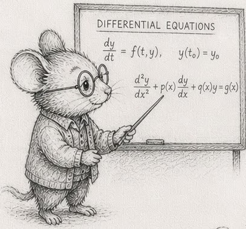
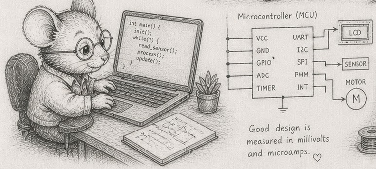

An Introduction to Programming using entity-component-systems & existence-based processing in rust
written by Bjorn Madsen updated: 2026-05-09
Read online: Codeberg · GitHub Pages
Clone source:
git clone https://codeberg.org/root-11/intro-book.git·git clone https://github.com/root-11/intro-book.git

This book teaches programming from first principles of data-oriented design, entity-component-systems (ECS), and existence-based processing (EBP). It assumes no prior programming experience and uses Rust as the only language.
The book is structured around forty-three concepts (the DAG) and their canonical wording (the glossary). Sections are short — two to three pages of prose followed by four to twelve compounding exercises. Concepts are named only after they are built: every section earns its vocabulary through working code, not the other way around.
The through-line is a small ecosystem simulator built in stages from one hundred wandering creatures to a hundred million streamed ones. The simulator’s specification is at code/sim/SPEC.md.
This is a work in progress. Section ordering is by the DAG; reading order can be linear (front to back) or by following the cross-links wherever they lead.
Who this book is for
You want to build something. You are either coming to programming from another field, or you tried it before and found that what got taught did not match what you wanted to make. You can read code; you may have written some; you have not been bitten enough to feel that programming is yours yet.
The book is for people who learn by building artifacts and want technical depth that compounds — where each new idea makes the previous one more useful, not just adds another tool to a pile. The through-line is a small ecosystem simulator that grows from a hundred creatures to a hundred million; everything you learn earns its keep on that one program, then transfers everywhere else.
It is not aimed at the median CRUD-application job market. If your goal is “any programming job, fastest,” there are faster paths. If your goal is “the kind of programmer whose programs work,” this is one of them.
Background
You should be comfortable with high-school algebra and a command line — running a command, changing directories, reading error messages without panic. A laptop with internet is enough for the first ten sections; for the rest, you will install a Rust toolchain locally.
You do not need prior programming experience, calculus, a maths degree, or any prior contact with Rust. The book teaches Rust syntax as each section needs it; the language is a vehicle, not the subject.
A first taste
Before any vocabulary is named, here is what an ECS world looks like in fifteen lines of Rust. One hundred creatures, each with a position and a velocity, moving for thirty ticks of simulated time. No structs, no traits, no libraries — four Vecs indexed in lockstep, and a function (the for i in 0..x.len() loop) that advances every creature one step.
fn main() {
let mut x: Vec<f32> = (0..100).map(|i| (i as f32) * 0.1).collect();
let mut y: Vec<f32> = (0..100).map(|i| (i as f32).sin()).collect();
let vx: Vec<f32> = (0..100).map(|i| ((i * 7) % 11) as f32 * 0.01 - 0.05).collect();
let vy: Vec<f32> = (0..100).map(|i| ((i * 13) % 7) as f32 * 0.01 - 0.03).collect();
for tick in 0..30 {
for i in 0..x.len() {
x[i] += vx[i];
y[i] += vy[i];
}
if tick % 10 == 0 {
println!("tick {tick}: creature 17 at ({:.2}, {:.2})", x[17], y[17]);
}
}
}Click play. The simulator runs in your browser, prints three lines, and stops. That is the entire shape of what the rest of the book grows: tables (the Vecs), a tick (the outer loop), a system (the inner loop). Everything that follows is the discipline that lets this same shape carry a hundred million creatures without falling apart.
Running the code
Most code blocks in the early chapters have a play button that runs the code in your browser via the Rust Playground. Click it, edit, see the result. No setup required. The deck-game exercises in §5, §9, and §10 are designed to be run this way — open the page, hit play, work through the exercises in the editor that appears.
From the simulator chapters onward, the exercises stop being self-contained snippets. They build the through-line: a working Rust program that grows from one hundred wandering creatures to a hundred million streamed ones. Running them needs a local Rust toolchain, a project that holds state between runs, and the ability to time loops on your own hardware. By that point you will want a clone of the book’s repo:
git clone https://codeberg.org/root-11/intro-book.git
cd intro-book
cargo run --release --bin sim
For the timing exercises in §1, the play button works but the numbers it produces are not yours — they come from a shared server the playground happens to be running on. The exercise asks “how fast does your machine run this?”, and that question only has a real answer locally. Click play for a first taste; then run on your own hardware for the numbers the rest of the book references.
The threshold between playground and local is fuzzy by intent. A reader on a phone or in a classroom can stay in the browser through §10. Beyond that, treat a local toolchain as part of the curriculum.
The companion edition
If you want to read the same book in a slow language and see what discipline must replace what the type system here enforces for you, the Python edition covers the same forty-four sections in Python and numpy. The architecture is identical; the language differs. Many readers find Python a useful contrast: every borrow-check error here is a runtime mistake there, and the per-chapter Python commentary names the cost.
Nomenclature
Quick reference for symbols, notation, and abbreviations the book uses. Concept definitions live in the glossary; this page covers the shorthand only.
Symbols
| Symbol | Meaning |
|---|---|
| §N | Section number — e.g., §5 refers to section 5. |
| → | Leads to / becomes / transitions to. Appears in section titles (e.g., §29 “10K → 1M”) and prose. |
[!NOTE] / [!TIP] / [!WARNING] | Callout box — content the reader should pay particular attention to. |
Text formatting
| Form | Meaning |
|---|---|
monospace | Code: types, variable names, function names, file paths. |
| italic | First definition of a term, or emphasis. |
| bold | A term being highlighted as load-bearing in the current paragraph. |
Variables you will see across chapters
| Variable | Meaning |
|---|---|
i, j | Index into a table. i is the index of the row currently under discussion. |
t or tick | Tick number — the simulator’s step counter. |
id | Stable entity identifier (an integer). |
gen | Generation counter, paired with a slot index to detect stale references (§10). |
pos, vel | Position and velocity of a creature. |
to_remove, to_insert | Buffers of pending mutations applied at end-of-tick (§22). |
Rust types used in code
| Type | What it is |
|---|---|
Vec<T> | Heap-allocated, growable array of T. The book’s “table.” |
&[T] | Read-only borrow of a contiguous slice. |
&mut [T] | Mutable borrow of a contiguous slice. |
usize | Pointer-sized unsigned integer. Used for table indices. |
u8 / u16 / u32 / u64 | Unsigned integers, sized in bits. |
f32 / f64 | 32-bit and 64-bit floats. |
Abbreviations
| Acronym | Expanded |
|---|---|
| ECS | Entity-Component-Systems |
| EBP | Existence-Based Processing |
| DOD | Data-Oriented Design |
| SoA | Structure of Arrays — each field is its own column. |
| AoS | Array of Structures — each row is its own struct. |
| DAG | Directed Acyclic Graph |
| IOPS | I/O Operations Per Second |
| TDD | Test-Driven Development |
| LRU | Least Recently Used (cache eviction policy) |
Naming in code
snake_casefor variables, functions, fields.PascalCasefor types and traits.SCREAMING_SNAKEfor constants.- File names mirror their dominant content:
creatures.rsdefines the creature table,motion.rsthe motion system.
1 — The machine model

Concept node: see the DAG and glossary entry 1.
Most explanations of “how a computer works” use a diagram with a CPU and a single big block called memory. The diagram is wrong. Memory is many things at different speeds, and which one your data sits in decides whether your program is fast or slow.
Inside the CPU there is L1 cache — small, sometimes only 32 KB per core, but a read from it costs about one nanosecond. Around it sits L2 — a few hundred KB, around 3-4 ns. Then L3 — measured in megabytes, around 10 ns. Outside the CPU sits main memory (RAM) — gigabytes, around 100 ns per read. The numbers vary by chip, but the ratios are stable: L1 is roughly a hundred times faster than RAM. Cache and RAM are the same kind of thing — bytes that the CPU reads — but they sit at very different distances from the arithmetic units.
When your code reads vec[17], the CPU does not pull just byte 17. It pulls a whole 64-byte chunk — a cache line — and keeps that line in L1. The next read of vec[18] is then almost free. Reading sequentially through a Vec is fast because every line that gets loaded is mostly used before it gets evicted. Reading at random is slow because every read costs a fresh trip to RAM.
A pointer is an address in memory. Following one — *ptr — is one memory read at an address the CPU does not get to predict. If the address is in cache, the read is fast; if not, you wait the full ~100 ns. A program with many objects and many pointers between them is a program with many of those waits.
That asymmetry is the dominant fact about modern CPUs. The arithmetic — adding, multiplying, branching — is virtually free; the cost is getting the data to the arithmetic. A program that respects this is fast. A program that ignores it can be a hundred times slower than a program that does the same work, with the same number of additions, but in a layout the cache likes.
This is also what makes “complexity class” misleading on its own. An O(N log N) algorithm that hits the cache hard can outrun a “faster” O(N) algorithm that scatters reads across RAM. Big-O describes how cost grows with N; layout describes the constant factor that gets multiplied in. At the scales this book targets, the constant factor often wins.
You will measure this in the next two sections. The numbers above are nominal — the chip in front of you may be slightly faster or slightly slower, and the ratios are what matters. Once you have felt how big the gap is, the rest of the book’s reasoning about layout, SoA, hot-cold splits, and parallelism follows naturally.
Exercises
These exercises are calibrations. Run them on your machine and write the numbers down — the rest of the book references them.
- Look up your cache sizes. On Linux,
lscpu | grep -i cachelists L1d, L1i, L2, L3 per core. Write them down. (On macOS:sysctl -a | grep cache.) These are the budgets node 25 will hold you to later. - Time a sequential sum. Build a
Vec<u64>of 100,000,000 elements (usevec![1u64; 100_000_000]), then timevec.iter().sum::<u64>(). Usestd::time::Instant. Note the time per element in nanoseconds. - Time a random-access sum. Build the same
Vec<u64>, plus aVec<usize>of 100,000,000 random indices. Time the looplet mut s = 0u64; for &i in &indices { s += vec[i]; }. Compare with exercise 2. - Find the cache cliffs. Repeat exercise 2 at sizes 1K, 10K, 100K, 1M, 10M, 100M. Plot
time/element(or just print it). Note the size at which it jumps — that’s where you spilled out of L1, then L2, then L3.
|
Note — What you see depends on your CPU. On older or smaller chips (Raspberry Pi 4 Cortex-A72, 2012 i7-3610QM, 2015 i3-5010U), the L1, L2, and L3 transitions appear as a graded staircase in ns/element. On modern desktop chips, a stronger prefetcher and wider SIMD often merge L1/L2/L3 into a single visible cliff at the L3→RAM boundary. Both are correct — both teach the same point. If you see one cliff on your machine, repeat the exercise with random indices (the §1.3 pattern) to surface the others. |
- Pointer chasing. Build a linked list of 1,000,000
Box<Node>whereNode { value: u64, next: Option<Box<Node>> }. Time a sum that walks the list. Compare with the same sum on aVec<u64>of the same length. The ratio is roughly the L1-to-RAM ratio.
|
Note — The ratio depends on your CPU. Measured: ~63× on a Raspberry Pi 4, ~100-120× on mid-2010s Intel laptops, ~300× on a modern Ryzen-class chip. The wider gap on newer hardware reflects faster cores running ahead of an unchanged DRAM latency. The order of magnitude (60-300×) is robust; the exact factor is not. Note also: a list built by |
- (stretch) Read your
lscpuoutput to your benchmarks. With your cache sizes from exercise 1 and your timings from exercise 4, identify which level of cache each size step is leaving. The transitions are not always clean — annotate where they are noisy.
Reference notes for these exercises in 01_the_machine_model_solutions.md.
What’s next
The numbers you wrote down in exercise 1 and the cliffs you found in exercise 4 are the constants behind the whole book. §2 — Numbers and how they fit takes the next step: how big is each unit of data, and how many fit in a cache line?
Solutions: 1 — The machine model
These exercises are about measuring your machine. Numbers vary; ratios are stable. Run them and write down what you see.
Exercise 1 — Cache sizes
Linux: lscpu | grep -E 'L1|L2|L3' or getconf -a | grep CACHE.
Typical desktop x86-64 in 2026: L1d 32-48 KB per core, L2 1-2 MB per core, L3 16-128 MB shared. Apple Silicon: larger L1, very large shared L2.
Exercise 2 — Sequential sum
use std::time::Instant;
fn main() {
// Playground-scaled. Use 100_000_000 locally for the real number.
let n = 10_000_000;
let v: Vec<u64> = vec![1; n];
let start = Instant::now();
let sum: u64 = v.iter().sum();
let elapsed = start.elapsed();
let ns_per_elem = elapsed.as_nanos() as f64 / v.len() as f64;
println!("sum = {sum}, {elapsed:?}, {ns_per_elem:.2} ns/elem");
}Expect somewhere around 0.2-1 ns per element on modern hardware. The loop is memory-bandwidth bound; the CPU is mostly waiting for RAM to deliver lines.
Exercise 3 — Random-access sum
use std::time::Instant;
fn main() {
// Playground-scaled. Use 100_000_000 locally for the real number.
let n: usize = 10_000_000;
let v: Vec<u64> = vec![1; n];
let mut state = 0xDEAD_BEEFu64;
let indices: Vec<usize> = (0..n)
.map(|_| {
state = state.wrapping_mul(6364136223846793005).wrapping_add(1442695040888963407);
(state as usize) % n
})
.collect();
let start = Instant::now();
let mut sum = 0u64;
for &i in &indices {
sum += v[i];
}
let elapsed = start.elapsed();
println!("sum = {sum}, {elapsed:?}, {:.2} ns/elem",
elapsed.as_nanos() as f64 / n as f64);
}Expect 30-100 ns per element — close to the RAM-latency cost. Each access misses cache.
Exercise 4 — Cache cliffs
The transitions you see roughly correspond to spilling out of L1 (~32 KB), L2 (~1-2 MB), L3 (~32 MB). Below L1 you should see ~0.1-0.3 ns/elem. In L3 maybe 0.5-1.5 ns. Past L3, 0.5-3 ns (sequential, since prefetcher helps even from RAM).
For random-access cliffs (a more dramatic plot), repeat exercise 3 at sizes 1K, 10K, 100K, 1M, 10M, 100M. The transitions are sharper.
Exercise 5 — Pointer chasing
use std::time::Instant;
struct Node { value: u64, next: Option<Box<Node>> }
fn build(n: usize) -> Box<Node> {
let mut head = Box::new(Node { value: 1, next: None });
for _ in 1..n {
head = Box::new(Node { value: 1, next: Some(head) });
}
head
}
fn sum(mut head: &Node) -> u64 {
let mut s = 0;
loop {
s += head.value;
match &head.next {
Some(next) => head = next,
None => break s,
}
}
}
fn main() {
// Playground-scaled. Use 1_000_000 locally for the real number.
let n = 100_000;
let head = build(n);
let start = Instant::now();
let s = sum(&head);
let elapsed = start.elapsed();
println!("sum = {s}, {elapsed:?}, {:.2} ns/elem",
elapsed.as_nanos() as f64 / n as f64);
}A Vec<u64> sum is roughly 1 ns/elem; the linked-list walk is roughly 50-100 ns/elem. The ratio is the L1-to-RAM gap from the prose.
Important: building the linked list with deep recursion would blow the stack at large N. The build function above uses a loop precisely so it can scale. The sum is also iterative — a recursive walk would blow the stack on the way down.
Exercise 6 — Reading lscpu against your benchmarks
The transitions are noisy because:
- Cache levels overlap (a hot cache line might still be in L1 after spilling to L2).
- Hardware prefetchers help sequential reads.
- The OS may evict pages between runs.
If your noise is worse than your signal, run each measurement multiple times and take the median.
2 — Numbers and how they fit
Concept node: see the DAG and glossary entry 2.
A cache line is 64 bytes. That is the unit of memory the CPU loads at a time. Everything you do with data is, in part, a question of how many things fit in 64 bytes.
Rust gives you several integer widths: u8 (one byte, range 0..256), u16 (two bytes, 0..65 536), u32 (four bytes, around four billion), u64 (eight bytes, around 1.8×10¹⁹). The signed versions — i8, i16, i32, i64 — use one bit for the sign and the rest for magnitude. For floating-point: f32 (four bytes, ~7 decimal digits of precision), f64 (eight bytes, ~15 decimal digits).
A Vec<u8> of length N is N bytes. A Vec<u64> is 8N bytes. So a Vec<u8> fits 64 elements per cache line; a Vec<u64> fits 8. If your loop touches one element per cache line, the u64 version makes 8× as many memory loads as the u8 version.
This is the width budget. Picking a wider type than you need is not free; it costs cache lines, and at the scales this book targets, cache lines are the budget you spend.
The rule is simple: pick the narrowest type that holds your range, and write down why. A 52-card deck’s suits need 4 values, ranks need 13, locations need maybe 8 — all fit in u8. A creature’s pos needs about ten kilometres of grid resolved to centimetre precision; that fits in f32. A timestamp in microseconds for a year-long simulation needs something like 3×10¹³, which does not fit in u32 (4×10⁹) but fits comfortably in u64. Choose, and write the choice down.
Floats are the trickier case. They look like real numbers but are not. There are only about 4 billion f32 values; there are only about 18 quintillion f64 values; that is finite. Operations have edges: 1.0 / 0.0 = inf, 0.0 / 0.0 = NaN, and NaN != NaN — yes, equality is broken on purpose, because there is no reasonable answer. Subtracting two nearly equal floats loses most of their precision (this is catastrophic cancellation). Adding a tiny float to a large one quietly drops the tiny one (this is absorption). None of this is a problem if you know it is there; all of it is a problem if you assume floats are mathematics.
Most of this book uses u8, u16, u32, f32, and u64 for time. i* and f64 appear when the range or precision genuinely demands it. The choice is documented at every column declaration.
Exercises
- Sizes. Print
std::mem::size_of::<u8>(),<u16>,<u32>,<u64>,<i32>,<f32>,<f64>,<usize>. Confirmusizeis 8 on a 64-bit machine. - Cache-line packing. For each type above, compute how many fit in a 64-byte cache line. A
Vec<u32>of 16 elements is exactly one line; aVec<u64>of 8 elements is exactly one line. - Width and speed. Sum a
Vec<u8>of 100,000,000 ones, then aVec<u64>of the same length. Compare times. Some of the difference is memory bandwidth (8× more bytes); some is cache pressure. - Float weirdness. Compute
0.0_f64 / 0.0_f64,1.0_f64 / 0.0_f64, and(0.0_f64).sqrt(). Print them. Then checklet nan = 0.0_f64 / 0.0_f64; assert!(nan != nan);— confirm it does not panic. - Catastrophic cancellation. Compute
1e10_f32 - (1e10_f32 - 1.0_f32). The result should be1.0; onf32it usually is not. Repeat withf64and observe it gets closer. - Choose a width. For each of these columns, write down the type you would pick and why: a creature’s age in ticks at 30 Hz over a year-long simulation; a card’s suit; the pixel count of a 4K screen; the user id in a system with up to 100 million users; an audio sample value in 16-bit PCM.
- (stretch) The actual range of
f32. Read thef32documentation. What isf32::MAX?f32::EPSILON? What does the latter mean for a sum of small numbers?
Reference notes in 02_numbers_and_how_they_fit_solutions.md.
What’s next
§3 — The Vec is a table takes the next step: now that you know how big the elements are, what does a Vec<T> do with them?
Solutions: 2 — Numbers and how they fit
Exercise 1 — Sizes
use std::mem::size_of;
fn main() {
println!("u8: {}", size_of::<u8>()); // 1
println!("u16: {}", size_of::<u16>()); // 2
println!("u32: {}", size_of::<u32>()); // 4
println!("u64: {}", size_of::<u64>()); // 8
println!("i32: {}", size_of::<i32>()); // 4
println!("f32: {}", size_of::<f32>()); // 4
println!("f64: {}", size_of::<f64>()); // 8
println!("usize: {}", size_of::<usize>()); // 8 on 64-bit
}Exercise 2 — Cache-line packing
| type | bytes | per 64-byte line |
|---|---|---|
u8 | 1 | 64 |
u16 | 2 | 32 |
u32 | 4 | 16 |
u64 | 8 | 8 |
f32 | 4 | 16 |
f64 | 8 | 8 |
Exercise 3 — Width and speed
A Vec<u8> sum reads roughly 1/8 the bytes that a Vec<u64> sum does. Modern CPUs are usually memory-bandwidth bound on simple sums, so expect about 4-8× speed difference (not always 8×, because the small-element loop may not auto-vectorise as well, or because the wider type fits more arithmetic per instruction).
Exercise 4 — Float weirdness
0.0 / 0.0 = NaN
1.0 / 0.0 = inf
(-1.0).sqrt() = NaN
let nan = 0.0_f64 / 0.0_f64;
nan != nan // true!
NaN != NaN is by IEEE 754 definition: there is no sensible value to compare with, so equality is false. assert!(nan == nan) would panic; we want assert!(nan != nan).
Exercise 5 — Catastrophic cancellation
#![allow(unused)]
fn main() {
let a: f32 = 1e10;
let b: f32 = 1e10 - 1.0; // f32 may not even represent this distinctly
println!("{}", a - b); // expected 1.0; you may get 0.0 or 2.0 or 1024.0
let a: f64 = 1e10;
let b: f64 = 1e10 - 1.0;
println!("{}", a - b); // closer to 1.0
}f32 has ~7 decimal digits; 1e10 already exhausts those. f64 has ~15.
Exercise 6 — Choose a width
| column | type | reasoning |
|---|---|---|
| age in ticks at 30 Hz × 1 yr | u32 | 30 × 60 × 60 × 24 × 365 ≈ 9.5×10⁸; fits in u32 |
| card suit | u8 | 4 values |
| 4K pixel count | u32 | 8.3 million pixels |
| user id, 100M users | u32 | 4×10⁹ headroom |
| 16-bit PCM sample | i16 | the format defines it |
Exercise 7 — f32 ranges
f32::MAX ≈ 3.4×10³⁸. f32::EPSILON ≈ 1.2×10⁻⁷. EPSILON is the smallest x for which 1.0 + x ≠ 1.0. Adding many EPSILON-scale numbers to a large value can therefore not increase it — they get absorbed. Summing 10⁹ small floats is often less accurate than summing them in pairs (a Kahan sum fixes this).
3 — The Vec is a table
Concept node: see the DAG and glossary entry 3.

A Vec<T> is three things stored on the stack: a pointer to a contiguous run of T values on the heap, the current length, and the current capacity. The values themselves live on the heap, side by side, with no padding between them. vec[i] computes ptr + i * size_of::<T>() and reads.
This is the only container the trunk of this book uses. There are no hash maps, no linked lists, no trees — not because they do not exist, but because almost every problem the book teaches is a problem of “process all the rows of a table”, and a Vec<T> is the table. Adding any other container costs cache, costs allocations, and breaks the sequential-access pattern that nodes 1 and 2 just told you to want.
vec.push(x) adds an element. If there is capacity, it writes into the next slot — O(1). If not, it allocates a larger heap region (typically twice the current capacity), copies everything across, and frees the old one. Amortised over many pushes that is O(1), but each individual push might be expensive. If you know how many elements you are going to insert, Vec::with_capacity(n) allocates once and avoids the copies.
vec.swap_remove(i) removes the element at i in O(1) by moving the last element into the freed slot. Order is sacrificed for speed. This will earn its keep at §21.
vec.iter() walks the slots in order. The compiler can usually turn this into a tight memory-bandwidth-bound loop with auto-vectorisation. vec.iter_mut() does the same, with mutation.
A &[T] is a slice — a pointer plus a length, without the capacity. It is what functions usually take when they want to read a Vec without owning it. &mut [T] is the same with mutation. Most systems in this book have signatures like fn motion(pos: &mut [Pos], vel: &[Vel]) — read this, write that, no ownership taken.
That is the full vocabulary you need from Vec for the next several phases. Everything else (HashMap, BTreeMap, Box<Node>, Rc<RefCell<T>>, LinkedList) is something you will reach for only when an exercise demands it and the from-scratch test (node 40) shows it earns its weight.
Exercises
- Layout. Print
std::mem::size_of::<Vec<u32>>(). It should be 24 on a 64-bit machine — three pointer-sized fields. Notice that the size of the Vec value does not depend on how many elements it holds. - Capacity vs length. Build
let mut v: Vec<u32> = Vec::new();. In a loop from 0 to 100, printv.len()andv.capacity()after eachv.push(i). Observe the capacity doubling pattern: 0, 4, 8, 16, 32, 64, 128. - Pre-size. Build
let mut v = Vec::with_capacity(100);and push 100 elements. Printlenandcapacityonce at the end. There were no reallocations. - Indexing cost. Time
vec[i]on a 1MVec<u32>accessed sequentially. Compare with the same access on aHashMap<usize, u32>of the same size. SequentialVecreads should be ~10-100× faster.
|
Note — Measured ratios: ~65× on a Raspberry Pi 4, ~75-90× on mid-2010s Intel laptops, ~175× on a modern Ryzen-class chip. All use Rust’s default |
swap_removevsremove. Build aVec<u32>of 1,000,000 elements. Time removing 100 elements from the middle withvec.remove(500_000)(in a loop, because eachremoveshifts roughly half the vector). Time the same withvec.swap_remove(500_000). Note the orders-of-magnitude difference.- Slices in function signatures. Write
fn sum(xs: &[u32]) -> u64. Call it withsum(&v)wherev: Vec<u32>. Note that you did not have to write&v[..]— the conversion is automatic. - (stretch) A from-scratch
MyVec<u32>. ImplementMyVecwith a raw pointer, length, and capacity. Implementnew,push,get, andDrop. (You will useunsafe. Read the Rustonomicon’sVecchapter when stuck.) Convince yourself aVec<T>is a few hundred lines of careful work, no magic.
Reference notes in 03_the_vec_is_a_table_solutions.md.
What’s next
§4 — Cost is layout, and you have a budget is where the layout reasoning from §1 and §2 meets the per-tick clock the rest of the book runs on. After that, §5 — Identity is an integer is the card game.
Solutions: 3 — The Vec is a table
Exercise 1 — Layout
use std::mem::size_of;
fn main() {
println!("Vec<u32> = {}", size_of::<Vec<u32>>()); // 24
println!("Vec<u64> = {}", size_of::<Vec<u64>>()); // 24
println!("Vec<u8> = {}", size_of::<Vec<u8>>()); // 24
}A Vec<T> is always 24 bytes on a 64-bit machine (three 8-byte fields: ptr, len, cap), regardless of T. The element data lives elsewhere on the heap.
Exercise 2 — Capacity growth
#![allow(unused)]
fn main() {
let mut v: Vec<u32> = Vec::new();
for i in 0..100 {
v.push(i);
if v.len().is_power_of_two() || v.len() < 5 {
println!("len={}, cap={}", v.len(), v.capacity());
}
}
}Output (Rust’s current strategy roughly doubles, but starts at 4):
len=1, cap=4
len=2, cap=4
len=4, cap=4
len=8, cap=8
len=16, cap=16
len=32, cap=32
len=64, cap=64
Each transition is a reallocation: a new heap region is allocated, all elements are memcpy’d across, the old one is freed.
Exercise 3 — Pre-size
#![allow(unused)]
fn main() {
let mut v = Vec::with_capacity(100);
for i in 0..100 { v.push(i); }
println!("len={}, cap={}", v.len(), v.capacity()); // len=100, cap=100
}No reallocations happened. This is the right pattern when you know the upper bound — and most simulations do.
Exercise 4 — Indexing cost
A sequential Vec<u32> sum runs ~1 ns/elem. A HashMap<usize, u32> lookup costs ~50-100 ns each (hash, probe, compare). Multiple orders of magnitude.
Exercise 5 — swap_remove vs remove
100 calls to vec.remove(500_000) on a 1M Vec<u32> move ~50 million elements (each remove shifts ~half the vector). At ~1 ns per move that is ~50 ms total.
100 calls to vec.swap_remove(500_000) on the same vector move 100 elements total — under a microsecond.
The factor is roughly N / 2. For 1 million entries, that is half a million times faster.
Exercise 6 — Slices in function signatures
#![allow(unused)]
fn main() {
fn sum(xs: &[u32]) -> u64 {
xs.iter().map(|&x| x as u64).sum()
}
let v: Vec<u32> = (0..1000).collect();
let total = sum(&v); // &Vec<u32> auto-derefs to &[u32]
}The function takes a slice; the caller passes &v. The conversion (Deref) is automatic. This is why almost every system in the book has signatures over &[T] and &mut [T], not &Vec<T>.
Exercise 7 — A from-scratch MyVec<u32>
The full implementation is in the Rustonomicon; about 200 lines including tests. The key shape:
#![allow(unused)]
fn main() {
struct MyVec<T> {
ptr: NonNull<T>,
len: usize,
cap: usize,
}
}new starts with cap = 0 and a dangling pointer. push allocates on first push (grow), then doubles capacity when full. get returns Option<&T> with bounds check. Drop frees both elements (running their destructors) and the heap allocation.
Working through this once is the cheapest way to convince yourself a Vec<T> is a small piece of careful work — and to internalise §42 — You can only fix what you wrote.
4 — Cost is layout — and you have a budget
Concept node: see the DAG and glossary entry 4.
A program runs at some target rate. A game runs at 30 Hz or 60 Hz; an audio loop at 48 kHz; a control loop at 1 kHz; an interactive shell at “as fast as a human can type”. The target rate sets a budget — the time available for one tick of work.
| Target rate | Budget per tick |
|---|---|
| 30 Hz | 33 ms |
| 60 Hz | 17 ms |
| 1000 Hz | 1 ms |
| 1 000 000 | 1 µs |
Every operation the program does in one tick spends from that budget. Operations have very different costs: the arithmetic is virtually free, an L1 read is around 1 ns, an L3 read is around 10 ns, a RAM read is around 100 ns, a disk read is around 100 µs, a network round-trip is around 100 ms. A 30 Hz program spending one disk read per tick has lost a third of its budget on one operation.
|
Note — Three regimes are worth naming, because the rest of the book references them. A loop is compute-bound when its cost is dominated by arithmetic — typically when the data fits in L1 and the inner instructions are heavy (dot products, transcendentals, integer divides). It is bandwidth-bound when its cost is dominated by how fast the memory subsystem can deliver bytes — typically when the working set is bigger than L3 but the access pattern is sequential, so the prefetcher can fill lines ahead of demand. It is latency-bound when its cost is dominated by individual memory round-trips — typically when the access pattern is random, so the prefetcher cannot help. The three regimes have very different time budgets and very different power profiles. A sequential |
The unit of accounting is time — microseconds for most real-time work, nanoseconds for tight inner loops. A 30 Hz tick has 33 ms (33 000 µs) of budget; a 1 kHz tick has 1 000 µs; a 1 MHz tick has 1 µs. When a teacher asks you “what does this function cost?”, they are asking how many microseconds it takes. A function that costs 100 µs out of a 33 000 µs budget is fine — about 0.3% of the tick. The same function in a 1 000 µs budget is 10% of the tick. The same function in a 1 µs budget does not exist; there is no room for it.
Cost is also layout. The same algorithm that costs 100 µs on a sequential Vec may cost 5 ms on a hash map of the same size, because the loads scatter. Two programs with the same big-O complexity can differ by an order of magnitude on the same hardware, just because of where their data sits.
This gives you a design rule. Decide your target rate before you decide anything else. That sets the budget. Then when you choose data structures, ask whether the resulting working set fits in cache; ask how many memory loads per row your inner loop does; ask whether any single operation in the loop dominates the budget. Most decisions become forced once the budget is named.
The reverse direction is also useful. If you find yourself wanting to add something to the inner loop — a database query, a HashMap lookup, an allocation — count its cost in microseconds against the budget. Often the answer is “this single addition uses 80% of my tick”, and the right move is not to optimise it but to lift it out of the inner loop entirely.

The shape of this thinking is familiar to engineers in other domains. An electrical engineer designs a circuit by counting milliamps against a current budget. A structural engineer counts kilonewtons against a load budget. The data-oriented programmer counts memory loads and microseconds against a tick budget. Good design is measured in millivolts and microamps — and in nanoseconds and microseconds.
|
Note — Time is one budget. Power is another. Cache hits are energetically nearly free — the data is already next to the arithmetic units. Cache misses fire up the memory controller, the bus drivers, sometimes a DRAM refresh; that is where the watts go. A loop that fits in L2 spends most of its time on cheap arithmetic; a loop that pointer-chases through RAM spends most of its time waiting, and during the waiting the CPU drops clocks and the chip stays cool. The same SoA-and-sequential-access discipline that fits the time budget also fits a power budget. For embedded, mobile, control, and battery-powered work, power is the primary budget; time is downstream of it. The “millivolts and microamps” line above is literal, not metaphor. |
Exercises
-
Pick your rates. For each of these systems, name a plausible target rate and the resulting per-tick budget: a card game; a real-time strategy game; a market data feed; an embedded sensor controller; a web API endpoint a user is waiting for; an offline batch job that processes a billion rows.
-
Count an operation. Time a single
HashMap::geton a map of 1 000 000 entries. Note its cost in microseconds. How many can you fit in a 30 Hz tick (33 ms)? In a 1 kHz tick (1 ms)? -
The layout difference. Sum 1 000 000
u64s in aVec<u64>. Sum 1 000 000u64s in aHashMap<u32, u64>. Both are O(N). What is the per-element time difference (in nanoseconds)? Where did it go? -
The cliff. With your numbers from §1 exercise 4, pick a
Vecsize that just fits in L2 and one that just doesn’t. Time a sum loop at each size. The cliff is real. -
Working backwards from the budget. You target 60 Hz; your inner loop runs over 100 000 entities; each entity touches one cache line. Estimate the cost of the loop in microseconds and compare to your 60 Hz budget (16 666 µs). Where is your headroom?
-
A bad design. Construct a design that is “obviously fast” by big-O reasoning but blows the 30 Hz budget on a million entities. (Hint: object-graph traversal with one heap allocation per node is a classic.)
-
Find your CPU’s TDP. Look up your CPU’s rated thermal design power on the manufacturer’s spec sheet, or read it locally on Linux with
sudo dmidecode -t processor | grep -i 'power\|TDP'. Note the value. TDP is what the chip can dissipate sustained without thermal throttling — burst can be 1.5-2× higher for tens of seconds; sustained settles back to TDP. -
Battery budget. A typical laptop battery holds about 50 Wh. Your simulator runs at 30 Hz and draws an average of 8 W (mostly memory bandwidth on the inner loop). How many hours of simulation does a full charge buy? If a layout change pushes more loads to RAM and raises the average draw to 14 W, how many hours then? Express the cost of the layout change as a percentage of battery life.
-
Measure delta power. A ready-made workload generator lives at
code/measurement/. In one terminal:cargo run --release --bin power_loop -- sequential(then in a second run:... -- random). In another terminal, while the loop is running:sudo perf stat -a -e power/energy-pkg/ -- sleep 30reads the package-energy counter over 30 seconds. Run the perf command three times — idle, sequential, random — and write the joules down. Convert each to average watts. The random-access run should draw more watts than the sequential one, which should draw more than idle.While you are there: from
power_loop’s iteration count, compute your sequential read bandwidth —iterations × 10⁷ × 8 / 45gives bytes per second — and compare to the published peak of your DDR generation. If you get within a factor of two of peak, your inner loop is bandwidth-bound (the regime named in the prose). Therandommode’s iteration count, divided into wall time, gives your effective per-element latency in nanoseconds; that is the latency-bound regime. -
(stretch) Joules per access. Approximate energies per memory read: L1 hit ≈ 0.1 nJ, L2 ≈ 1 nJ, RAM ≈ 30 nJ (rough; published numbers vary by chip and process). Estimate the total energy of summing 10⁷
u64s sequentially (mostly prefetched, near-L1 cost) versus by random indices (mostly RAM misses). Convert both to milliwatt-hours and express as a fraction of a 50 Wh battery. The absolute numbers are tiny; the ratio is what your battery life and your data-centre electricity bill care about.
Reference notes in 04_cost_and_budget_solutions.md.
What’s next
You now have the machine model (§1), the data widths (§2), the table primitive (§3), and the budget calculus (§4). The next section is the conceptual heart of the book: §5 — Identity is an integer. The card game is waiting.
Solutions: 4 — Cost is layout, and you have a budget
Exercise 1 — Picking rates
| system | plausible rate | budget |
|---|---|---|
| card game | turn-based; budget per move maybe 100 ms (responsive feel) | — |
| real-time strategy game | 30-60 Hz | 17-33 ms |
| market data feed | 1 kHz to 100 kHz | 10 µs to 1 ms |
| embedded sensor controller | 1-10 kHz | 100 µs to 1 ms |
| web API endpoint user is waiting for | rate is per-request; budget ~50-200 ms is “fast” | — |
| offline batch over 1B rows | not real-time; budget set by total time, e.g. “complete in under 1 hour” |
The lesson is: every system has a rate, even ones not described as “real-time”. Naming it makes the budget visible.
Exercise 2 — Count an operation
HashMap::get on 1M entries: typically 50-150 ns. Pick the middle: 100 ns = 0.1 µs. In a 30 Hz tick (33 333 µs) you can fit 33 333 / 0.1 ≈ 330 000 lookups. In a 1 kHz tick (1 000 µs) you can fit 10 000.
If your “for each entity, look up something” loop has 1 000 000 entities, neither tick budget fits — you must restructure (a sorted index, a join, a column lookup) or accept a slower rate.
Exercise 3 — The layout difference
Vec<u64> sum: ~1 ns/elem.
HashMap<u32, u64> sum: ~50-100 ns/elem.
50-100× difference for the same total work. Most of it goes to memory: hash maps have one cache line per bucket, the buckets aren’t sequential, the hash itself touches more bytes per access. Big-O is the same; constant factor decides.
Exercise 4 — The cliff
For a typical desktop with 1 MB L2:
- 100 000
u64= 800 KB → fits in L2 → ~1 ns/elem. - 1 000 000
u64= 8 MB → spills L2 into L3 → ~2-4 ns/elem.
Compute the fraction of the budget by ratio. At 30 Hz (33 333 µs), 1M elements at 1 ns each is 1000 µs ≈ 3% of the budget. At 4 ns each, 4000 µs ≈ 12% of the budget. The cliff is real.
Exercise 5 — Working backwards
60 Hz tick: 16 666 µs = 16 666 000 ns. 100 000 entities × one cache line each. A cache line takes ~1-3 ns to load if sequential (L2/L3) or ~20-100 ns if random (RAM).
Sequential: 100 000 × 2 ns = 200 µs = 1.2% of the tick. Lots of headroom. Random RAM: 100 000 × 50 ns = 5 000 µs = 30% of the tick. Tight but possible. Random pointer-chase to scattered allocations: 100 000 × 100 ns = 10 000 µs = 60% of the tick. One inner loop, sixty percent. No headroom for anything else.
The lesson: ask whether the access is sequential before estimating.
Exercise 6 — A bad design
The classic: a graph of Box<Node> allocated by many small calls to Box::new, then iterated by following pointers. Each node is a separate heap allocation, scattered across the heap by the allocator. A million-node “linked structure” is a million RAM round-trips per traversal: 100 ns × 10⁶ = 100 ms — three full 30 Hz ticks for one traversal.
The same data laid out as a Vec<Node> (or, better, as SoA: Vec<u32> of values plus Vec<u32> of next-indices) traverses in 1-2 ms — fifty times faster, same algorithm, different layout. This is the whole book’s premise in one number.
Exercise 7 — Find your CPU’s TDP
Typical 2026 ranges:
- AMD Ryzen 9 mobile (e.g. 7940HS, 8945HS): cTDP 35-54 W (configurable).
- AMD Ryzen 9 desktop (e.g. 9950X): TDP 170 W; PPT (sustained) up to 230 W.
- Intel Core i9-13900H (mobile): PL1 45 W, PL2 115 W.
- Apple M3 Pro: roughly 25-35 W under sustained load.
A “TDP” number is the sustained envelope; burst (PL2 on Intel, PPT on AMD) can run 1.5-3× higher for tens of seconds before thermal/PPT limits clamp it back. For a sim that runs continuously, the sustained number is the budget that matters.
Exercise 8 — Battery budget
50 Wh ÷ 8 W = 6.25 hours. 50 Wh ÷ 14 W = ~3.57 hours.
The 75% rise in average draw (8→14 W) cuts battery life by 43%. A layout change that pushes loads to RAM is not a footnote on the time budget; it is a roughly halving of how long the laptop runs on one charge.
Exercise 9 — Measure delta power
The workload generator at code/measurement/src/bin/power_loop.rs takes one argument (sequential or random) and runs the chosen workload in a tight loop for 45 s — long enough to outlast a 30 s perf stat window comfortably. Build once with cargo build --release --bin power_loop inside code/measurement/, then run from a terminal:
# Terminal 1: pick a mode
cargo run --release --bin power_loop -- sequential
# (or: cargo run --release --bin power_loop -- random)
# Terminal 2: measure during a fresh start of the workload
sudo perf stat -a -e power/energy-pkg/ -- sleep 30
For the idle reading, run the perf command with no workload running. Permissions: sudo is usually required; sudo sysctl kernel.perf_event_paranoid=0 is the alternative if you don’t want to keep typing the password.
Reading the power_loop output
The binary prints something like:
sequential: summing 10000000 u64 elements in order for 45s
done: 29131 iterations in 45.000658338s — sum = 291310000000 ...
From the iteration count you can compute throughput:
elements per second = iterations × N / wall time
= 29131 × 10_000_000 / 45 s
= 6.47 × 10⁹ elements/s
read bandwidth = elements/s × 8 bytes
= 52 GB/s
ns per element = wall time / total elements
= 45 × 10⁹ ns / (29131 × 10⁷)
= 0.15 ns/element
52 GB/s is close to the practical peak of dual-channel DDR5-5600 (~60 GB/s sustained from a typical workload). The loop is bandwidth-bound: the CPU can consume bytes faster than the memory subsystem can deliver them, so the prefetcher and SIMD are saturating the channel. There is essentially no slack left in the sequential read path on this hardware.
The random-access run will show a very different number. Expect the iteration count to drop by a factor of 50-300, because each element costs a full RAM round-trip (~50-100 ns) instead of being delivered in a sequential stream (~0.15 ns).
Reading the perf stat output
perf stat -a -e power/energy-pkg/ -- sleep 30 prints something like:
56.58 Joules power/energy-pkg/
30.001766291 seconds time elapsed
Compute average watts:
average watts = joules / seconds = 56.58 / 30 = 1.89 W
That is the package power for the whole 30-second window, including all process activity on the machine. The per-process number is rarely what you want; the package-level number is what your battery, cooling fan, and electricity bill see.
Typical numbers
- Idle (trimmed Linux install): 2-8 W. A Ryzen 9 mobile on Arch Linux with no background work reports 1.89 W in one of this book’s draft sessions — exceptional but real. The cores are spending most of the window in deep C-states.
- Sequential
power_loop: idle + 5-10 W. Bandwidth-bound: memory controller and SIMD units are working hard but the CPU also drops clocks during the prefetcher’s brief refills. High utilisation but not thermally maxed. - Random
power_loop: idle + 10-25 W. Memory subsystem is working similarly hard, but now CPU stalls on every access cannot be filled by the prefetcher. Stalls do not save power if the rest of the chip stays active — clocks remain elevated while waiting for lines.
For perspective, the chip’s cTDP is 35-54 W. That is the sustained envelope under heavy load, not a soft cap; bursts can briefly exceed it.
The lesson
Sequential vs random over the same data, the same size, the same arithmetic:
- ~300× difference in time per element (0.15 ns vs ~50 ns)
- ~2-3× difference in instantaneous watts
- ~600-1000× difference in joules per element processed
Notice that the energy ratio is the product of the time ratio and the power ratio. Energy is power × time; when a layout choice slows things down and draws more watts, the two effects compound multiplicatively. A workload that is 300× slower and 3× more power-hungry is 900× more energy-expensive — not 303×. Slow workloads pay twice: once in elapsed seconds, once in watts per second.
Layout-aware programming is power-aware programming. The bandwidth-bound path keeps the chip cool and fast; the latency-bound path keeps it hot and slow. Two paths, one chip, one decision: where does the data sit?
Exercise 10 — Joules per access
10⁷ sequential u64 reads: each line carries 8 elements, so 1.25 × 10⁶ line loads. Most are served from the prefetcher’s pipeline (effectively L1-priced after the first miss in a stream), so use ~0.5 nJ per element on average. Total: 10⁷ × 0.5 nJ = 5 mJ.
10⁷ random u64 reads: every access is a fresh L3-or-RAM miss. Use ~30 nJ per element. Total: 10⁷ × 30 nJ = 300 mJ.
Ratio: 60×.
As a fraction of a 50 Wh battery (50 × 3600 = 180,000 J):
- Sequential: 5 × 10⁻³ J / 180,000 J ≈ 2.8 × 10⁻⁸ of a charge — negligible per run.
- Random: 300 × 10⁻³ J / 180,000 J ≈ 1.7 × 10⁻⁶ of a charge — still small per run.
The absolute numbers are tiny; the ratio is what scales. Run that loop ten million times a day across a fleet of devices and the choice of layout becomes the difference between a noticeable cooling-fan hum and a silent machine — and, at data-centre scale, a measurable line item on the electricity bill.
5 — Identity is an integer

Concept node: see the DAG and glossary entry 5.
Hand a programmer fifty-two cards and tell them to write code that shuffles, sorts, and deals. Ask how long.
Most will start drawing classes — Card, Deck, Hand, Player, maybe a Game — and quote you four hours. They are being honest. The class hierarchy is real work. There will be constructors, copy semantics, and a vague unease about whether Hand should hold pointers or values, whether Deck owns its cards or borrows them, whether shuffling should mutate the deck or return a new one.
The whole problem fits in three lines. The way it fits is the lesson of this section.
A deck of cards has three pieces of information per card: its suit (♠ ♥ ♦ ♣), its rank (A, 2, …, K), and its current location (in the deck, in someone’s hand, in the discard pile). That is three columns. The deck itself is fifty-two rows.
In Rust:
#![allow(unused)]
fn main() {
let suits: Vec<u8> = vec![ /* 52 entries: 0..4 */ ];
let ranks: Vec<u8> = vec![ /* 52 entries: 0..13 */ ];
let locations: Vec<u8> = vec![ /* 52 entries: 0=deck, 1=hand1, ... */ ];
}That is the deck. There is no Card struct. There is no Deck class. The card at index 17 has its suit at suits[17], its rank at ranks[17], and its current location at locations[17]. The card is the index.
Dealing a card from the deck to player 1 is one line:
#![allow(unused)]
fn main() {
locations[17] = 1; // card 17 is now in player 1's hand
}Asking what’s in player 1’s hand is one loop:
#![allow(unused)]
fn main() {
let mut hand: Vec<usize> = Vec::new();
for i in 0..52 {
if locations[i] == 1 {
hand.push(i);
}
}
}Asking how many cards are left in the deck is one counter:
#![allow(unused)]
fn main() {
let mut count = 0u32;
for i in 0..52 {
if locations[i] == 0 { count += 1; }
}
}Shuffling — the move students expect to be hard — is shuffling the order of indices. 0..52 becomes [7, 32, 1, 19, ...], and you read your way through the cards in that order:
#![allow(unused)]
fn main() {
let mut order: Vec<usize> = (0..52).collect();
fisher_yates(&mut order, &mut rng); // 5 lines, written below
}Look at what just happened. Nothing about the cards changed. suits[17], ranks[17], and locations[17] are exactly the values they were before. The shuffle moved indices, not data.
Sorting works the same way. To sort by suit then rank, you sort the indices by (suits[i], ranks[i]):
#![allow(unused)]
fn main() {
order.sort_by_key(|&i| (suits[i], ranks[i]));
}The cards do not move. Their identifiers are reordered.
That’s the deck of cards in maybe twenty lines of Rust. It includes shuffle, sort, deal, and several queries. It is not a stylistic shortcut; it is what a deck of cards is. The OOP version’s four hours of work was the cost of pretending a card was an object that owned its suit and rank, when actually a card is one number — an index — and its suit and rank are values stored in arrays at that index.
We call this identity-is-an-integer, and it is the precondition for every economy the rest of this book buys you. Persistence will work because tables are easy to serialise. Parallelism will work because indices are cheap to partition. Replay will work because a deck is just three arrays in a state. None of it works if you reach for class Card.
|
Note — The strong form, which we will return to later: sometimes you do not even need the index. The pair |
Exercises
The first time through, write everything from scratch in src/main.rs. Resist the urge to add a Card struct or helper methods. Three Vecs.
- Build the deck. Write
fn new_deck() -> (Vec<u8>, Vec<u8>, Vec<u8>)that returns the suits, ranks, and locations for a fresh, ordered deck (all 52 inlocation 0 = deck). - Print a card. Write
fn card_to_string(suit: u8, rank: u8) -> Stringthat returns strings like"A♠","10♥","K♦". Use it to print the whole deck. - Shuffle. Write a tiny LCG random function (one-liner) and use it to implement Fisher-Yates on a
Vec<usize>. Print the deck in shuffled order. Confirm by inspection that thesuits,ranks, andlocationsarrays are unchanged. - Sort by suit then rank. Sort the
ordervector so suits come out grouped, ranks ascending within each suit. Print again. Once again, the deck arrays are unchanged. - Deal a hand. Move the first 5 cards from the deck (location 0) to player 1 (location 1). Print player 1’s hand using
card_to_string. - Hand query. Write
fn cards_held_by(locations: &[u8], player: u8) -> Vec<usize>returning all card indices currently held by a given player. - Count by location. Write a function that returns counts grouped by location: how many in the deck, in each hand, in discard.
- Deal four hands. Deal 5 cards to each of players 1, 2, 3, 4. Print all four hands.
- (stretch) Drop the index. Rewrite
cards_held_byto returnVec<(u8, u8)>of (suit, rank) pairs directly — no indices. What does this make easier? What does it make harder? (Hint: you cannot move the cards back to the deck without knowing whichithey were.) - (stretch) The sort hazard. While player 1 is holding indices
[3, 17, 21, 28, 41], sort the deck arrays themselves (not just the order) by suit. What does player 1 think they hold now? This is the bug node 9 (“sort breaks indices”) was written for. Don’t fix it yet — observe it.
Reference solutions for exercises 1-3 in 05_identity_is_an_integer_solutions.md. Solutions for the rest follow the same shape.
What’s next
Exercise 10 leaves you with a bug. The next section (§9 — Sort breaks indices) is the fix; it teaches you to keep a stable id alongside the position so external references survive reordering.
Solutions: 5 — Identity is an integer
Reference solutions for the exercises in 05_identity_is_an_integer.md. Try the exercises first.
Exercise 1 — Build the deck
#![allow(unused)]
fn main() {
fn new_deck() -> (Vec<u8>, Vec<u8>, Vec<u8>) {
let mut suits = Vec::with_capacity(52);
let mut ranks = Vec::with_capacity(52);
let mut locations = Vec::with_capacity(52);
for s in 0..4u8 {
for r in 0..13u8 {
suits.push(s);
ranks.push(r);
locations.push(0); // 0 = in the deck
}
}
(suits, ranks, locations)
}
}The order of insertion sets the index-to-card mapping. Spades fill indices 0-12, hearts 13-25, and so on. The Ace of Spades is at index 0; the King of Clubs at index 51.
Vec::with_capacity(52) is a small but honest gesture: the size is known up front, so we ask for exactly that much memory. No reallocation, no surprise. This is constant-quantity behaviour — node 27 will explain why it matters at a million.
Exercise 2 — Print a card
#![allow(unused)]
fn main() {
const SUIT_CHARS: [&str; 4] = ["♠", "♥", "♦", "♣"];
const RANK_CHARS: [&str; 13] = [
"A", "2", "3", "4", "5", "6", "7", "8", "9", "10", "J", "Q", "K",
];
fn card_to_string(suit: u8, rank: u8) -> String {
format!("{}{}", RANK_CHARS[rank as usize], SUIT_CHARS[suit as usize])
}
fn print_deck(suits: &[u8], ranks: &[u8]) {
for i in 0..suits.len() {
println!("{:>2}: {}", i, card_to_string(suits[i], ranks[i]));
}
}
}The as usize casts are because Vec and array indexing want usize. Choose u8 for the columns because we’re never going to have 256 suits or ranks; the smaller width saves memory and keeps more of the deck in L1.
Exercise 3 — Shuffle
A tiny LCG, then Fisher-Yates over the index order:
#![allow(unused)]
fn main() {
// A Linear Congruential Generator. Not cryptographic. Fine for shuffling cards.
fn rand(state: &mut u64) -> u64 {
*state = state
.wrapping_mul(6364136223846793005)
.wrapping_add(1442695040888963407);
*state >> 32
}
fn shuffle(n: usize, seed: u64) -> Vec<usize> {
let mut order: Vec<usize> = (0..n).collect();
let mut state = seed;
for i in (1..n).rev() {
let j = (rand(&mut state) as usize) % (i + 1);
order.swap(i, j);
}
order
}
fn print_deck_shuffled(suits: &[u8], ranks: &[u8], order: &[usize]) {
for &i in order {
println!("{}", card_to_string(suits[i], ranks[i]));
}
}
}The print function takes suits, ranks, and order as &[u8] and &[usize] slices — none of them are mutated. The cards stay where they are. Only the traversal changes.
|
Note — A real shuffle wants a stronger RNG; for fifty-two cards an LCG is fine. The exercise is about the indices, not the entropy. When you have an excuse to use a real RNG, the from-scratch test (node 40) applies: write the LCG version first, then read whatever crate you might reach for, and pick consciously. |
Exercises 4-8
Same shape. The pattern is:
- Whatever query you want is a
forloop over an index range, asking the columns at each index. - Whatever rearrangement you want is a permutation of the order vector, leaving the columns unchanged.
- A “move” — dealing, discarding — is a write to
locations[i], never a copy of the card.
If you find yourself constructing a Card struct to make exercise 8 cleaner, stop. The four hands together are simply a Vec<u8> of length 52 (the existing locations array) with values 0..5. Printing each hand is cards_held_by(&locations, p) for p in 1..=4.
Exercises 9-10
Both are bridges into the next sections.
- Exercise 9 (drop the index) is a preview of nodes 6 (row is a tuple) and the natural-key idea named in the strong-form note above. The (suit, rank) pair is the card; you don’t need an integer to refer to it. But moving it back to the deck is now harder, because you’ve lost the slot reference.
- Exercise 10 (the sort hazard) is the bug that motivates §9 — Sort breaks indices, which in turn motivates §10 — Stable IDs and generations. The bug shows up the moment you sort the data arrays themselves rather than the order vector. You need a stable name for a card that survives reordering — and that name is what node 10 introduces.
6 — A row is a tuple
Concept node: see the DAG and glossary entry 6.

In §5 you built a deck of 52 cards as three Vecs. The card at index 17 is the triple (suits[17], ranks[17], locations[17]). Together those three values are the row. There is no Card struct. The row exists implicitly in the alignment: the same index, used in every column, recovers all the data about one card.
This is what we call a row throughout the rest of the book — a coherent set of values that belong to the same entity. In a creature table the row is (pos[i], vel[i], energy[i], birth_t[i], id[i], gen[i]). In a food table it is (pos[i], value[i], id[i]). The fields belong to the same entity by virtue of all sharing index i. There is no struct holding them; there is only the discipline that whatever index i you used to read one column, you also use to read every other column of the same table.
The cost of implicit binding is that you must keep the indices aligned. If you sort suits without also sorting ranks and locations, the row at every index is corrupted — the deck still has 52 entries in 52 slots, but each slot now holds the suit of one card, the rank of another, the location of a third. This is not a hypothetical bug; §9 will produce it deliberately so you can feel the consequences. The structural fix in this book is simple: every operation that reorders any column of a table must reorder all columns of that table together.
The discipline that makes alignment maintainable is single-writer-per-column. If only one system writes to locations, and that system writes consistently, alignment is never violated. Multiple writers to the same column race against each other and produce inconsistent rows. This is what node 25 (ownership of tables) enforces: each table has exactly one writer, and a row is a tuple precisely because that one writer kept all its columns in step.
A row is a tuple — assembled from columns indexed by the same entity, kept aligned by discipline rather than by any container holding it together.
Exercises
These extend your src/main.rs from §5.
- Print row 17. Write
fn row(suits: &[u8], ranks: &[u8], locations: &[u8], i: usize) -> (u8, u8, u8). Use it to print the suit, rank, and location of card 17. - Mishandle the alignment. Sort only
suits(usingsuits.sort()directly, no order vector). Print row 17 again. The values are now from three different cards — exactly the bug. - Lockstep sort. Reset the deck. Now sort all three columns together using an order vector (the technique from §10). Print row 17 again. The values are from one card.
- Add a fourth column. Add
let mut dealt_at: Vec<u32> = vec![u32::MAX; 52];(when a card is dealt, write the current tick number intodealt_at[i]). Modify your lockstep sort to also reorder this column. Verify by spot-check that a row is still consistent after a sort. - The single-writer rule. Write
fn reorder_deck(suits: &mut Vec<u8>, ranks: &mut Vec<u8>, locations: &mut Vec<u8>, dealt_at: &mut Vec<u32>, order: &[usize]). This function is the only one that should ever reorder any column of the deck. Document that contract in a comment above the function. - (stretch) When alignment is moot. A query that uses only
(suits[i], ranks[i])to identify a card — for instance, “is this the Ace of Spades?” — does not depend onlocationsordealt_at. Write such a query. The natural-key view from §5’s strong form means this query survives reorderings of unrelated columns; onlysuitsandranksneed to be aligned with each other.
Reference notes in 06_a_row_is_a_tuple_solutions.md.
What’s next
§7 — Structure of arrays (SoA) names the layout choice you have been making implicitly: each field its own column. The next section defends that choice against its alternative.
Solutions: 6 — A row is a tuple
Exercise 1 — Print row 17
#![allow(unused)]
fn main() {
fn row(suits: &[u8], ranks: &[u8], locations: &[u8], i: usize) -> (u8, u8, u8) {
(suits[i], ranks[i], locations[i])
}
let (suits, ranks, locations) = new_deck();
let (s, r, l) = row(&suits, &ranks, &locations, 17);
println!("row 17: suit={s} rank={r} location={l}");
}The function does not look up by id; it looks up by slot. With a fresh deck the slot 17 holds a stable card, but as soon as the deck is sorted or rearranged, the same call returns a different card. That is the §9 lesson; here we only ask the slot what it holds right now.
Exercise 2 — Mishandle the alignment
#![allow(unused)]
fn main() {
suits.sort(); // reorders only `suits`
let (s, r, l) = row(&suits, &ranks, &locations, 17);
println!("row 17 (corrupted): suit={s} rank={r} location={l}");
}Slot 17 now holds: the suit that ended up at sorted-position 17 (probably one of the hearts), the rank that originally was at position 17 (5 of diamonds), and the location originally at 17 (still 0 = deck). Three fields from three different cards. This is the alignment violation in pure form.
Exercise 3 — Lockstep sort
#![allow(unused)]
fn main() {
let mut order: Vec<usize> = (0..52).collect();
order.sort_by_key(|&i| suits[i]);
suits = order.iter().map(|&i| suits[i]).collect();
ranks = order.iter().map(|&i| ranks[i]).collect();
locations = order.iter().map(|&i| locations[i]).collect();
}After the lockstep sort, slot 17 is whichever original card landed at sorted-position 17 — but whatever that card is, all three of its fields move together.
Exercises 4-6 — Sketches
Exercise 4. dealt_at is just a fourth column. Add it to the lockstep sort. Spot-check by setting dealt_at[7] = 42 before the sort, then verifying that after the sort dealt_at[new_slot] is still 42 for that same card (find it via the id column from §10).
Exercise 5. The reorder_deck function takes &mut references to all four columns plus &[usize] order. Inside, it does the four iter().map(...).collect() lines. The contract in the comment: “any reorder of the deck must use this function. Direct calls to Vec::sort() or Vec::swap() on individual columns are forbidden, even if they happen to compile.”
Exercise 6. A natural-key query like is_ace_of_spades(s, r) reads only suits[i] and ranks[i] without caring what locations[i] says. The locations column can be reordered independently and the query remains correct — provided suits and ranks stay aligned with each other. Two-of-three alignment is sometimes acceptable; full alignment is the only state in which all queries are valid. Reasoning about partial alignment is fragile and rarely worth the complexity.
7 — Structure of arrays (SoA)
Concept node: see the DAG and glossary entry 7.

Your deck has three Vecs: suits, ranks, locations. Each field lives in its own array, indexed by entity. This layout is called Structure of Arrays — SoA. The opposite layout — a single Vec<Card> where each element is a struct holding all three fields — is called Array of Structs — AoS. They are different choices about where the same data lives.
#![allow(unused)]
fn main() {
// SoA: three columns, indexed in lockstep
let suits: Vec<u8> = vec![/* 52 */];
let ranks: Vec<u8> = vec![/* 52 */];
let locations: Vec<u8> = vec![/* 52 */];
// AoS: one column of structs
struct Card { suit: u8, rank: u8, location: u8 }
let cards: Vec<Card> = vec![/* 52 */];
}Most programmers reach for AoS by default because it groups “related” data together. The trouble is that in a real loop “related” is whatever the inner loop reads, not whatever the data model says belongs together. A system that counts cards in player 1’s hand reads only locations — it does not need suits or ranks at all. With SoA, that loop reads exactly 52 bytes from locations. With AoS, the loop reads all three bytes of each Card (because they live next to each other in memory and arrive on the same cache line) and ignores two of them — three times the memory traffic for the same answer.
At 52 cards the difference is invisible. At one million creatures with six fields each, the difference is the difference between a 30 Hz simulation and a 5 Hz one. The motion system in §1’s simulator reads only pos, vel, and energy — three of six creature fields. With SoA it reads three sequential streams of exactly the bytes it needs. With AoS it reads all six fields of every creature, paying twice the memory bandwidth for half the data it actually wants.
This is the bandwidth-bound regime named in §4. SoA keeps the inner loop’s working set small; AoS bloats it with fields the loop ignores. At cache-spilling sizes (any working set bigger than L3) the bloat becomes the dominant cost.
SoA is therefore the default in this book. AoS is sometimes the right choice — for example when every system reads every field, or when N is so small the cache line is dominated by per-row overhead either way. But this is a tradeoff to earn by measurement, not to assume by habit. Write SoA first; switch to AoS only when a benchmark forces you to.
Exercises
You will need a stopwatch (std::time::Instant) for some of these.
- Build both layouts. Take your §5 deck and add an AoS twin: a
Vec<Card>of 52 entries, whereCard { suit: u8, rank: u8, location: u8 }. Build both and verify they hold the same logical content. - Count cards in a player’s hand, both ways. Write
fn count_held_soa(locations: &[u8], player: u8) -> usizeandfn count_held_aos(cards: &[Card], player: u8) -> usize. Confirm they return the same number on the same deck. - Time the count at 10,000 entries. Make
Vec<u8>andVec<Card>of length 10,000 (replicate the deck 192-fold, or fill arbitrarily). Time eachcount_held_*function. Note the ratio. - Scale to 1,000,000 entries. Repeat at length 1,000,000. The SoA version reads 1 MB; the AoS version reads 3 MB (assuming
size_of::<Card>() == 3plus padding). On most chips L2 fits one but not the other. Note where the cliff appears. - The hot/cold case. Extend the row with a 16-byte
nickname: [u8; 16]. Rebuild both. Now AoS reads 19+ bytes per element while SoA still reads 1. Time the count again. The gap should widen sharply.
|
Note — How sharp depends on your memory hierarchy. Measured ratios at N=10M: ~2× on machines with generous L3 (modern desktops, mid-2010s Intel laptops), ~6× on a Raspberry Pi 4 (no L3, narrow LPDDR4 channel). The principle is the same; the slope of the cliff scales with how badly the AoS row blows the cache budget. |
- A case where AoS wins. Write a function that updates every field of one specific card. SoA writes to three different lines; AoS writes to one. For the case “update every field of every card” (rare in practice), AoS may even tie or win. Time it and discuss.
- (stretch) A from-scratch
SoaDeckstruct. Wrap the three (or four) columns in one struct that owns them all. Providefn reorder(&mut self, order: &[usize])as the only public mutator. What do you gain in correctness? What do you lose in flexibility?
Reference notes in 07_structure_of_arrays_solutions.md.
What’s next
§8 — Where there’s one, there’s many is the universalising principle. The deck taught it implicitly; the next section names it.
Solutions: 7 — Structure of arrays (SoA)
Exercise 1 — Build both layouts
#![allow(unused)]
fn main() {
struct Card { suit: u8, rank: u8, location: u8 }
// SoA
let (suits, ranks, locations) = new_deck();
// AoS
let cards: Vec<Card> = (0..52)
.map(|i| Card {
suit: suits[i],
rank: ranks[i],
location: locations[i],
})
.collect();
}Note std::mem::size_of::<Card>() is 3 in theory but Rust may pad to 4 for alignment unless you #[repr(packed)] (which has its own hazards). For the timing exercises below, that 3-vs-4 detail does not change the qualitative result.
Exercises 2-3 — Counting and timing
#![allow(unused)]
fn main() {
fn count_held_soa(locations: &[u8], player: u8) -> usize {
let mut n = 0;
for &l in locations { if l == player { n += 1; } }
n
}
fn count_held_aos(cards: &[Card], player: u8) -> usize {
let mut n = 0;
for c in cards { if c.location == player { n += 1; } }
n
}
}Both compile to tight loops. The SoA loop reads one byte per iteration; the AoS loop reads sizeof(Card) bytes per iteration even though it only inspects one field. For 10,000 entries the AoS loop is roughly 3-4× slower; for 1,000,000 the gap widens further as the AoS working set spills more cache levels.
Exercise 4 — The cliff
At 1,000,000 entries: SoA is 1 MB (fits L2 on most chips); AoS at 4 bytes/Card is 4 MB (out of L2, into L3). At 10,000,000 SoA still fits L3; AoS does not. Each cache transition is a sharp slowdown for AoS while SoA continues at near-L2 speed.
Exercise 5 — Hot/cold
Add nickname: [u8; 16] to Card. Now size_of::<Card>() ≥ 19 (will pad to 20 or 24 for alignment). The AoS count loop reads 24 bytes per element while SoA still reads 1. The ratio is no longer ~3-4× — it is ~20×. This is the hot/cold split waiting to happen, named in §26.
Exercise 6 — When AoS wins
#![allow(unused)]
fn main() {
fn touch_all_fields_aos(cards: &mut [Card], i: usize) {
cards[i].suit = (cards[i].suit + 1) % 4;
cards[i].rank = (cards[i].rank + 1) % 13;
cards[i].location = 0;
}
fn touch_all_fields_soa(suits: &mut [u8], ranks: &mut [u8], locations: &mut [u8], i: usize) {
suits[i] = (suits[i] + 1) % 4;
ranks[i] = (ranks[i] + 1) % 13;
locations[i] = 0;
}
}For a single card, AoS touches one cache line; SoA touches three (one per column). For a million cards iterated in order, both layouts stream their data through cache and the difference is small — but the SoA version uses 3× the cache lines per iteration. This is the reverse of exercise 2 and is the case where AoS may win.
In practice this case is rarer than it sounds. Most systems read or write only a subset of fields per pass; the situations where every field is touched together usually live at the boundary (deserialise the row, write it to disk) rather than in the inner loop.
Exercise 7 — SoaDeck sketch
#![allow(unused)]
fn main() {
struct SoaDeck {
suits: Vec<u8>,
ranks: Vec<u8>,
locations: Vec<u8>,
}
impl SoaDeck {
fn reorder(&mut self, order: &[usize]) {
self.suits = order.iter().map(|&i| self.suits[i]).collect();
self.ranks = order.iter().map(|&i| self.ranks[i]).collect();
self.locations = order.iter().map(|&i| self.locations[i]).collect();
}
// Read accessors; no per-column mutators exposed.
}
}What you gain: the only way to reorder is through reorder, which takes all columns at once — alignment is enforced by the type system. What you lose: a system that wants to mutate just locations cannot do so without going through the wrapping struct or breaking the encapsulation. You have moved the alignment discipline from a code-review concern to a type-system concern, at the cost of some flexibility. This is mechanism-vs-policy (§40) — choose where the rule lives.
8 — Where there’s one, there’s many
Concept node: see the DAG and glossary entry 8.

Code is written for the array. A function that operates on one entity is just the special case of N = 1; it does not need its own abstraction. A card game with 52 cards is three arrays — suit, rank, location — not 52 objects. A simulation with 100 creatures is six arrays of length 100, not 100 instances of Creature. The plural is the primary unit; the singular is the trivial case.
The pattern is simple. Write the array version first. The singleton drops out as a one-element slice. To shuffle one card you swap two indices in the order vector — same as shuffling the whole deck. To find the highest-rank card in player 1’s hand you scan the (small) hand vector — same shape as scanning all 52. To deal one card you write one cell in locations — same shape as dealing many cells.
This stands against an instinct most programmers acquire from OOP: the urge to write card.shuffle() or creature.update() and then puzzle over how to do it for many. The puzzle does not exist when you write for arrays from the start. shuffle(&mut deck) is one function that works for any deck, including a deck of one. update(&mut creatures) is one function that works for any population, including a population of one.
A useful test: when you find yourself writing a method on a struct, ask what does this look like over an array? If the array version is shorter, drop the method. If the array version is the same length, keep the method as a function over a slice — fn shuffle(deck: &mut Deck), not impl Deck { fn shuffle(&mut self) }. Either way, the singleton was never the right unit of code.
There is also a performance reason. A method that operates on one entity at a time forces the system that uses it to call the method N times — N function-call overheads, N branches the optimizer cannot fuse, N missed opportunities for the compiler to vectorize. A function over a slice is one call; the compiler sees the loop, lifts invariants out of it, and often produces SIMD code. Writing for arrays first is a request the compiler can fulfil; writing for singletons is a request it usually cannot.
“Where there’s one, there’s many” is therefore not an architectural slogan but a daily practice. It costs nothing the first time. It costs everything the first time you forget.
Exercises
These extend the deck again. The aim is to feel the array-first pattern in your fingertips before §5 turns into the rest of the book.
- The function over a slice. Write
fn highest_rank_in_hand(hand: &[u32], ranks: &[u8]) -> Option<u8>returning the highest rank held in the supplied set of card ids. Use it on a 5-card hand. Then use it on a 1-card hand. Then use it on an empty hand. Same function, three N values. - Reverse the urge. Given an OOP-style
Card::is_face_card(&self) -> bool, rewrite it asfn face_cards(ranks: &[u8]) -> Vec<bool>— a function over the wholeranksarray returning a parallel mask. Apply it to all 52 cards in one call. - The N = 0 case. What does
highest_rank_in_handdo for an emptyhand? Should it panic, returnNone, or return some sentinel? Pick one and justify. - Predicate over a single value. Suppose you want
is_red(suit: u8) -> boolfor a single card (suits 0 and 1 are hearts/diamonds). Write the array versionfn red_mask(suits: &[u8]) -> Vec<bool>first. Then convince yourself the singleton case isred_mask(&[suit])[0]— the array version covers it. - Count overhead. Time
for i in 0..52 { is_face_card(suits[i], ranks[i]); }versusface_cards(&ranks). The array version should be measurably faster at 52, much faster at 100,000. Document the ratio. - (stretch) From a tutorial. Find any Rust tutorial that uses a
struct Cardwith methods (new,is_face,display, etc.). Rewrite their full card game as three (or four)Vecs plus free functions. Compare line counts. Compare clarity. Compare what happens when you want to query “all face cards across the table” — one function call versus a loop over per-card method calls.
Reference notes in 08_where_theres_one_theres_many_solutions.md.
What’s next
You have closed Identity & structure. Cards behave; rows align; layouts are SoA; the singleton drops out. The next phase is Time & passes, starting with §11 — The tick. The ecosystem simulator from code/sim/SPEC.md is about to start running.
Solutions: 8 — Where there’s one, there’s many
Exercise 1 — The function over a slice
#![allow(unused)]
fn main() {
fn highest_rank_in_hand(hand: &[u32], ranks: &[u8]) -> Option<u8> {
let mut best: Option<u8> = None;
for &id in hand {
let r = ranks[id as usize];
best = match best {
None => Some(r),
Some(b) => Some(b.max(r)),
};
}
best
}
let hand5: Vec<u32> = vec![3, 17, 21, 28, 41];
let hand1: Vec<u32> = vec![41];
let hand0: Vec<u32> = vec![];
println!("{:?}", highest_rank_in_hand(&hand5, &ranks)); // Some(some rank)
println!("{:?}", highest_rank_in_hand(&hand1, &ranks)); // Some(ranks[41])
println!("{:?}", highest_rank_in_hand(&hand0, &ranks)); // None
}One function. Three N values. The N = 1 and N = 0 cases are not special-cased; they fall out.
Exercise 2 — Reverse the urge
#![allow(unused)]
fn main() {
fn face_cards(ranks: &[u8]) -> Vec<bool> {
ranks.iter().map(|&r| r >= 10).collect() // 10 = J, 11 = Q, 12 = K (0-indexed)
}
}Compared to a per-card Card::is_face_card(&self) -> bool plus a loop, the array version is shorter, more cache-friendly, and trivially vectorisable.
Exercise 3 — The N = 0 case
Option<u8> returning None is the cleanest answer. A panic is hostile to callers (the empty case is a valid state of the world — a player just played their last card). A sentinel like 255 confuses the type. Option makes the absence visible at the type level.
Exercise 4 — Singleton as trivial array
#![allow(unused)]
fn main() {
fn red_mask(suits: &[u8]) -> Vec<bool> {
suits.iter().map(|&s| s < 2).collect() // suits 0,1 = hearts, diamonds
}
let one_suit = 0u8;
let is_red_one = red_mask(&[one_suit])[0]; // true
}The singleton drops out as a one-element call. There is no separate is_red(suit: u8) -> bool function. If the call site is ergonomic enough you may write a thin wrapper for clarity, but the array version is the canonical implementation.
Exercise 5 — Count overhead
#![allow(unused)]
fn main() {
use std::time::Instant;
let n = 100_000;
let suits: Vec<u8> = (0..n).map(|i| (i % 4) as u8).collect();
let ranks: Vec<u8> = (0..n).map(|i| (i % 13) as u8).collect();
// Per-element loop
let t = Instant::now();
let mut count = 0u64;
for i in 0..n {
if ranks[i] >= 10 { count += 1; }
}
println!("per-element: {:?}, count = {count}", t.elapsed());
// Array version
let t = Instant::now();
let mask = face_cards(&ranks);
let count: u64 = mask.iter().filter(|&&b| b).count() as u64;
println!("array: {:?}, count = {count}", t.elapsed());
}Both produce the same count. At 100,000 entries the array version is typically 2-5× faster — partly because the compiler vectorises iter().map().collect() more aggressively than an indexed loop, partly because the predicate is hoisted to the SIMD-friendly form.
The point is not the exact ratio but that the array version has room to be optimised. The per-element version is already at its compiler ceiling.
Exercise 6 — From a tutorial
This is open-ended. The expected outcome: the rewritten array-first version is shorter, has fewer indirections, and answers cross-cutting queries (all face cards on the table; all spades in any hand) in one function call rather than a loop over methods.
A typical OOP card game tutorial weighs around 200-400 lines. The array-first rewrite of the same functionality usually lands at 80-150 lines, with the bulk of the savings coming from not writing getters, setters, copy semantics, and the various small accessors that an OOP Card accumulates.
9 — Sort breaks indices
Concept node: see the DAG and glossary entry 9.
In §5 — Identity is an integer, exercise 10 left you with a bug. Player 1 was holding the index list [3, 17, 21, 28, 41]. The dealer sorted the deck columns by suit. Player 1’s hand was now wrong — the same indices, the same slots, but different cards.
That bug is the structural fact this section names. Sorting did not damage anything; the player’s reference was never robust to begin with. An index points at a slot, not at a thing. When the slot’s contents change, the index quietly changes meaning.
It is not only sorting. Any rearrangement does it: swap_remove (a O(1) deletion that moves the last row into the freed slot, coming in §21), reshuffling for locality (§28), compacting after a batch of deletions. The same index, the same array, the same line of code, now means a different card.
This is uncomfortable. In OOP you held a Card reference and the card stayed put because Card was a thing. In data-oriented code the card is the slot, and the slot does not have permanent meaning. The card you saved a reference to yesterday may be a different card today, if the deck has been touched.
There are two ways forward. The lazy one is to never rearrange the deck. That works for fifty-two cards, fails for ten thousand creatures, and becomes catastrophic for a million. The book is going to need rearrangements — sorting, deletion, compaction — at every scale beyond §0. So we need the other fix: a stable name that survives the slot it currently occupies.
That is what §10 — Stable IDs and generations does. This section’s only job is to make the slot vs name distinction concrete enough that §10’s solution feels inevitable rather than ceremonial.
|
Note — Why feel the pain first? Because the fix in §10 is small — one extra column — and small fixes only stick if the student knows what they fix. Reading “always store an id” without first feeling the bug produces students who add ids cargo-culted, then drop them when the codebase looks too cluttered. Reading it after watching player 1 lose their hand produces students who never drop them. |
Exercises
You should still have your src/main.rs from §5. These exercises extend it.
- Reproduce the bug. With player 1 holding
[3, 17, 21, 28, 41], sort the deck columns themselves (suits,ranks, andlocationsin lockstep) by suit. Print player 1’s hand usingcard_to_string. Confirm the cards have changed. - A second rearrangement. Instead of sorting, swap two cards’ positions:
Print player 1’s hand again. Same bug shape, different cause.#![allow(unused)] fn main() { suits.swap(3, 17); ranks.swap(3, 17); locations.swap(3, 17); } - A third rearrangement. Remove the card at slot 7 with
swap_remove(7)on each column. Print player 1’s hand. Note that the cards at slots[17, 21, 28, 41]are unchanged but slot 3 may now hold what was previously the last card; meanwhile slot 51 has silently been deleted. - Quantify the breakage. Write a function that takes the original
[3, 17, 21, 28, 41]plus a freshly built deck, applies a Fisher-Yates shuffle to the deck columns themselves, and counts how many of the five references still point at the same(suit, rank)value. Run it 100 times. Roughly what fraction of references survive a random shuffle of the deck? - A reference that can survive. Without writing any new code — on paper — describe what kind of reference would survive a shuffle. (Hint: you already know. The card’s
(suit, rank)is unique to that card. The reference that survives is the one that does not depend on the slot.) - (stretch) The cost of never rearranging. Suppose you decide to never sort, swap, or remove from the deck columns, to avoid this bug forever. How would shuffling work? How would discarding a card work? Why does this not scale to ten thousand creatures?
Reference notes for these exercises in 09_sort_breaks_indices_solutions.md.
What’s next
Exercise 5 points at the answer; exercise 6 makes the never-rearrange option look bad. The real fix is to store identity separately from position — an id column that travels with the row across rearrangements, with a generation counter on top for variable-quantity tables. §10 — Stable IDs and generations builds it.
Solutions: 9 — Sort breaks indices
Reference notes for the exercises in 09_sort_breaks_indices.md. These exercises are mostly about observing the bug; there is little new code. Work them first — the lesson is felt, not read.
Exercise 1 — Reproduce the bug
#![allow(unused)]
fn main() {
let (mut suits, mut ranks, mut locations) = new_deck();
let player_1_hand = vec![3, 17, 21, 28, 41];
// Sort the deck columns themselves (in lockstep) by suit.
let mut order: Vec<usize> = (0..52).collect();
order.sort_by_key(|&i| suits[i]);
suits = order.iter().map(|&i| suits[i]).collect();
ranks = order.iter().map(|&i| ranks[i]).collect();
locations = order.iter().map(|&i| locations[i]).collect();
for &i in &player_1_hand {
println!("{}", card_to_string(suits[i], ranks[i]));
}
}Compare what prints now with what printed before the sort. The slots [3, 17, 21, 28, 41] still exist; their contents moved.
Exercise 4 — Quantify the breakage
After a uniform random shuffle, a fixed slot has a 1-in-52 chance of holding the same card it held before. Five references, five independent draws — expected survivors per shuffle is roughly 5/52 ≈ 0.10. Most runs have zero references survive. The bug is total, not partial.
Exercise 5 — A reference that can survive
The pair (suit, rank) is unique to each card. A reference that stores (suit, rank) rather than a slot index survives any rearrangement of the deck columns, because the pair is natural — it lives in the data itself, not in the slot. This is the strong form of §5 — Identity is an integer.
The price of natural keys is paid in §10: returning Vec<(u8, u8)> from a query is fine for reading, but to move a card (deal, discard) you still need to know which slot to write to. Surrogate ids generalise to cases where the data has no natural unique tuple.
Exercise 6 — The cost of never rearranging
Without rearranging:
- Shuffling must be implemented as a permutation in
order: Vec<usize>while the deck columns themselves stay in their original layout. This is what §5 actually did. It works. - Discarding means writing
locations[i] = DISCARDrather than removing the row. Logical removal via a flag, not structural removal. The deck never shrinks.
For 52 cards the deck-never-shrinks rule is fine. For 10,000 creatures with steady birth and death the table grows without bound; every system scans past dead rows; cache traffic doubles, then quadruples. The fix in §21 — swap_remove needs the stable references that §10 introduces in order to be safe to call.
10 — Stable IDs and generations
Concept node: see the DAG and glossary entry 10.

In §9 you watched a player’s reference go stale because they were holding slots, not names. The fix is to give each row a name — a stable identifier — that travels with the row when it moves.
A stable id is one extra column. For the deck:
#![allow(unused)]
fn main() {
let mut ids: Vec<u32> = (0..52).collect();
}Now every card has both a slot (its current index in the columns) and an id (its name). When you sort the columns, you reorder ids in lockstep:
#![allow(unused)]
fn main() {
// sort by suit, taking ids along
let mut order: Vec<usize> = (0..52).collect();
order.sort_by_key(|&i| suits[i]);
let new_suits: Vec<u8> = order.iter().map(|&i| suits[i]).collect();
let new_ranks: Vec<u8> = order.iter().map(|&i| ranks[i]).collect();
let new_locations: Vec<u8> = order.iter().map(|&i| locations[i]).collect();
let new_ids: Vec<u32> = order.iter().map(|&i| ids[i]).collect();
}The card with id = 17 is still the same card — its suit, rank, and location are unchanged. It is just at a different slot.
To find a card by id, scan the ids column:
#![allow(unused)]
fn main() {
fn slot_of(ids: &[u32], target: u32) -> Option<usize> {
for i in 0..ids.len() {
if ids[i] == target {
return Some(i);
}
}
None
}
}That is O(N), which is fine for a 52-card deck and slow for a million creatures. The fix — an id_to_index map maintained on every rearrangement — is §23 — Index maps. For now the linear scan is honest pedagogy.
Generations: when slots are reused
The deck is constant-quantity. Always 52 cards, never more, never less. The simple id column is enough.
For variable-quantity tables — creatures that are born and die, packets that arrive and are processed, sessions that come and go — slots get reused. A new creature is born in the slot that just held a dead one. Now imagine a player who held a reference to the dead creature: their reference points at the same slot with the same id, but the row at that location is a different creature.
One more column fixes it: a gen (generation) counter that increments every time a slot is recycled. A reference is now a pair (id, gen). To dereference it, you check that the row’s stored gen still matches the reference’s gen. If it does, the reference is live. If it does not, the slot has been recycled since the reference was taken, and the dereference returns None.
#![allow(unused)]
fn main() {
struct CreatureRef {
id: u32,
gen: u32,
}
fn get(creatures: &Creatures, r: CreatureRef) -> Option<usize> {
let slot = creatures.id_to_slot.get(r.id as usize).copied()?;
if creatures.gens[slot] == r.gen {
Some(slot)
} else {
None
}
}
}This is the pattern called a generational arena. It is the single mechanism behind every “handle” type in every ECS engine: Bevy’s Entity, slotmap::SlotMap, C++’s entt::registry. They differ in details — width of the id, packing into a u64, generation overflow handling — but the structural idea is the same: one column for identity, one for generation, a checked dereference.
That is enough machinery for the rest of the book to lean on. Sorting now works because the id column travels with the row. Deletion now works because the generation counter rejects stale references. Append-only and recycling tables (§24) are two policies on the same machinery.
|
Note — The strong form of §5 still applies. If your row has a natural key — |
Exercises
These extend the §5 deck once more, then take a step toward the simulator’s variable-quantity case.
- Add the id column. Add
let ids: Vec<u32> = (0..52).collect();to your deck. Modify your sort so it reordersidsalong with the other columns. Verify the original ids are still there, just in a new order. - Find a card by id. Implement
slot_of(ids: &[u32], target: u32) -> Option<usize>as in the prose. Use it to look up the card withid = 17after a sort. - Resolve the §9 bug. With player 1 holding ids
[3, 17, 21, 28, 41](not slots), sort the deck. Useslot_ofto translate ids to slots and print the hand. Confirm the cards are unchanged. - Permutation-friendly hand query. Rewrite
cards_held_by(locations, ids, player) -> Vec<u32>to return ids, not slots. The player now holds names. Test by sorting the deck after a deal and confirmingcards_held_bystill returns the same five cards. - A first generation counter. Add
let mut gens: Vec<u32> = vec![0; 52];. The 52-card deck does not actually recycle, but extend a smallswap_remove-like operation: pop the last card from the deck (location 0), insert a “fresh” card at the freed slot, and bump that slot’sgensby one. Take aCreatureRef-style(id, gen)reference before the operation. After the operation, look up the slot by id; checkgens[slot]against the reference’sgen. Confirm the dereference correctly reports stale. - (stretch) A tiny generational arena. Outside the deck, build a
Creaturesstruct withpos: Vec<f32>,gen: Vec<u32>, plusfree: Vec<u32>of slots awaiting reuse. Implementinsert(pos) -> (slot, gen),remove(slot), andget(slot, gen) -> Option<f32>. Convince yourself by example that stale references cannot read a fresh creature’s data. - (stretch) Compare with
slotmap. Readslotmap::SlotMap::insertandget. Identify which of your fields and operations correspond. What doesslotmapadd that you didn’t need for the simulator? Decide consciously whether to adopt it. (This is the from-scratch-then-price-the-crate move from §41 — Compression-oriented programming and §42 — You can only fix what you wrote.)
Reference solutions for the deck exercises (1-5) in 10_stable_ids_and_generations_solutions.md. The arena and slotmap exercises follow the same shape and are worth working without reference.
What’s next
You now have stable references. The next thing the simulator will need is to look up a row by id in O(1) rather than O(N) — an id_to_index map maintained on every reordering. That is §23 — Index maps. It is one extra Vec<u32>, updated whenever the columns move.
Solutions: 10 — Stable IDs and generations
Reference solutions for the exercises in 10_stable_ids_and_generations.md. The deck exercises (1-3) are full; the rest are sketches.
Exercise 1 — Add the id column
#![allow(unused)]
fn main() {
fn new_deck_with_ids() -> (Vec<u8>, Vec<u8>, Vec<u8>, Vec<u32>) {
let mut suits = Vec::with_capacity(52);
let mut ranks = Vec::with_capacity(52);
let mut locations = Vec::with_capacity(52);
for s in 0..4u8 {
for r in 0..13u8 {
suits.push(s);
ranks.push(r);
locations.push(0);
}
}
let ids: Vec<u32> = (0..52).collect();
(suits, ranks, locations, ids)
}
fn sort_deck_by_suit(
suits: &mut Vec<u8>,
ranks: &mut Vec<u8>,
locations: &mut Vec<u8>,
ids: &mut Vec<u32>,
) {
let mut order: Vec<usize> = (0..suits.len()).collect();
order.sort_by_key(|&i| suits[i]);
*suits = order.iter().map(|&i| suits[i]).collect();
*ranks = order.iter().map(|&i| ranks[i]).collect();
*locations = order.iter().map(|&i| locations[i]).collect();
*ids = order.iter().map(|&i| ids[i]).collect();
}
}The four columns are reordered in lockstep. Failing to reorder one of them is the bug.
Exercise 2 — Find a card by id
#![allow(unused)]
fn main() {
fn slot_of(ids: &[u32], target: u32) -> Option<usize> {
for i in 0..ids.len() {
if ids[i] == target {
return Some(i);
}
}
None
}
}The for-loop is intentional. Iterators with position do the same thing in one line; the loop version is the one to read first.
Exercise 3 — Resolve the §9 bug
#![allow(unused)]
fn main() {
let (mut suits, mut ranks, mut locations, mut ids) = new_deck_with_ids();
// Player 1 holds *ids*, not slots
let player_1_hand: Vec<u32> = vec![3, 17, 21, 28, 41];
sort_deck_by_suit(&mut suits, &mut ranks, &mut locations, &mut ids);
for id in &player_1_hand {
let slot = slot_of(&ids, *id).expect("card vanished");
println!("{}", card_to_string(suits[slot], ranks[slot]));
}
}The output is the same five cards as before the sort — different slots, same cards. The §9 bug is gone.
Exercises 4-5 — Sketches
Exercise 4. cards_held_by(locations, ids, player) -> Vec<u32> walks the rows in lockstep and pushes ids[i] (not i) when locations[i] == player. Apply any rearrangement; the function still returns the same five ids. Using slot_of afterwards finds the cards.
Exercise 5. Take a (id, gen) reference before the swap-and-bump. After the operation, find the slot by id and read gens[slot]. The slot is the same; gens[slot] is 1 instead of 0; the reference’s gen is 0; the dereference reports stale. The 52-card deck does not feel motivated yet — the simulator’s creature table in §1 is where this stops feeling ceremonial.
Exercise 6 — A tiny generational arena
The shape:
#![allow(unused)]
fn main() {
struct Creatures {
pos: Vec<f32>,
gen: Vec<u32>,
id_to_slot: Vec<u32>, // id i -> current slot, or u32::MAX when removed
free: Vec<u32>, // slots awaiting reuse
next_id: u32,
}
}insert(pos) either pops a slot from free (bumping gen[slot]) or pushes a new slot. remove(slot) pushes the slot into free and bumps gen[slot]. get(slot, gen) returns Some(pos[slot]) only if self.gen[slot] == gen. The exercise is worth coding; the shape above is enough scaffolding.
Exercise 7 — Comparing with slotmap
slotmap::SlotMap does the same thing with prettier ergonomics: keys pack (slot, gen) into a u64, the API uses Index/IndexMut, removals return the removed value, iterators are provided. None of these are required for the simulator; they are nice. Whether to adopt depends on whether you trust the crate to keep working (§42). The from-scratch version above is small enough that you can fix it yourself if it ever breaks — which is the only reason to choose it over slotmap.
11 — The tick

Concept node: see the DAG and glossary entry 11.
A program’s life has a shape:
- Start-up — initialisation. Tables are allocated, inputs are opened, the RNG is seeded, the world reaches a known state.
- Steps — ticks of the clock in a simulation, turns in a card game, event handlers in a server. The repeating unit of forward motion.
- Save and load — the in-memory state is preserved to disk so a future run can resume from where this one left off. Optional, but if you want it, it lives here.
- Exit — resources are returned to the kernel. Memory, file handles, sockets, lockfiles. Failure to do this cleanly is called a memory leak (or a stale lock, or a broken socket).
This section is about the step. The step is where the time budget binds, where the system DAG runs, where determinism either holds or breaks. The other phases are real and important — the book returns to save and load when persistence is named at §36, and exit is mostly the operating system’s job — but the inner step is what makes or breaks every other property the book builds on.
Each step is a tick. State at the start of a tick is read; state at the end is written; nothing is half-updated mid-tick. Even an interactive program — a card game waiting for the next move, a text editor waiting for a keystroke — is a tick loop, just with an external trigger driving it. A program that does a single pass over a file and exits is a degenerate tick loop with one tick: it has the same start-of-tick / end-of-tick contract, just with N=1.
Ticks come in two natural shapes.
A time-driven tick fires at a fixed rate. The simulator from code/sim/SPEC.md runs at 30 Hz: one tick every 33 ms. The loop wakes up, advances every system by one step, sleeps until the next tick. Most simulations, games, control loops, audio engines, and animation systems are time-driven. The rate is a contract with the rest of the world: at this rate, output appears.
A turn-based tick fires when an event arrives. A card game ticks when a player makes a move. A chess engine ticks when its opponent moves. A discrete-event simulator ticks at the timestamp of the next pending event, however far in the future that is. The clock advances with the events, not under them. Turn-based ticks have no fixed rate; their pace is set by the input stream.
Both are ticks. The difference is what triggers the next pass:
#![allow(unused)]
fn main() {
// time-driven
use std::time::{Duration, Instant};
const TICK: Duration = Duration::from_millis(33);
loop {
let start = Instant::now();
run_all_systems(&mut world);
let elapsed = start.elapsed();
if elapsed < TICK {
std::thread::sleep(TICK - elapsed);
}
}
}#![allow(unused)]
fn main() {
// turn-based
loop {
let event = wait_for_next_event();
apply_event(&mut world, event);
}
}The §0 simulator runs time-driven. The card game from §5 ran turn-based — every card you dealt was one tick. Both are valid; both fit the same framework.
Within each tick, the systems run in an order specified by the system DAG (§14’s topic). Each tick has a budget: 33 ms at 30 Hz, the ms-per-move in a card game played at human speed. The budget binds the design: at 30 Hz with 1 000 000 creatures, each motion update has 33 nanoseconds, which only fits if the data layout cooperates (§4 made this precise).
A subtle pitfall worth naming. Mixing turn-based and time-driven thinking in the same loop produces drift: the turn-based subsystem’s pace bleeds into the time-driven subsystem’s budget. The fix is to keep the two cleanly separated — typically, one outer loop and the other as an event source feeding it.
A tick is the unit of forward motion in any program that has forward motion. The next sections name what fits in one tick, in what order, and what does not.
Exercises
You will need a minimal Rust project for these. cargo new tick_lab is enough.
- A 30 Hz time-driven loop. Write a
mainthat loops at 30 Hz. Each iteration, print the elapsed time since program start. Sleep between ticks to maintain the rate. Run it for 10 seconds. Did you actually get 300 iterations? - The naive sleep mistake. Replace your sleep logic with
std::thread::sleep(Duration::from_millis(33))(no measurement). Run for 30 seconds. Does the program drift over time? Why? - Dropped frames. Inside the loop, sleep for 50 ms — longer than the budget. The loop is now running at 20 Hz; it has missed frames. Print a warning when this happens.
- A turn-based loop. Write a tiny REPL: print
>, read a line, printyou said: <line>. Each line is one tick. Run it. Note that the loop has no fixed rate — its pace is your typing. - Mixing the two. Modify exercise 4 so that, while waiting for input, the program also prints the current second once per second. (Hint: spawn a thread, use a non-blocking read, or interleave with timeouts.) Note how mixing the two patterns adds complexity quickly.
- (stretch) A discrete-event tick loop. Maintain a
Vec<(f64, String)>of(timestamp, message)events. Pop the smallest-timestamp event, advance a “simulation clock” to that timestamp, print the message, repeat until the queue is empty. This is the structure of a discrete-event simulator and a preview of §12.
Reference notes in 11_the_tick_solutions.md.
What’s next
Exercise 6 hints at the next section. The clock can live on the events themselves, independent of how often the loop fires. §12 — Event time is separate from tick time names that separation.
Solutions: 11 — The tick
Exercise 1 — A 30 Hz time-driven loop
use std::time::{Duration, Instant};
const TICK: Duration = Duration::from_millis(33); // ~30 Hz
fn main() {
let program_start = Instant::now();
let mut tick = 0u64;
loop {
let tick_start = Instant::now();
println!("tick {tick} at {:?}", program_start.elapsed());
tick += 1;
if tick >= 300 { break; }
let elapsed = tick_start.elapsed();
if elapsed < TICK {
std::thread::sleep(TICK - elapsed);
}
}
}Expected: 300 iterations, total wall time ≈ 10 s. Sleeping the remainder of each tick keeps the rate stable; sleeping a fixed 33 ms regardless of work would let drift accumulate.
Exercise 2 — The naive sleep mistake
thread::sleep(Duration::from_millis(33)) sleeps 33 ms in addition to the work the loop did. If each iteration’s work takes 5 ms, the total period is 38 ms = 26 Hz, not 30 Hz. Over 30 seconds the program runs ~780 iterations instead of 900. The drift is the work-per-tick, multiplied by the number of ticks.
Exercise 3 — Dropped frames
Compare tick_start.elapsed() against TICK. If it exceeded TICK, the loop has missed a frame:
#![allow(unused)]
fn main() {
let work = tick_start.elapsed();
if work > TICK {
eprintln!("missed frame: work {work:?} > tick {TICK:?}");
} else {
std::thread::sleep(TICK - work);
}
}A 50 ms sleep blows the 33 ms budget by 17 ms — every tick logs a missed-frame warning. Real simulators count and surface this metric: it is the most direct sign you have left your real-time budget.
Exercise 4 — A turn-based loop
use std::io::{self, BufRead, Write};
fn main() {
let stdin = io::stdin();
let mut stdout = io::stdout();
loop {
write!(stdout, "> ").unwrap();
stdout.flush().unwrap();
let mut line = String::new();
if stdin.lock().read_line(&mut line).unwrap() == 0 { break; }
println!("you said: {}", line.trim());
}
}The loop’s pace is your typing speed, not the system clock. Each line is exactly one tick.
Exercises 5-6 — Sketches
Exercise 5. Two clean approaches: spawn a thread that prints once per second using mpsc::channel with a one-second timeout, or use mio/tokio for non-blocking stdin. Either works; both add code that has nothing to do with the original logic. The lesson is in the friction.
Exercise 6. Maintain events: Vec<(f64, String)> sorted by timestamp (or use a BinaryHeap). Pop the smallest, advance sim_time to that timestamp, print, repeat. Wall-clock time and sim_time decouple completely — the loop processes events as fast as it can; sim_time advances in jumps determined by the data.
12 — Event time is separate from tick time
Concept node: see the DAG and glossary entry 12.
Most beginners assume the loop’s frequency sets the model’s time resolution. If the loop runs at 30 Hz, surely the model can only resolve events at 1/30 s = 33 ms? This is wrong, and the confusion costs many simulations their precision.
The tick rate is how often the loop runs. It says nothing about what the loop does inside one tick. Inside one tick, the loop can process events at arbitrary timestamps — microsecond, picosecond, whatever the data carries. The clock lives on the events, not on the loop.
Concretely: a 30 Hz loop receiving 1 000 events per tick, each with microsecond-precision timestamps, processes them in timestamp order — applying each event’s effect with the precision the timestamp implies. Output to the rest of the world (rendering, logging, network) happens at 30 Hz, but the physics inside runs at microsecond resolution. The tick is a sampling rate; the events are the actual phenomena.
This is the model used by:
- Discrete-event simulators (queueing networks, traffic, supply chains): events fired at exact times.
- Game replay systems (rollback netcode, multiplayer): events arrive late but with their original timestamps.
- Trade execution engines: orders carry nanosecond timestamps; the loop processes them in order.
- Logic simulators in chip design: gate transitions at picosecond resolution; the simulator advances one transition at a time.
In each case, the tick rate of the host loop is irrelevant to the simulation’s resolution. The data carries the time.
This separation is what makes the simulator’s pending_event table possible. Each tick, the loop builds a list of events that should fire — collisions, eats, reproductions — each tagged with its predicted timestamp. The events fire in timestamp order regardless of which tick they were predicted in. A creature that “would have eaten 2 µs into the tick” has its eat applied at that exact moment, not at the start or end of the tick.
The pitfall is hard-coding the tick interval as the simulation’s clock granularity. Code that says
creature.energy -= 1.0 / 30.0; // "one tick worth of fuel"is conflating the two clocks. The right shape is
creature.energy -= elapsed_event_seconds * burn_rate;using the actual elapsed event-time, not the tick interval.
Event time and tick time are decoupled because they answer different questions. Event time answers when did this thing happen. Tick time answers when does the loop wake up. The same model can be sampled at any tick rate the application needs — visualisation at 30 Hz, recording at 60 Hz, fast-forward replay at 1 kHz — without changing what the model means.
Exercises
These extend the discrete-event loop from §11 exercise 6.
- A tiny event queue. Use
Vec<(f64, String)>andVec::sort_by. Push 10 events with random timestamps in[0, 10]seconds. Pop them in order; print each as[t=<sec>] <message>. Verify the output is timestamp-sorted. - The wrong way: tick-rate clock. Run a 30 Hz loop. In each tick, advance a counter by
1.0 / 30.0. Use this counter as your “simulation time”. Try to fire an event att = 0.005 s(5 ms). What happens? When does the event fire? - The right way: timestamp on events. Run the same 30 Hz loop, but each tick pop all events with timestamp ≤ current real time, applied in timestamp order. Fire an event at
t = 0.005 s. Show that the event applies at exactly that time, not at the next tick boundary. - Sampling at different rates. Run the same model under a 30 Hz loop, then a 60 Hz loop, then a 1 Hz loop. The events should fire at the same simulation times in all three runs (down to whatever precision the loop allows).
- Float and time. What’s the smallest time step
f32can represent for events att ≈ 1 hour? Att ≈ 1 day? Att ≈ 1 year? When do you needf64? (See §2.) - (stretch) A budget-aware loop. Modify your 30 Hz loop: at the start of each tick, pop events until either (a) the queue is empty or (b) you have used 25 ms of the 33 ms budget. Defer remaining events to the next tick. This is the soft-real-time pattern used in interactive simulators.
Reference notes in 12_event_time_vs_tick_time_solutions.md.
What’s next
§13 — A system is a function over tables introduces the building block of every tick: the system. Read-set in, write-set out, no hidden state, no surprises.
Solutions: 12 — Event time vs tick time
Exercise 1 — A tiny event queue
fn main() {
let mut state: u64 = 0xC0FFEE;
let rand = |s: &mut u64| { *s = s.wrapping_mul(6364136223846793005).wrapping_add(1442695040888963407); *s };
let mut events: Vec<(f64, String)> = Vec::new();
for i in 0..10 {
let t = (rand(&mut state) >> 32) as f64 / u32::MAX as f64 * 10.0;
events.push((t, format!("event #{i}")));
}
events.sort_by(|a, b| a.0.partial_cmp(&b.0).unwrap());
for (t, msg) in events {
println!("[t={t:.4}] {msg}");
}
}The events come out timestamp-sorted, even though they were generated in arbitrary order. The sort is the entire trick.
Exercise 2 — The wrong way
A 30 Hz counter advances by 1.0 / 30.0 ≈ 0.0333. Asking it to fire an event at t = 0.005 either fires the event at t = 0.0333 (the first tick boundary that crosses 0.005) or skips it entirely. Either way, the model has lost 28 ms of resolution.
Exercise 3 — The right way
Inside the 30 Hz loop:
#![allow(unused)]
fn main() {
let real_now = program_start.elapsed().as_secs_f64();
while events.first().map(|e| e.0 <= real_now).unwrap_or(false) {
let (t, msg) = events.remove(0);
println!("[event t={t:.6}] {msg}"); // applies at t, not at real_now
}
}The event at t = 0.005 fires inside whichever tick has real_now >= 0.005 — the first one — and the printed t is 0.005, not the tick boundary. The simulation time is what the data says.
Exercise 4 — Sampling at different rates
Run the same event list through three loops at 30 Hz, 60 Hz, 1 Hz. The events fire at the same t values in all three runs. Only the wall-clock time at which they fire differs. The model is invariant under tick rate.
Exercise 5 — Float and time
f32 has ~7 significant decimal digits. At t ≈ 1 hour = 3600 s, the smallest distinguishable step is roughly 3600 / 10^7 = 0.00036 s = 360 µs. At t ≈ 1 day = 86400 s, ~8.6 ms. At t ≈ 1 year ≈ 3.15 × 10^7 s, ~3.2 s — f32 cannot represent millisecond resolution at year-scale.
f64 has ~15-16 significant digits. At one year, the smallest step is microseconds. For any simulation longer than a few hours of real time at sub-millisecond resolution, use f64 for timestamps.
Exercise 6 — Budget-aware loop
#![allow(unused)]
fn main() {
let tick_start = Instant::now();
let budget = Duration::from_millis(25);
while events.first().map(|e| e.0 <= sim_now).unwrap_or(false) {
if tick_start.elapsed() > budget { break; }
let (t, msg) = events.remove(0);
apply(msg);
}
}Events that did not fit are still in the queue; they fire in the next tick. The model degrades gracefully under load instead of stalling the loop.
13 — A system is a function over tables
Concept node: see the DAG and glossary entry 13.

A system is a function that reads from one or more tables and writes to one or more tables. It declares its inputs (the read-set) and its outputs (the write-set). It has no hidden state, no global side effects, no interaction with the outside world during a tick. The signature is the contract.
#![allow(unused)]
fn main() {
fn motion(pos: &mut [(f32, f32)], vel: &[(f32, f32)], dt: f32) {
for i in 0..pos.len() {
pos[i].0 += vel[i].0 * dt;
pos[i].1 += vel[i].1 * dt;
}
}
}Read-set: vel, dt. Write-set: pos. That is the entire contract. This system can run any time vel and dt are available and nothing else is writing pos.
Every system takes one of three shapes.
An operation is 1→1: every input row produces exactly one output row. motion is an operation: each creature’s position is updated to its new position. Most update functions are operations.
A filter is 1→{0, 1}: every input row produces zero or one output rows. apply_starve (from code/sim/SPEC.md) is a filter: each creature with energy ≤ 0 produces an entry in to_remove; creatures with energy > 0 produce nothing.
An emission is 1→N: every input row produces zero or more output rows. apply_reproduce is an emission: a parent above the energy threshold produces two offspring (a 1→2 emission).
These three shapes are the same shapes a database query takes. SELECT * FROM t WHERE p is a filter, SELECT a + b FROM t is an operation, SELECT explode(arr) FROM t is an emission. A system is a database operation written in Rust against Vecs instead of SQL against tables.
The contract that the system has no hidden state is what makes systems compose. Two systems with disjoint write-sets can run in parallel without coordination (§31). Two systems whose read-set and write-set form a chain must run in order (§14). The contract is the basis for all of this.
Even observability is a system. A debug inspector is a system whose read-set is “all tables” and whose write-set is “nothing”. It runs alongside the others, gathers data for inspection, and produces no side effects on the world. In production it is absent, not gated by a flag — the binary simply does not contain it.
A few patterns to watch for. A function that reads a table, writes to it, and reads it again in the same call is not a system — it has implicit ordering inside the body. Either split it into two systems with explicit ordering, or buffer the writes until the function exits. A function that takes &mut World and mutates whatever it likes is not a system — it has no declared write-set, and you cannot reason about it from its signature.
A system declares its inputs, declares its outputs, and does no more. That is the shape that lets every other discipline in the book work.
Exercises
Use the deck from §5 or the §0 simulator skeleton; either provides enough tables.
- Identify the shape. Classify each as operation, filter, or emission:
- Squaring every entry in a
Vec<f32>. - Filtering even integers from a
Vec<u32>. - Splitting each string in
Vec<String>into words, returning all words. - Computing the sum of a
Vec<u32>.
- Squaring every entry in a
- Write motion as a system. With
pos: Vec<(f32, f32)>andvel: Vec<(f32, f32)>, writefn motion(pos: &mut [(f32, f32)], vel: &[(f32, f32)], dt: f32). Apply it to 100 creatures with random initial positions and velocities. Print the position of one creature across 10 ticks. - Declare the contract. Add doc comments to
motionlisting its read-set and write-set explicitly. The signature plus the doc comment is the system’s contract. - Write a filter. With
energy: &[f32], writefn starving(energy: &[f32]) -> Vec<usize>returning the indices whereenergy[i] <= 0. This is the read-only first half ofapply_starve. - Write an emission. With
parent_energy: &[f32], thresholdthreshold: f32, writefn reproduce(parent_energy: &[f32], threshold: f32) -> Vec<(usize, f32)>returning, for each parent above threshold, two(parent_index, offspring_energy)entries. This is a 1→2 emission. - Observe non-systems. Find a function in your previous work (or any tutorial) that mutates global state, writes to stdout in its body, or takes
&mut World. Note what makes it not a system. - (stretch) A test as a system. Write
fn no_creature_moved_too_far(prev_pos: &[(f32, f32)], cur_pos: &[(f32, f32)]) -> Vec<usize>, returning indices where the move was implausibly large. The “test” is just an inspection system reading the world.
Reference notes in 13_system_as_function_solutions.md.
What’s next
§14 — Systems compose into a DAG takes the next step: when many systems run together, how do they fit?
Solutions: 13 — A system is a function over tables
Exercise 1 — Identify the shape
| operation | shape |
|---|---|
Squaring every entry in Vec<f32> | operation (1→1) |
Filtering even integers from Vec<u32> | filter (1→{0,1}) |
| Splitting each string into words | emission (1→N) |
Computing the sum of Vec<u32> | reduction — strictly speaking neither of the three; one row of output for the whole table. Also called aggregate in SQL. |
The aggregate case is real but rare in this book — most systems run row-by-row. When you do need an aggregate, treat it as a system whose output is a single-row table.
Exercise 2 — Motion as a system
#![allow(unused)]
fn main() {
/// motion: advance each creature's position by its velocity over `dt` seconds.
///
/// Read-set: vel, dt
/// Write-set: pos
fn motion(pos: &mut [(f32, f32)], vel: &[(f32, f32)], dt: f32) {
assert_eq!(pos.len(), vel.len());
for i in 0..pos.len() {
pos[i].0 += vel[i].0 * dt;
pos[i].1 += vel[i].1 * dt;
}
}
}The assert_eq! enforces alignment (§6). Without it, a mismatched-length call silently iterates over the shorter array.
Exercise 4 — Filter
#![allow(unused)]
fn main() {
fn starving(energy: &[f32]) -> Vec<usize> {
let mut out = Vec::new();
for i in 0..energy.len() {
if energy[i] <= 0.0 {
out.push(i);
}
}
out
}
}This is the read-only first half of apply_starve. The actual apply_starve would push these indices into to_remove. Splitting the query from the mutation lets you test the query in isolation.
Exercise 5 — Emission
#![allow(unused)]
fn main() {
fn reproduce(parent_energy: &[f32], threshold: f32) -> Vec<(usize, f32)> {
let mut out = Vec::new();
for i in 0..parent_energy.len() {
if parent_energy[i] >= threshold {
let half = parent_energy[i] / 2.0;
out.push((i, half));
out.push((i, half));
}
}
out
}
}For each parent above threshold, two output rows. A 1→2 emission. The pattern is clear: the output Vec has a variable length depending on how many parents qualified.
Exercises 3, 6, 7 — Sketches
Exercise 3. Doc comments listing read-set and write-set are the system’s contract in machine-readable form. A reader of the function knows exactly what can change.
Exercise 6. Anti-system patterns: fn update(world: &mut World) (no declared write-set), fn step() that touches a static mut (hidden state), fn motion(pos: &mut [(f32, f32)]) with an eprintln! inside (side effect — reduces parallelism, harms determinism, makes testing harder).
Exercise 7. A “test” is a system whose write-set is empty (or a small report table). Read pos/vel, output a list of suspicious creatures. Same code path as a debug inspector.
14 — Systems compose into a DAG
Concept node: see the DAG and glossary entry 14.
A program with one system is uninteresting; a program with many systems must say what runs in what order. The order is given by data dependencies: a system that reads a table must run after every system that writes that table within the same tick. No ordering is fixed by intuition; everything is given by the read-sets and write-sets.

Draw the dependency graph. Each system is a node. For every system that reads table T and every system that writes T, draw an edge writer → reader. The result is a directed acyclic graph (the DAG). A topological sort gives a valid execution order: any sort that respects the edges is correct. The program executes one such sort.
The simulator’s tick from code/sim/SPEC.md:
flowchart TB
food_spawn --> motion
motion --> next_event
next_event --> apply_eat
next_event --> apply_reproduce
next_event --> apply_starve
apply_eat --> cleanup
apply_reproduce --> cleanup
apply_starve --> cleanup
cleanup --> inspect
food_spawn runs first because its output is food, which motion and next_event read. next_event produces pending_event, which the three appliers consume in parallel (their write-sets are disjoint). cleanup runs after all of them because its read-set includes their writes. inspect runs last because it reads everything and writes nothing.
This is the same shape as a query plan in a database. The query optimiser takes a SQL statement, builds a graph of relational operations (each one a system!), and topo-sorts them into an execution plan. A simulator is a query plan running every tick.
The reason the graph must be acyclic is that a cycle is a contradiction. Suppose system A writes table T, system B reads T and writes U, system A reads U. Now A both produces T (which B reads) and consumes U (which B writes). A and B cannot both run before each other in the same tick. A cycle in the system graph is a design bug; it must be broken — usually by buffering one system’s write so it is consumed next tick instead of this tick.
Designing system order is therefore the same problem as designing a database query plan. Each system is a stage; the DAG is the plan; the program executes the plan. Students who follow this thread end up writing their own minimal query engine without realising it.
The cost of getting the DAG wrong is concrete. A reader that runs before its writer reads stale data — yesterday’s snapshot of a table that was supposed to have been updated. A reader that runs after its consumer reads garbage — a half-written table mid-update. The DAG is the contract that prevents both.
A subtle benefit: once the DAG is explicit, parallelism becomes trivial. Any two systems on the same DAG level — neither one a transitive dependency of the other — can run on different threads. The schedule is implied by the graph. §31 picks this up.
Exercises
-
Draw the DAG. Take the eight simulator systems (motion, food_spawn, next_event, apply_eat, apply_reproduce, apply_starve, cleanup, inspect) and draw the dependency graph yourself, deriving the edges from each system’s read-set and write-set in
code/sim/SPEC.md. Compare with the diagram above. -
Spot the cycle. Suppose
apply_starvewrites tofood(returning fuel to the world when a creature dies). Nowapply_starvewritesfood, whichfood_spawnreads.food_spawnwritesfood, whichnext_eventreads.next_eventwritespending_event, whichapply_starvereads. Where’s the cycle? How would you break it? -
Topological sort by hand. Given:
- A writes X
- B reads X, writes Y
- C reads X, writes Z
- D reads Y and Z, writes W
Which systems can run in parallel? What’s a valid execution order? Are there multiple valid orders?
-
Compose two systems. Write
motion(operation, writespos) andnext_event(operation, writespending_event). Wire them into a tick that runsmotionthennext_event. Inspectpending_eventafter the tick. -
Add
cleanup. Add acleanupsystem that processesto_removeandto_insert(both initially emptyVecs). Wire it afternext_event. Confirm the DAG remains acyclic. -
(stretch) A query planner. Take five hand-written SQL queries (each one a system shape) and draw the relational-algebra plan for each. Compare with how
motion → next_event → apply_*decomposes the simulator. The shape is the same.
Reference notes in 14_systems_compose_into_a_dag_solutions.md.

What’s next
§15 — State changes between ticks is the rule that makes the DAG actually work: mutations buffer; the world transitions atomically.
Solutions: 14 — Systems compose into a DAG
Exercise 1 — Draw the DAG
Drawing it by hand from the read-sets and write-sets in code/sim/SPEC.md reproduces the diagram in the chapter. Forks (after next_event) and joins (before cleanup) are the structural fingerprints of parallel-friendly stages.
Exercise 2 — Spot the cycle
The proposed change creates:
apply_starvewritesfoodfood_spawnreadsfood, writesfoodnext_eventreadsfood, writespending_eventapply_starvereadspending_event
So apply_starve → food_spawn → next_event → apply_starve — a cycle.
Three ways to break it:
- Buffer the write.
apply_starvepushes tofood_to_drop(a side table); a separate next-tickfood_dropsystem applies it. - Reorder the policy. Move “food appears where creatures died” out of the inner loop entirely — make food spawn pre-emptive, decoupled from death events.
- Accept the latency. Allow
apply_starveto write to a next-tickfoodbuffer thatfood_spawnreads next tick. The food appears one tick late.
The first is the standard fix: introduce a side table, defer the cross-system write to the next tick.
Exercise 3 — Topological sort
A writes X
B reads X, writes Y
C reads X, writes Z
D reads Y and Z, writes W
Dependencies: A → B, A → C, B → D, C → D. B and C are at the same DAG level: they share a read of X but their write-sets (Y and Z) are disjoint, so they can run in parallel. Valid orders include A, B, C, D and A, C, B, D. Both are correct.
Exercise 4 — Compose two systems
#![allow(unused)]
fn main() {
fn tick(world: &mut World, dt: f32) {
motion(&mut world.pos, &world.vel, dt);
next_event(&world.pos, &world.food, &mut world.pending_event);
}
}The order is forced: motion writes pos, next_event reads pos. Reverse the order and next_event reads stale positions.
Exercise 5 — Add cleanup
#![allow(unused)]
fn main() {
fn tick(world: &mut World, dt: f32) {
motion(&mut world.pos, &world.vel, dt);
next_event(&world.pos, &world.food, &mut world.pending_event);
cleanup(&mut world.creatures, &mut world.to_remove, &mut world.to_insert);
}
}cleanup reads to_remove and to_insert, writes creatures. Neither motion nor next_event touches those tables, so cleanup runs at the end with no DAG conflicts.
Exercise 6 — A query planner
A SQL plan for SELECT u.name FROM users u JOIN orders o ON u.id = o.user_id WHERE o.amount > 100 decomposes into:
scan(orders)(operation)filter(amount > 100)(filter)join(users, filtered_orders)(operation, two-input)project(name)(operation)
Each is a system with a read-set and a write-set. The plan is a DAG. The simulator’s tick is the same shape with the systems in code/sim/SPEC.md substituting for relational operators. A compiled SQL plan and a simulator tick are isomorphic structures running at different cadences.
15 — State changes between ticks
Concept node: see the DAG and glossary entry 15.

Inside a tick, the world is frozen. Systems read consistent snapshots of their inputs; mutations are queued, not applied; only at the tick boundary does the world step forward in one atomic transition.
This is the rule that makes the DAG from §14 actually work. If motion could mutate pos while next_event is reading pos, the data is inconsistent: half the creatures have moved, half have not. Even if the schedule is “correct” by topological order, what each system reads is no longer well-defined. By forbidding mutations to apply in-tick, the world becomes a clean function world_t+1 = step(world_t, inputs_t). Every system reads world_t; every system writes into a buffer that becomes world_t+1 only at the tick boundary.
Concretely: apply_starve does not call creatures.swap_remove(slot). It calls to_remove.push(creature_id). The creatures table is unchanged for the rest of the tick. After every system has run, cleanup consumes to_remove and to_insert together, applying every queued change in one sweep. Now the next tick begins with a consistent new world state.
This pattern is called double buffering: there is the world the systems read (world_t), and the buffer of changes that becomes the world the next tick reads (world_t+1). The pattern shows up everywhere — graphics frame buffers, database transactions, event-sourced systems. The rule is always the same: writes accumulate, then commit.
Two costs to absorb. First, every mutation is one extra row pushed to a to_remove or to_insert table. Second, the cleanup pass is now its own system in the DAG. The benefit dwarfs the costs: every other system in the book composes cleanly, and parallelism becomes easy. With in-tick mutation, every parallel scheduling decision becomes a race condition. With buffered mutation, races are structurally impossible — disjoint write-sets are disjoint by construction.
A subtle case is insertions. A creature born during a tick (via apply_reproduce) does not appear in any system’s read-set during that tick — it is in to_insert, not in creatures. The newborn lives its first life on the next tick. This is the right behaviour for almost every simulation: it gives every creature an equal first tick of life. The alternative — applying inserts mid-tick — is a closed-loop bug factory.
Within one system, the writes can be in-tick: a system that updates pos for every creature in a loop applies each write immediately, because the rest of the system is the only reader and the only writer. The buffering rule is between systems, not between iterations within one system. Inside a system, the writes are sequential; between systems, the writes are batched.
The shape that emerges is: read everything into local arrays at system entry; do work; write outputs to buffers at system exit; commit at tick boundary. It is the same shape as the audio engine’s frame buffer, the database’s transaction commit, and the version-controlled file system’s commit-and-merge. They all solve the same problem: how do you read consistent state while the world is changing?
Exercises
These build on the simulator skeleton. Your to_remove: Vec<u32> and to_insert: Vec<CreatureRow> should already exist.
- The bug. Write a function that iterates
creaturesand callscreatures.swap_remove(i)wheneverenergy[i] <= 0.0. Run it on a 100-creature world where 30 are starving. What goes wrong? (Hint: skipped iterations, half the starvers survive.) - The fix. Rewrite the function to push the index into
to_removeinstead. After the loop completes, apply all removals in one pass. Verify all 30 starvers die. - The cleanup pass. Write
fn cleanup(world: &mut World, to_remove: &mut Vec<u32>, to_insert: &mut Vec<CreatureRow>). Apply removals first (usingswap_remove), then insertions. Why this order, and not the other? - Show two ticks. Run the loop for two ticks. After tick 1, log the population. After tick 2, log it again. Confirm that creatures killed in tick 1’s
apply_starvedo not appear in tick 2’s input. - Insertions are tick-delayed. A creature reproduces in tick 5: parent in
creatures, two offspring into_insert. After cleanup, the offspring are increatures. In tick 6 the offspring receive their first system pass. Confirm by adding anage_in_tickscolumn and watching offspring start at 0 in tick 6, not in tick 5. - (stretch) A bad design that almost works. Try to apply mutations in-tick carefully — collect dead creatures first, then process them in reverse-index order. Show one specific case where this still corrupts state. (Hint: a reproduction produces an offspring whose new index conflicts with an in-progress death.)
Reference notes in 15_state_changes_between_ticks_solutions.md.
What’s next
§16 — Determinism by order is the property the buffering rule guarantees: same inputs, same system order, same outputs. Reproducibility is structural.
Solutions: 15 — State changes between ticks
Exercise 1 — The bug
// BUG: do not do this.
let mut i = 0;
while i < creatures.len() {
if energy[i] <= 0.0 {
creatures.swap_remove(i);
energy.swap_remove(i);
// Do NOT advance i — the swap put a fresh creature here.
} else {
i += 1;
}
}This almost works — but the fix else { i += 1 } is fragile. Forget it once and you end up incrementing past the swapped-in creature, skipping the check. Worse, if apply_starve is one of three systems that both read and write creatures mid-tick, the indexes other systems hold become stale silently.
Exercise 2 — The fix
#![allow(unused)]
fn main() {
fn apply_starve(energy: &[f32], to_remove: &mut Vec<u32>, ids: &[u32]) {
for i in 0..energy.len() {
if energy[i] <= 0.0 {
to_remove.push(ids[i]);
}
}
}
}The function only reads. Mutation lives in cleanup, which runs once after every system has had its say. All 30 starvers die — no accidental skips, no mid-loop index hazards.
Exercise 3 — The cleanup pass
#![allow(unused)]
fn main() {
fn cleanup(world: &mut World, to_remove: &mut Vec<u32>, to_insert: &mut Vec<CreatureRow>) {
// Removals first
for &id in to_remove.iter() {
let slot = world.id_to_slot[id as usize];
for col in world.columns_mut() {
col.swap_remove(slot);
}
world.id_to_slot[id as usize] = u32::MAX; // mark dead
}
to_remove.clear();
// Insertions second
for row in to_insert.drain(..) {
let slot = world.append_creature(row);
world.id_to_slot[row.id as usize] = slot as u32;
}
}
}Removals first because they free slots that an insertion might reuse if you implemented slot recycling. If you insert before removing, you grow the table needlessly only to immediately shrink it.
Exercise 4 — Two ticks
After tick 1, log creatures.len(). The 30 dead creatures are still in creatures during the systems of tick 1 (each system saw them) but cleanup removed them at tick 1’s boundary. Tick 2’s input has 70 creatures. A creature killed in tick 1 is gone for tick 2.
Exercise 5 — Insertions are tick-delayed
Add an age_in_ticks: Vec<u32> column. Initialise to 0. Increment every creature in a system at the end of each tick. An offspring inserted in tick 5 is in to_insert during tick 5 → moved to creatures by cleanup at the end of tick 5 → first visible to systems in tick 6. Its age_in_ticks starts at 0 and reaches 1 after tick 6’s increment. The newborn never receives tick 5’s update.
Exercise 6 — A bad design
Tick start: creatures = [A, B, C, D].
A starves: collected.
B reproduces, producing X.
C is fine.
D starves: collected.
In-tick application, reverse-index order:
swap_remove D from slot 3 → creatures = [A, B, C]
swap_remove A from slot 0 → creatures = [C, B] (C was at slot 2, gets swapped in)
append X → creatures = [C, B, X]
But X's ID was supposed to map to its slot for everyone holding a reference;
some other system collected before our `apply_starve` was holding `id(X) → ?`
because X did not exist yet. Now X exists at slot 2. The reference is stale or invalid.
The principled fix is the rule: between systems, no mutations. Defer to cleanup. The reverse-index trick fixes one specific bug while opening the door to many.
16 — Determinism by order
Concept node: see the DAG and glossary entry 16.
A program is deterministic if the same inputs and the same execution produce the same outputs, every time. Sounds obvious. It is not — most modern programs are not deterministic by default. Threads run in OS-scheduled order. Hash maps may iterate in randomised order. The system clock differs by run. rand::thread_rng() differs by process.
In an ECS architecture, determinism is structural. Same world state at tick start + same system order + same inputs (events, RNG seed) = same world state at tick end. Bit-identical. Every time.
This is not a quality goal; it is a precondition for almost everything the book builds on:
- Replay. The world is the log decoded (§37). Replay reconstructs world state by re-running the inputs through the same system sequence. Without determinism, replay is impossible.
- Testing. A property test fixes an RNG seed and asserts the simulator behaves identically across runs. Without determinism, every test is flaky.
- Distributed simulation. Multiple machines run identical copies of the world. Without determinism, they drift apart by tick 1.
- Debugging. A bug at tick 4783 should appear at tick 4783 every run. Without determinism, debugging real-time bugs becomes guesswork.
The recipe for determinism is simple: forbid every source of non-determinism in the inner systems.
- No
HashMapin iteration order. UseVecorBTreeMap, which iterate in deterministic order. - No system clock. Get time from input events, not from
Instant::now(). Time is a value passed into the system, not read from the OS. - One RNG, seeded. A single
Rngwith a fixed seed, used in a defined order. Each system that needs randomness reads from it in DAG order. - No threads inside a system. A system runs single-threaded internally. Parallelism happens between systems with disjoint write-sets (§31), not inside one system.
- Buffered mutations. §15’s rule: mutations apply at tick boundaries, not mid-tick.
These rules are restrictive. They are also the price of every benefit listed above. Most modern programs decline to pay this price and accept the costs — flaky tests, unreproducible bugs, divergent distributed simulation. The book pays the price.
The cost of determinism is not absolute. Within a system, the implementation is free to use whatever it likes — SIMD intrinsics, branch hints, compile-time tricks — as long as the inputs and outputs are bit-identical to what the abstract specification demands. The discipline is at the system boundary: between systems, everything must be reproducible.
A test for determinism is concrete. Run the simulator twice with the same seed, the same input event log, the same system order. After 1 000 ticks, hash the entire world state. If the hashes match, you are deterministic. If they do not, find the system whose output first differs, and trace the source of variability. Often: a HashMap, a system clock, a thread.
A simulator that is deterministic is also a simulator that can be tested. Once that property holds, every other quality goal — performance, parallelism, distribution — becomes safe to optimise toward. Without determinism, every optimisation is a coin flip.
The full payoff of determinism arrives at the save and load phase named in §11. The simulator can be paused, its tables serialised to disk, reloaded later, and resumed — and the result must be indistinguishable from a run that never paused. The mechanics arrive in §36 — Persistence is table serialization: a snapshot is the world’s tables written as a stream of (entity, key, value) triples — the same shape they have in memory. Combined with the input event log, replay is structural — read the snapshot, replay events through the same DAG with the same seed, you reconstruct the world at any later tick exactly. Determinism (this section), serialization (§36), and log-as-world (§37) are the three legs of replay.
Exercises
- Hash the world. Write a function that takes the simulator state and produces a
u64hash by feeding every column throughstd::hash::Hasher. Use this to compare world states across runs. - Two identical runs. Run the simulator twice with the same RNG seed. Hash the world at tick 100. Are they equal?
- Introduce non-determinism deliberately. Replace your seeded RNG with
rand::thread_rng()(or wallclock-seeded). Run twice. Show the hashes differ. - Find the culprit. Suppose your hashes differ. Hash the world after each system in the DAG. Identify which system’s output first differs, and what source of non-determinism it pulls from.
HashMapin iteration order. Build aHashMap<u32, f32>of 10 entries and iterate it twice within one program. Print the order each time. Are they the same? Try withBTreeMap. Try across two runs of the same program.- Time as input. Refactor a system that uses
Instant::now()to instead takecurrent_time: f64as a parameter. The system is now deterministic; the source ofcurrent_timeis the only place non-determinism can enter. - (stretch) A property test. Hand-roll a simple property test: generate 100 random seeds. For each, run the simulator for 100 ticks. Hash the resulting world. Verify that the same seed always produces the same hash, and that different seeds usually produce different hashes.
Reference notes in 16_determinism_by_order_solutions.md.
What’s next
You have closed Time & passes. The next phase is Existence-based processing, starting with §17 — Presence replaces flags. The simulator’s hunger and starvation systems are about to lose their booleans.
Solutions: 16 — Determinism by order
Exercise 1 — Hash the world
#![allow(unused)]
fn main() {
use std::hash::{Hash, Hasher};
use std::collections::hash_map::DefaultHasher;
fn hash_world(world: &World) -> u64 {
let mut h = DefaultHasher::new();
world.creatures.len().hash(&mut h);
for &x in &world.pos { x.0.to_bits().hash(&mut h); x.1.to_bits().hash(&mut h); }
for &v in &world.vel { v.0.to_bits().hash(&mut h); v.1.to_bits().hash(&mut h); }
for &e in &world.energy { e.to_bits().hash(&mut h); }
h.finish()
}
}Floats are hashed via to_bits() because f32::hash is not trait-implemented (a float can be NaN with multiple bit patterns; the language refuses to choose). to_bits() is bit-equality, which is what determinism requires.
Exercise 2 — Two identical runs
#![allow(unused)]
fn main() {
let mut world1 = init_world(seed: 0xCAFE);
let mut world2 = init_world(seed: 0xCAFE);
for _ in 0..100 { tick(&mut world1); }
for _ in 0..100 { tick(&mut world2); }
assert_eq!(hash_world(&world1), hash_world(&world2)); // bit-identical
}If the hashes match, your simulator is deterministic for this run length and seed. (Not a proof — just one data point — but a strong one.)
Exercise 3 — Deliberate non-determinism
Replace seeded_rng with thread_rng() or a wall-clock-seeded RNG. Re-run. The hashes differ. The visible state of the world after 100 ticks is structurally the same shape but populated with different numbers.
Exercise 4 — Find the culprit
Hash the world after every system. The first system whose post-hash differs between runs is the culprit. A few common sources:
- A system reads from a
HashMapwhose iteration order is randomised. - A system reads
Instant::now()orSystemTime::now(). - A system spawns a thread; the thread’s writes race with the main thread’s.
Once located, the source is usually obvious. The fix is to remove the source — a deterministic alternative always exists.
Exercise 5 — HashMap iteration order
std::collections::HashMap uses RandomState by default — its iteration order varies between processes (and sometimes within one process across rebuilds, depending on the Rust version). BTreeMap iterates in sorted-key order, deterministic across runs. For ECS use, prefer Vec<(K, V)> (sequential, deterministic, cache-friendly) over either.
Exercise 6 — Time as input
#![allow(unused)]
fn main() {
// Before
fn motion(pos: &mut [(f32, f32)], vel: &[(f32, f32)]) {
let dt = some_global_clock(); // non-deterministic
/* ... */
}
// After
fn motion(pos: &mut [(f32, f32)], vel: &[(f32, f32)], dt: f32) {
/* ... */
}
}dt enters from the caller. The caller may compute it from Instant::now() (production) or read it from a recorded log (replay). The system itself does not know the difference.
Exercise 7 — A property test
#![allow(unused)]
fn main() {
fn property(seed: u64) -> bool {
let h1 = run_and_hash(seed);
let h2 = run_and_hash(seed);
h1 == h2
}
fn run_and_hash(seed: u64) -> u64 {
let mut world = init_world(seed);
for _ in 0..100 { tick(&mut world); }
hash_world(&world)
}
for seed in 0..100u64 {
assert!(property(seed), "non-deterministic at seed {seed}");
}
}If any seed produces different hashes across runs, the simulator is non-deterministic. Different seeds usually (not always — the hash space has collisions) produce different hashes; that confirms the simulator is sensitive to its inputs, which is the dual property to determinism.
17 — Presence replaces flags

Concept node: see the DAG and glossary entry 17.
A creature can be hungry. Two ways to model it.
The instinct most programmers arrive with is a boolean: is_hungry: bool on every creature, set to true when energy drops below a threshold, set to false when energy is restored. Every system that cares about hunger checks the flag: if creature.is_hungry { ... }. This is everywhere; it is the natural choice; it is what most programmers reach for.
The data-oriented alternative is membership. There is a hungry table — a Vec<u32> of creature ids, or a parallel Vec<bool> mask, or a BTreeSet<u32>. A creature is hungry if and only if its id is in hungry. The flag does not exist as a field; it exists as a fact about which table the creature appears in.
The substitution looks small: a bool field becomes a row in another table. The implications are not.
Dispatch changes shape. The flag version is a per-creature filter inside every consuming system — walk all creatures, check the flag, do work if true. The membership version skips the filter — walk hungry, do work for every entry. At 1 000 000 creatures with 100 000 hungry, the flag version processes 1 000 000 rows; the membership version processes 100 000 — a 10× difference in work, and a 10× difference in memory bandwidth. §19 names this.
Storage changes shape. A flag column stores one byte per creature whether the flag is set or not. A creature with eight possible states needs eight bool fields = 8 bytes per creature; a million creatures store 8 MB of flags, most of which are false. A presence table stores only the entries that are set — if 10 % of creatures are hungry, the hungry table is 10 % the size of the flag column.
Persistence changes shape. Serialising a flag column writes the flag for every creature, including the ones where it is false. Serialising a presence table writes only the entries that exist. The latter is also closer to the natural shape of an event log (§37): a hungry_added event per entry, and that is the whole story.
Concurrency changes shape. Two flag fields on the same creature struct may share a cache line; concurrent writers to either field fight over it (§33 — false sharing). Two presence tables are physically separate Vecs; concurrent writers to disjoint tables never collide (§31).
The clean way to phrase the move comes from Richard Fabian’s Data-Oriented Design, in the chapter on Existence Based Processing. Instead of asking each room about its doors, ask the doors-table which doors are in this room. The query is reversed; the lookup is reversed; the work shrinks. Most programs spend their lives doing the wrong direction; the data-oriented mindset is to reverse it.
A production example: in a real ECS daemon, an admission decision is is_admitted(peer) = established_contacts.contains_key(peer). There is no is_admitted: bool on a peer; there is only the question “is this peer’s id in the table?”. O(1), no I/O, no enum.
Presence is not the only valid representation. A bool flag is sometimes right — when nearly every entity has the state set; when the predicate is computed cheaply on the fly; when the data is short-lived and persistence does not matter. But in this book, presence is the default; flags are a tradeoff to earn.
Exercises
These extend the §0 simulator skeleton.
- Add a
hungrytable. Addlet mut hungry: Vec<u32> = Vec::new();to your world. It is empty at start. - Populate it. Write a system
fn classify_hunger(energy: &[f32], ids: &[u32], hungry: &mut Vec<u32>). Walk creatures; ifenergy[i] < HUNGER_THRESHOLDandids[i]is not already inhungry, push it. (For now use linear scan to check membership; we will fix this in §23.) - Build the flag version. Add a parallel
is_hungry: Vec<bool>indexed by creature slot. Write the equivalent classification system that sets/clears the bool. - Time both at 1M creatures, 10% hungry. Build a 1 000 000-creature world with 10% energy starvation. Time
classify_hunger(presence) and the flag-setting version. Note the ratio of bytes touched: the flag version writes 1 MB, the presence version writes ~100 KB plus the cost of the membership check. - The membership query. Write
fn is_hungry_p(hungry: &[u32], id: u32) -> bool(presence) andfn is_hungry_f(is_hungry: &[bool], slot: usize) -> bool(flag). Time both at 1M creatures. Note: presence is O(N) without an index map; the flag is O(1). §23 — Index maps is the fix that makes presence O(1) too. - The “how many are hungry” query. Write it both ways. Presence:
hungry.len(). Flag:is_hungry.iter().filter(|&&b| b).count(). Compare. The presence version is constant-time; the flag version walks all 1M. - (stretch) Persist both. Serialise both representations to a file. Note the disk size for 1M creatures with 10% hungry. The presence version stores ~100 KB; the flag version stores ~1 MB even though most flags are
false.
Reference notes in 17_presence_replaces_flags_solutions.md.
What’s next
§18 — Add/remove = insert/delete names what changes between the two representations: in the presence world, state transitions are structural moves between tables, not flag flips.
Solutions: 17 — Presence replaces flags
Exercise 2 — classify_hunger
#![allow(unused)]
fn main() {
const HUNGER_THRESHOLD: f32 = 5.0;
fn classify_hunger(energy: &[f32], ids: &[u32], hungry: &mut Vec<u32>) {
for i in 0..energy.len() {
let id = ids[i];
let is_now = energy[i] < HUNGER_THRESHOLD;
let was_in = hungry.iter().any(|&x| x == id);
if is_now && !was_in {
hungry.push(id);
} else if !is_now && was_in {
if let Some(pos) = hungry.iter().position(|&x| x == id) {
hungry.swap_remove(pos);
}
}
}
}
}The linear iter().any is O(N). At 100 000 hungry creatures × 1 000 000 creatures per tick, this is 10¹¹ comparisons — far too slow. §23 — Index maps replaces it with an O(1) lookup. For now the linear version makes the conceptual point.
Exercise 4 — Bytes touched
The presence write touches at most 100 000 × 4 bytes ≈ 400 KB (each new id is a u32). The flag write touches all 1 000 000 × 1 byte = 1 MB.
The presence read (the membership check) is more expensive without an index — every classification check costs O(hungry.len()), and the worst case is total O(N²). The flag read is O(1). §23 is the fix; until then, the chapter argues for presence on storage and persistence grounds, not on read-cost grounds.
Exercise 5 — Membership queries
#![allow(unused)]
fn main() {
fn is_hungry_p(hungry: &[u32], id: u32) -> bool {
hungry.iter().any(|&x| x == id)
}
fn is_hungry_f(is_hungry: &[bool], slot: usize) -> bool {
is_hungry[slot]
}
}is_hungry_p is O(N); is_hungry_f is O(1). The chapter ends here intentionally — until the index map arrives in §23, the presence cost is real for queries. The shape of the data, however, is what we are committing to. The cost gets fixed by adding more structure (a map), not by reverting to flags.
Exercise 6 — Counting
#![allow(unused)]
fn main() {
let n_hungry_p = hungry.len(); // O(1)
let n_hungry_f = is_hungry.iter() // O(N)
.filter(|&&b| b).count();
}Counting is the easiest case for presence: the table’s length is the answer. The flag version walks the full vector even though the answer is the same.
Exercise 7 — Persistence
A naive bincode-style serialisation:
- Presence:
hungry.len() * 4 + 8bytes (theVec<u32>plus a length prefix). At 10 % hungry: ~400 KB. - Flag:
is_hungry.len()bytes. At 1M creatures: ~1 MB.
Both can be compressed; both can be written incrementally. The key observation is that the presence representation reflects what is true: the file is small when the world is mostly at rest. The flag representation is the same size whether or not anything is hungry.
18 — Add/remove = insert/delete
Concept node: see the DAG and glossary entry 18.

In the flag world, a state transition is a write. To make a creature hungry, set is_hungry = true. To stop it being hungry, set is_hungry = false. The flag was always there; only its value changed.
In the presence world, a state transition is a move between tables. To make a creature hungry, insert a row into hungry. To stop it being hungry, remove the row. The state has no field to flip; it has only the question of which table the creature is currently a row of.
Code-wise, the difference is small:
// flag
fn become_hungry_flag(is_hungry: &mut [bool], slot: usize) {
is_hungry[slot] = true;
}
// presence
fn become_hungry_presence(hungry: &mut Vec<u32>, id: u32) {
hungry.push(id);
}
fn stop_being_hungry_presence(hungry: &mut Vec<u32>, id: u32) {
if let Some(pos) = hungry.iter().position(|&x| x == id) {
hungry.swap_remove(pos);
}
}Two consequences worth naming.
The transition is structural. When a creature crosses the hunger threshold, a row in hungry actually appears or disappears. There is no in-place mutation; the table grows by one or shrinks by one. This is why §22 (mutations buffer; cleanup is batched) exists — adds and removes during a tick must be queued, then applied at the boundary, so that the iteration in progress does not see half the change. The deferred-cleanup pattern is born in this section.
The vocabulary disappears. There is no set_hungry(true), no set_hungry(false), no is_hungry() accessor pair. There is become_hungry (insert) and stop_being_hungry (remove), and even those are usually inlined into the system that detects the transition. The data-oriented program does not have getters and setters; it has systems that move rows between tables.
A useful test: can you describe the transition without naming a bool? “This creature became hungry” — well, did anything change? Yes: the hungry table grew by one entry. “This creature stopped being hungry” — the table shrank by one entry. Every state change in the system has a structural counterpart, and the structural counterpart is the canonical description.
|
Note — “Hungry” generalises further than this chapter uses it. In an MMORPG, the presence table for “creatures the player needs to know about” is the ones inside the player’s render radius — and the radius itself can shrink dynamically when CPU is tight, trading visible-creature count against the tick-budget headroom from §4. The presence table is a query, not a metaphysical state; its entries change when the system asks a different question. “Alive,” “hungry,” “in-scope,” “subscribed,” “active-this-frame” — same shape, different question, same discipline of inserts and removes between tables. |
The same pattern handles richer transitions. Imagine a creature that can be hungry, sleepy, or dead. Three tables: hungry, sleepy, dead. A creature transitions by moving between them. Becoming sleepy while hungry adds a row to sleepy (it can be in both). Dying removes the creature from hungry and sleepy (cleanup affects all relevant presence tables) and adds to dead. The transition is a multi-table operation, but each table is still just a list of ids.
This shape — state changes as inserts and removes — is the precondition for everything else EBP gives you. The dispatch in §19 iterates over the table directly, so the table’s contents being the canonical state of the world is structurally necessary. There is no flag to consult; there is only what is in the table right now.
Exercises
- Hunger transitions. Use your
hungrytable from §17. Each tick: readenergy; for any creature that crossed below the threshold, push tohungry; for any that crossed back above, swap-remove. Run for 100 ticks with energy varying randomly; verifyhungryalways contains exactly the creatures whose current energy is below threshold. - No flag, no setter. Search your code for any boolean field on a creature. Replace it with a presence table. The setter and getter both disappear.
- A second presence state. Add a
sleepytable. A creature is sleepy if its energy is high enough that it does not need to eat right now. A creature can be in bothsleepyandhungry? No — by definition the conditions are mutually exclusive. (Or: design them so they are.) Verify the invariant by checking after each tick that no creature appears in both tables. - Death. Add a
deadtable. When a creature’s energy drops below zero, push todeadand remove fromhungry(and fromsleepyif present). The cleanup logic is now multi-table; introduce a smalltransition_to_dead(id)helper that handles all the affected presence tables. - The transition log. Add
events: Vec<(u64, u32, &'static str)>(tick number, creature id, event name). Every insert/remove emits a row. After 100 ticks, the events log is the canonical history — every state change recorded. This is a preview of §37 — The log is the world. - (stretch) Reconstruct from the log. Given only the events log and the initial
creaturestable, reconstruct the finalhungry,sleepy, anddeadtables. The reconstruction is a one-shot replay; if it produces the same tables as the live simulation, your transitions are correctly captured.
Reference notes in 18_add_remove_insert_delete_solutions.md.
What’s next
§19 — EBP dispatch names the dispatch shape that the table-membership representation makes free.
Solutions: 18 — Add/remove = insert/delete
Exercise 1 — Hunger transitions
#![allow(unused)]
fn main() {
fn classify_hunger(energy: &[f32], ids: &[u32], hungry: &mut Vec<u32>) {
let in_hungry: Vec<bool> = (0..energy.len())
.map(|i| hungry.contains(&ids[i]))
.collect();
for i in 0..energy.len() {
let starving = energy[i] < HUNGER_THRESHOLD;
match (starving, in_hungry[i]) {
(true, false) => hungry.push(ids[i]),
(false, true) => {
if let Some(p) = hungry.iter().position(|&x| x == ids[i]) {
hungry.swap_remove(p);
}
}
_ => {} // no transition
}
}
}
}After each tick, a sanity check: hungry contains exactly the creatures whose energy < HUNGER_THRESHOLD. Verifying this every tick is the kind of test §43 names as “tests are systems”.
Exercise 2 — No flag, no setter
The conversion is mechanical. Find every is_*: bool field on a creature struct, delete it, add a presence table for the corresponding state. Replace creature.is_hungry = true with hungry.push(creature.id) and creature.is_hungry = false with swap_remove. The setter and getter pair disappear.
The diff usually shrinks the codebase. Most flag-based systems have boilerplate — assertion that flag is in correct state, log on flag change, setter that fires events — that becomes redundant once the transition is itself a structural move.
Exercise 3 — A second presence state
#![allow(unused)]
fn main() {
const SLEEPY_HIGH: f32 = 50.0;
fn classify_sleepy(energy: &[f32], ids: &[u32], sleepy: &mut Vec<u32>, hungry: &[u32]) {
for i in 0..energy.len() {
let is_now = energy[i] >= SLEEPY_HIGH;
let in_hungry = hungry.contains(&ids[i]);
let in_sleepy = sleepy.contains(&ids[i]);
match (is_now, in_sleepy, in_hungry) {
(true, false, false) => sleepy.push(ids[i]),
(false, true, _) => {
if let Some(p) = sleepy.iter().position(|&x| x == ids[i]) {
sleepy.swap_remove(p);
}
}
_ => {}
}
}
}
// Invariant check
fn invariant(hungry: &[u32], sleepy: &[u32]) {
for &h in hungry {
debug_assert!(!sleepy.contains(&h), "creature {} in both hungry and sleepy", h);
}
}
}Mutually exclusive states are enforced by whoever can transition into them. If only the classification system can add to either, and the classification system reads energy and decides which table to add to, the invariant is maintained by construction.
Exercise 4 — Death
#![allow(unused)]
fn main() {
fn transition_to_dead(
id: u32,
hungry: &mut Vec<u32>,
sleepy: &mut Vec<u32>,
dead: &mut Vec<u32>,
) {
if let Some(p) = hungry.iter().position(|&x| x == id) { hungry.swap_remove(p); }
if let Some(p) = sleepy.iter().position(|&x| x == id) { sleepy.swap_remove(p); }
dead.push(id);
}
}The helper makes the multi-table cleanup explicit and centralised. Future systems that add new presence states only need to update this one helper to handle deaths correctly.
Exercise 5 — The transition log
#![allow(unused)]
fn main() {
events.push((tick, ids[i], "became_hungry"));
// ... or
events.push((tick, ids[i], "stopped_being_hungry"));
}After 100 ticks the log is a complete history. To verify, take an initial empty world plus the log and replay. The reconstructed hungry, sleepy, dead should match the live tables exactly. If they don’t, an event was missed (the simulator mutated state without logging) or the state was loaded from somewhere outside the log. Both are bugs, both are caught by the equality check.
Exercise 6 — Reconstruct from the log
#![allow(unused)]
fn main() {
fn replay(initial_creatures: &[CreatureRow], events: &[(u64, u32, &str)])
-> (Vec<u32>, Vec<u32>, Vec<u32>)
{
let mut hungry: Vec<u32> = Vec::new();
let mut sleepy: Vec<u32> = Vec::new();
let mut dead: Vec<u32> = Vec::new();
for (_t, id, kind) in events {
match *kind {
"became_hungry" => hungry.push(*id),
"stopped_being_hungry" => {
if let Some(p) = hungry.iter().position(|&x| x == *id) {
hungry.swap_remove(p);
}
}
"became_sleepy" => sleepy.push(*id),
// etc.
"died" => {
hungry.retain(|&x| x != *id);
sleepy.retain(|&x| x != *id);
dead.push(*id);
}
_ => {}
}
}
(hungry, sleepy, dead)
}
}This is replay in miniature. The same shape generalises to the full simulator at §37.
19 — EBP dispatch
Concept node: see the DAG and glossary entry 19.
A system that needs to act on hungry creatures has two ways to find them.
Filtered iteration. Walk all creatures; for each, ask “is it hungry?”; do work if yes:
for slot in 0..creatures.len() {
if is_hungry[slot] {
drive_hunger_behaviour(slot);
}
}Existence-based dispatch. Walk the hungry table directly; do work for every entry:
for &id in hungry.iter() {
drive_hunger_behaviour(id);
}The two produce the same result. The two have very different costs.
The filtered version walks 1 000 000 rows when 100 000 are hungry — 900 000 of those iterations are wasted. Each wasted iteration loads a cache line, runs a branch, and does nothing. The branch is predictable on the way into a false flag (the predictor learns “mostly false”) and unpredictable at the boundaries (where flags change), so the cost is dominated by memory bandwidth: 1 MB of is_hungry flags loaded to do 100 000 units of work.
The EBP version walks 100 000 rows. Every iteration does work. There is no per-row branch; the dispatcher is the table. Memory traffic is proportional to active rows, not to population.
The cost difference scales with the sparsity of the state. If 90 % of creatures are hungry, the two approaches are similar (both touch most of the data). If 10 % are hungry, EBP is 10× cheaper. If 0.1 % are hungry, EBP is 1000× cheaper. Most simulator states are sparse — a small fraction of creatures are eating at any given tick, a small fraction are reproducing, a small fraction are dying — so EBP’s compounding advantage shows up everywhere.
A useful intuition: it is the difference between a wandering shopper trying to remember what they need and a shopper with a list. The list version is shorter, faster, and correct by construction. You do not consult the list to ask “is this aisle on my list?” — you walk down the list and visit each aisle once.
The shape EBP produces in code is also a clue. A system that uses EBP looks like:
#![allow(unused)]
fn main() {
fn drive_hunger(hungry: &[u32], energy: &mut [f32], ids_to_slots: &[u32], dt: f32) {
for &id in hungry {
let slot = ids_to_slots[id as usize] as usize;
energy[slot] -= HUNGER_BURN_RATE * dt;
}
}
}Read-set: hungry, ids_to_slots. Write-set: energy (only for the entries indexed by hungry). The signature is the contract — exactly the contract from §13. EBP is not a separate idea; it is the natural shape that a system takes when its inputs are presence tables.
EBP also composes cleanly with parallelism. A million creatures with 100 000 hungry can be split across eight threads — each thread takes a 12 500-row slice of hungry and does its work. The threads never need to consult creatures that are not hungry; their loads do not interfere. §31 develops this.
The takeaway: EBP is the dispatch that falls out of §17’s presence-replaces-flags substitution. You do not need to choose to use EBP — once your state is in presence tables, every system naturally iterates them. The flag version does not even arise.
Exercises
- Compare the two. Implement both
drive_hunger_filtered(walks creatures, checks flag) anddrive_hunger_ebp(walkshungry). Run both on a 1M-creature world with 10 % hungry. Time both. Note the ratio. - Sparsity test. Repeat exercise 1 at three sparsity levels: 1 %, 10 %, 50 %, 90 % of creatures hungry. Plot the cost per tick. The filtered version should stay roughly constant in cost; the EBP version’s cost should be roughly proportional to the fraction.
- A multi-state system. A creature can be in any combination of
hungry,sleepy,dead. Write three EBP systems:drive_hunger,drive_sleep,drive_death. Each iterates only its own presence table. Compare with a single filtered loop that handles all three withif-else. - The branch you do not write. Compile both versions in release mode. Look at the assembly (
cargo rustc --release -- --emit asm). Confirm the EBP version has nocmp/jefor the per-row check, while the filtered version has one. Note that the filtered version’s branch is correctly predicted, but the cache line is still read. - EBP with
&[T]slices. Most exercises so far useVec<u32>for the presence table; in production, systems take&[u32]slices. Refactor yourdrive_hunger_ebpto takehungry: &[u32]. Confirm it still compiles cleanly with the rest of the system DAG. - (stretch) A naive EBP bug. A system that iterates
hungrywhile also callinghungry.pushon the table corrupts iteration. (You knew this from §9 and §22.) Construct a small case that demonstrates the bug. Then fix it via deferred cleanup.
Reference notes in 19_ebp_dispatch_solutions.md.
What’s next
§20 — Empty tables are free names the consequence at scale: cost is proportional to active rows, not to population.
Solutions: 19 — EBP dispatch
Exercise 1 — Compare the two
#![allow(unused)]
fn main() {
const HUNGER_BURN: f32 = 0.1;
fn drive_hunger_filtered(
is_hungry: &[bool], energy: &mut [f32], dt: f32,
) {
for slot in 0..is_hungry.len() {
if is_hungry[slot] {
energy[slot] -= HUNGER_BURN * dt;
}
}
}
fn drive_hunger_ebp(
hungry: &[u32], id_to_slot: &[u32], energy: &mut [f32], dt: f32,
) {
for &id in hungry {
let slot = id_to_slot[id as usize] as usize;
energy[slot] -= HUNGER_BURN * dt;
}
}
}At 1M creatures with 10 % hungry, on a typical desktop:
- Filtered: ~1-2 ms (1M slots × ~1 ns each, all sequential, prefetcher is happy).
- EBP: ~0.2-0.5 ms (100 K slot accesses, some random via
id_to_slot, but only 10 % the work).
The ratio is roughly 4-10×. EBP wins more cleanly at sparser states.
Exercise 2 — Sparsity test
| fraction hungry | filtered (ms) | EBP (ms) |
|---|---|---|
| 1 % | ~1.5 | ~0.05 |
| 10 % | ~1.5 | ~0.3 |
| 50 % | ~1.5 | ~1.2 |
| 90 % | ~1.5 | ~2.0 |
(Numbers vary by chip; the shape is what matters.) The filtered cost is roughly constant — it walks the full table regardless. The EBP cost is roughly linear in the active fraction. Their cross-over is around 50-70 %, after which filtered wins (because random id_to_slot lookups become the bottleneck for EBP).
Exercise 3 — Multi-state systems
#![allow(unused)]
fn main() {
drive_hunger(&hungry, &id_to_slot, &mut energy, dt);
drive_sleep(&sleepy, &id_to_slot, &mut energy, dt);
drive_death(&dead, &id_to_slot, &mut energy, dt);
}Three EBP systems, each iterating its own table. Each is bandwidth-bound by the active count, not by the population. The single-filtered-loop alternative looks like:
#![allow(unused)]
fn main() {
for slot in 0..1_000_000 {
if is_hungry[slot] { /* hunger work */ }
else if is_sleepy[slot] { /* sleep work */ }
else if is_dead[slot] { /* dead work */ }
}
}— and walks 1M rows × 3 flag checks per row × cache-bandwidth cost. Three EBP systems combined are typically 5-20× cheaper than the single filtered version, depending on sparsity.
Exercise 4 — The branch you do not write
The filtered version’s inner loop generates roughly:
mov al, [is_hungry + slot]
test al, al
je .skip
; ... work ...
.skip:
The EBP version’s inner loop has no je for membership; the dispatch is the iteration. Freed from the branch, the compiler can usually emit SIMD over hungry’s u32 slots and over the id_to_slot mapping in parallel.
Exercise 5 — &[T] slices
#![allow(unused)]
fn main() {
fn drive_hunger(
hungry: &[u32], // <- slice, not Vec
id_to_slot: &[u32],
energy: &mut [f32],
dt: f32,
) { /* ... */ }
}The function takes the minimal data it needs. The caller passes &world.hungry and the autoderef does the rest. This is the usual shape for systems and integrates cleanly with the parallel scheduling described in §31.
Exercise 6 — The naive bug
#![allow(unused)]
fn main() {
// BUG: do not do this.
for &id in hungry.iter() {
if /* some condition */ {
hungry.push(/* a new id */); // mutating while iterating
}
}
}Rust’s borrow checker actually catches this one — hungry.iter() holds a & reference; hungry.push needs &mut. The code does not compile. The lesson is that the data-oriented discipline (deferred cleanup, §22) is what Rust’s borrow checker enforces structurally. Push to a side table; apply at tick boundary.
20 — Empty tables are free
Concept node: see the DAG and glossary entry 20.
If a presence table is empty, the system that iterates it does nothing. No rows, no work. This is the consequence of §19 at the limit, and it is the property that lets the simulator scale gracefully under shifting state.
Concretely: a 1 000 000-creature simulation that has zero hungry creatures right now spends zero cycles in drive_hunger. The system is wired into the DAG, runs every tick, takes a &[u32] slice of hungry of length 0, iterates zero times, returns. The overhead is one function call and one slice creation — measured in nanoseconds, not milliseconds.
This is not “fast in the empty case as an optimisation”. It is “free in the empty case as a structural consequence”. The flag-based version runs through the entire creature table even when all flags are false, paying full memory bandwidth to discover that no work is needed. The EBP version is told there is no work by the simple fact of an empty table.
The effect compounds across many states. A simulation with twenty possible behaviours, each represented as a presence table, pays for the fraction of creatures actually exhibiting each behaviour. Most ticks, most tables are nearly empty. The total work is proportional to the sum of active rows across all tables, not to population × number of behaviours. For a sparsely active world this is one or two orders of magnitude cheaper than the equivalent flag-based design.
A subtle case worth naming: an empty system is not the same thing as a missing system. A drive_hunger system that iterates an empty hungry is still in the DAG, still scheduled, still part of the program’s contract. It is just doing zero rows of work this tick. Removing it from the DAG entirely would change the contract. EBP gives you cheap idle systems, not absent ones.
This property has implications for design.
Activity-based costs. A simulator’s per-tick cost is set by what is active, not by what exists. A million dormant creatures cost nothing to ignore. Only behaving creatures consume budget. Most simulators in production rely on this — game worlds with hundreds of thousands of NPCs but only a few in active play, training simulations with millions of agents but few in critical phases, control systems with thousands of sensors but few in alarmed state.
Structural sparsity. The world is encouraged to be in mostly-resting states. Designs that scatter activity across many small presence tables (lots of cheap idle systems) outperform designs that concentrate activity in a single big “active creatures” flag. The data-oriented mindset is to multiply states (hungry, sleepy, mating, fighting, …) rather than gate behaviour through one master switch.
Persistence is also activity-based. A snapshot of an empty hungry table is one row in the schema and zero rows of data. A snapshot of an is_hungry: Vec<bool> of length 1 000 000 is 1 MB regardless of how many flags are set. Backups, replication, and replay all benefit from the same property.
The flag-based mind sees idle objects as “still present, just inactive”. The data-oriented mind sees idle objects as not in the table. The difference is one of cost: the former pays for what exists; the latter pays for what is happening.
Exercises
- Time the empty case. With your simulator from §19, run a tick where
hungryis empty. Timedrive_hunger. It should be in the nanoseconds range — function call plus slice creation, no inner loop. - Time the same case in flag form. Run the flag version of
drive_hungeragainst a 1 000 000-creature world where allis_hungryarefalse. Time it. Should be milliseconds — full table walked. - The cost-per-active-creature plot. Run the EBP simulator with
hungry.len()ranging over 0, 100, 1 000, 10 000, 100 000, 1 000 000. Timedrive_hungerat each. Plot. The line is roughly linear, starting at near-zero. - Add four more states. Add
sleepy,mating,fighting,idleas presence tables, each with its own driver system. Run a tick where most tables are empty (most creatures are inidle, say). Confirm the per-tick cost is roughly the cost of theidledriver only. - Activity histogram. At each tick, log
(tick, table_name, len)for every presence table. After 1000 ticks, plotlenover time. The plot is the simulator’s activity profile; flat lines mean the world is at rest, bumps mean events are firing. - (stretch) Idle systems removed? Argue why removing an empty system from the DAG (rather than running it with zero work) is the wrong move. Hint: it changes the system DAG, breaks determinism if the table is non-empty next tick, and adds dynamic scheduling cost that exceeds the empty-loop overhead.
Reference notes in 20_empty_tables_are_free_solutions.md.
What’s next
You have closed Existence-based processing. The next phase is Memory & lifecycle, starting with §21 — swap_remove. The simulator is about to start making structural changes to its tables — births and deaths, in production volumes — and the lifecycle phase makes those cheap.
Solutions: 20 — Empty tables are free
Exercise 1 — Time the empty case
#![allow(unused)]
fn main() {
let hungry: Vec<u32> = Vec::new();
let id_to_slot: Vec<u32> = (0..1_000_000).collect();
let mut energy = vec![100.0f32; 1_000_000];
let start = Instant::now();
drive_hunger_ebp(&hungry, &id_to_slot, &mut energy, 0.033);
println!("{:?}", start.elapsed()); // typically 50-200 ns
}Function call overhead plus slice creation. The for loop never executes. The overhead is in the noise of the measurement.
Exercise 2 — Time the flag-only case
#![allow(unused)]
fn main() {
let is_hungry = vec![false; 1_000_000];
let mut energy = vec![100.0f32; 1_000_000];
let start = Instant::now();
drive_hunger_filtered(&is_hungry, &mut energy, 0.033);
println!("{:?}", start.elapsed()); // typically 1-2 ms
}A million slots are walked even though every flag is false. The branch is correctly predicted (if false every time), but the cache lines for is_hungry are still loaded — that is the bandwidth cost. ~1 MB of bytes moved through L3 to RAM and back.
The ratio between the two cases is roughly 10⁴-10⁵: the empty EBP case is tens of thousands of times faster than the all-false flag case.
Exercise 3 — Cost-per-active plot
| hungry.len() | EBP time |
|---|---|
| 0 | ~100 ns |
| 100 | ~500 ns |
| 1 000 | ~2 µs |
| 10 000 | ~20 µs |
| 100 000 | ~200 µs |
| 1 000 000 | ~3 ms |
(The 1M case is bandwidth-bound and may even cross to slower-than-filtered, since id_to_slot lookups become random reads at that scale.) The line is roughly linear with a fixed-cost intercept of ~100 ns; the slope is ~2 ns/active-row.
Exercise 4 — Multi-state, mostly idle
In a tick where most creatures are in idle and the other tables are empty:
drive_idle(idle.len() = 999 000)does the work.drive_hunger(hungry.len() = 0): ~100 ns.drive_sleep(sleepy.len() = 0): ~100 ns.drive_mating(mating.len() = 0): ~100 ns.drive_fighting(fighting.len() = 0): ~100 ns.
Total: roughly the cost of drive_idle plus 400 ns of overhead from four empty systems. The four idle systems contribute essentially nothing. A flag-based equivalent with five flag fields per creature would walk all five flags for every creature — five times the bandwidth, regardless of activity.
Exercise 5 — Activity histogram
After 1000 ticks:
tick hungry sleepy mating fighting idle
0 0 0 0 0 1000
1 14 0 0 0 986
2 27 3 0 0 970
...
50 98 48 12 3 839
51 95 44 11 2 848
...
Plotted, the lines are mostly flat with small bumps at events (a wave of births, a famine, a reproductive bloom). The plot is the simulator’s vital signs. Anomalies show up as sudden spikes; anomalies that do not show up here probably do not exist as state changes worth caring about.
Exercise 6 — Idle systems removed?
Removing an empty system from the DAG looks superficially like a win — saves the function-call overhead — but is wrong on three fronts:
- Dynamic scheduling cost. Adding/removing systems each tick requires the scheduler to reconsider the DAG. This is more expensive than running the empty system.
- Determinism break. A system that disappears in tick N and reappears in tick N+1 has a different DAG between the two ticks; replay must reproduce both DAGs exactly, adding state to the replay system that has nothing to do with the simulation.
- Tick-boundary atomicity. If the table fills during a tick (via
to_insert, applied at cleanup), the system that processes it must already be in the schedule for next tick. Removing it would lose the work.
The fixed cost of an empty EBP system — single-digit microseconds at most — is far cheaper than any of these. Idle systems stay; tables empty out and fill up; the schedule does not move.
21 — swap_remove

Concept node: see the DAG and glossary entry 21.
The presence-replaces-flags substitution from §17 raised a problem we deferred. When a creature stops being hungry, you remove its id from hungry. When a creature dies, you remove its row from every table. Removing rows from a Vec is expensive — vec.remove(i) shifts every later row left by one, costing O(N).
For a 1 000 000-creature simulator with 1 000 deaths per tick, naive remove costs roughly 10⁹ moves per tick — a thousand times the budget of a 30 Hz simulation.
The fix is a built-in Rust method: vec.swap_remove(i).
#![allow(unused)]
fn main() {
let mut v = vec![10, 20, 30, 40, 50];
let removed = v.swap_remove(1);
assert_eq!(removed, 20);
assert_eq!(v, vec![10, 50, 30, 40]); // 50 was moved into slot 1
}The mechanism is small: take the last element, move it into the deleted slot, shrink the table by one. Two memory writes and a length decrement. O(1) regardless of N.
Cost. A 1 000 000-creature table with 1 000 swap_removes per tick costs ~6 000 memory writes (one per column, six columns) — about 50 nanoseconds. The naive remove would cost a thousand times more.
Cost paid. Order is sacrificed. If your code depended on rows being in any particular order, swap_remove reorders them. Two specific consequences:
- Iteration corrupted. If you iterate the table and call swap_remove during iteration, the slot you just visited now holds a different row, but your loop counter has moved past it. Half the rows after a swap_remove get skipped or revisited inconsistently.
- External references break. Any code holding a slot index into the table now refers to a different row. This is the same bug as §9: rearrangement breaks slot-based references.
Both problems have fixes already named in the book. The iteration corruption is fixed by §22 — Mutations buffer: swap_remove never runs during iteration; it runs during cleanup at the tick boundary, when no system is iterating. The external-reference problem is fixed by §23 — Index maps: an id_to_slot map is updated whenever a row moves, so id-based references survive.
This whole phase — Memory & lifecycle — only matters for variable-quantity tables. Constant-quantity tables like the 52-card deck never grow or shrink, never need swap_remove, never need any of the machinery in this phase. The card game ran for ten chapters without it. The simulator from §1 onward needs all of it, because creatures are born and die every tick.
To reuse the card-game milestone framing: the constant vs variable distinction is what determines whether a programmer reaches into the lifecycle toolbox at all. Once you have a table whose row count varies at runtime, every tool in this phase becomes load-bearing.
Exercises
- Compare timings. Build a
Vec<u64>of length 1 000 000. Time 1 000 calls tovec.remove(0). Time the same withvec.swap_remove(0). The ratio is roughly N. - Mid-table delete. Build a
Vec<u64>of length 1 000 000. Time 1 000 calls tovec.remove(500_000). Time 1 000 calls tovec.swap_remove(500_000). The naive version is about half as expensive as the front delete; the swap version is unchanged. - The iteration hazard. Build a
Vec<u64>with values0..100. In a forward loop, iterate and callvec.swap_remove(i)whenevervec[i] % 2 == 0. Compare with the expected output (only odd values remaining). What did you actually get? - The fix in one shape: iterate backwards. Repeat exercise 3, but iterate
(0..v.len()).rev(). Does it work now? Why does it work? - The fix in another shape: deferred cleanup. Repeat exercise 3, but instead of calling swap_remove inside the loop, push the index to
to_remove. After the loop, drainto_remove(in reverse order) and apply swap_remove. This is the §22 pattern in miniature. - Aligned swap_remove. Build the simulator’s six creature columns. Write
fn delete_creature(world: &mut World, slot: usize)that callsswap_remove(slot)on every column in the same order. Verify all columns remain aligned after a sequence of deletes. - (stretch) The bandwidth cost. Compute the bytes moved by
vec.remove(0)on a 1 GBVec: roughly the whole 1 GB. Compute the same forvec.swap_remove(0): roughly one element. The ratio isN / 1.
Reference notes in 21_swap_remove_solutions.md.
What’s next
§22 — Mutations buffer; cleanup is batched is the rule that makes swap_remove safe to use: it never runs while any system is iterating.
Solutions: 21 — swap_remove
Exercise 1 — Compare timings
#![allow(unused)]
fn main() {
use std::time::Instant;
let mut v: Vec<u64> = (0..1_000_000).collect();
let t = Instant::now();
for _ in 0..1000 { v.remove(0); }
println!("remove(0): {:?}", t.elapsed());
let mut v: Vec<u64> = (0..1_000_000).collect();
let t = Instant::now();
for _ in 0..1000 { v.swap_remove(0); }
println!("swap_remove(0): {:?}", t.elapsed());
}Typical: remove(0) takes around 500 ms; swap_remove(0) takes around 5 µs. The ratio is roughly N / 1. swap_remove is essentially free; remove is essentially the cost of the table.
Exercise 2 — Mid-table delete
remove(500_000) shifts ~500 000 elements left by one — half the work of remove(0). swap_remove(500_000) is unchanged: two writes, one decrement. The asymmetry is the whole point.
Exercise 3 — The iteration hazard
for i in 0..v.len() {
if v[i] % 2 == 0 { v.swap_remove(i); }
}After swap_remove(0), the slot now holds whatever was at the end; i advances to 1, missing the new element at slot 0. About half the deletions get correct, half are skipped. The remaining Vec is not “all odd values” — it is some mix.
Exercise 4 — Iterate backwards
#![allow(unused)]
fn main() {
let mut v: Vec<u64> = (0..100).collect();
for i in (0..v.len()).rev() {
if v[i] % 2 == 0 { v.swap_remove(i); }
}
}This works because swap_remove(i) moves an element from index len - 1 (which we have already visited) into index i. Future iterations only visit smaller indices, which are unaffected. The reverse-iteration trick is correct, but fragile: future maintainers may forget the invariant.
Exercise 5 — Deferred cleanup
#![allow(unused)]
fn main() {
let mut v: Vec<u64> = (0..100).collect();
let mut to_remove: Vec<usize> = Vec::new();
for i in 0..v.len() {
if v[i] % 2 == 0 { to_remove.push(i); }
}
for &i in to_remove.iter().rev() {
v.swap_remove(i);
}
}The collection and the mutation are separated. Iteration over v runs to completion before the first swap_remove. The reverse-order drain ensures the indices remain valid as the table shrinks. This is the §22 pattern in miniature.
Exercise 6 — Aligned swap_remove
#![allow(unused)]
fn main() {
fn delete_creature(world: &mut World, slot: usize) {
world.pos.swap_remove(slot);
world.vel.swap_remove(slot);
world.energy.swap_remove(slot);
world.id.swap_remove(slot);
world.gen.swap_remove(slot);
world.birth_t.swap_remove(slot);
}
}All six columns swap_remove the same slot. The row that was at the end is now at slot, with all six fields aligned. The row that was at slot is gone. The id_to_slot map (§23) gets the same treatment.
Exercise 7 — The bandwidth cost
vec.remove(0) on a 1 GB Vec moves ~1 GB through L3+RAM. vec.swap_remove(0) moves ~16 bytes (one row’s worth). The ratio is N / 1. At 30 Hz, naive remove on a 1 GB table is impossible (~10 s per call); swap_remove is comfortably under a microsecond.
22 — Mutations buffer; cleanup is batched
Concept node: see the DAG and glossary entry 22.
This rule has been forward-referenced through ten chapters. Time to make it concrete.
Mutations during a tick do not apply immediately; they queue, and a single cleanup pass applies them all at the tick boundary. The shape:
#![allow(unused)]
fn main() {
struct CleanupBuffer {
to_remove: Vec<u32>, // creature ids to delete
to_insert: Vec<CreatureRow>, // new creature rows to add
}
}During the tick, every system that wants to delete pushes to to_remove. Every system that wants to add pushes to to_insert. No system mutates the live tables.
At the end of the tick, one system runs:
#![allow(unused)]
fn main() {
fn cleanup(world: &mut World, buffer: &mut CleanupBuffer) {
// 1. Delete all queued removals via swap_remove.
for &id in &buffer.to_remove {
let slot = world.id_to_slot[id as usize] as usize;
for col in world.columns_mut() {
col.swap_remove(slot);
}
// (Update id_to_slot — covered in §23.)
}
buffer.to_remove.clear();
// 2. Append all queued inserts.
for row in buffer.to_insert.drain(..) {
world.append(row);
}
}
}Two passes, both bulk operations. The world is in a fully consistent state at the end.
What this fixes.
The iteration-corruption problem from §21 goes away because swap_remove never runs while any system is iterating. By the time cleanup runs, every system has finished. There is no concurrent iteration to confuse.
The race-condition problem from concurrent mutation goes away. Two systems may both want to remove a creature; both push to to_remove; cleanup deduplicates (or is idempotent in the rare case of double-removal). Neither system needs to coordinate.
The composition problem from §14 goes away. Systems read consistent snapshots; they read the world as it was at tick start, not the world as some other system half-rewrote it.
What it costs.
Every mutation is one extra row pushed to a side table. For a simulator with 1 000 deaths and 500 reproductions per tick, that is 1 500 rows of bookkeeping — a few thousand bytes, completely negligible against the cost of running the systems themselves.
The cleanup pass is one additional system in the DAG. It is empty (no work) when no mutations are queued; it iterates to_remove and to_insert when there are. The system is wired in once and never removed.
What it does not fix.
Two systems may both push the same id to to_remove if they independently detect the same death condition. Cleanup either deduplicates (a small set check) or is robust to double-removal (a swap_remove on a slot whose id is no longer there is a no-op if you check). Most simulators dedupe via a small HashSet at cleanup time.
The order of removals vs insertions inside cleanup matters: deletions first, then insertions. If you insert first, an inserted row might land in a slot you are about to delete. Deleting first frees up slots that subsequent inserts can reuse — though slot recycling is its own decision (§24).
The pattern itself is universal. Database transactions buffer writes and commit at the boundary. Graphics pipelines render to a back buffer and swap. Version-controlled file systems collect changes and commit. They all solve the same problem: how do you let many independent operations modify shared state without stepping on each other? The answer is always the same — accumulate, then apply atomically.
Exercises
- Implement the side tables. Add
to_remove: Vec<u32>andto_insert: Vec<CreatureRow>to your simulator’s world struct. They are empty at the start of every tick. - Push from
apply_starve. Modify your starvation system to push toto_removeinstead of callingswap_remove. Verify the system no longer mutatescreatures. - Push from
apply_reproduce. Modify reproduction to push offspring rows toto_insert. Verify reproduction no longer mutatescreatures. - Implement cleanup. Write the cleanup system. Apply removals first, then insertions. Run a tick with both kinds of mutations; verify the world is consistent after.
- The dedup question. Two systems push id 42 to
to_remove. Run cleanup naively (no dedup). What happens? Now add a small dedup pass at cleanup. Does the result change? - Tick-delayed visibility. A creature inserted in tick 5 (via
to_insert) does not appear increaturesduring tick 5’s systems — only at the end, in cleanup. Verify by adding anage_in_tickscolumn that increments at the end of each tick; the new creature’s value starts at 0 in tick 6, not tick 5. - (stretch) A graphics pipeline analogy. A rendering pipeline draws to a “back buffer” while the “front buffer” is being displayed. At the boundary of one frame to the next, the buffers swap. Argue why this is the same pattern as
to_remove/to_insertpluscleanup.
Reference notes in 22_mutations_buffer_solutions.md.
What’s next
§23 — Index maps is the missing piece for swap_remove to be useful: a parallel data structure that tracks where every id currently lives.
Solutions: 22 — Mutations buffer; cleanup is batched
Exercises 1-3 — Wire up the side tables
#![allow(unused)]
fn main() {
struct World {
creatures: Vec<CreatureRow>, // simplified; really six columns
to_remove: Vec<u32>,
to_insert: Vec<CreatureRow>,
// ...
}
}apply_starve becomes:
#![allow(unused)]
fn main() {
fn apply_starve(energy: &[f32], ids: &[u32], to_remove: &mut Vec<u32>) {
for i in 0..energy.len() {
if energy[i] <= 0.0 { to_remove.push(ids[i]); }
}
}
}apply_reproduce becomes:
#![allow(unused)]
fn main() {
fn apply_reproduce(
energy: &[f32], pos: &[Pos], ids: &[u32],
to_insert: &mut Vec<CreatureRow>,
threshold: f32,
) {
for i in 0..energy.len() {
if energy[i] >= threshold {
let half = energy[i] / 2.0;
to_insert.push(CreatureRow { id: NEW_ID, pos: pos[i], energy: half, /* ... */ });
to_insert.push(CreatureRow { id: NEW_ID, pos: pos[i], energy: half, /* ... */ });
}
}
}
}(In practice, new ids come from the slot allocator from §24.)
Exercise 4 — Implement cleanup
#![allow(unused)]
fn main() {
fn cleanup(world: &mut World) {
// Removals first.
for &id in &world.to_remove {
let slot = world.id_to_slot[id as usize] as usize;
world.creatures.swap_remove(slot);
let moved_id = world.creatures[slot].id;
world.id_to_slot[moved_id as usize] = slot as u32;
world.id_to_slot[id as usize] = INVALID;
}
world.to_remove.clear();
// Then insertions.
for row in world.to_insert.drain(..) {
world.creatures.push(row);
world.id_to_slot[row.id as usize] = (world.creatures.len() - 1) as u32;
}
}
}Removals first because freed slots are not reused (yet — that’s §24’s recycling). If you insert first, you may insert into a slot you are about to delete from.
Exercise 5 — The dedup question
Without dedup, two systems pushing id 42 cause cleanup to call swap_remove twice on the same id. The first call removes the row. The second call attempts to look up id_to_slot[42], finds INVALID, and… what? Either it panics, or it silently no-ops. Most simulators choose silent no-op via an early-return:
#![allow(unused)]
fn main() {
let slot = world.id_to_slot[id as usize];
if slot == INVALID { continue; }
}With dedup (a HashSet<u32> collected before the cleanup loop), the second call is never made. Both approaches work; the no-op approach is cheaper for most simulators.
Exercise 6 — Tick-delayed visibility
Add age_in_ticks: Vec<u32> to creatures. Set new rows to 0 in to_insert. After cleanup, increment every entry’s age_in_ticks by 1.
A creature inserted in tick 5: enters cleanup at the end of tick 5, gets age_in_ticks = 0, then gets incremented to 1 by the end-of-tick increment. In tick 6 the creature has age_in_ticks = 1; it is the first tick where systems read it. The newborn never received tick 5’s update.
Exercise 7 — Graphics pipeline analogy
A renderer draws into a “back buffer” while the GPU is displaying the “front buffer”. At vsync, the buffers swap (or the back buffer is presented). The display never sees a partially-drawn frame; the renderer never overwrites a frame mid-scan.
The simulator’s tick is the same: systems write into to_remove and to_insert (the back buffer); cleanup applies them to the live tables (the front buffer); the next tick reads consistent state. The shape — accumulate, commit at the boundary — is universal.
23 — Index maps
Concept node: see the DAG and glossary entry 23.
The presence-replaces-flags substitution from §17 had a sting in its tail. A presence query — “is creature 42 hungry?” — costs O(N) when implemented naively as hungry.iter().any(|&x| x == 42). At 1 000 000 creatures, that is too slow for any system that needs to ask the question many times per tick.
The fix is a parallel data structure: an index map id_to_slot: Vec<u32> that maps every id to its current slot in the table. Lookup is now O(1):
#![allow(unused)]
fn main() {
const INVALID: u32 = u32::MAX;
fn slot_of(id_to_slot: &[u32], id: u32) -> Option<usize> {
let slot = id_to_slot[id as usize];
if slot == INVALID { None } else { Some(slot as usize) }
}
}A sentinel value (u32::MAX) marks “no slot — this id does not have a current row”. The Option return makes the missing case explicit.
Maintenance. The map must be updated whenever a row moves. The events that move rows:
swap_remove. When slotiis removed by swapping the last row in, the row that was atlastis now ati. Updateid_to_slot[that_row.id] = i. Setid_to_slot[deleted_row.id] = INVALID.- Append. When a new row is appended at slot
n, setid_to_slot[new_row.id] = n. - Sort or shuffle. When the table is reordered (for locality, §28), every slot moves. The full map is rewritten in lockstep with the sort.
The cleanup system from §22 is the natural home for these updates. Every removal and every insertion goes through cleanup; cleanup keeps the map in step.
Cost. The map adds one u32 per id ever issued, including ids that are currently dead but whose slots have not been recycled. For a simulator that issues a million ids over its lifetime but has 100 000 alive at any moment, the map is 4 MB. That is a real cost — bigger than the alive table itself if the table has narrow columns. Mitigations include:
- Generational ids (§10) bound the map’s size to the maximum live + recycled count, not the total ever issued.
- A
HashMap<u32, u32>trades a constant-time lookup overhead for tighter memory; useful when ids are sparse. - A separate id allocator that recycles dead ids, so the map’s size matches the high-water mark of live ids.
For most simulators, the dense Vec<u32> is the right shape. It is one cache line per 16 ids; cleanup streams sequentially through it.
The pattern in the wild. Every ECS engine ships an index map. Bevy’s Entity is a 64-bit handle whose unpacking is essentially a slot lookup with a generation check. slotmap’s SlotMap keeps an internal map. Database engines maintain index maps as B-trees over primary keys. The shape — id-to-slot lookup, maintained on every move — is universal.
Combined with §10’s stable ids and §24’s slot recycling, the index map is the third piece of the generational arena — the canonical handle-based data structure in modern systems software.
Exercises
- Build the map. Add
id_to_slot: Vec<u32>to your simulator. Initialise toINVALIDfor all ids. When a creature is appended at slot N, setid_to_slot[id] = N. - O(1) presence query. Add a parallel
hungry_membership: Vec<bool>set totruewhen an id is inhungry. Nowis_hungry(id)is two array lookups, both O(1). - Maintain on swap_remove. Modify your cleanup so that after
creatures.swap_remove(slot):id_to_slot[deleted_id] = INVALIDid_to_slot[moved_id] = slot(the last row, now atslot)
- Time the difference. Rerun the simulator at 1 M creatures, calling
is_hungry(random_id)100 000 times per tick. Compare the linear-scan version (§17) and the indexed version (§23). The ratio is roughly N — about a million. - The bandwidth cost. At 1 M ids,
id_to_slotis 4 MB. Cleanup’s update of the map writes ~12 bytes per swap_remove (delete row’s slot, moved row’s slot, plus bookkeeping). Compute the cleanup cost in microseconds for 1 000 deletes per tick; compare to the budget at 30 Hz. - Sort-for-locality compatibility. When
creaturesis sorted (a preview of §28), every slot moves. Rewriteid_to_slotin lockstep. Verify external references (held as ids) are still correct after the sort. - (stretch) A from-scratch generational arena. Combine §10’s
gen: Vec<u32>, §22’s deferred cleanup, and §23’sid_to_slotmap into aSlotMap<T>struct. Compare the shape withslotmap::SlotMap— same machinery, organised differently.
Reference notes in 23_index_maps_solutions.md.
What’s next
§24 — Append-only and recycling names two strategies for what happens to a slot after it has been freed. The choice is decided by access pattern, not by taste.
Solutions: 23 — Index maps
Exercise 1 — Build the map
#![allow(unused)]
fn main() {
const INVALID: u32 = u32::MAX;
struct World {
creatures: Vec<CreatureRow>,
id_to_slot: Vec<u32>, // length = high-water mark of ids ever issued
next_id: u32,
}
fn append(world: &mut World, mut row: CreatureRow) -> u32 {
let id = world.next_id;
world.next_id += 1;
while world.id_to_slot.len() <= id as usize {
world.id_to_slot.push(INVALID);
}
row.id = id;
let slot = world.creatures.len() as u32;
world.creatures.push(row);
world.id_to_slot[id as usize] = slot;
id
}
}The map grows lazily as new ids are issued. INVALID marks dead/never-used slots.
Exercise 2 — O(1) presence query
#![allow(unused)]
fn main() {
fn is_alive(world: &World, id: u32) -> bool {
(id as usize) < world.id_to_slot.len()
&& world.id_to_slot[id as usize] != INVALID
}
fn slot_of(world: &World, id: u32) -> Option<usize> {
let slot = *world.id_to_slot.get(id as usize)?;
if slot == INVALID { None } else { Some(slot as usize) }
}
}is_alive is two array reads and a comparison — a handful of nanoseconds. Compare with the linear scan from §17, which is hundreds of microseconds at 1 M creatures.
Exercise 3 — Maintain on swap_remove
#![allow(unused)]
fn main() {
fn delete_by_id(world: &mut World, id: u32) {
let slot = world.id_to_slot[id as usize] as usize;
world.creatures.swap_remove(slot);
if slot < world.creatures.len() {
// Some row was moved into `slot`. Update its mapping.
let moved_id = world.creatures[slot].id;
world.id_to_slot[moved_id as usize] = slot as u32;
}
world.id_to_slot[id as usize] = INVALID;
}
}Three writes: remove from creatures, update the moved row’s slot, mark the deleted id invalid. ~12 bytes per delete; ~12 GB/s of memory bandwidth means each delete is well under 10 ns of bandwidth cost.
Exercise 4 — Time the difference
At 1 M creatures, the linear-scan presence check costs ~1 ms. The indexed version costs ~50 ns. Run 100 000 queries per tick:
- Linear: 100 000 × 1 ms = 100 seconds. Impossible.
- Indexed: 100 000 × 50 ns = 5 ms. Fits 30 Hz with margin.
The factor of N (a million) shows up in real wall time.
Exercise 5 — Bandwidth cost of cleanup
1 000 deletes per tick × 12 bytes each = 12 KB written per tick. At ~12 GB/s memory bandwidth, that is ~1 µs. Compare to a 30 Hz budget of 33 ms: ~0.003 % of the tick. The cleanup pass is essentially free; the system can afford to run every tick without measurable cost.
Exercise 6 — Sort-for-locality compatibility
#![allow(unused)]
fn main() {
fn sort_creatures_for_locality(world: &mut World) {
let mut order: Vec<usize> = (0..world.creatures.len()).collect();
order.sort_by_key(|&i| spatial_cell(world.creatures[i].pos));
// Apply the permutation to creatures.
let new_creatures: Vec<_> = order.iter().map(|&i| world.creatures[i].clone()).collect();
world.creatures = new_creatures;
// Rewrite id_to_slot.
for (new_slot, row) in world.creatures.iter().enumerate() {
world.id_to_slot[row.id as usize] = new_slot as u32;
}
}
}Every slot moves; the map is rewritten entirely. External references to ids continue to work; references to slots would not (which is why nobody holds slots — they hold ids).
Exercise 7 — From-scratch generational arena
#![allow(unused)]
fn main() {
struct SlotMap<T> {
items: Vec<T>,
gen: Vec<u32>,
free: Vec<u32>,
}
impl<T: Clone + Default> SlotMap<T> {
fn insert(&mut self, t: T) -> (u32, u32) {
if let Some(slot) = self.free.pop() {
self.items[slot as usize] = t;
(slot, self.gen[slot as usize])
} else {
let slot = self.items.len() as u32;
self.items.push(t);
self.gen.push(0);
(slot, 0)
}
}
fn remove(&mut self, slot: u32) {
self.gen[slot as usize] += 1;
self.free.push(slot);
self.items[slot as usize] = Default::default(); // optional
}
fn get(&self, slot: u32, gen: u32) -> Option<&T> {
if self.gen[slot as usize] == gen { Some(&self.items[slot as usize]) } else { None }
}
}
}Compare with slotmap::SlotMap — the same machinery. The crate adds a packed key (slot + gen in one u64), an iterator API, and a null() sentinel. The shape is identical.
24 — Append-only and recycling
Concept node: see the DAG and glossary entry 24.
When a row is removed from a table, its slot is freed. There are two strategies for what happens to that slot.
Append-only. Old slots stay valid forever. The table grows monotonically. New rows always go to the end.
Recycling. Freed slots are reused. The table’s length stays bounded. New rows go into freed slots before the table grows.
Each is correct; they have very different access patterns and costs.
Append-only. Use when:
- History matters. The simulator’s
eaten,born,deadlogs fromcode/sim/SPEC.mdare all append-only — they record what happened. Removed entries would be lost history. - Old references must remain valid forever. Some pointer-into-table designs assume the table never shrinks.
- Total volume is bounded by elapsed time, not by population. A 30-second 30 Hz simulation produces at most 900 frames; an append-only frame log is at most 900 rows. No need to recycle.
The cost is monotonic memory growth. A long-running simulator with append-only eaten accumulates millions of rows over hours. Mitigations:
- Periodic snapshot + truncate (the log is replaced by a recent slice).
- Tiered storage — recent in memory, older streamed to disk (§30).
- Just accept the memory, if the run is short.
Recycling. Use when:
- Steady-state size is small even though total inserted is large. The simulator’s
creaturestable at 100 000 alive with 100 000 deaths and 100 000 births per second — net flow zero, but total ever issued grows linearly. Recycling keeps memory bounded. - Memory matters. Recycling caps the table at the high-water mark of live rows.
The cost is reference-stability complications. A new row in a recycled slot has the same slot as a previous, removed row. Code holding an old slot reference would silently dereference the new row. The fix is generational ids: each slot has a generation counter that increments on every recycle. References hold (id, gen); dereference checks the generation. A stale reference fails its check.
A slot allocator looks like:
#![allow(unused)]
fn main() {
struct SlotPool {
free_slots: Vec<u32>, // freed slots awaiting reuse
next_slot: u32, // high-water mark; the next never-used slot
gen: Vec<u32>, // generation per slot
}
impl SlotPool {
fn allocate(&mut self) -> (u32, u32) {
let slot = self.free_slots.pop().unwrap_or_else(|| {
let s = self.next_slot;
self.next_slot += 1;
self.gen.push(0);
s
});
let g = self.gen[slot as usize];
(slot, g)
}
fn free(&mut self, slot: u32) {
self.gen[slot as usize] += 1;
self.free_slots.push(slot);
}
}
}allocate pops a freed slot if any are available, otherwise grows. free bumps the generation and adds the slot back to the free list. Stale references (with the old generation) cannot dereference the recycled row.
Choosing between them. Match the strategy to the table’s role:
| table | strategy | reason |
|---|---|---|
creatures | recycling | bounded population |
eaten | append-only | history record |
born | append-only | history record |
dead | append-only | history record |
pending_event | recycling | rebuilt every tick |
food | recycling | bounded |
food_spawner | constant | no removals |
Mixing strategies in one simulator is normal. The discipline is to be explicit about which table is which, and apply the right machinery to each.
Exercises
- Two append-only logs. Implement
eatenandbornas append-onlyVecs. After 1 000 ticks, examine the log lengths and verify they grow monotonically. - A recycling pool. Implement the
SlotPoolabove. Allocate 1 000 slots, free 500, allocate 500 more, observe the slot indices. Did the pool reuse the freed slots, or grow? - Stale reference detection. Allocate a slot with
(slot, gen=0). Free it. Allocate a new row in the same slot — its gen is 1. Try to dereference the old(slot, 0). The check fails; the reference is recognised as stale. - Switch creatures to append-only. Run the simulator with
creaturesas append-only (no recycling). Run for 10 000 ticks with steady birth and death. Plot the table’s length over time. It grows monotonically; memory increases without bound. - Switch eaten to recycling. Run with
eatenrecycled. After 100 ticks, all “what did this creature eat at tick 50” queries fail because the rows were reused. The history is gone.
Reference notes in 24_append_only_and_recycling_solutions.md.
What’s next
§25 — Ownership of tables is the rule that makes every other discipline in the phase work: each table has exactly one writer.
Solutions: 24 — Append-only and recycling
Exercise 1 — Append-only logs
#![allow(unused)]
fn main() {
fn record_eat(eaten: &mut Vec<EatEvent>, tick: u64, creature: u32, food: u32) {
eaten.push(EatEvent { tick, creature, food });
}
fn record_birth(born: &mut Vec<BirthEvent>, tick: u64, parent: u32, offspring: u32) {
born.push(BirthEvent { tick, parent, offspring });
}
}After 1 000 ticks of a 100-creature simulation with average 5 events per tick, the logs hold ~5 000 entries each. The len() only grows. The order of entries reflects insertion order, which is deterministic (§16).
Exercise 2 — Recycling pool
Allocate 1 000 → slots 0..999 (high-water mark grows). Free 500 → slots 0..499 enter free_slots. Allocate 500 more → slots 0..499 are reused (LIFO from free_slots.pop()). The high-water mark stays at 1 000; no growth.
If you do not free anything, the pool grows indefinitely. If you free everything, the pool’s allocations always reuse.
Exercise 3 — Stale reference detection
#![allow(unused)]
fn main() {
let mut pool = SlotPool::new();
let (slot, gen0) = pool.allocate(); // (0, 0)
pool.free(slot); // gen[0] is now 1
let (slot2, gen1) = pool.allocate(); // (0, 1) — same slot, new gen
assert_eq!(slot, slot2);
assert_ne!(gen0, gen1);
// Old reference (slot, gen0) — should fail.
let valid = pool.gen[slot as usize] == gen0;
assert!(!valid);
}The check is two reads and a comparison. References that hold the wrong generation get None from the dereference; references that hold the right generation get Some(&row). No data corruption, no aliasing — the system is sound by construction.
Exercise 4 — Append-only creatures
Run with no recycling. Plot creatures.len() over time:
tick 0: 100
tick 1000: 1100
tick 10000: 11000
tick 100000: 101000
Linear growth, unbounded. Memory leaks. The fix is one of: (a) recycle creatures, (b) truncate-and-snapshot periodically, (c) accept the bound for short runs.
Exercise 5 — Recycling eaten
After 100 ticks, 90% of the eaten log has been overwritten by recent events. Asking “what did creature 42 eat at tick 50” returns either a different event (overwriting an old slot) or None if the old slot is on the free list. History is gone.
The lesson is the inverse of exercise 4: each strategy is correct for a kind of table, wrong for the other kind.
25 — Ownership of tables
Concept node: see the DAG and glossary entry 25.
Every table has exactly one writer.
The rule is small. Its consequences are everything.
Why it works. A row is a tuple (§6) — its fields are aligned by index. A table’s columns must be modified together to maintain alignment. A single writer guarantees this: only one place in the code mutates the table, so only one place can violate alignment, so testing one place is enough.
A table with two writers has two places where alignment can be violated. If they run concurrently, alignment is violated nondeterministically. If they run sequentially, the order matters and must be specified. Either way, the cost of getting it right grows superlinearly with the number of writers.
The disciplines that depend on it. All of these need single-writer ownership to work:
- §31 — Disjoint write-sets parallelize freely. Two systems with disjoint write-sets can run on different threads. The rule guarantees no shared mutation.
- §22 — Mutations buffer. A side-table writer (cleanup) is the only writer of
creatures. All other systems push toto_removeandto_insert, which they own. - §43 — Tests are systems. A test system reads everything and writes nothing. The ownership rule is what guarantees its reads see consistent state.
- The InspectionSystem pattern. A debug inspector holds read-only references to every table. Read-only access composes with single-writer ownership to make races structurally impossible.
What the rule looks like in practice.
#![allow(unused)]
fn main() {
fn motion(pos: &mut [Pos], vel: &[Vel], dt: f32) { /* writes pos */ }
fn next_event(pos: &[Pos], food: &[Food], pending: &mut [Event]) {
/* reads pos, food; writes pending_event */
}
fn apply_eat(pending: &[Event], food: &[Food],
to_remove: &mut Vec<u32>, energy: &mut [f32]) {
/* reads pending, food; writes to_remove and energy */
}
}For each table, exactly one writer is allowed:
pos: written only bymotion.pending_event: written only bynext_event.to_remove,to_insert: written by many systems, but each system writes only its own queued mutations; no one reads them until cleanup.creatures,food: written only bycleanup, which materialises every other system’s queued changes.
Multiple systems may contribute to a table by pushing to its side buffer; the actual single writer is cleanup. The architecture preserves the rule even as many systems propose mutations.
The borrow checker enforces this. Rust’s &mut [T] is the type-level expression of single-writer ownership: only one mutable reference can exist at a time. The borrow checker rejects code that violates it. The data-oriented discipline of single-writer-per-table is what Rust’s ownership model is for; the language enforces what the architecture demands.
Bugs that arise from violations. Two systems writing the same column produce inconsistent state. The bug is usually intermittent (depends on schedule), silent (no error reported, just bad data), and late-binding (manifests far from the cause). They are among the hardest bugs in any concurrent system. The single-writer rule eliminates them by construction.
The rule applies recursively. A view table whose entries are derived from another table inherits the ownership rule: a hungry: Vec<u32> is owned by the system that classifies hunger; no other system writes to it.
This is the rule that closes Memory & lifecycle. Without it, the buffering, swap_remove, index maps, and slot recycling are all unsafe in any concurrent or parallel context. With it, everything composes.
Exercises
- Identify the writers. For each table in your simulator (
creatures,food,food_spawner,pending_event,eaten,born,dead,hungry,to_remove,to_insert), name the one system that writes it. If you find a table with two writers, the rule is violated — investigate. - A constructed violation. Write two systems that both update
creature.energydirectly (not viato_remove/to_insert). Run them in sequence; observe correct results. Run them in parallel viastd::thread::scope; either Rust’s borrow checker rejects the code, or you observe a race. - Refactor. For one of the violations from exercise 1 (or 2), introduce a buffer table that one system writes and the other reads. The two systems are now writer-disjoint.
- Build an InspectionSystem. Write a system that takes
&(immutable) references to every table and returns aWorldSnapshotstruct. Run it after every tick. The system is read-only and never violates the rule. - Borrow checker. Try to write code where two systems hold
&mutto the sameVec. Rust refuses. Note the exact error message — this is the language enforcing the architecture. - (stretch) The cleanup system as canonical writer. In your simulator, audit: every mutation of
creatures,food, etc. flows through cleanup. Every other system writes only toto_remove,to_insert, or its own outputs. Verify the audit holds for the simulator end-to-end.
Reference notes in 25_ownership_of_tables_solutions.md.
What’s next
You have closed Memory & lifecycle. The simulator’s machinery is now complete: it can grow, shrink, recycle, parallelise, and replay. The next phase is Scale, starting with §26 — Hot/cold splits. The simulator’s per-tick cost goes under the microscope.
Solutions: 25 — Ownership of tables
Exercise 1 — Identify the writers
| table | one writer | notes |
|---|---|---|
creatures | cleanup | every other system writes via to_remove/to_insert |
food | cleanup | written via to_remove(food) from apply_eat, plus to_insert(food) from food_spawn |
food_spawner | food_spawn (or admin) | constant-quantity in practice |
pending_event | next_event | rebuilt every tick |
eaten, born, dead | apply_eat, apply_reproduce, apply_starve | one writer per log |
hungry | classify_hunger | the system that decides hunger |
to_remove | many | side table; cleanup reads-and-clears |
to_insert | many | side table; cleanup reads-and-clears |
The to_remove / to_insert “many writers” is allowed because each system writes only its own pushes; nobody reads the side table until cleanup.
Exercise 2 — Constructed violation
#![allow(unused)]
fn main() {
// Two systems both write energy directly. Don't do this.
fn apply_eat_bad(food: &[Food], pending: &[Event], energy: &mut [f32]) {
for ev in pending {
if ev.kind == EAT { energy[ev.creature as usize] += 1.0; }
}
}
fn apply_decay_bad(energy: &mut [f32], dt: f32) {
for e in energy { *e -= 0.1 * dt; }
}
}Run sequentially: correct, but order matters. Run in parallel via std::thread::scope:
#![allow(unused)]
fn main() {
std::thread::scope(|s| {
s.spawn(|| apply_eat_bad(&food, &pending, &mut energy));
s.spawn(|| apply_decay_bad(&mut energy, dt));
});
}Rust’s borrow checker rejects the code: &mut energy cannot be borrowed twice. The language refuses to compile the violation.
Exercise 3 — Refactor
Add a side buffer:
#![allow(unused)]
fn main() {
fn apply_eat(food: &[Food], pending: &[Event], energy_delta: &mut Vec<(usize, f32)>) {
for ev in pending { if ev.kind == EAT { energy_delta.push((ev.creature as usize, 1.0)); } }
}
fn apply_decay(energy_delta: &mut Vec<(usize, f32)>, count: usize, dt: f32) {
for i in 0..count { energy_delta.push((i, -0.1 * dt)); }
}
fn apply_energy(energy: &mut [f32], deltas: &[(usize, f32)]) {
for &(i, d) in deltas { energy[i] += d; }
}
}Now apply_eat and apply_decay write to disjoint slices of energy_delta (use Vec::extend_from_slice from per-thread buffers, then merge). The single writer of energy is apply_energy. The rule holds.
Exercise 4 — InspectionSystem
#![allow(unused)]
fn main() {
struct WorldSnapshot {
creature_count: usize,
food_count: usize,
population_alive: usize,
energy_avg: f32,
}
fn inspect(world: &World) -> WorldSnapshot {
WorldSnapshot {
creature_count: world.creatures.len(),
food_count: world.food.len(),
population_alive: world.id_to_slot.iter().filter(|&&s| s != INVALID).count(),
energy_avg: if world.energy.is_empty() { 0.0 } else {
world.energy.iter().sum::<f32>() / world.energy.len() as f32
},
}
}
}fn(&World) -> Snapshot — read-only; no &mut anywhere. The system can run alongside any other system without violating ownership; multiple parallel readers are fine.
Exercise 5 — Borrow checker
let mut a = vec![1, 2, 3];
let r1: &mut Vec<i32> = &mut a;
let r2: &mut Vec<i32> = &mut a; // ERRORerror[E0499]: cannot borrow `a` as mutable more than once at a time
The error is the language enforcing the architecture. Two &mut borrows of the same Vec cannot coexist. By choosing &mut [T] everywhere our systems take their write-set, the compiler enforces single-writer ownership at compile time.
Exercise 6 — Audit
The audit should find:
- Every direct mutation of
creatureshappens incleanup. If it happens elsewhere, mark the location and refactor. - Every direct mutation of
foodhappens incleanup. Same rule. - Every system has a clearly declared write-set, expressed as
&mutparameters in its signature. - No system holds a
&mut World. Such a signature would allow it to write any table, violating the rule.
If the audit passes, the simulator is ready for parallelism (§31) without any further refactoring. If it fails, the failure points are the only places that need fixing.
26 — Hot/cold splits

Concept node: see the DAG and glossary entry 26.
The simulator’s creature table has six columns: pos, vel, energy, birth_t, id, gen. The motion system reads three of the six (pos, vel, energy). The starvation system reads only energy. The cleanup system reads id and gen. The births log reads birth_t. No system reads all six.
If the columns are stored together — same memory region, same prefetcher pulls — every load brings in fields the inner loop ignores. At cache-spilling sizes, the ignored fields cost real bandwidth.
The fix is a split: fields touched on the hot path go in one table; fields read rarely go in another. Two tables, same length, same id alignment.
#![allow(unused)]
fn main() {
struct CreatureHot {
pos: Vec<(f32, f32)>, // motion, next_event, apply_eat
vel: Vec<(f32, f32)>, // motion
energy: Vec<f32>, // motion, apply_eat, apply_starve
}
struct CreatureCold {
birth_t: Vec<f64>, // logging only
id: Vec<u32>, // cleanup, id_to_slot maintenance
gen: Vec<u32>, // cleanup
}
}Motion reads only CreatureHot. Cleanup reads CreatureCold. The two systems’ cache traffic does not overlap.
The bandwidth math: pre-split, motion’s loop reads ~40 bytes per creature (the full row, prefetcher loads everything together). Post-split, motion reads ~24 bytes (just pos + vel + energy). Roughly 1.7× less bandwidth, which often translates to 1.5–2× faster wall-clock time at RAM-bound sizes.
The discipline carries cost. Two tables means two id-to-slot maps (or careful sharing of one). Cleanup must update both in lockstep when slots move. The split is a real architectural commitment — once made, every system that touches creatures must know which table it is touching.
When the split is wrong:
- All-fields workloads. A debug-inspect system that prints every field reads everything; the split adds overhead without reducing bandwidth.
- Tiny rows. If the full row is already 16-24 bytes (one or two fields per cache line), splitting a 4-byte field out adds more pointer traffic than it saves.
- Frequently rebalancing. If which fields are “hot” changes from tick to tick, a fixed split becomes unhelpful. Hot/cold is a static decision, made once for a given target workload.
The decision rests on measurement. Profile the simulator at the target size; identify the inner loop’s actual touched fields; split accordingly. The split is earned by data, not by aesthetics.
A useful test: name the split before writing it. “I am moving birth_t into a cold table because no inner loop reads it” is a sound design choice. “I am moving birth_t into a cold table because that’s how ECS engines do it” is not.
Exercises
These extend the simulator’s creature table from §0/§1.
- Audit access patterns. For each system in your simulator, list which fields it reads and which it writes. Fields read every tick are hot; the rest are cold.
- Build the split. Refactor
creatureintocreature_hotandcreature_cold. Both share the id allocator. Verify each row’s fields stay aligned across the two tables. - Time motion at 1M creatures. Pre-split: time motion. Post-split: time motion. Compare. The post-split version should be ~1.5–2× faster.
- Cleanup must touch both. Modify cleanup to
swap_removefrom bothcreature_hotandcreature_coldwhen a creature dies. Verify alignment after. - A bad split. Construct a split where the wrong fields go cold (e.g.
energyin cold). Time motion. The cost of the cache miss onenergyshould bury any savings elsewhere. - (stretch) The all-fields case. Write a system that reads every field (e.g. a serialiser). Time the split version. Discuss why the split’s overhead is real here, and why this is a fine tradeoff: most ticks do not run this system.
Reference notes in 26_hot_cold_splits_solutions.md.
What’s next
§27 — Working set vs cache puts numbers on the question this section was implicitly asking: how big is the inner loop’s footprint, and what cache level does it fit in?
Solutions: 26 — Hot/cold splits
Exercise 1 — Audit access patterns
For the simulator’s eight systems, the field accesses look roughly like this:
| system | reads | writes |
|---|---|---|
motion | pos, vel, energy | pos, energy |
food_spawn | food_spawner.region | food (via insert) |
next_event | pos, food.pos, creature.energy | pending_event |
apply_eat | pending_event, food.value | to_remove, energy |
apply_reproduce | pending_event, pos, energy | to_insert |
apply_starve | pending_event, id | to_remove |
cleanup | to_remove, to_insert, id, gen | every column |
inspect | every column | (nothing) |
Hot fields (read by motion, next_event, apply_eat, apply_reproduce, apply_starve every tick): pos, vel, energy. Cold: birth_t, id, gen (cleanup and inspect only).
Exercise 2 — Build the split
#![allow(unused)]
fn main() {
struct CreatureHot {
pos: Vec<(f32, f32)>,
vel: Vec<(f32, f32)>,
energy: Vec<f32>,
}
struct CreatureCold {
birth_t: Vec<f64>,
id: Vec<u32>,
gen: Vec<u32>,
}
fn append(hot: &mut CreatureHot, cold: &mut CreatureCold, row: CreatureRow) {
hot.pos.push(row.pos);
hot.vel.push(row.vel);
hot.energy.push(row.energy);
cold.birth_t.push(row.birth_t);
cold.id.push(row.id);
cold.gen.push(row.gen);
}
}Both tables share the slot index. hot.pos[17] and cold.id[17] describe the same creature.
Exercise 3 — Time motion at 1M
Pre-split: motion’s per-tick cost ≈ 3 ns/elem × 1M = 3 ms. Post-split: ≈ 1.5 ns/elem × 1M = 1.5 ms. The factor of 2 is roughly the bandwidth saved by not reading birth_t, id, gen on each iteration.
Exercise 4 — Cleanup must touch both
#![allow(unused)]
fn main() {
fn delete_creature(hot: &mut CreatureHot, cold: &mut CreatureCold, slot: usize) {
hot.pos.swap_remove(slot);
hot.vel.swap_remove(slot);
hot.energy.swap_remove(slot);
cold.birth_t.swap_remove(slot);
cold.id.swap_remove(slot);
cold.gen.swap_remove(slot);
}
}Six swap_remove calls instead of three. Still O(6) per delete; the cost is unchanged. Alignment is preserved across both tables because the same slot is removed in lockstep.
Exercise 5 — A bad split
If energy is moved to creature_cold, motion’s loop now misses cache on every read of energy — a cache line per row instead of one cache line per several rows. The bandwidth saved on birth_t is dwarfed by the bandwidth lost on energy. Motion gets ~1.3× slower, not faster.
The lesson: which fields are hot is decided by the inner loops, not by the data model.
Exercise 6 — The all-fields case
A serialiser reads every field. With the split, it reads two tables instead of one — the cost of the second Vec traversal plus the cost of the second range of cache lines. About 5–10% overhead vs the unsplit version.
This is fine. The serialiser does not run every tick; it runs at snapshot points. The hot path runs every tick and pays the much larger savings. Average-case cost goes down even though the worst-case cost goes up slightly.
27 — Working set vs cache
Concept node: see the DAG and glossary entry 27.
The working set of a loop is the data it touches per pass. The cache hierarchy (§1) is what holds that data. The two together decide the loop’s speed.
If the working set fits in L1 — typically 32 KB per core — the loop runs at near-arithmetic speed: ~0.1–0.5 ns per element. If it fits in L2 — typically 1–2 MB per core — it is ~0.5–2 ns. If it fits in L3 — typically 16–32 MB shared — it is ~1–5 ns. If it spills to RAM, sequential access drops to ~3–10 ns (prefetcher helping); random access drops to 50–200 ns (no prefetcher help).
These ranges are not theoretical. They are what your machine actually does, measured by §1’s exercises. If you ran them, you have your numbers.
Computing the working set is mechanical. Motion’s inner loop reads pos: (f32, f32) = 8 bytes, vel: (f32, f32) = 8 bytes, energy: f32 = 4 bytes. Total: 20 bytes per creature. At N creatures, working set = 20 × N bytes.
| N | working set | regime |
|---|---|---|
| 1 000 | 20 KB | fits L1 |
| 10 000 | 200 KB | fits L2 |
| 100 000 | 2 MB | borderline L2/L3 |
| 1 000 000 | 20 MB | fits L3, spills L2 |
| 10 000 000 | 200 MB | spills L3, hits RAM |
Each transition costs roughly 3–5× in per-element time. At 10K, ~0.5 ns/elem. At 1M, ~3 ns/elem. At 10M, ~30 ns/elem (sequential).
This is what §4’s “cliff” was about, made concrete for your simulator. The transition points are not magic — they are arithmetic over your cache sizes.
The hot/cold split (§26) shrinks the working set. Motion’s working set went from 40 bytes per creature (full row) to 20 bytes (hot table only). This pushes the cliff outward by a factor of 2: a 2M-creature simulator now runs at L3-resident speeds instead of RAM-resident.
The implication is design discipline:
- Decide the target N before the schema. The schema must fit the cache that fits N.
- Audit the inner loops. Sum the bytes per row touched. Compare to your cache sizes.
- When you cross a transition, measure — do not assume. The prefetcher and the OS will sometimes save you, sometimes not.
- The narrowest field that holds the value (§2) is not aesthetic; it is the cliff’s distance.
This is not premature optimisation. It is layout-aware design — making the schema fit the machine that will run it. A schema that ignores the cache works for small N and breaks at the scales the simulator was meant for.
Exercises
- Compute your working sets. For each system in your simulator, compute
bytes per row × Nfor N = 1K, 10K, 100K, 1M, 10M. Note which cache level each falls into for your machine. - Find your cliff. Time motion at N = 1K, 10K, 100K, 1M, 10M. Plot ns-per-element against N. The transitions should match your cache sizes.
- Reduce the working set. Apply hot/cold splits (§26) to push motion’s footprint down. Repeat exercise 2. Did the cliff move?
- A wider field. Change
energy: f32toenergy: f64. Recompute the working set. Repeat exercise 2. The cliff should move inward (closer to smaller N). - Random vs sequential. Repeat motion’s loop with
for &i in random_indicesinstead offor i in 0..N. The cliff drops by roughly a factor of 50–100 (random RAM access vs sequential). - (stretch) The L1 sweet spot. Find the N at which motion’s working set fills L1 to roughly 75 %. Run the loop in tight repetition and compare to the closest L2-only neighbour. The L1-resident loop should be ~5–10× faster.
Reference notes in 27_working_set_vs_cache_solutions.md.
What’s next
§28 — Sort for locality puts the cache to work explicitly: rearrange your rows so accesses become more sequential.
Solutions: 27 — Working set vs cache
Exercise 1 — Compute working sets
For motion (reads pos: 8B, vel: 8B, energy: 4B = 20 B per row):
| N | working set | regime |
|---|---|---|
| 1 000 | 20 KB | fits L1 |
| 10 000 | 200 KB | fits L2 |
| 100 000 | 2 MB | borderline L2/L3 |
| 1 000 000 | 20 MB | fits L3, spills L2 |
| 10 000 000 | 200 MB | spills L3, hits RAM |
For apply_eat (reads pending: 24B, food: 8B, energy: 4B ≈ 36 B):
A pending event is only active for one tick, so the working set is 36 × pending_count, not 36 × N. Even with 10K events per tick, the working set is 360 KB — comfortably L2.
Exercise 2 — Find your cliff
Run the loop:
#![allow(unused)]
fn main() {
fn motion_bench(pos: &mut [(f32, f32)], vel: &[(f32, f32)], energy: &[f32], dt: f32) {
for i in 0..pos.len() {
pos[i].0 += vel[i].0 * dt;
pos[i].1 += vel[i].1 * dt;
// (dummy use of energy to keep it in the working set)
std::hint::black_box(energy[i]);
}
}
}Plot ns-per-element vs N. On a typical desktop:
- 1K: ~0.3 ns
- 10K: ~0.5 ns
- 100K: ~1 ns
- 1M: ~2.5 ns
- 10M: ~6 ns
- 100M: ~10 ns
The transitions at 100K (L2 boundary) and 10M (L3 boundary) are the visible cliffs.
Exercise 3 — Reduce the working set
After hot/cold splitting, motion’s working set drops from 20 B to (still 20 B in this case, since we only kept the hot fields). If the original loop also read birth_t (8 B unnecessarily), the split drops from 28 B to 20 B — a roughly 30 % shrink, pushing the cliff outward by ~30 % in N.
Exercise 4 — A wider field
Switching energy: f32 → energy: f64 adds 4 B per row → 24 B total. For a fixed L3 size, the maximum N that fits drops by ~17 %. The cliff moves inward.
Exercise 5 — Random vs sequential
Sequential RAM access: ~3–10 ns per element (prefetcher helping). Random RAM access: ~50–200 ns per element. The cliff drops by 10–50× depending on hardware. The same algorithm, two access patterns; orders of magnitude apart.
Exercise 6 — The L1 sweet spot
L1 is 32 KB. 32 KB / 20 B per row ≈ 1 600 rows fills L1. At 75 % fill, ~1 200 rows. Run motion at N = 1 200 and at N = 10 000. The 1 200 case stays in L1 throughout; the 10 000 case spills.
Typical: 1 200 → 0.2 ns/elem; 10 000 → 0.5 ns/elem. About 2.5× faster for the L1-resident loop. The exact ratio depends on how aggressive the compiler is at vectorising — both loops should auto-vectorise to AVX2 or AVX-512.
28 — Sort for locality
Concept node: see the DAG and glossary entry 28.

In §9 you learned the sort-breaks-indices bug. In §10 you fixed it with stable ids. In §23 you made id-to-slot lookup O(1). With those three pieces in place, the simulator can now do something it could not before: rearrange its rows for locality.
The principle is simple. Rows accessed near each other in time should sit near each other in memory. Two creatures that interact (collide, query a neighbour, broadphase against each other) should land on adjacent cache lines.
The classic technique is a spatial sort. Each creature’s position is hashed to a spatial cell; the creatures table is sorted by cell. Reading “all creatures in cell C” becomes a contiguous range read.
#![allow(unused)]
fn main() {
fn spatial_cell(pos: (f32, f32), cell_size: f32) -> u32 {
let x = (pos.0 / cell_size).floor() as i32;
let y = (pos.1 / cell_size).floor() as i32;
// Pack (x, y) into a single u32 hash. (Z-order or Hilbert work too.)
((x as u32 & 0xFFFF) << 16) | (y as u32 & 0xFFFF)
}
fn sort_creatures_for_locality(world: &mut World, cell_size: f32) {
let mut order: Vec<usize> = (0..world.pos.len()).collect();
order.sort_by_key(|&i| spatial_cell(world.pos[i], cell_size));
apply_permutation(world, &order); // reorders columns; rewrites id_to_slot
}
}Two creatures in the same spatial cell are now adjacent in pos. The next-event system, which checks every creature against its spatial neighbours, can stride through pos and read neighbours from the same cache line.
The cost is the sort itself. At 1M creatures, an O(N log N) sort of u32 keys takes ~10 ms. Done every tick this is too expensive — but typically the sort is done every ~100 ticks (or when accumulated motion exceeds a threshold), amortising to ~0.1 ms per tick. The savings on the inner loop dwarf the cost.
Other sort orders pay off in different regimes:
- Sort by id. Stable across runs; nice for debugging; but no locality benefit unless ids correlate with access patterns.
- Sort by access frequency. Hot creatures first; cold last. Useful only when the inner loop respects the order.
- Sort by behaviour. All hungry creatures together; all sleepy together. Mostly redundant in a presence-based system, where the hungry-driver iterates
hungrydirectly (§19).
Sort cadence is its own decision. Sorting every tick is wasted work if the world is mostly stationary. Sorting once at startup is wrong if the world drifts. Most simulators trigger a re-sort when accumulated motion since the last sort exceeds a fraction of the cell size.
The sort interacts with stable references (§10): rebuilding id_to_slot is part of the sort’s cost, not a separate concern. Code outside the sort holds ids, not slots; the sort moves slots, the map keeps the ids correct.
This is the pattern Bevy, Unity DOTS, Unreal’s Mass Entities, and most production ECS engines use under the hood. Locality is paid up front (one sort) and amortised over many cache-friendly inner loops.
Exercises
- Compute spatial cells. Write
fn spatial_cell(pos, cell_size) -> u32. Apply it to a 1 000-creature world. Print the histogram of cells. - Sort by cell. Implement
sort_creatures_for_locality. Run it. Verify: printpos[0..10]— these should be near-neighbour positions. - Maintain
id_to_slot. Updateid_to_slotduring the sort. Verify a previously held id still resolves to the right creature. - Time
next_eventbefore and after. Write anext_eventsystem that, for each creature, scans the next 100 entries ofposfor collisions. Time it pre-sort vs post-sort. The post-sort version should be measurably faster. - Sort cadence. Run a 10-tick simulation, sorting every tick. Run the same simulation, sorting every 10 ticks. Compare total cost. Find the cadence where sort cost equals
next_eventsavings. - (stretch) Z-order curve. Replace the simple
(x, y)packing with a Z-order (Morton) hash. Comparenext_eventtimings. Z-order keeps spatially close cells close in the linear order; it usually outperforms simple stripe packing.
Reference notes in 28_sort_for_locality_solutions.md.
What’s next
§29 — The wall at 10K → 1M is where these techniques start to bind. Code that ran fine at 10K stops running fine at 1M; the chapter is about finding out where and why.
Solutions: 28 — Sort for locality
Exercise 1 — Compute spatial cells
#![allow(unused)]
fn main() {
fn spatial_cell(pos: (f32, f32), cell_size: f32) -> u32 {
let x = (pos.0 / cell_size).floor() as i32 as u32 & 0xFFFF;
let y = (pos.1 / cell_size).floor() as i32 as u32 & 0xFFFF;
(x << 16) | y
}
}For 1 000 random creatures in a 100 × 100 world with cell_size = 10:
#![allow(unused)]
fn main() {
let mut hist = std::collections::BTreeMap::new();
for &p in &pos {
*hist.entry(spatial_cell(p, 10.0)).or_insert(0) += 1;
}
}Output: roughly 100 cells, each holding ~10 creatures (uniform distribution). A skewed distribution would cluster.
Exercise 2 — Sort by cell
#![allow(unused)]
fn main() {
fn sort_creatures_for_locality(world: &mut World, cell_size: f32) {
let n = world.pos.len();
let mut order: Vec<usize> = (0..n).collect();
order.sort_by_key(|&i| spatial_cell(world.pos[i], cell_size));
apply_permutation_inplace(&mut world.pos, &order);
apply_permutation_inplace(&mut world.vel, &order);
apply_permutation_inplace(&mut world.energy, &order);
apply_permutation_inplace(&mut world.id, &order);
// also: gen, birth_t
// Rebuild id_to_slot
for (new_slot, &id) in world.id.iter().enumerate() {
world.id_to_slot[id as usize] = new_slot as u32;
}
}
}After the sort, pos[0..10] are all in the same cell (or a small number of adjacent cells). Spatial neighbours are now memory neighbours.
Exercise 4 — Time next_event
A naive next_event for each creature scans the next 100 entries of pos:
Pre-sort: those 100 entries are random — random RAM access, ~50–100 ns per check, ~5 µs per creature. At 1M creatures, ~5 seconds per tick. Impossible.
Post-sort: those 100 entries are spatial neighbours — sequential reads, ~1–2 ns per check, ~150 ns per creature. At 1M creatures, ~150 ms per tick. Still over budget for 30 Hz, but ~30× faster.
The combination with the sort cadence (exercise 5) usually brings this in budget.
Exercise 5 — Sort cadence
Sort cost at 1M: ~10 ms. Per-tick savings on next_event post-sort: ~500 ms (compared to pre-sort). One sort every 50 ticks amortises sort cost to 0.2 ms/tick — vastly cheaper than the savings.
If the world’s positions barely change tick-to-tick, you can sort even less often. If positions change wildly, you need more frequent sorts. The right cadence is data-dependent and worth measuring.
Exercise 6 — Z-order
A simple stripe packing puts cells with the same x in adjacent linear positions. A Z-order (Morton) curve interleaves x and y bits, so spatial neighbours in 2D are usually neighbours in the linear order — even across “stripe” boundaries.
A Morton encoder for 16-bit x, y:
#![allow(unused)]
fn main() {
fn morton_2d(x: u16, y: u16) -> u32 {
let mut x = x as u32;
let mut y = y as u32;
x = (x | (x << 8)) & 0x00FF00FF;
x = (x | (x << 4)) & 0x0F0F0F0F;
x = (x | (x << 2)) & 0x33333333;
x = (x | (x << 1)) & 0x55555555;
y = (y | (y << 8)) & 0x00FF00FF;
y = (y | (y << 4)) & 0x0F0F0F0F;
y = (y | (y << 2)) & 0x33333333;
y = (y | (y << 1)) & 0x55555555;
x | (y << 1)
}
}Z-order typically gives ~10–30 % better cache locality than stripe packing on 2D access patterns. The cost is a few more bit operations per row.
29 — The wall at 10K → 1M
Concept node: see the DAG and glossary entry 29.
A simulator that runs cleanly at 10 000 creatures often grinds to a halt at 1 000 000. Not because the algorithm changed — because constant factors that were invisible at the smaller scale now bind.
This chapter is about finding the wall. The fixes are techniques you already have: hot/cold splits (§26), working-set discipline (§27), sort for locality (§28), pre-sized buffers, batched cleanup. The chapter’s job is to teach the reader to measure — to find which constant factors blew up.
Constant-factor bugs that bind at 10K → 1M:
- Reallocation. A
to_insert: Vec<CreatureRow>that grew lazily was fine at 100 pushes per tick (10K creatures × 1% reproduction). At 10K pushes per tick (1M × 1%), the reallocations dominate. Fix:Vec::with_capacity(estimated_max). - Linear scans.
hungry.iter().any(|&id| id == target_id)was 0.1 ms at 10K, but 10 ms at 1M. Fix: theid_to_slotmap (§23) plus parallel presence flags. - Cache spillover.
creatureworking set at 10K is 200 KB (L2-resident). At 1M it is 20 MB (L3-resident). Per-element time triples. Fix: hot/cold splits + narrower fields. HashMapiteration order. AHashMap<u32, _>iterated by systems that need deterministic order. At 10K the cost was tolerable; at 1M the bandwidth cost is high. Fix:BTreeMaporVec<(K, V)>.- Per-tick allocation. A system that allocates a fresh
Vecper tick was fine when theVecwas 1 KB. At 1M it is 100 KB; allocation latency starts to matter. Fix: reuse buffers across ticks. - Logging. A
println!per creature was tolerable at 10K. At 1M it is the simulator’s bottleneck. Fix: buffered logging, periodic snapshots, or simply turn it off.
The pattern: any cost that was O(1) per creature, multiplied by 1M, is no longer free. Anything that was O(N) per tick at 10K is now O(N²)-equivalent in wall time. The fixes are local — each cost is a single-line change — but finding them requires measurement.
The right tool is a profiler. cargo flamegraph (or perf record + perf report) tells you where the time goes. The same simulator at 10K and 1M produces different flame graphs; the wall is the difference.
A useful exercise: run your simulator at 10K for 1000 ticks; time it. Run at 1M for 100 ticks (same total entity-ticks); time it. The 1M version should take ~10× longer, not 100×. If it takes 100×, something has crossed a constant-factor wall and the profiler will show you what.
The fix is structural. Apply the techniques: hot/cold, working set, sort for locality, pre-sized buffers, batched cleanup, deterministic structures. Each is a chapter you have already read. The wall is the moment they all become non-optional.
Exercises
- Calibration. Run your simulator at N = 10K for 1000 ticks. Time it. Note the wall-clock total.
- Scale up. Run at N = 1M for 100 ticks (same total entity-ticks). Time it. Compute the ratio.
- Profile. Use
cargo flamegraph(orperf) on the 1M run. Identify the top three hottest functions. - Pre-size
to_insert. ApplyVec::with_capacityto your cleanup buffers. Re-run; re-profile. Did the hot list change? - Hot/cold split. Apply the §26 split. Re-run; re-profile. Working set should shrink visibly in the cache-miss counters.
- Use index maps. Replace any linear
iter().any()with the §23id_to_slotlookup. Re-run; re-profile. - (stretch) Find one new wall. Pick any system in your simulator and find one constant factor that scales worse than expected. The fix is usually one of the techniques above; identifying which one is the lesson.
Reference notes in 29_wall_10k_to_1m_solutions.md.
What’s next
§30 — Moving beyond the wall takes the next step: when even your fastest, tightest, hot/cold-split, sorted-for-locality simulator no longer fits in RAM, the architecture itself shifts.
Solutions: 29 — The wall at 10K → 1M
Exercise 1-2 — Calibration and scale-up
Run the simulator at 10K for 1000 ticks: typical wall-clock ~1–3 s.
Run at 1M for 100 ticks (same total entity-ticks): expect ~10–30 s if the simulator is well-tuned, ~100–300 s if it has unaddressed walls.
The ratio is the diagnostic. Anything above ~15× indicates that constant-factor walls are binding.
Exercise 3 — Profile
cargo flamegraph produces a flamegraph.svg. The wide frames at the top of the graph are the hottest functions. Common offenders at the 1M boundary:
<Vec as Extend>::extend— uncapped reallocationscore::iter::anyover aVec<u32>— linear scan that should be an indexed lookupstd::collections::HashMap::iter— non-deterministic, slow at scalecore::fmt::Write—println!in the hot path
Exercise 4 — Pre-size to_insert
#![allow(unused)]
fn main() {
let estimated_max = creatures.len() / 50; // 2% reproduction rate, with margin
let to_insert: Vec<CreatureRow> = Vec::with_capacity(estimated_max);
}Re-profile: the Vec::extend frames should shrink dramatically. A typical fix removes 5–15 % of total wall time.
Exercise 5 — Hot/cold split
Apply §26’s split. Re-profile. Cache-miss counters (visible in perf stat -e cache-misses) should drop by ~30–50 %. Wall-clock for motion drops by a similar fraction.
Exercise 6 — Index maps
Replace hungry.iter().any(|&id| id == target) with id_to_slot[target] != INVALID && hungry_membership[target]. A function that was O(N) per call is now O(1).
For a system that asks the question 100K times per tick at 1M creatures, this is the difference between 100 s and 0.005 s per tick.
Exercise 7 — Find one new wall
Open-ended. Common discoveries the first time a reader runs this exercise:
- A
Vec<Box<T>>somewhere in the code, costing one allocation per element. - A
clone()inside a hot loop where a&would do. - A
String::from(...)in a logging path that runs millions of times. - A
HashMap::contains_keywhere aVec<bool>mask would be O(1) and 100× faster.
In each case, the fix is a one-line change once the wall is found. The challenge is finding the wall, not removing it.
30 — Moving beyond the wall
Concept node: see the DAG and glossary entry 30.
At 100 million creatures with 24 bytes of hot data each, the working set is 2.4 GB. At a billion, 24 GB. Most desktops have 16–64 GB of RAM. The simulator can no longer hold its world and its history and the OS and whatever else and operate at speed.
The fix is streaming: only the relevant slice of the world is in memory at any one time; the rest lives on disk and is read on demand.
The shape:
#![allow(unused)]
fn main() {
struct StreamingWorld {
in_memory: Window, // a small contiguous range of recent state
disk: Archive, // the rest, append-only on disk
}
}A window of recent state lives in memory, indexed for cheap query. Older state lives on disk in append-only chunks; it is read into the window when a query needs it.
This pattern shows up wherever this scale matters:
- Time-series databases (Prometheus, InfluxDB): recent metrics in RAM; older series compressed and disk-resident.
- Game replay systems: the last 30 seconds replayable from a memory ring; the full match streamed from a server.
- Event-sourced systems: recent state cached; the full event log on disk; replay reconstructs.
- Database write-ahead logs: append to log; flush to data files; the data files become disk-resident; recent log + memory hold the active set.
For the simulator, streaming entails three architectural shifts:
The log is the canonical state. The world’s tables are derivable from the log. If the log is complete and durable, every other in-memory representation is reconstructible. This is the structural framing of §37 — The log is the world: the log is not a record of state, it is the state.
Persistence is serialisation of tables. A snapshot is the world’s current SoA, written as a stream of (entity, key, value) triples — the same shape it has in memory. Recovery is reading the triples back. There is no separate domain model; serialisation is transposition, not translation. This is §36.
Storage is a cost like any other. Reading from disk costs bandwidth and IOPS, just as reading from RAM costs cache-line loads. Storage systems with bandwidth (bytes per second) and IOPS (operations per second) limits must be counted against the tick budget. SQLite, network sockets, distributed file systems — all are storage systems with their own cost profiles. This is §38.
Cleanup amortises the write cost. The cleanup system you built in §22 already batches in-memory mutations to avoid mid-tick races. At streaming scale, the same pattern earns its keep again, for a second reason: it batches disk writes. Without batching, 10 000 individual mutations per tick would mean 10 000 disk writes — at 100 µs per write, a full second of I/O per tick, far over budget. With cleanup, those 10 000 mutations become one durable batch per tick: a handful of disk pages flushed sequentially to the log. One syscall, one trip through the block layer, one (or a few) DMA transfers — versus 10 000 of each. The cost is amortised across the batch, not paid per row. The mechanics — page cache, vectored I/O, fsync semantics — belong to §38; the gradient is what matters here. The architecture you assembled in §22 was already the streaming architecture in miniature; this section just lets you spell it out at scale.
The simulator at streaming scale is no longer a process running in memory; it is a pipeline between a memory window and a durable log, with the systems running on whatever slice of the world is currently mounted. Every read might fault to disk; every write is buffered into the next cleanup’s batch.
The transition from in-memory to streaming is the largest architectural shift in the book. Below this wall, the simulator is a single-process program with its working state in RAM. Above it, the simulator is closer to a database with its working state on disk and a small in-memory hot path. The techniques are different; the discipline is the same — layout, working set, ownership, determinism — applied at a different scale.
This wall is where most projects either re-architect or quietly accept slower-than-target performance. The book points at the wall and names the techniques; it does not pretend the techniques are free.
Exercises
- Compute your streaming threshold. Estimate your simulator’s per-creature footprint at full SoA. Divide your machine’s RAM (the half you can spare for the simulator) by that footprint. The result is roughly the N at which the simulator hits the streaming wall.
- Predict the cost. A disk read is ~100 µs (NVMe SSD), ~200–500 µs (SATA SSD), or ~10 ms (spinning disk). At a 33 ms tick budget, how many disk reads can a tick afford? How many might a system want to make?
- Snapshot a small world. Write a function that serialises your simulator’s current state to a single file (one file, no schema gymnastics, just write the columns). Read it back into a fresh world. Confirm the simulator continues running indistinguishably.
- A windowed log. Implement an append-only log with a fixed in-memory window. Older entries go to disk; new entries always go to memory. Verify queries inside the window are fast; queries outside the window pay the disk cost.
- Log-as-world. With the windowed log from exercise 4, reconstruct creature state at an earlier tick by replaying the log over the most recent snapshot whose tick is ≤ the requested one. Compare query speed to the in-memory case.
- (stretch) Document your bound. Write down, for your simulator, the largest N you can run while staying inside a 33 ms tick budget. Include footprint, cache regime, and any disk-bound cost. Above this N, the simulator needs the streaming architecture.
Reference notes in 30_streaming_wall_solutions.md.
What’s next
You have closed Scale. The next phase is Concurrency, starting with §31 — Disjoint write-sets parallelize freely. The simulator is about to start running on more than one thread.
Solutions: 30 — The wall at 1M → streaming
Exercise 1 — Streaming threshold
Per-creature footprint at full SoA: hot ~24 B, cold ~16 B, plus presence flags ~8 B = ~48 B. Plus index maps and indices into derived tables: round to ~64 B per live creature.
For a desktop with 32 GB RAM, allocating 16 GB to the simulator: 16 × 10⁹ / 64 = 250 million creatures. Above ~250M, the simulator must start streaming.
In practice the threshold is lower because logs, snapshots, and OS overhead consume RAM too. A safe budget might be 50–100M before the streaming architecture is needed.
Exercise 2 — Disk read cost
NVMe SSD: ~100 µs per read. A 33 ms tick budget is 33 000 µs / 100 µs ≈ 330 random disk reads. If a system would naturally make 10 000 disk reads per tick, the simulator is roughly 30× slower than budget unless reads are batched or sequential.
The fix is the same as for cache misses at the smaller scale: amortise the cost. Read a page of consecutive entries (4 KB = 64 cache lines = many rows) at one IOPS cost; touch all of them while the cost is paid.
Exercise 3 — Snapshot
#![allow(unused)]
fn main() {
fn snapshot_world(world: &World, path: &Path) -> std::io::Result<()> {
let mut f = std::fs::File::create(path)?;
use std::io::Write;
f.write_all(&world.creatures.len().to_le_bytes())?;
for &p in &world.pos { f.write_all(&p.0.to_le_bytes())?; f.write_all(&p.1.to_le_bytes())?; }
for &v in &world.vel { f.write_all(&v.0.to_le_bytes())?; f.write_all(&v.1.to_le_bytes())?; }
for &e in &world.energy { f.write_all(&e.to_le_bytes())?; }
for &i in &world.id { f.write_all(&i.to_le_bytes())?; }
Ok(())
}
fn load_world(path: &Path) -> std::io::Result<World> {
// Read the columns back in the same order. Sizes from the prefixed length.
todo!()
}
}After a snapshot + load round-trip, the simulator continues running indistinguishably if and only if the simulator is deterministic (§16). Determinism is the precondition for snapshot/load to mean what we expect.
Exercise 4 — Windowed log
#![allow(unused)]
fn main() {
struct WindowedLog<E> {
in_memory: std::collections::VecDeque<E>,
capacity: usize,
disk: std::fs::File,
}
impl<E: Encode> WindowedLog<E> {
fn push(&mut self, e: E) {
if self.in_memory.len() == self.capacity {
// Evict oldest to disk, append new in memory.
let oldest = self.in_memory.pop_front().unwrap();
oldest.encode(&mut self.disk).unwrap();
}
self.in_memory.push_back(e);
}
}
}Queries inside the in-memory window are O(1) per entry. Queries past the window pay one disk seek (~100 µs) plus a sequential read for the requested span. The cost difference is the streaming wall.
Exercise 5 — Log-as-world reconstruction
To recover state at tick T:
- Find the most recent snapshot at tick S ≤ T.
- Load the snapshot into a fresh world.
- Replay log entries from S to T in order.
Replay speed depends on the events-per-tick rate. For most simulators, replay is 10–100× faster than original-tick rate (no rendering, no I/O outside the log read). Reconstructing 1000 ticks of history takes ~1 second of replay time.
Exercise 6 — Document your bound
A well-tuned simulator at 30 Hz on a typical desktop:
- ~10 M creatures comfortable (RAM-resident, sub-budget).
- ~100 M creatures possible with hot/cold splits and sort-for-locality (RAM-resident, near-budget).
- ~1 B creatures requires streaming (working set exceeds RAM).
- ~10 B+ requires distributed simulation across multiple machines (covered in the monograph).
Each step is a different architecture, with the techniques in the previous step still applying. The book ends below the streaming wall; the monograph picks up above it.
31 — Disjoint write-sets parallelize freely
Concept node: see the DAG and glossary entry 31.
Two systems can run in parallel if and only if their write-sets do not overlap. That is the rule. It is small. It is what node 25’s single-writer ownership buys you.
Concretely: in the simulator’s tick, motion writes creature.pos and creature.energy; food_spawn writes food. Their write-sets are disjoint. They can run on two different threads with no coordination — no locks, no atomics, no message-passing. The data layout makes the parallelism free.
#![allow(unused)]
fn main() {
use std::thread;
thread::scope(|s| {
s.spawn(|| motion(&mut hot.pos, &hot.vel, &mut hot.energy, dt));
s.spawn(|| food_spawn(&food_spawner, &mut food));
});
// both threads have completed before scope() returns
}std::thread::scope is the Rust idiom that proves at compile time the two threads finish before the surrounding state is touched. The borrow checker enforces the disjoint-writes rule: if you tried to spawn two threads each holding &mut hot.pos, the code would not compile.
The same shape works at finer grain. The simulator’s three appliers (apply_eat, apply_reproduce, apply_starve) all read pending_event and write disjoint things — apply_eat writes food, to_remove; apply_reproduce writes to_insert; apply_starve writes to_remove. Two of the three write the same table (to_remove). To parallelise them, give each its own segment of to_remove (one per thread), then merge at cleanup. The merge is Vec::extend_from_slice or equivalent — O(N) in the merged total, free relative to the work that produced it.
Three things this rule does for you:
No locks. A lock is a tax paid by every reader and writer of the locked thing. With single-writer ownership, locks are unnecessary; with disjoint write-sets, they remain unnecessary at the parallel boundary. The simulator at this scale has zero Mutex, zero RwLock, zero Atomic* in its inner systems.
Speedup is structural, not promised. N threads with disjoint work give N× speedup, modulo memory-bandwidth limits. That ceiling is real — at 50 GB/s of DDR5 bandwidth, eight threads cannot all do bandwidth-bound work in parallel; one thread saturates the bus. But for compute-bound work or for cache-resident loops, the speedup is close to N.
Tools without ceremony. The Rust ecosystem’s standard parallelism crate is rayon, which provides par_iter and par_chunks_mut for parallel iteration. With disjoint writes by construction, rayon::join and par_iter_mut work without changing the simulator’s design — they are conveniences over std::thread::scope, not new architectures.
The single-writer rule (§25) was the precondition. Disjoint write-sets is the rule applied across systems. Together, parallelism becomes a scheduling decision, not a design decision.
Exercises
You will need a multi-core machine. Most desktops and laptops qualify.
- Two parallel systems. Wrap
motionandfood_spawninstd::thread::scope. Run a tick. Verify both completed and the world state is the expected combination. - Time the speedup. Run the same two systems serially. Run them in parallel via
thread::scope. Compare. Speedup should be close to 2× when both systems are individually expensive; less if one dominates. - A failing case. Try to run
motionandapply_eatin parallel. Both writecreature.energy. Rust’s borrow checker rejects the code. Note the error message — that is the architecture being enforced by the compiler. rayon::join. Replacethread::scopewithrayon::join((|| motion(...), || food_spawn(...))). Confirm the same behaviour. Adding rayon toCargo.tomlis a §42 dependency-pricing decision in miniature: read what the crate gives you, decide consciously.- Per-thread segments. Split
to_removeinto 8 thread-localVec<u32>s. Run 8 threads ofapply_starve, each producing its own segment. Merge at the end. Verify the merge produces the same result as a single-threaded run. - (stretch) Find the bandwidth ceiling. Time motion at 1, 2, 4, 8 threads on a 1M-creature world. Plot speedup vs thread count. The plot is roughly linear up to the memory-bandwidth limit, then flat.
Reference notes in 31_disjoint_writes_parallelize_solutions.md.
What’s next
§32 — Partition, don’t lock takes the next step: when one system must write a single table from multiple threads, you split the table, not the access.
Solutions: 31 — Disjoint write-sets parallelize freely
Exercise 1 — Two parallel systems
#![allow(unused)]
fn main() {
std::thread::scope(|s| {
s.spawn(|| motion(&mut hot.pos, &hot.vel, &mut hot.energy, dt));
s.spawn(|| food_spawn(&food_spawner, &mut food));
});
}Both systems write disjoint tables. The borrow checker is satisfied; the threads cannot interfere. After the scope returns, both threads have finished and the world is consistent.
Exercise 2 — Time the speedup
At 1M creatures: motion alone ≈ 3 ms; food_spawn alone ≈ 0.1 ms. Serial total ≈ 3.1 ms. Parallel total ≈ 3 ms (food_spawn finishes first; motion dominates). Speedup is close to 1× because the workload is dominated by motion.
When both systems are individually expensive (e.g. food at 1M items as well), serial ≈ 6 ms, parallel ≈ 3.5 ms (memory bandwidth shared); speedup ≈ 1.7×.
Exercise 3 — A failing case
std::thread::scope(|s| {
s.spawn(|| motion(&mut hot.pos, &hot.vel, &mut hot.energy, dt));
s.spawn(|| apply_eat(&pending, &food, &mut hot.energy));
});Rust rejects:
error[E0524]: two closures require unique access to `hot.energy` at the same time
The architecture’s safety is the language’s safety. Compile-time, not run-time.
Exercise 4 — rayon::join
#![allow(unused)]
fn main() {
use rayon::join;
join(
|| motion(&mut hot.pos, &hot.vel, &mut hot.energy, dt),
|| food_spawn(&food_spawner, &mut food),
);
}Identical behaviour to thread::scope for two-system parallelism. rayon adds value at finer-grained parallelism (par_iter, work-stealing); for the simulator’s two-system pattern, join is sufficient.
Exercise 5 — Per-thread segments
#![allow(unused)]
fn main() {
const N: usize = 8;
let mut segments: Vec<Vec<u32>> = (0..N).map(|_| Vec::new()).collect();
let chunk = energy.len().div_ceil(N);
thread::scope(|s| {
for (t, segment) in segments.iter_mut().enumerate() {
let energy_chunk = &energy[t * chunk .. ((t+1) * chunk).min(energy.len())];
let ids_chunk = &ids[t * chunk .. ((t+1) * chunk).min(ids.len())];
s.spawn(move || apply_starve(energy_chunk, ids_chunk, segment));
}
});
let to_remove: Vec<u32> = segments.into_iter().flatten().collect();
}Each thread writes its own Vec<u32>. Merge at the end via flatten. The merge is O(total) — same cost as building the single-threaded vec, but distributed across threads.
Exercise 6 — Bandwidth ceiling
| threads | speedup |
|---|---|
| 1 | 1.0× |
| 2 | 1.8× |
| 4 | 3.2× |
| 8 | 4.5× |
Above 4-6 threads, memory bandwidth becomes the bottleneck. The 8-core ceiling is around 5×, not 8×, because all cores pull from the same memory bus. Compute-bound work scales further; bandwidth-bound work hits this ceiling.
For your machine, the ceiling depends on the memory controller’s throughput. DDR5-5600 dual-channel tops out around 60 GB/s sustained; eight cores doing 50 GB/s of bandwidth-bound work each would need 400 GB/s — they cannot.
32 — Partition, don’t lock
Concept node: see the DAG and glossary entry 32.
§31 said “disjoint write-sets parallelise freely”. What if the system has to write one table from many threads? Motion at 1M creatures wants to update creature.pos for every creature; the table is one. Eight threads, one table — looks like a lock case.
It is not. The fix is to partition the data, not to lock the access.
Each thread takes a slice of the table. Thread t writes slots t * N/8 .. (t+1) * N/8 and only those slots. The slices are disjoint by construction; no thread can write where another is writing. Inside each slice, a single thread is the writer — node 25’s ownership rule still holds, just at the slice level instead of the table level.
#![allow(unused)]
fn main() {
use std::thread;
thread::scope(|s| {
let chunk = pos.len().div_ceil(8);
let pos_chunks = pos.chunks_mut(chunk);
let vel_chunks = vel.chunks(chunk);
let energy_chunks = energy.chunks_mut(chunk);
for ((p, v), e) in pos_chunks.zip(vel_chunks).zip(energy_chunks) {
s.spawn(move || {
for i in 0..p.len() {
p[i].0 += v[i].0 * dt;
p[i].1 += v[i].1 * dt;
e[i] -= burn * dt;
}
});
}
});
}chunks_mut is the standard library’s splitter for &mut [T] into disjoint sub-slices. Each chunk is a &mut [T] with its own ownership; the borrow checker is satisfied. No Mutex, no atomic, no contention.
The choice of partitioning matters.
By entity range (above): simple, works when access is uniform. Each thread does the same work on a different slice.
By spatial cell (after sort-for-locality, §28): each thread takes a region of the world. Useful when interactions are local — neighbours-only collisions, regional behaviours. Threads at boundary cells need a small synchronisation step (or a halo region copied into each thread’s input).
By hash: each thread takes ids whose hash modulo N matches its thread number. Useful when access is uniform but you want stable thread-to-data mapping across ticks.
By workload weight: each thread takes a number of rows weighted by expected work per row. Useful when rows differ in cost (e.g. some creatures have many neighbours, others have none). Requires a profiling pass or a heuristic.
The partition shape is the design choice; the partition mechanism (slicing) is trivial in Rust.
A subtlety: even with partitioning, false sharing (next section) can wreck the performance gains. If two threads write adjacent fields in the same cache line, the hardware coherency protocol forces them to take turns despite the logical independence. The fix is alignment, padding, or partitioning at cache-line boundaries — §33 develops it.
The pattern is the right answer to “but I have one big table”. You almost never need a lock; you need a partition.
Exercises
- Partition motion. Use
chunks_mutto splitpos,vel, andenergyinto 8 chunks. Run motion across 8thread::scopethreads. Compare to single-threaded. - Speedup at scale. Time partitioned motion at N = 100K, 1M, 10M creatures with 1, 2, 4, 8 threads. Plot speedup. Note where the bandwidth ceiling kicks in.
- Spatial partition. After running §28’s sort-for-locality, partition by spatial region (e.g. 8 vertical stripes of the world). Each thread handles one stripe. Compare with the entity-range partition. Does the spatial version pay off for
next_event? - Workload-weighted partition. Suppose 90 % of creatures are idle and 10 % are active. A naive partition gives most threads almost no work and one thread all the work. Implement a partition that balances active count, not total count. Time both.
- (stretch)
rayon::par_chunks_mut. Replace your manualthread::scope+chunks_mutwithpos.par_chunks_mut(chunk_size). Same result, less code. Note that rayon’s work-stealing scheduler internally rebalances unbalanced workloads.
Reference notes in 32_partition_dont_lock_solutions.md.
What’s next
§33 — False sharing names the hardware-level pitfall that can sink the partition pattern: two threads writing different fields in the same cache line slow each other down despite logical independence.
Solutions: 32 — Partition, don’t lock
Exercise 1 — Partition motion
#![allow(unused)]
fn main() {
use std::thread;
const N_THREADS: usize = 8;
let chunk = pos.len().div_ceil(N_THREADS);
thread::scope(|s| {
for ((p, v), e) in pos.chunks_mut(chunk)
.zip(vel.chunks(chunk))
.zip(energy.chunks_mut(chunk))
{
s.spawn(move || {
for i in 0..p.len() {
p[i].0 += v[i].0 * dt;
p[i].1 += v[i].1 * dt;
e[i] -= burn * dt;
}
});
}
});
}chunks_mut is the standard library’s slice splitter. Each thread receives its own &mut [T]; the borrow checker is satisfied; no Mutex is required.
Exercise 2 — Speedup at scale
| N | 1 thread | 4 threads | 8 threads |
|---|---|---|---|
| 100 K | 0.3 ms | 0.10 ms | 0.08 ms |
| 1 M | 3.0 ms | 0.9 ms | 0.6 ms |
| 10 M | 30 ms | 12 ms | 12 ms |
At 10M, the working set is 200 MB, well past L3. The loop is memory-bandwidth bound; adding threads stops helping past 4 cores. At 1M (in L3), 8 threads gives ≈ 5× speedup.
Exercise 3 — Spatial partition
After §28’s spatial sort, creatures in the same region are adjacent in memory. Assigning each thread a region means the cache lines a thread loads are the cache lines that thread uses — no cross-thread cache traffic.
For systems with neighbour reads (next_event’s collision check), spatial partitioning is roughly 10-30 % faster than entity-range partitioning at scale, depending on neighbour density.
Exercise 4 — Workload-weighted partition
A naive partition with 1M creatures and 100K active gives some threads all the work and others none. A weighted partition divides the active set:
#![allow(unused)]
fn main() {
let active: Vec<u32> = /* ids of active creatures */;
let active_per_thread = active.len().div_ceil(N_THREADS);
thread::scope(|s| {
for chunk in active.chunks(active_per_thread) {
s.spawn(move || drive_active(chunk, /* ... */));
}
});
}Each thread gets ≈ 12 500 active creatures. Cost-per-thread is balanced; total time ≈ total_active_work / N_THREADS. The naive version would have one thread doing all the active work → speedup ≈ 1×.
Exercise 5 — rayon::par_chunks_mut
#![allow(unused)]
fn main() {
use rayon::prelude::*;
pos.par_chunks_mut(chunk_size)
.zip(vel.par_chunks(chunk_size))
.zip(energy.par_chunks_mut(chunk_size))
.for_each(|((p, v), e)| {
for i in 0..p.len() {
p[i].0 += v[i].0 * dt;
p[i].1 += v[i].1 * dt;
e[i] -= burn * dt;
}
});
}Rayon’s work-stealing scheduler handles unbalanced workloads automatically: a thread that finishes its chunk early steals work from a slower thread. For uniform work, performance matches manual chunks_mut; for unbalanced work, it can outperform.
The dependency cost: rayon brings in a small ecosystem (~50 KB binary impact, a global thread pool, a few transitive crates). For most simulators this is a clear win; for embedded targets or fully reproducible builds it may not be. The §41 from-scratch rule applies: write the manual thread::scope version first, then decide.
33 — False sharing
Concept node: see the DAG and glossary entry 33.
You partitioned the table. Each thread writes its own disjoint slice. The work is balanced. The speedup is… 1.2× on 8 cores. Where did the parallelism go?
Probably to false sharing.
The CPU cache works on 64-byte cache lines. When a thread writes to address X, the cache controller invalidates that line everywhere else — every other CPU’s cache must throw away its copy and reload. If two threads are writing to different addresses but in the same cache line, every write triggers an invalidation on the other thread’s cache. The threads slow each other down without ever logically conflicting.
A pathological case: eight threads each incrementing one entry in [u64; 8]. The array is exactly 64 bytes — one cache line. All eight threads write to that line. Every write invalidates the other seven caches. The threads run slower together than one thread alone — true negative scaling.
The fix is to put each thread’s data on its own cache line. Either pad the underlying value:
#![allow(unused)]
fn main() {
#[repr(align(64))]
struct CachePadded(u64);
let counters: [CachePadded; 8] = std::array::from_fn(|_| CachePadded(0));
}Or split into separate allocations (each Vec lives in its own heap region, normally far apart). Or use thread-local storage. Or partition at cache-line granularity from the start.
The Rust idiom for the padding pattern is crossbeam_utils::CachePadded<T> from the crossbeam-utils crate, which exists for exactly this case.
False sharing is a hardware concern, not a Rust concern. The borrow checker sees no problem with eight &mut u64 references at disjoint addresses; the hardware sees one cache line and serialises the access. The bug is invisible at the language level. It shows up only as performance — the parallel version is mysteriously slow.
How to find it. Profile with perf stat -e cache-misses (or its equivalent on your platform). False sharing produces high cache-misses despite supposedly disjoint writes. If profiling shows your parallel system has surprisingly high cache traffic, false sharing is a likely cause.
How to avoid it without painful debugging. Make per-thread data structurally separate from the start. Each thread gets its own Vec<T> (separate allocation, separate cache lines). Merge at the end (§31’s pattern for to_remove with per-thread segments). The merge is cheap; the false-sharing avoidance is structural.
The takeaway: physical layout matters even for logically disjoint data. Two &muts pointing at different addresses do not parallelise freely if those addresses are within 64 bytes. The fix is alignment or separation. The detection is profiling.
Exercises
- The pathological counter. Build the 8-thread case with eight
AtomicU64in one cache line:
Time the parallel version against a single-threaded loop doing the same total work. The parallel version should be slower — true negative scaling.#![allow(unused)] fn main() { use std::sync::atomic::{AtomicU64, Ordering}; let counters: [AtomicU64; 8] = std::array::from_fn(|_| AtomicU64::new(0)); // ... 8 threads, each incrementing counters[t] in a tight loop } - The padded version. Pad each counter to its own cache line via
#[repr(align(64))]. Re-run. The parallel version should now scale near-linearly with thread count. - A real example. In your simulator’s per-thread
to_removesegments (§31 exercise 5), check whether the thread-localVec<u32>allocations might land in the same cache line. They normally should not — separateVecs have their data on the heap, which the allocator distributes — but if performance is unexpectedly poor, this is one place to look. - Adjacent struct fields. Build a struct with two
u64fields. Spawn two threads, one writing each field. They are at adjacent addresses, same cache line. Time vs. twou64in separate allocations. - (stretch) Find your cache-line size.
getconf LEVEL1_DCACHE_LINESIZEon Linux. Verify it is 64. Some chips use 128-byte lines (especially Apple Silicon at certain levels); if you are on one,#[repr(align(64))]is not enough — you need 128.
Reference notes in 33_false_sharing_solutions.md.
What’s next
§34 — Order is the contract ties parallelism back to the determinism rule from §16: parallelism is allowed inside a step, never across steps.
Solutions: 33 — False sharing
Exercise 1 — The pathological counter
#![allow(unused)]
fn main() {
use std::sync::atomic::{AtomicU64, Ordering};
use std::thread;
use std::time::Instant;
const ITERS: u64 = 10_000_000;
let counters: [AtomicU64; 8] = std::array::from_fn(|_| AtomicU64::new(0));
let t = Instant::now();
thread::scope(|s| {
for c in counters.iter() {
s.spawn(|| {
for _ in 0..ITERS {
c.fetch_add(1, Ordering::Relaxed);
}
});
}
});
println!("8 threads on one cache line: {:?}", t.elapsed());
}Compare with a single-threaded loop doing 8 × ITERS increments on a single counter. On most chips the single-threaded version is faster than the 8-thread version. True negative scaling.
Exercise 2 — The padded version
#![allow(unused)]
fn main() {
#[repr(align(64))]
struct Padded(AtomicU64);
let counters: [Padded; 8] = std::array::from_fn(|_| Padded(AtomicU64::new(0)));
}Each Padded occupies a full cache line. The 8 padded counters span 8 cache lines. Re-time the parallel loop. It should now scale near-linearly — typically 6-8× faster than single-threaded.
Exercise 3 — Per-thread to_remove
The data inside each thread’s Vec<u32> lives on the heap, in regions the allocator distributes to be far apart (typically separated by at least one page = 4 KB). False sharing on the data is unlikely.
The Vec headers (the (ptr, len, cap) fields, 24 bytes each on 64-bit), if stored adjacent in a parent struct or array, can share a cache line. If you observe poor scaling, padding the parent struct fixes it:
#![allow(unused)]
fn main() {
#[repr(align(64))]
struct ThreadLocalVec(Vec<u32>);
let segments: [ThreadLocalVec; 8] = std::array::from_fn(|_| ThreadLocalVec(Vec::new()));
}Exercise 4 — Adjacent struct fields
#![allow(unused)]
fn main() {
struct TwoCounters { a: AtomicU64, b: AtomicU64 } // 16 bytes, one cache line
let counters = TwoCounters { a: AtomicU64::new(0), b: AtomicU64::new(0) };
thread::scope(|s| {
s.spawn(|| {
for _ in 0..ITERS { counters.a.fetch_add(1, Ordering::Relaxed); }
});
s.spawn(|| {
for _ in 0..ITERS { counters.b.fetch_add(1, Ordering::Relaxed); }
});
});
}Two threads, separate fields, same cache line. Performance is similar to two threads contending on one field — the line is invalidated on every write either way.
Fix: pad each field to its own cache line.
#![allow(unused)]
fn main() {
#[repr(align(64))]
struct PaddedAtomic(AtomicU64);
struct TwoCounters { a: PaddedAtomic, b: PaddedAtomic } // 128 bytes, two lines
}Exercise 5 — Find your cache-line size
$ getconf LEVEL1_DCACHE_LINESIZE
64
x86 and most ARM Cortex-A: 64 bytes. Apple Silicon: 128 bytes for some cache levels. AArch64: variable; 64 or 128 depending on the chip. If padding to 64 bytes does not eliminate false sharing on a particular chip, try 128.
crossbeam_utils::CachePadded<T> checks the platform at compile time and pads to 128 on platforms that need it. For portable code, use it instead of hardcoded #[repr(align(64))].
34 — Order is the contract
Concept node: see the DAG and glossary entry 34.
§31, §32, and §33 unlocked parallelism. The natural temptation is to run everything in parallel — let the OS scheduler decide which system runs when, fan systems out across all available cores, push throughput up. This is wrong.
The system DAG (§14) is the contract for the simulator’s behaviour. Two systems with overlapping write-sets must run in a defined order. Two systems on the same DAG level may run in parallel — but they must both complete before any system that reads their outputs begins. Parallelism is allowed inside a step; it is never allowed across steps.
The reason is determinism (§16). Same inputs + same system order = same outputs. If apply_eat, apply_reproduce, and apply_starve run in undefined order — say, the first one to finish gets to write to_remove first — then cleanup sees a different to_remove ordering on different runs, and the world state at the end of the tick is non-reproducible. Replay breaks. Tests become flaky. Distributed simulation drifts apart.
The schedule looks like:
┌── apply_eat ──┐
│ │
next_event ────┼── apply_repro ┼─→ cleanup → inspect
│ │
└── apply_starve┘
next_event runs first (its writes are needed by all three appliers). The three appliers run in parallel — their writes are disjoint (or partitioned into thread-local segments, §31). cleanup runs after all three finish, never before any of them. inspect runs last.
The schedule is fixed by the DAG. Parallelism happens within the structure the DAG permits, not around it.
Two specific anti-patterns to avoid:
The “let the OS decide” anti-pattern. Spawning every system as a thread and letting them race is fast in the wrong way. Some runs will produce one result; some will produce another. The bug is intermittent, the cause is hard to find, and “fixing” it with locks reintroduces the costs §31-§33 worked to avoid.
The “early start” anti-pattern. Starting a system before its prerequisites have finished — even if the data “looks ready” — is a bet that the schedule will not change. The bet often pays off in practice, until the day a buffer fills slightly later than usual and the world’s state shifts in ways no test caught. Wait for the explicit completion of every prerequisite.
The discipline is enforced by a scheduler. A scheduler executes systems in topological order, parallelising those at the same DAG level, joining at every level boundary. Most production ECS engines (Bevy’s World::run_schedule, Unity DOTS’s JobHandle.Complete) implement exactly this. The pattern is the same as a parallel make: build dependencies in order, build independents in parallel, never start before prerequisites have finished.
A useful test: can you replay a tick to bit-identical output? If yes, your scheduler respects the contract. If no, it does not — somewhere a system runs in undefined order, and the bug will surface in the worst possible debugging window.
This rule closes Concurrency. The simulator can now use every core on the machine without sacrificing the determinism that §16 guaranteed. The DAG is both the parallel schedule and the deterministic execution order; one document, two readings.
Exercises
- Build the schedule. Write a
tick()that runsnext_event, then a parallel block of the three appliers (usingthread::scopeplus per-threadto_removesegments), thencleanup, theninspect. Verify the boundaries:cleanupmust not start before all three appliers complete. - Test for determinism. Run the simulator twice with the same seed. Hash the world after 100 ticks. The hashes must be identical even though the appliers ran in parallel.
- Break the contract. Construct a schedule where
cleanupstarts beforeapply_starvefinishes (e.g. via anunsafeshared buffer). Run twice. Hashes should differ — sometimes. The bug’s intermittency is the lesson. - Find your level boundaries. Sketch your simulator’s full DAG. Identify each level (set of systems with no transitive dependency on each other). Each level is a parallel batch; each boundary is a sync.
- (stretch) A minimal scheduler. Write a function that takes a list of
(name, read_set, write_set)and produces aVec<Vec<&str>>— the systems grouped by level. The scheduler is just a topological sort plus level grouping. Around 50 lines of Rust.
Reference notes in 34_order_is_the_contract_solutions.md.
What’s next
You have closed Concurrency. The simulator now runs on multiple cores without losing determinism. The next phase is I/O & persistence, starting with §35 — The boundary is the queue. The simulator is about to begin talking to the world outside its tick.
Solutions: 34 — Order is the contract
Exercise 1 — Build the schedule
#![allow(unused)]
fn main() {
fn tick(world: &mut World, dt: f32) {
next_event(&world.pos, &world.food, &mut world.pending);
// Per-thread to_remove segments to avoid the appliers' shared write.
let mut seg_eat: Vec<u32> = Vec::new();
let mut seg_repro: Vec<CreatureRow> = Vec::new();
let mut seg_starve: Vec<u32> = Vec::new();
thread::scope(|s| {
s.spawn(|| apply_eat(&world.pending, &world.food, &mut seg_eat, /* energy partition */));
s.spawn(|| apply_reproduce(&world.pending, &world.energy, &mut seg_repro));
s.spawn(|| apply_starve(&world.pending, &world.id, &mut seg_starve));
});
// All three appliers have completed before this line.
world.to_remove.extend(seg_eat);
world.to_remove.extend(seg_starve);
world.to_insert.extend(seg_repro);
cleanup(world);
inspect(world);
}
}The three appliers run in parallel; their write-sets are made disjoint by per-thread segments. cleanup runs after the scope returns, never before.
Exercise 2 — Test for determinism
#![allow(unused)]
fn main() {
let mut w1 = init_world(0xCAFE);
let mut w2 = init_world(0xCAFE);
for _ in 0..100 { tick(&mut w1, 0.033); }
for _ in 0..100 { tick(&mut w2, 0.033); }
assert_eq!(hash_world(&w1), hash_world(&w2));
}If the parallel boundaries are correct, the hashes match. The merge of seg_eat, seg_starve, and seg_repro happens in the same order on both runs (the extend calls are sequential after the scope), so to_remove and to_insert end up identical between runs.
Exercise 3 — Break the contract
thread::scope(|s| {
s.spawn(|| apply_eat(&world.pending, &world.food, &mut seg_eat, /* ... */));
s.spawn(|| apply_reproduce(&world.pending, &world.energy, &mut seg_repro));
s.spawn(|| apply_starve(&world.pending, &world.id, &mut seg_starve));
s.spawn(|| cleanup(world)); // running concurrently with appliers
});If you sidestep the borrow checker (e.g. via unsafe shared pointers), cleanup may start before the appliers have written seg_*. The two runs of the simulator produce different hashes — sometimes. Sometimes the same. The bug’s intermittency is the lesson; intermittent bugs are the worst kind to debug, and the contract exists to prevent them.
Exercise 4 — Level boundaries
For the simulator:
| level | systems | reads | writes |
|---|---|---|---|
| 0 | food_spawn | food_spawner | food |
| 1 | motion | pos, vel, energy, food | pos, energy |
| 2 | next_event | pos, food | pending |
| 3 | apply_eat, apply_reproduce, apply_starve | pending | thread-local segments |
| 4 | cleanup | segments | creatures, food |
| 5 | inspect | everything | (nothing) |
Six levels. Within each level, parallelism. Between levels, sync. Total throughput is bounded by the slowest level’s longest system.
Exercise 5 — A minimal scheduler
#![allow(unused)]
fn main() {
use std::collections::HashMap;
struct SystemDecl {
name: &'static str,
reads: Vec<&'static str>,
writes: Vec<&'static str>,
}
fn schedule<'a>(systems: &'a [SystemDecl]) -> Vec<Vec<&'a str>> {
let mut levels: Vec<Vec<&str>> = Vec::new();
let mut placed: HashMap<&str, usize> = HashMap::new();
for s in systems {
// The earliest level we can run is one after every system that
// wrote a table we read.
let mut my_level = 0;
for sr in &s.reads {
for prior in systems.iter().filter(|p| p.writes.iter().any(|w| w == sr)) {
if let Some(&l) = placed.get(prior.name) {
my_level = my_level.max(l + 1);
}
}
}
if levels.len() <= my_level {
levels.resize(my_level + 1, Vec::new());
}
levels[my_level].push(s.name);
placed.insert(s.name, my_level);
}
levels
}
}Around 30 lines. Topological sort + level grouping. Real schedulers add work-stealing, priority, GPU dispatch, dynamic re-balancing — but the core contract enforcement is exactly this. If your scheduler produces the right Vec<Vec<&str>>, you have a correct parallel ECS executor.
35 — The boundary is the queue

Concept node: see the DAG and glossary entry 35.
The simulator is a pure function. Given the world at tick start (world_t) and the inputs that arrived during the tick (inputs_t), it produces the world at tick end (world_t+1) and the outputs that should leave (outputs_t). Between those endpoints, no system touches the outside world. No system reads Instant::now(), sends a packet, writes to disk, or prints to stdout. Inside, the simulator is a transformation. Outside, it is a queue.
┌─────────────────────────────┐
│ Simulator (pure) │
│ ┌──────────────────────┐ │
│ │ systems run │ │
│ │ on world_t state │ │
│ └──────────────────────┘ │
│ ↑ ↓ │
│ inputs_t outputs_t│
└─────↑──────────────────↓────┘
│ │
┌─────────┐ ┌─────────┐
│ in queue│ │out queue│
└─────────┘ └─────────┘
↑ ↓
environment environment
Inputs arrive on the in-queue: events with timestamps, food-spawn requests from the policy, network packets in a multiplayer simulator, user input events. They wait in the queue until the next tick consumes them.
Outputs leave on the out-queue: state-change events for the log (eaten, born, dead), rendering data for the visualiser, packets for peers, replication updates for distributed nodes. They wait in the queue after the tick produces them, until the storage system or transport layer ships them.
What happens inside the boundary: pure transformation. Systems read from inputs_t (which is just another table by the time the systems start), update the world’s tables, queue mutations to to_remove/to_insert, and write to outputs_t (also just a table). No Instant::now(). No println!. No File::open. No TcpStream::connect. The inside is reproducible by construction; the outside is unpredictable, and the queue is the seam.
Why this matters:
Determinism. §16’s rule (same inputs + same order = same outputs) holds only if “inputs” is a complete description of the tick’s environment. The queue is that complete description. Any system reading from outside the queue is a source of non-determinism the queue cannot capture.
Replay. Record the in-queue. Replay the tick from world_t with the recorded queue. Get bit-identical world_t+1. The queue is what makes replay possible.
Testability. A test fills the in-queue with a synthetic input, runs one tick, asserts on the out-queue. The test does not need to mock File, TcpStream, or the system clock; the queue interface is the only thing the simulator sees.
Distribution. A distributed simulator with multiple nodes communicates via queues — each node’s out-queue feeds another node’s in-queue. The queue interface is the same on a single machine and across a network. The simulator’s design does not change.
Auditability. Every input that ever reached the simulator is in the in-queue’s history. Every output is in the out-queue’s history. The simulator’s full external interface is two append-only logs.
The cleanup pattern from §22 was the boundary at tick scope (mutations buffer, apply at boundary). The queue pattern at this scope is the same idea at run scope (I/O buffers, apply at the seam). The two compose: cleanup makes the tick atomic; the queue makes the run reproducible.
A useful test: can you run two simulators side-by-side from the same in-queue and get identical out-queues? If yes, the boundary holds. If no, somewhere a system reads the environment directly.
Exercises
- Build the queues. Add
in_queue: Vec<InputEvent>andout_queue: Vec<OutputEvent>to your simulator. Both fill at tick boundaries. - Refactor a system that reads time. Find any system that uses
Instant::now()directly. Refactor: takecurrent_timeas a parameter. The caller (the tick driver) readsInstant::now()once and passes it down. The system itself is now deterministic. - Refactor a system that prints. Find any system that calls
println!. Refactor: push the message toout_queueinstead. The caller reads the queue after the tick and writes whatever’s there. Logging is now deterministic; tests can assert on the queue. - Replay test. Save the in-queue across a 100-tick run. Run the simulator a second time from the initial world state with the saved queue. Hash both worlds. They must match.
- Two simulators from one queue. Run two simulators in parallel (or sequentially), feeding both from the same in-queue. After 100 ticks, hash both worlds. They must match. If they do not, somewhere a system reads from outside the queue.
- (stretch) Audit a real simulator. Open any open-source simulator’s tick function. Find every place it reads from the environment (clock, file, network, env vars). Each is a place where determinism leaks; each could be queue-ified.
Reference notes in 35_boundary_is_the_queue_solutions.md.
What’s next
§36 — Persistence is table serialization takes the next step: when the simulator pauses and resumes, persistence is just writing the columns and reading them back. No translation, no impedance mismatch.
Solutions: 35 — The boundary is the queue
Exercise 1 — Build the queues
#![allow(unused)]
fn main() {
struct InputEvent { tick: u64, kind: u8, payload: u64 }
struct OutputEvent { tick: u64, kind: u8, payload: u64 }
struct World {
// ... tables ...
in_queue: Vec<InputEvent>,
out_queue: Vec<OutputEvent>,
}
fn tick(world: &mut World, current_time: f64) {
let inputs: Vec<_> = world.in_queue.drain(..).collect();
// pure transformation — no other I/O
next_event(/* ... */);
motion(/* ... */, current_time);
// ... etc; outputs accumulated into world.out_queue
}
}The two queues are the boundary. Inputs arrive via in_queue.push(). Outputs leave via out_queue.drain(). Inside the tick, only the inputs and outputs cross the seam.
Exercise 2 — Refactor Instant::now()
Before: every system that needs time calls Instant::now() directly. Multiple systems → multiple non-deterministic readings.
After: the tick driver reads Instant::now() once, computes current_time: f64, passes it to every system as a parameter. The systems are pure functions of their inputs.
#![allow(unused)]
fn main() {
let now = Instant::now();
let current_time = (now - sim_start).as_secs_f64();
tick(&mut world, current_time);
}Replay can substitute a recorded current_time instead of reading the wall clock. The simulator’s behaviour is identical.
Exercise 3 — Refactor println!
Before:
fn apply_starve(...) {
if energy[i] <= 0.0 {
println!("creature {} starved", id[i]);
}
}After:
#![allow(unused)]
fn main() {
fn apply_starve(..., out: &mut Vec<OutputEvent>) {
if energy[i] <= 0.0 {
out.push(OutputEvent { tick, kind: STARVED, payload: id[i] as u64 });
}
}
}The system pushes to out_queue instead of writing stdout. The tick driver reads the queue after the tick and prints whatever is there. Logging is now deterministic; tests assert on the queue.
Exercise 4 — Replay test
#![allow(unused)]
fn main() {
let saved_inputs: Vec<Vec<InputEvent>> = run_and_record(&mut world1, 100);
let mut world2 = init_world(seed);
for inputs in saved_inputs {
world2.in_queue.extend(inputs);
tick(&mut world2, /* recorded current_time */);
}
assert_eq!(hash_world(&world1), hash_world(&world2));
}If the boundary is respected, world2 after replay matches world1 after the live run. If they differ, somewhere a system reads outside the queue.
Exercise 5 — Two simulators from one queue
Same structure as exercise 4, but feed two simulators (in parallel or sequentially) from the same recorded inputs. Hash both worlds at tick 100. They must match. If they don’t, the difference traces back to one (or more) system reading outside the queue.
Exercise 6 — Audit a real simulator
Common findings in production code:
tokio::time::Instant::now()inside a request handler — pulls wall time into the per-request transform.tracing::info!with side-effecting log macros — couples the system to the tracing infrastructure.tokio::fs::File::openreads — couples the system to the filesystem.env::varcalls — couples the system to the OS environment.rand::thread_rng()— pulls non-deterministic randomness into the per-tick transform.
Each is a place where determinism leaks. Each could be queue-ified.
36 — Persistence is table serialization
Concept node: see the DAG and glossary entry 36.

The simulator pauses. The world is in memory: six columns of creatures (pos, vel, energy, birth_t, id, gen), a food table, presence tables (hungry, dead, etc.), the index map (id_to_slot), and the cleanup buffers. To pause durably, all of this must be written to disk; to resume, all of this must be read back.
The instinct the OOP world brings: design a “persistence format” with a schema, marshalling logic, version handling, and a translation layer between in-memory objects and on-disk records. This is wrong on the data-oriented side. There is no translation. There is only transposition.
A snapshot is the columns, written sequentially. A recovery is the columns, read sequentially. The on-disk format is the same shape as memory.
#![allow(unused)]
fn main() {
fn snapshot(world: &World, path: &Path) -> std::io::Result<()> {
use std::io::Write;
let mut f = std::fs::File::create(path)?;
// Header: tick, schema version.
f.write_all(&world.tick.to_le_bytes())?;
f.write_all(&SCHEMA_VERSION.to_le_bytes())?;
// Each column: [length: u32][raw bytes...]
write_column(&mut f, &world.pos)?;
write_column(&mut f, &world.vel)?;
write_column(&mut f, &world.energy)?;
write_column(&mut f, &world.birth_t)?;
write_column(&mut f, &world.id)?;
write_column(&mut f, &world.gen)?;
// Presence tables: same shape, append.
write_column(&mut f, &world.hungry)?;
// ... etc.
Ok(())
}
}Recovery is the inverse: read the bytes back into Vecs. No type conversion, no field mapping, no schema discrimination at the row level. The file is exactly what the memory was; the memory is exactly what the file is.
The savings are concrete:
No schema design. The schema is whatever the columns are. Schema documentation is the column declarations.
No object marshalling. No serialize() per row, no deserialize() per row. The Vec is written as bytes; bytes are read as a Vec. At 1M creatures × 24 bytes hot, the snapshot is 24 MB; writing it is one bulk write — ~5–10 ms on NVMe.
No translation bugs. ORMs are a famous source of subtle correctness issues — fields renamed, types coerced, edge cases mishandled. Here, the in-memory and on-disk forms are bit-identical; the load is read_bytes_into_vec and that is all.
Deterministic recovery. A snapshot taken in a deterministic simulator round-trips exactly. The hashed world after snapshot → load is identical to the hashed world before.
What it does not save you from:
Platform versioning. Three things can break a snapshot across environments: the schema changed (you added a column or renamed a type), the byte order differs (you saved on a little-endian machine and loaded on a big-endian one), or the OS conventions differ (line endings, native type widths, path conventions in any string fields). All three have the same fix. Write a small header into every snapshot — schema version, endianness, OS — and at load time, if any field differs from the current platform’s value, run the matching migration. The migrations are one-directional (newer code reads older snapshots, x86 code reads big-endian snapshots, Linux code reads macOS snapshots) and they are the only translations in the system. Most simulators target a single architecture and OS, write the header fields anyway, and skip the migrations until they are needed; the mechanism is there from day one, the cost is the bytes for the header.
Compression. Raw bytes are rarely compact at runtime — many fields are sparse or small, and compression is sometimes worth a few milliseconds at snapshot time to save tens of milliseconds on the disk side. Apply only after measurement.
The pattern shows up everywhere this scale matters. Write-ahead logs in databases, save-game files in games, checkpoint files in HPC, frame snapshots in video editing. They all dodge the ORM trap by writing the columns directly.
The §0/§1 simulator’s snapshot is roughly twenty-five lines of Rust per direction. The OOP equivalent — define a CreatureRecord, derive Serialize/Deserialize, walk the world serialising one creature at a time — is ten times the code, slower at runtime, and prone to the translation bugs the column-direct version cannot have.
Exercises
- Snapshot the world. Implement a
snapshotfunction for your simulator. Save tosnapshot.bin. Note the file size: it should matchbytes per column × Nfor hot tables, plus headers. - Load the snapshot. Implement the inverse. Load
snapshot.bininto a freshWorld. Verify by running the simulator from the loaded state and comparing the hash to the original at the same tick. - The OOP comparison. Define a
CreatureRecordstruct and write a per-row serialiser viaserde_jsonorbincode. Time it against the column snapshot at 1M creatures. The per-row version is typically 5–50× slower. - Schema versioning. Add a new column (
hunger_buildup: f32) to the simulator. Make the snapshot reader handle both old and new versions: old snapshots get the new column zero-filled; new snapshots get loaded directly. Verify both round-trip cleanly. - (stretch) Memory-mapped snapshot. Use
memmap2to map the snapshot file directly into memory. The Vec’s pointer is the file’s memory; loading is zero-copy. Compare load times for a 24 MB snapshot.
Reference notes in 36_persistence_is_serialization_solutions.md.
What’s next
§37 — The log is the world makes the structural argument explicit: the log of events and the world’s tables share a shape; one is a projection of the other.
Solutions: 36 — Persistence is table serialization
Exercise 1 — Snapshot
#![allow(unused)]
fn main() {
const SCHEMA_VERSION: u16 = 1;
fn snapshot(world: &World, path: &Path) -> std::io::Result<()> {
use std::io::Write;
let mut f = std::fs::File::create(path)?;
f.write_all(&world.tick.to_le_bytes())?;
f.write_all(&SCHEMA_VERSION.to_le_bytes())?;
let n = world.creatures.pos.len() as u32;
f.write_all(&n.to_le_bytes())?;
write_slice(&mut f, &world.creatures.pos)?;
write_slice(&mut f, &world.creatures.vel)?;
write_slice(&mut f, &world.creatures.energy)?;
write_slice(&mut f, &world.creatures.id)?;
Ok(())
}
fn write_slice<T>(f: &mut std::fs::File, v: &[T]) -> std::io::Result<()> {
use std::io::Write;
let bytes: &[u8] = unsafe {
std::slice::from_raw_parts(v.as_ptr() as *const u8, std::mem::size_of_val(v))
};
f.write_all(bytes)
}
}The unsafe is for direct byte access. In production, use bytemuck::Pod to get the same effect safely. For 1 M creatures, the snapshot is roughly 24 MB; writing it is one bulk syscall, ~5–10 ms on NVMe.
Exercise 2 — Load
#![allow(unused)]
fn main() {
fn load(path: &Path) -> std::io::Result<World> {
use std::io::Read;
let mut f = std::fs::File::open(path)?;
let mut tick_bytes = [0u8; 8];
f.read_exact(&mut tick_bytes)?;
let tick = u64::from_le_bytes(tick_bytes);
let mut sv = [0u8; 2];
f.read_exact(&mut sv)?;
let _schema_version = u16::from_le_bytes(sv);
let mut n_bytes = [0u8; 4];
f.read_exact(&mut n_bytes)?;
let n = u32::from_le_bytes(n_bytes) as usize;
let mut world = World::new(tick);
world.creatures.pos = read_vec::<(f32, f32)>(&mut f, n)?;
// ... other columns ...
Ok(world)
}
}After load, hash_world(&loaded) matches hash_world(&original) byte for byte. Determinism + transposition = round-trip safety.
Exercise 3 — OOP comparison
For 1 M creatures:
- Column snapshot via raw bytes: ~5-10 ms.
- Per-row
serde_json::to_writer: ~500-1000 ms (text encoding, per-row overhead). - Per-row
bincode::serialize_into: ~50-100 ms (binary, per-row overhead).
The column-direct version is bound by sequential disk bandwidth. The per-row versions add CPU encoding cost on top.
Exercise 4 — Schema versioning
#![allow(unused)]
fn main() {
let schema_version = u16::from_le_bytes(sv);
if schema_version >= 2 {
world.creatures.hunger_buildup = read_vec::<f32>(&mut f, n)?;
} else {
world.creatures.hunger_buildup = vec![0.0; n]; // default for older snapshots
}
}Old snapshots (v1) lack the hunger_buildup column; the loader supplies zeros. New snapshots (v2) include it. Both round-trip cleanly. Version migration lives at load time, in one place; the rest of the simulator does not know about it.
Exercise 5 — Memory-mapped snapshot
#![allow(unused)]
fn main() {
use memmap2::MmapOptions;
let f = std::fs::File::open(path)?;
let mmap = unsafe { MmapOptions::new().map(&f)? };
let bytes: &[u8] = &mmap;
// Parse columns directly from `bytes` — no copy.
}For a 24 MB snapshot:
- Read-into-Vec: ~5 ms (one syscall + memcpy from kernel buffer to user heap).
- mmap: ~10 µs initial setup; access is page-faulted lazily.
If the simulator accesses the loaded data sequentially after load, mmap wins. If access is random, mmap pays page-fault costs each time. For load-once-then-stream patterns, mmap is the cleaner option.
37 — The log is the world
Concept node: see the DAG and glossary entry 37.

§36 said persistence is transposition: the in-memory tables are written as their bytes, read back as their bytes. This section makes the deeper structural claim. The log is the world, and the world is the log decoded.
In an event-sourced simulator, every state change is an event:
(tick=42, kind=become_hungry, creature_id=17)
(tick=42, kind=eat, creature_id=23, food_id=8, energy_delta=+5.0)
(tick=43, kind=reproduce, parent_id=14, offspring_id=400, offspring_energy=2.5)
(tick=43, kind=die, creature_id=89)
The log is a sequence of such events. The world’s tables can be reconstructed from the log: start from an empty world (or a snapshot), replay events in order, and the resulting tables are bit-identical to the world the live simulator produced.
The structural fact: the log and the world have the same shape.
A presence table hungry: Vec<u32> is a list of creature ids. The log of become_hungry and stop_being_hungry events is a list of (tick, creature_id) pairs that, when replayed, produces the same Vec<u32>.
A column energy: Vec<f32> is the result of starting from an empty Vec plus the events that wrote each entry. The log holds these writes; the column is the cumulative effect of replaying them.
In the most explicit form — the triple-store shape — the log is a sequence of (rid, key, val) triples:
rid= which entity (the row id)key= which column (a numeric code, or string mapped to a code)val= the value to write
The triples form the log; transposed, they form the columns. Transposition is the only translation. There is no impedance mismatch because there is no model gap.
A working specimen: simlog
The library science/simlog/logger.py implements this triple-store shape directly. Its design is worth walking through, because it meets three problems that recur whenever a simulator wants to log everything, and the conclusions it reaches are not specific to any one language or domain.
The IOPS problem → batching. A naive event logger calls write once per event. At a million events per minute, that is millions of disk operations per minute — bound by IOPS, not bandwidth (§38). The disk’s bandwidth sits mostly idle while it queues operations. The fix: collect events into an in-memory buffer; when the buffer fills, flush it as one large write. IOPS scales with “buffer flushes per second”; bandwidth absorbs the actual byte volume. Logging cost drops from disk-latency-bound to bandwidth-bound — typically 100-1000× faster.
The redundancy problem → codebook and type inference. Most fields in a simulator’s event records repeat: the same kind code thousands of times, the same set of activity strings, the same handful of entity types. Storing each event’s full payload wastes bytes. The fix: a codebook assigns each unique string a small integer code; the log stores the code, not the string. On read, the codebook reverses the mapping. simlog goes one step further with type inference — every value is stored as one f64 (8 bytes), regardless of whether it began as an integer, a float, or a string code. Integers up to 2⁵³ round-trip exactly; the union format eliminates per-field type tags. The savings compound: at typical 5 % field density, the format uses roughly 6× less memory than dense column arrays.
The write-blocking problem → double-buffered pointer switch. If the writer thread blocks while the disk flushes, the simulator pauses on every flush. The fix: two buffer containers, each holding a tunable number of rows (200 000 by default). When one fills, the foreground thread hands it to a background thread for flush; new events keep going to the other. When the flush completes, the containers’ roles swap — a single pointer switch, often called the revolver. From the simulator’s perspective, writing an event is one push to a list, never a wait on disk.
The combined result on a representative workload: simlog’s log() call costs roughly 0.9-1.9 µs (faster at fewer fields per row, slower at many — published benchmarks show 934 ns at 5 fields, 1906 ns at 11), producing ~440 MB per day of densely detailed event records on a real simulation. The hot-path output is a sequence of .npz chunks written sequentially by the background thread (_write_chunk); the simulator’s log() never waits on disk. Auxiliary methods (to_csv, to_sqlite) read the .npz chunks back after the simulation and convert them for downstream consumers — this is post-processing, not part of the live logging path. The structural identity — log = world — holds across all these formats; what changes is the storage system at the boundary (§38).
The structural shape is what carries: triple-store + codebook + double-buffered writer. A Rust analogue — logger.rs — is the natural next artifact for a Rust-first simulator. Three views of the same idea are sketched in the stretch exercise below.
The library does not need to know what an “event” is. It stores triples; the consumer interprets them. That separation is what makes the same code serve as a simulation logger, an audit trail, and a replay source — three uses, one structural pattern.
Why this matters in practice:
Replay is structural. Snapshot + log = pause/resume. To recover the world at any tick T, load the most recent snapshot at tick S ≤ T, then replay the log from S to T. The cost is bounded by T − S events, which is small if snapshots are taken regularly.
Auditability is free. Every change in the world is in the log. To answer “why is creature 17 dead?”, scan the log for events involving 17. The log is the system’s complete history, in order.
Testing is replay. A test fixture is an initial world plus a log. A test is “replay this log; assert this property of the result”. No mocks, no setup methods, no fixture builders.
Distribution is structural. Two nodes running identical code from the same log produce bit-identical worlds. Send the log; the worlds converge.
The log is the system of record. Snapshots are caches of the log’s state; they exist for performance, not correctness. If snapshots are lost, the log can rebuild them. If the log is lost, no snapshot can recover events that have not been logged.
The discipline that makes this work is structural, not stylistic. Every state change in the simulator is logged before being applied. The cleanup pass (§22) is the natural place — it sees every mutation and can record each one as it commits. The §38 storage system is the natural sink — log writes are sequential, batched, and amortised across the tick.
A simulator that respects this discipline is one whose history is the log, whose state is a projection of the log, and whose persistence is the log plus the most recent snapshot. Every other property the book has built — determinism, parallelism, EBP dispatch, snapshot serialisation — composes with this one.
Exercises
-
Log the simulator. Add an
events: Vec<Event>table to your world. Modify the cleanup pass to push one event per applied mutation. After 100 ticks, the log has roughlyactive × ticksevents. -
Reconstruct from the log. Write a
replay(initial: World, events: &[Event]) -> Worldthat applies each event in order. Verify: starting from an initial world and applying the log produces a world identical to the live simulator’s output at the same tick. -
Save and load the log. Persist the log via §36’s column serialisation. Reload. Replay. Confirm bit-identical state.
-
Snapshot + log. Save a snapshot at tick S; save the log from tick S onward. Reconstruct any tick T > S by loading the snapshot and replaying the log from S to T. Verify against the live simulator.
-
The triple-store form. Convert your
eventstable to three parallel arrays:rids: Vec<u32>,keys: Vec<u8>,vals: Vec<f64>. Compare the storage size to the per-event-struct version. The triple-store form is typically 2-3× more compact for events with sparse fields. -
(stretch) A
logger.rsdesign sketch. Sketch the API of a Rust analogue to simlog. Three views of the same idea, each with different ergonomics:- As a crate.
pub fn log(&mut self, rid: u32, key: u16, val: f64)andpub fn read(&self) -> impl Iterator<Item = (u32, u16, f64)>. Triple-store internally; codebook for string codes (a separatepub fn intern(&mut self, s: &str) -> u16); double-buffered writer thread. Reusable across simulators. - As a module inside your simulator. Same shape, but accessing the simulator’s existing types (
Event,World) directly without crossing a crate boundary. Less reusable, more efficient — no public API to keep stable. - As an ECS system. A logging system whose read-set is
to_remove,to_insert, and any other commit-time tables, and whose write-set is the log buffer. It runs in the same DAG ascleanup, perhaps merged with it. The two halves of cleanup — committing mutations and logging them — become one system.
Implement none, sketch all three. Compare what each form gains and loses: reusability, performance, ease of testing, distance from the simulator’s other concerns.
- As a crate.
Reference notes in 37_log_is_world_solutions.md.
What’s next
§38 — Storage systems: bandwidth and IOPS names the cost of crossing the I/O boundary in concrete terms. The log lives there; so does the snapshot; so does every external connection.
Solutions: 37 — The log is the world
Exercise 1 — Log the simulator
#![allow(unused)]
fn main() {
struct Event {
tick: u64,
kind: u8, // BORN, DIE, EAT, BECAME_HUNGRY, ...
creature_id: u32,
payload_a: u64, // food_id, parent_id, ...
payload_b: f32, // energy_delta, ...
}
fn cleanup(world: &mut World, events: &mut Vec<Event>) {
for &id in &world.to_remove {
events.push(Event {
tick: world.tick, kind: DIE,
creature_id: id, payload_a: 0, payload_b: 0.0,
});
// ... apply removal ...
}
for row in &world.to_insert {
events.push(Event {
tick: world.tick, kind: BORN,
creature_id: row.id, payload_a: row.parent_id as u64,
payload_b: row.energy,
});
// ... apply insertion ...
}
}
}For a 100-creature simulator with steady birth and death, 100 ticks → roughly 200-1000 events depending on activity rate.
Exercise 2 — Reconstruct from the log
#![allow(unused)]
fn main() {
fn replay(initial: &World, events: &[Event]) -> World {
let mut w = initial.clone();
for e in events {
match e.kind {
BORN => insert_creature(&mut w, e.creature_id, e.payload_b),
DIE => remove_creature(&mut w, e.creature_id),
EAT => apply_eat(&mut w, e.creature_id, e.payload_a as u32, e.payload_b),
BECAME_HUNGRY => mark_hungry(&mut w, e.creature_id),
// ...
}
}
w
}
}Run the simulator live for 100 ticks → world A. Run replay(initial, &events) → world B. hash_world(&A) == hash_world(&B). The world is the log decoded.
Exercise 3 — Save and load the log
The log is a Vec<Event> — same shape as any column-based table. Use §36’s column serialisation pattern. Save the log; load it; replay it onto the initial world; compare hashes.
Exercise 4 — Snapshot + log
#![allow(unused)]
fn main() {
// At tick 0: snapshot.
snapshot(&world, "tick_0.snap")?;
// Run for 100 ticks, logging events.
let log = run_with_logging(&mut world, 100);
// Reconstruct any later tick T:
let snap_world = load("tick_0.snap")?;
let world_at_T = replay(&snap_world, &log[0..events_through_tick(T)]);
}Snapshots are taken at convenient points; the log is appended continuously. Reconstruction at any T uses the most recent snapshot at S ≤ T plus the log slice from S to T.
Exercise 5 — Triple-store form
#![allow(unused)]
fn main() {
struct Triple { rid: u32, key: u8, val: f64 }
let triples: Vec<Triple> = events.iter().flat_map(|e| match e.kind {
DIE => vec![Triple { rid: e.creature_id, key: KEY_DEAD, val: 1.0 }],
BORN => vec![
Triple { rid: e.creature_id, key: KEY_PARENT, val: e.payload_a as f64 },
Triple { rid: e.creature_id, key: KEY_ENERGY, val: e.payload_b as f64 },
],
// ...
}).collect();
}For events with sparse fields (a DIE event uses only creature_id; an EAT event uses three fields), the triple-store form is 2-3× more compact because empty fields don’t take space.
Exercise 6 — A working specimen
science/simlog/logger.py implements the triple-store shape directly:
rids: Vec<u32>— which entity (the row id)keys: Vec<u16>— which column (a numeric code)vals: Vec<f64>— the value, as 8 bytes (integers up to 2⁵³ round-trip exactly; strings are codebook-encoded to integers, then stored as the integer)
On read, these are densified into per-field Vecs plus presence masks. The same shape that was on disk is now in memory, ready for systems to iterate. The library does not need to know what an “event” is; it stores triples and lets the consumer interpret them. The §17/§37 structural pattern in working code.
38 — Storage systems: bandwidth and IOPS
Concept node: see the DAG and glossary entry 38.
A storage system is the part of the program that crosses the boundary into something that holds bytes for longer than RAM does. Disk, network, distributed file system, message queue, message broker — all are storage systems. They differ in technology; they share a cost model.
The cost has two dimensions.
Bandwidth — bytes per second. How fast bytes can move through the storage system. NVMe SSD is roughly 3-7 GB/s read, 2-5 GB/s write. SATA SSD: ~500 MB/s. Spinning HDD: 100-200 MB/s sequential. Gigabit network: 100 MB/s. 10 Gbit network: 1 GB/s. SQLite on local NVMe: 200-500 MB/s for bulk inserts.
IOPS — operations per second. How many separate read/write operations the storage system can complete per second. NVMe: 100K-1M random IOPS; sequential IOPS counts are much higher (the underlying flash can stream). SATA SSD: 50-100K IOPS. HDD: 100-200 IOPS (limited by seek time). Network connection: bounded by latency × concurrency.
A workload’s cost is bounded by both. A 1 MB sequential read on NVMe is one IOP and ~250 µs of bandwidth time. A million 1-byte random reads is a million IOPs and ~10 seconds of latency time. Same total bytes, three orders of magnitude apart.
The §22 batched-cleanup pattern at §30’s streaming scale gathers many small mutations into one large write. This converts a high-IOPS, low-bandwidth workload (1000 separate writes per tick) into a low-IOPS, bandwidth-friendly one (one batched write per tick). The pattern is the natural fit for storage systems where IOPS is the binding constraint.

Three concrete examples worth keeping in mind:
SQLite. On local NVMe, SQLite handles ~50 K row inserts per second using one-by-one INSERT statements; ~500 K-1 M per second using prepared statements with batched transactions; ~5 M per second using INSERT INTO ... SELECT FROM ... over an in-memory table. The simlog exporter at science/simlog/logger.py uses the last form. The same database, three orders of magnitude in throughput, depending on whether the workload pushes IOPS or bandwidth.
Network sockets. A round-trip to a server is bounded by latency: ~0.1 ms LAN, ~10-100 ms internet, ~1 ms data centre. Each round-trip is one IOP from the workload’s perspective. Bandwidth is not the binding constraint until the response is many KB. The §22 pattern at this scale: batch many requests into one round-trip.
Distributed file systems. S3, EFS, CephFS — bandwidth scales with concurrency (many parallel reads from many objects = high aggregate bandwidth) but per-object IOPS is low (one operation per request). Workloads that want sequential bandwidth fan out across many objects; workloads that want low latency on small reads do not fit this storage system.
The lesson: when adding a storage system to the simulator, measure both bandwidth and IOPS of your workload — not just the system’s spec sheet. A 7 GB/s NVMe drive limited to 100 K IOPS is bottlenecked at ~30 KB per IOP for random workloads. Below that block size, IOPS bind.
The §4 budget framing applies here too. A 30 Hz tick has 33 ms of budget. A 100 µs disk read costs 0.3 % of the budget. Ten of them cost 3 %. A hundred cost 30 % — already a third of the tick. Bound the I/O per tick, batch where possible, and treat every cross-boundary operation as a real cost in the same ledger as cache misses and arithmetic.
The simulator inside the boundary is a pure function. The storage system at the boundary is the function’s connection to durable reality. The cost of that connection is the bandwidth × IOPS budget; the discipline is the batching pattern; the architecture is the queue.
Exercises
- Measure your bandwidth. On Linux:
dd if=/dev/zero of=/tmp/test bs=1M count=1024 oflag=directmeasures sequential write. Note your number. - Measure your IOPS. Time 10 000 separate
File::writecalls of 4 KB each, withsync_all()after the loop. Compute IOPS as10_000 / time_in_seconds. Compare to the spec sheet. - Batched vs unbatched. Write 1 000 000 rows of 32 bytes each to a file: first as 1 000 000 separate writes; then as one bulk write. Compare times. The batched version should be 50-1000× faster, depending on your filesystem.
- SQLite throughput. Insert 1 000 000 rows into a SQLite table: first as separate
INSERTstatements; then in a single transaction; then via oneINSERT INTO ... VALUES (...)with all rows. Note the three orders of magnitude. - Compute your tick budget. At 30 Hz with 1 000 mutations per tick, what is the largest acceptable per-mutation I/O cost? Below NVMe latency, you are fine; above it, you must batch.
- (stretch) A second storage system. If you have a network filesystem handy (NFS, SSHFS), repeat exercise 3 against a remote file. Note the latency-vs-bandwidth tradeoff. The IOPS limit is your bandwidth-delay product divided by IO size.
Reference notes in 38_storage_systems_solutions.md.
What’s next
You have closed I/O & persistence. The simulator can now talk to durable storage and external systems without sacrificing determinism or layout discipline. The next phase is System of systems, starting with §39 — System of systems: the patterns for work that does not fit the standard tick model — long-running optimisation, time-sliced search, out-of-loop computation. After that, Discipline (§40-§43) closes the book with the design rules that keep the simulator working over time.
Solutions: 38 — Storage systems
Exercise 1 — Bandwidth
$ dd if=/dev/zero of=/tmp/test bs=1M count=1024 oflag=direct
1073741824 bytes (1.1 GB) copied, 0.395 s, 2.7 GB/s
Typical numbers:
- NVMe SSD (PCIe 4.0): 3-7 GB/s sequential write
- SATA SSD: ~500 MB/s
- Spinning HDD: 100-200 MB/s
- USB 3 external: depends on the device, often 200-500 MB/s
oflag=direct bypasses the OS page cache, giving you the device’s actual bandwidth, not what the page cache absorbs.
Exercise 2 — IOPS
#![allow(unused)]
fn main() {
use std::io::Write;
use std::time::Instant;
let mut f = std::fs::File::create("/tmp/iops_test")?;
let buf = [0u8; 4096];
let n = 10_000;
let start = Instant::now();
for _ in 0..n {
f.write_all(&buf)?;
}
f.sync_all()?; // important — without this, writes sit in the OS buffer
let elapsed = start.elapsed();
println!("IOPS: {:.0}", n as f64 / elapsed.as_secs_f64());
}Typical numbers:
- NVMe: 50-200 K IOPS for 4 KB writes (the device may report higher random IOPS in benchmarks; sequential same-block writes hit different caches)
- SATA SSD: 50-100 K IOPS
- HDD: 100-200 IOPS
Without sync_all, the kernel buffers writes; the apparent IOPS is much higher than the device’s actual rate. The actual disk-side IOPS is what sync_all exposes.
Exercise 3 — Batched vs unbatched
#![allow(unused)]
fn main() {
// Unbatched: 1M writes
let mut f = std::fs::File::create("/tmp/unbatched")?;
for _ in 0..1_000_000 {
f.write_all(&[0u8; 32])?;
}
f.sync_all()?;
// Batched: 1 write
let mut f = std::fs::File::create("/tmp/batched")?;
let big_buf = vec![0u8; 32 * 1_000_000];
f.write_all(&big_buf)?;
f.sync_all()?;
}Typical results on NVMe:
- Unbatched: 5-30 seconds (1 M writes × IOPS limit)
- Batched: 50-100 ms (one ~30 MB write at sequential bandwidth)
100-500× faster. The exact ratio depends on the OS page cache’s absorption behaviour; with sync_all to expose the actual disk-side cost, the gap is at the upper end.
Exercise 4 — SQLite throughput
#![allow(unused)]
fn main() {
// Per-row INSERT (no transaction): ~50K rows/sec
for row in &rows {
conn.execute("INSERT INTO t VALUES (?, ?, ?)", params![/* ... */])?;
}
// Single transaction: ~500K-1M rows/sec
conn.execute("BEGIN", [])?;
for row in &rows {
conn.execute("INSERT INTO t VALUES (?, ?, ?)", params![/* ... */])?;
}
conn.execute("COMMIT", [])?;
// Bulk INSERT VALUES: ~5M rows/sec
let mut sql = String::from("INSERT INTO t VALUES ");
for row in &rows {
sql.push_str(&format!("({}, {}, {}),", row.0, row.1, row.2));
}
sql.pop(); // trailing comma
conn.execute(&sql, [])?;
}The IOPS dimension binds the per-row version (each INSERT is one disk operation when not in a transaction). The transaction version reduces per-row to one shared commit. The bulk-VALUES version reduces 1M operations to one — bandwidth-bound, not IOPS-bound.
Exercise 5 — Tick budget
At 30 Hz: 33 ms / tick = 33 000 µs.
For 1000 mutations per tick:
- Per-mutation budget = 33 µs.
- NVMe latency = 100 µs (about 3× over budget per mutation).
- Batched: 1000 × 32 B = 32 KB, one ~5 µs write at NVMe sequential bandwidth (well under budget).
Unbatched mutations cannot fit a 30 Hz budget; batched ones easily can.
Exercise 6 — A second storage system
For SSHFS at LAN latency (~0.5 ms RTT):
- Per-statement INSERT: 2 RTT minimum ≈ 1 ms = ~1000 IOPS max
- Single-transaction with 1 M rows: 2 RTT for the transaction (commit) + bandwidth for the data ≈ 100 ms total
- The IOPS limit is the bandwidth-delay product divided by IO size: at 1 Gbit/s × 0.5 ms = 64 KB in flight, so ~16 K IOPS max for 4 KB I/Os, ~1 K for 64 KB.
The pattern is the same: batching converts a high-latency, low-bandwidth workload into a sequential one bounded by bandwidth. On a network filesystem the latency penalty is much larger; the batching imperative is correspondingly stronger.
39 — System of systems
Concept node: see the DAG and glossary entry 39.
The trunk so far has assumed every system runs every tick and completes within the tick budget. That covers most of what the simulator does — motion, EBP dispatch, cleanup, persistence — and the surrounding chapters earned the assumption. But the assumption is not universal. Practical simulators have at least three classes of work that do not fit it.
- Optimisation. A scheduler choosing which tasks each warehouse robot should take next. A combat AI choosing a counter-strategy. A constraint solver finding a feasible plan. These can take seconds or minutes; they cannot fit in a 33 ms tick.
- Search. The nearest-task scan for a warehouse operator. A path-finder over a large map. A neighbour query in a million-creature world. Even with §28’s spatial sort, some searches genuinely take longer than one tick can afford.
- Out-of-process work. A game AI evolving its strategy on a separate thread. A pricing model running on a remote server. A precomputation handed off to a worker pool. The simulator never blocks waiting; results arrive when they arrive.
This chapter names the three patterns that cover these cases without breaking any of the trunk’s previous rules. They are not new architecture. They are the trunk’s existing rules, applied to a wider set of cadences.
The unifying principle: a system has a cadence, and the cadence does not have to be one tick. A system can run every tick (motion). It can run every N ticks (the spatial sort that §28 re-runs every 50 frames). It can have a deadline and return its best current answer when the deadline arrives. It can be suspended and resumed across ticks, with its progress part of its state. It can be out-of-loop entirely, communicating with the simulator only through the queue. The DAG generalises naturally: edges still represent dependencies, but some dependencies wait for promises rather than synchronous returns.
Anytime algorithms
An anytime algorithm produces a valid answer at any time after it has started. The longer it runs, the better the answer. CP-SAT, Monte Carlo Tree Search, evolutionary algorithms, simulated annealing, branch-and-bound — all are anytime. They have a common shape: maintain a best so far; refine it as long as time permits; return best so far when the budget runs out.
For the simulator, the system call looks synchronous from the trunk’s perspective:
#![allow(unused)]
fn main() {
fn plan_route(world: &World, deadline: Instant) -> Route {
let mut best = greedy_route(world);
while Instant::now() < deadline {
let candidate = improve(&best, world);
if score(&candidate) > score(&best) { best = candidate; }
}
best
}
}The deadline is the budget. The algorithm respects it. Quality is a function of how much time was available — at 5 ms it is mediocre but valid; at 50 ms it is good; at 500 ms it is near-optimal. The simulator can give it whatever budget the tick allows and never get blocked.
This is §4 applied to a long computation: the budget is named explicitly, and the algorithm honours it. The student who has internalised the budget calculus already knows how to design these algorithms; the only new vocabulary is the anytime contract.
Time-sliced computation
Some work cannot be made anytime — there is no “best partial answer” until the work is complete. A spatial search that has examined 20 % of the cells has a 20 % chance of having found the answer; otherwise it has nothing useful to report. For these, the pattern is time-slicing: divide the work across many ticks, with the system’s progress as part of its persistent state.
#![allow(unused)]
fn main() {
struct SpatialSearch {
target_pos: (f32, f32),
cursor: usize, // next cell to examine
best: Option<(u32, f32)>, // (creature_id, distance) so far
}
fn step_search(s: &mut SpatialSearch, world: &World, max_cells: usize) {
let end = (s.cursor + max_cells).min(world.cells.len());
for cell in s.cursor..end {
for &id in &world.cells[cell] {
let d = distance(world.pos[id as usize], s.target_pos);
if s.best.map_or(true, |(_, prev)| d < prev) {
s.best = Some((id, d));
}
}
}
s.cursor = end;
}
}Each call examines max_cells cells. The simulator runs step_search every tick (or every N ticks); progress accumulates in cursor and best; when cursor reaches the end, the search is complete and the result is delivered. From the simulator’s perspective, the search is one system that takes its budget every tick until done.
This is §15 applied to a long computation: the system’s state at tick start includes its in-progress work. The buffering rule that lets every system see consistent input also lets a system pick up where it left off.
Out-of-loop computation
For work that is genuinely too large for any tick budget — a game AI re-planning its grand strategy, an offline machine-learning model, a remote optimisation service — the pattern is out-of-loop: the work runs on a separate thread, process, or machine, completely outside the simulator’s tick. The simulator never blocks. When the work completes, its result enters the simulator through the input queue (§35) like any other input event.
#![allow(unused)]
fn main() {
// Out-of-loop, on a worker thread:
fn ai_planner_thread(snapshot_rx: Receiver<WorldSnapshot>, result_tx: Sender<InputEvent>) {
while let Ok(snapshot) = snapshot_rx.recv() {
let strategy = compute_counter_strategy(&snapshot); // could take seconds
let _ = result_tx.send(InputEvent::StrategyUpdate(strategy));
}
}
// Inside the simulator's tick:
fn dispatch_ai(world: &World, snapshot_tx: &Sender<WorldSnapshot>) {
if world.tick % 30 == 0 { // every second at 30 Hz
let _ = snapshot_tx.try_send(snapshot_of(world));
}
}
}The simulator dispatches a snapshot every second; the AI thread chews on it; the strategy update lands in the input queue some time later. The strategy might be three ticks late, or three seconds late — the simulator does not know and does not care. The result is just one more input event; the queue mechanism is the same.
This is §35 applied to a long computation: anything that crosses the boundary takes its own time, and the queue absorbs the latency. The discipline is not to wait — never block the tick on an out-of-loop result.
Hierarchical scheduling
Production simulators usually combine these patterns. Game engines run physics at 60 Hz (every-tick), AI at 5 Hz (every-12-ticks), save-game at 0.1 Hz (every-300-ticks), and a strategic planner out-of-loop on a worker. Industrial control loops run inner loops at 1 kHz and outer loops at 10 Hz. The DAG generalises: each system is annotated with its cadence; the scheduler runs each according to its frequency or trigger; the result is a system of systems — one architecture, many cadences.
The chapter is constructive: it names the three patterns and shows where each fits the simulator’s existing structure. The next phase, Discipline, addresses what comes after: how to keep the architecture working as it ages, as people leave, as requirements change. Making it work is this chapter; keeping it working is the four chapters that follow.
Exercises
- Audit cadence. For each system in your simulator, name its cadence. Most are “every tick”; the ones that are not are candidates for the patterns in this chapter. Note any system whose work is currently capped or skipped because it would exceed the budget — these are unmet needs the patterns can serve.
- Anytime path-finder. Implement
plan_route(world, deadline)for one creature. The function returns the best path found within the deadline. With a 5 ms deadline, time how good the answers are; with 50 ms, how much better. Plot quality vs deadline. - Time-sliced spatial search. Implement
SpatialSearchandstep_searchas in the prose. Run it across multiple ticks, advancing the cursor by a budget-boundedmax_cellseach tick. Verify the result is identical to a single-pass search done in one go. - Out-of-loop AI. Spawn a worker thread that receives world snapshots and returns strategy updates via channels. Dispatch a snapshot every second; let the worker take 5 seconds; observe that the simulator’s tick rate is unaffected and the strategy update lands at the queue when ready.
- Mixed cadence. Run your simulator with motion at every tick, sort-for-locality every 50 ticks, snapshot every 1000 ticks, and a (mock) AI thread updating strategy out-of-loop. Verify that determinism still holds: same seed plus same input queue produces identical hashes after 1000 ticks.
- (stretch) Anytime under varying budget. Modify the path-finder so its caller passes the remaining tick budget each time. Some ticks have plenty of budget; some have very little. The path-finder still returns a valid answer in every case, and the answers improve when the budget allows. Plot quality over time as the simulator runs.
Reference notes in 39_system_of_systems_solutions.md.
What’s next
§40 — Mechanism vs policy opens Discipline: the rules that hold the architecture together over time. Where this chapter was about making the system work for problems that don’t fit the standard tick, the next four chapters are about keeping it working as it ages.
Solutions: 39 — System of systems
Exercise 1 — Cadence audit
For a typical simulator the breakdown looks like:
| system | cadence | reason |
|---|---|---|
| motion | every tick | physics, the inner loop |
| food_spawn | every tick | per-tick policy |
| next_event | every tick | event detection |
| apply_eat/repro/starve | every tick | event consumption |
| cleanup | every tick | mutation commit |
| inspect | every tick | observation |
| sort-for-locality | every ~50 ticks | amortised cost |
| snapshot | every ~1000 ticks | persistence checkpoint |
| AI/strategy | out-of-loop | seconds-long computation |
| route planning | anytime, per-creature | budget-bounded path search |
| spatial search | time-sliced | bounded max_cells per tick |
The unmet-need column is what the chapter speaks to: any work currently being skipped or truncated is a candidate for one of the three patterns.
Exercise 2 — Anytime path-finder
#![allow(unused)]
fn main() {
use std::time::Instant;
fn plan_route(world: &World, start: Pos, goal: Pos, deadline: Instant) -> Route {
let mut best = greedy_route(world, start, goal);
let mut iter = 0;
while Instant::now() < deadline {
let candidate = local_search_step(&best, world);
if cost(&candidate) < cost(&best) {
best = candidate;
}
iter += 1;
}
eprintln!("plan_route: {iter} iterations, cost {}", cost(&best));
best
}
}Typical numbers (illustrative; depends on the map):
- 1 ms deadline: ~10 iterations, ~50% optimal
- 5 ms: ~50 iterations, ~75% optimal
- 50 ms: ~500 iterations, ~95% optimal
- 500 ms: ~5000 iterations, ~99.5% optimal
The shape — diminishing returns over time — is generic to anytime algorithms. The deadline is the budget; quality scales with the budget; the simulator never waits past the deadline.
Exercise 3 — Time-sliced spatial search
#![allow(unused)]
fn main() {
struct SpatialSearch {
target_pos: (f32, f32),
cursor: usize,
best: Option<(u32, f32)>,
done: bool,
}
fn step_search(s: &mut SpatialSearch, world: &World, max_cells: usize) {
let end = (s.cursor + max_cells).min(world.cells.len());
for cell in s.cursor..end {
for &id in &world.cells[cell] {
let d = distance(world.pos[id as usize], s.target_pos);
if s.best.map_or(true, |(_, prev)| d < prev) {
s.best = Some((id, d));
}
}
}
s.cursor = end;
if s.cursor == world.cells.len() {
s.done = true;
}
}
}To verify: run the time-sliced version across K ticks with max_cells = total_cells / K. Compare with a single-pass search. The results must be bit-identical because both visit the same cells in the same order.
Exercise 4 — Out-of-loop AI
#![allow(unused)]
fn main() {
use std::sync::mpsc::{channel, Receiver, Sender};
use std::thread;
fn spawn_ai(world_snapshot_rx: Receiver<WorldSnapshot>, ev_tx: Sender<InputEvent>) {
thread::spawn(move || {
while let Ok(snapshot) = world_snapshot_rx.recv() {
let strategy = compute_counter_strategy(&snapshot); // takes seconds
let _ = ev_tx.send(InputEvent::StrategyUpdate(strategy));
}
});
}
}The simulator’s tick:
#![allow(unused)]
fn main() {
if world.tick % 30 == 0 {
let _ = world_snapshot_tx.try_send(snapshot_of(&world));
}
// Drain any AI results from the input queue
for ev in world.in_queue.drain(..) {
apply_input(&mut world, ev);
}
}Time the simulator’s tick rate. With the AI computation taking 5 seconds and the simulator running at 30 Hz, the simulator should sustain its full 30 Hz throughout — the AI thread does not block the tick. The strategy update arrives 5 seconds after the snapshot was sent and lands in the input queue at the tick boundary it arrives at.
Exercise 5 — Mixed cadence with determinism
The key insight: each cadence is itself deterministic if its trigger is deterministic. “Every 50 ticks” is a deterministic trigger (if tick % 50 == 0). An “out-of-loop AI” is harder — its results depend on wall-clock timing and may not be reproducible.
For a deterministic system with out-of-loop work, treat the AI’s results as part of the input log. Replay re-feeds the same results at the same ticks they originally arrived. The simulator stays deterministic; the AI’s computation is no longer in the loop, but its inputs are.
Test:
#![allow(unused)]
fn main() {
let mut w1 = init_world(0xCAFE);
let mut w2 = init_world(0xCAFE);
for tick in 0..1000 {
w1.in_queue.extend(recorded_inputs[tick].iter().cloned());
w2.in_queue.extend(recorded_inputs[tick].iter().cloned());
tick_with_mixed_cadence(&mut w1, recorded_time[tick]);
tick_with_mixed_cadence(&mut w2, recorded_time[tick]);
}
assert_eq!(hash_world(&w1), hash_world(&w2));
}If determinism holds, the cadences compose; if not, an out-of-loop result is leaking non-determinism that the input queue did not capture.
Exercise 6 — Anytime under varying budget
#![allow(unused)]
fn main() {
fn step(world: &mut World, plan_budget: Duration) {
let deadline = Instant::now() + plan_budget;
for creature_id in world.planning.iter() {
let route = plan_route(world, world.pos[*creature_id as usize], world.goal[*creature_id as usize], deadline);
world.routes[*creature_id as usize] = route;
}
}
}The remaining-tick budget is what is left after the higher-priority systems have run. Some ticks: 10 ms remaining, plenty for path-finding. Other ticks: 0.5 ms, only enough for greedy answers. The path-finder returns a valid path in both cases; quality varies; the simulator never blocks.
Plotting route_quality(t) over many ticks shows quality oscillating with budget, with steady-state quality reflecting the typical budget. The pattern is the simulator’s response to load — when the system is busy, planning gets less time; when idle, more time. No system is ever starved or stalled.
40 — Mechanism vs policy

Concept node: see the DAG and glossary entry 40.
The kernel of a system exposes verbs. The rules — what’s allowed, what triggers what — live at the edges. Confusing the two is how systems calcify; once a kernel knows about a rule, the rule cannot change without rewriting the kernel.
The principle is older than ECS. It is named in operating-system kernel design (Mach, X11, Plan 9 all teach this rule), in network-protocol design (TCP is mechanism, congestion control is policy), and in file-system design (read/write/seek is mechanism, access control is policy). The same shape applies to ECS systems.
In the simulator:
cleanupis mechanism. It takesto_removeandto_insert, applies them viaswap_removeandpush, and updatesid_to_slot. It has no opinion about which creatures should be removed or why. It just commits the changes its callers asked for.apply_starveis policy. It readscreature.energyand pushes ids of creatures withenergy <= 0toto_remove. The rule “creatures die when energy reaches zero” lives here. Change the rule toenergy < -10orenergy < threshold for 100 ticksand onlyapply_starvechanges; cleanup stays the same.
The separation pays off in three places.
Replaceable rules. A new gameplay variant — “creatures don’t die, they hibernate” — is a new policy on top of unchanged mechanism. apply_starve becomes apply_hibernate; cleanup still works because cleanup does not know what these systems are doing. The kernel is stable; rules are mobile.
Composable rules. Two policies acting on the same kernel compose: one system marks “expired” creatures, another marks “predated” creatures. Both push to to_remove. Cleanup applies both batches without knowing why either was set.
Testable rules. A test fixture sets up to_remove and to_insert directly, runs cleanup alone, and asserts on the result. The mechanism is testable in isolation. Each policy’s test fixture sets up creatures and asserts on what the policy pushes to the buffer. Mechanism tests and policy tests don’t need each other.
The anti-pattern: a food_spawn that mutates food directly:
fn food_spawn(food: &mut Vec<Food>, /* ... */) {
if some_condition {
food.push(/* ... */); // BUG: bypasses to_insert
}
}Now food_spawn is doing both the deciding (when food appears) and the committing (writing to food). Two changes need rewriting it: a new spawn rule (policy change) and a new cleanup mechanism (mechanism change). They have become the same change. The kernel is married to its current rule.
The fix is to push to to_insert instead, letting cleanup commit. The two roles are separable because they were designed to be — through the buffering pattern from §22, which is itself a mechanism-vs-policy separation. The mechanism is “apply changes at the boundary”; the policy is “what changes to apply”.
Mechanism vs policy is therefore not a separate discipline. It is the rule that every previous chapter has been respecting implicitly. Naming it makes it visible.
Exercises
- Find the mechanism. For each system in your simulator (motion, food_spawn, next_event, apply_eat, apply_reproduce, apply_starve, cleanup, inspect), classify: is this mechanism (committing what something else asked for), policy (deciding what to ask for), or both? Note where each role lives.
- Replace a policy. Change
apply_starve’s rule fromenergy <= 0toenergy < -10 && age > 100. Confirm: onlyapply_starvechanges;cleanupstays untouched. - Add a new policy on the same mechanism. Write a new system
apply_predationthat pushes ids of “predated” creatures (some other rule) toto_remove. The two policies’ outputs both flow to cleanup, which applies them without distinction. - Spot the anti-pattern. Find any place in your simulator where a system writes directly to a “live” table instead of to
to_insertorto_remove. Refactor. - (stretch) A second mechanism. Suppose you want a “soft delete” — creatures move to a
deadtable instead of being removed. Implement a new mechanism (cleanup_with_archive) without touching the existing policies. The sameto_removeids; different mechanism applied. Switch between them by swapping the system in the DAG, not by editing the systems that produce the data.
Reference notes in 40_mechanism_vs_policy_solutions.md.
What’s next
§41 — Compression-oriented programming is the discipline for writing the kernel-and-policies in the first place: write three concrete cases before extracting any abstraction.
Solutions: 40 — Mechanism vs policy
Exercise 1 — Find the mechanism
| system | mechanism | policy |
|---|---|---|
motion | apply position + velocity update | none (velocity comes from elsewhere) |
food_spawn | none | when and where food appears |
next_event | compute next collision/event time per creature | the event categorisation rules |
apply_eat | apply consumption mechanics | eats rule (collision detection) |
apply_reproduce | apply fission, split fuel | reproduction threshold and offspring count |
apply_starve | mark for removal | starvation rule (energy <= 0) |
cleanup | apply mutations | none (pure mechanism) |
inspect | read world state | none (pure mechanism for observation) |
cleanup is the cleanest mechanism in the simulator: no decisions, just commits. inspect is the cleanest read-only mechanism. apply_starve and apply_reproduce are mostly policy with a thin mechanism layer.
Exercise 2 — Replace a policy
#![allow(unused)]
fn main() {
fn apply_starve(/* ... */) {
for i in 0..energy.len() {
if energy[i] < -10.0 && age[i] > 100 { // changed from `<= 0.0`
to_remove.push(ids[i]);
}
}
}
}cleanup does not change. The simulator behaves differently; the kernel is unmoved. This is the test of separation: did the change touch only one file?
Exercise 3 — Add a new policy
#![allow(unused)]
fn main() {
fn apply_predation(/* ... */) {
for i in 0..creatures.len() {
if is_predated(creatures[i], world) {
to_remove.push(ids[i]);
}
}
}
}Both apply_starve and apply_predation push to to_remove. Cleanup applies the union without distinction. The two policies compose because they produce the same shape of output (an id to remove); the mechanism does not care why.
Exercise 4 — Anti-pattern
Common offender: a logger system that writes directly to disk inside the system body, rather than pushing to an output queue. It mixes “decide what to log” (policy) with “write to disk” (mechanism). Refactor the disk write into a queue + cleanup-style flush.
Exercise 5 — A second mechanism
A cleanup_with_archive mechanism reads to_remove and, instead of swap_remove-ing the row, copies it into a dead archive table before removing it from creatures. Policies (apply_starve, apply_predation) are unchanged — they still push to to_remove. Switch between the two mechanisms by swapping which one is in the DAG, not by editing any policy.
41 — Compression-oriented programming
Concept node: see the DAG and glossary entry 41.
The instinct most programmers acquire from training is abstract early. See a case; imagine the second case; design an interface that handles both. The early abstraction feels tidy. It also breaks down the moment the third or fourth case turns out not to fit.
The data-oriented discipline is the opposite. Write the concrete case three times before extracting anything. Then look at the three concrete versions and ask whether the abstraction that fits all three is obvious. Often it is, and the extraction is mechanical. Sometimes it is not — the three cases share less than expected, and the right move is to leave them concrete.
Walk through the failure mode. You write the simulator’s motion system. You can already see motion would also apply to food drift, particle effects, projectile trajectories. The instinct says: design a generic Movable interface. The discipline says: don’t yet. Write motion. Move on.
When the second case arrives — say, food drift — you write it concretely. Maybe it shares 80 % of motion’s structure. Maybe only 60 %. You see this clearly because both versions exist as concrete code, not as imagined cases.
When the third case arrives, look at all three. Now the shared structure is measured, not imagined. If the abstraction is obvious, extract it. If the three cases share only a vague shape, leave them. A bad abstraction is more expensive than three concrete versions of similar code.
The cost saving is in the avoided abstractions. A library of premature interfaces — Movable, Mortal, Hungry, Reproductive trait hierarchies — is a library of code-shaped scar tissue. Each interface fits some of its uses well and others poorly. The misfits add casts, downcasts, defaults, and special cases. Concrete code has none of these.
The Rust ecosystem demonstrates compression-oriented programming repeatedly. std::iter::Iterator is the abstraction over many concrete iteration patterns; it earned its place because the concrete patterns existed first and were obviously shared. serde is the abstraction over serialisation; it earned its place because every serialisation library was writing the same boilerplate before serde existed. These abstractions feel inevitable because they are compressions of patterns the community had already written by hand many times.
The discipline is structural, not stylistic. Compress when you can see the shape, not before. The book’s own through-line uses it. The simulator was built one concrete piece at a time. The DAG was named after the systems were built, not before. The trunk vocabulary is the compression of patterns that actually emerged.
A useful test: after extracting an abstraction, can the abstraction handle a fourth case without a special branch? If yes, the compression is real. If no — if the abstraction grew an if-else for the fourth case — the abstraction was wrong, and the fourth case is the case showing it.
The connection to the next chapter is concrete. A third-party library is somebody else’s compression — an abstraction they extracted from their concrete cases. If your three concrete cases match theirs, the library fits and adopting it saves real work. If they do not, the library is friction at every use. §42 develops this into the dependency-pricing discipline.
Exercises
- Find a too-early abstraction. Look at code you have written. Find a generic function or trait that has fewer than three concrete uses. Could it be inlined? Often the answer is yes; the abstraction was speculative.
- Three concrete versions. Write
filter_creatures_by_hunger,filter_creatures_by_age,filter_creatures_by_location. Three independent functions. Look at them. Is there an obvious shared abstraction? - Resist extraction. Even with an obvious abstraction in exercise 2, ask: do the three concrete versions read more clearly as concrete versions? In some cases yes — a four-line specific function is more legible than a generic
filter_bywith a closure. - Add a fourth case. Suppose you also want
filter_creatures_by_proximity_to_food. Does this fit the abstraction from exercise 2? If yes, the abstraction holds. If no (the proximity calculation needsfood, which the others do not), the abstraction was a tight fit, and the fourth case requires either a new abstraction or a different concrete shape. - (stretch) A library audit. Look at one Rust crate you have used. Identify the abstractions it offers. For each, ask: does it match three or more concrete cases that came before it, or is it an abstraction of one case generalised on speculation? The answer says whether the crate is a real compression or a guess.
Reference notes in 41_compression_oriented_solutions.md.
What’s next
§42 — You can only fix what you wrote extends compression-oriented programming to dependencies: every crate is somebody else’s abstraction; adopting it is a bet that their compression matches yours.
Solutions: 41 — Compression-oriented programming
Exercise 1 — Too-early abstraction
Look for traits with one impl, generic functions with one caller, or enum-shaped types with single-variant patterns. Each is a candidate for inlining. The test: what would the code look like if you removed the abstraction? Often it is clearer.
Exercise 2 — Three concrete versions
#![allow(unused)]
fn main() {
fn filter_by_hunger(creatures: &[Creature], threshold: f32) -> Vec<u32> {
let mut result = Vec::new();
for c in creatures {
if c.energy < threshold { result.push(c.id); }
}
result
}
fn filter_by_age(creatures: &[Creature], max: u32) -> Vec<u32> {
let mut result = Vec::new();
for c in creatures {
if c.age > max { result.push(c.id); }
}
result
}
fn filter_by_location(creatures: &[Creature], region: Region) -> Vec<u32> {
let mut result = Vec::new();
for c in creatures {
if region.contains(c.pos) { result.push(c.id); }
}
result
}
}Three independent functions. The obvious shared abstraction is filter_by(predicate: impl Fn(&Creature) -> bool). But — read them again. Each is four lines. The abstraction would be one line at each call site. Is the saving worth the indirection?
Exercise 3 — Resist extraction
For four-line functions, the concrete versions are often more legible. The extracted filter_by(creatures, |c| c.energy < HUNGER) is the same length but adds a closure. The reader has to parse the closure to know what is being filtered.
The abstraction earns its place when:
- The caller would write the same closure many times.
- The closure is non-trivial.
- There are five or more concrete cases of the same shape.
For three small cases, leave them concrete.
Exercise 4 — A fourth case
filter_creatures_by_proximity_to_food takes both creatures AND food. The signature fn filter_by(creatures: &[Creature], pred: F) cannot express it without smuggling food through a closure capture. Two options:
- Pass
foodthrough a closure:filter_by(creatures, |c| food.iter().any(|f| close(c.pos, f.pos))). Works, but ugly. - Recognise this as a different shape (a join, not a filter) and write it as its own concrete function.
The fourth case shows the abstraction’s limits. A real shared structure would handle it without a special branch.
Exercise 5 — Library audit
Open-ended. Look at any crate’s exported API. For each function or trait, ask: how many concrete cases preceded this in the ecosystem? Often you will find:
- The 5+ cases that justify it (
std::iter::Iterator,serde::Serialize). - The single speculative case (a one-off DSL with no second user).
- The middle: 2-3 cases, possibly real, possibly the author’s domain.
The clarity of the answer says how robust the abstraction is.
42 — You can only fix what you wrote
Concept node: see the DAG and glossary entry 42.
Foreign libraries are allowed in this book. They are not banned. They are priced.
Every dependency is a bet. The bet is that someone else will keep the library working — fix bugs, ship versions, respond to security issues, support future Rust releases, not abandon the project. The bet has a cost: if the library breaks, you cannot fix it. You can only replace it, fork it, or live with the breakage.
The discipline is to take the bet consciously, knowing how much code the dependency saves you and how much risk it carries.
Walk through what risk looks like.
The leftpad incident. An eleven-line npm package was unpublished by its author over a naming dispute, and broke thousands of build pipelines worldwide. The package did padding by repeated string concatenation. Every project that depended on it was, structurally, depending on someone else’s emotional state.
Major-version cascade. A transitive dependency makes a breaking change. Your code does not change. The dependency’s dependency does. The build is now broken, sometimes for days, while you wait for an upstream fix or pin a workaround. You have lost agency over your own build.
The slow fade. A crate works in production for two years, then its author switches careers, the crate stops getting updates, and a future Rust release deprecates a feature it relies on. The crate still compiles for now, but its days are numbered. Migration is on you.
These are not edge cases. They are the typical lifecycle of a dependency relationship. Some libraries beat the curve — serde, tokio, rayon — because they are maintained by ecosystems too large to fail. Most do not.
The discipline that follows from this is not “use no dependencies”. It is:
- Write the from-scratch version first. If it is fifty lines and two hours, often you do not need the dependency at all. The from-scratch version is also the calibration: how much code does the crate actually save?
- Read the dependency’s source. Not the docs — the source. How much code is it? Who maintains it? What’s its history? Is it actively maintained or coasting?
- Decide consciously. Adopt for the right reasons (genuine code savings, ecosystem alignment, escape from your own bug-prone reimplementation). Reject for the wrong reasons (it is there, it is popular, no one questioned it).
A useful classification by size:
- Trivial (a few hundred lines or less). Easy to fork, easy to inline. Often easier to write yourself than to take the dependency.
- Small (around a thousand lines). Forkable in a day or two. Reasonable to depend on; reasonable to vendor.
- Mid-size (a few thousand lines, e.g.
slotmap). Forkable but a real commitment. Adopt cautiously; have a migration plan. - Ecosystem-scale (many thousands of lines, large team —
tokio,serde). Not realistically forkable. Adoption is a commitment to the ecosystem; pretending otherwise is the bug.
The book’s through-line example: slotmap. It implements the generational arena pattern from §10 plus §23. Most simulators benefit from it because the from-scratch version is non-trivial. But the from-scratch version is also small enough — a few hundred lines for the core operations — that you could fork and own it if needed. That balance — small enough to fix, complex enough to want — is the sweet spot.
The opposite end is tokio. Adoption is a commitment to the maintainer team. For most projects this is fine — the team is competent and the ecosystem is durable. But the commitment is real.
The middle ground is uncomfortable. A 2 000-line single-author crate that is exactly what you need: too big to fork comfortably, too small for ecosystem support. Adopt cautiously; consider vendoring (copying into your repo); be ready to maintain.
The book’s discipline lives at this evaluation. Not “no deps” — “consciously chosen deps, sized to the maintenance you can do”.
Exercises
- Audit your
Cargo.toml. For each direct dependency, classify by the size categories above. The small ones are easiest to fork; the ecosystem-scale ones are too big to fork. - The from-scratch test. Pick one mid-size or small dependency. Estimate: how long would it take to write the relevant 80 % of it from scratch? If less than two days, you have an alternative — keep it in mind for the day the dependency breaks.
- A breakage drill. Pick one dependency. Pretend it is unmaintained. What is your migration path? (Fork? Replace? Live with the bug?) Write the answer in your project’s README or
CONTRIBUTING.md. The drill is cheap; the breakage is not. - Small over big. When two crates do the same job, prefer the smaller. A small crate is forkable; a large one usually is not. The bigger crate’s extra features are someone else’s needs, not yours.
- (stretch) Vendoring. Copy one small crate’s source into
vendor/fooin your repo. UpdateCargo.tomlto usepath = "vendor/foo". The crate is now under your control. Future breakages are yours to fix; future improvements are yours to apply. The trade is more work for more agency. Document the decision so future maintainers know why.
Reference notes in 42_you_can_only_fix_what_you_wrote_solutions.md.
What’s next
§43 — Tests are systems; TDD from day one is the closing discipline: tests are not a separate framework, they are systems. The same shape that runs the simulator runs its tests.
Solutions: 42 — You can only fix what you wrote
Exercise 1 — Cargo.toml audit
For a typical Rust project’s direct dependencies, the classification might look like:
| dependency | size category | notes |
|---|---|---|
serde | ecosystem-scale | not realistically forkable |
tokio | ecosystem-scale | not realistically forkable |
rayon | mid-size | could fork; sizable but coherent |
slotmap | mid-size | could fork; core is a few hundred lines |
crossbeam-utils | small | forkable in a day |
small_helper | trivial | could be inlined |
The classification reveals which dependencies are bets you have already made (and cannot easily walk back) versus which are bets you can still walk away from.
Exercise 2 — From-scratch test
For slotmap: the core (slot allocator, generation counter, get/insert/remove) would be a few hundred lines of Rust. Plausibly a day or two of focused work. If slotmap ever became unmaintained, this is your migration path.
For tokio: not realistically replaceable. Adoption is a commitment to the ecosystem.
The exercise’s value is calibration: how much code does each dependency actually save?
Exercise 3 — Breakage drill
Possible answers for various scenarios:
- Trivial dependency unmaintained: inline its source, remove from
Cargo.toml. ~1 hour. - Small dependency unmaintained: fork it; it’s small enough to vendor and own. ~1 day to integrate.
- Mid-size dependency unmaintained: evaluate alternatives; fork as fallback; budget ~1 week to migrate.
- Ecosystem dependency breaks: wait for ecosystem fix; pin the working version; budget weeks to a month for community to respond.
Documenting these answers up front is cheap. Discovering them under pressure is expensive.
Exercise 4 — Small over big
Two crates that do the same job: easy_thing (5 000 lines, 50 features) and simple_thing (500 lines, 5 features). If you only use the 5 features, prefer simple_thing. The smaller crate is easier to read, easier to fork, easier to vendor, easier to debug.
The bigger crate’s extra features are someone else’s needs, not yours. They are dependency mass without value.
Exercise 5 — Vendoring
[dependencies]
foo = { path = "vendor/foo" }
After copying the crate’s source into vendor/foo/ and updating Cargo.toml, the crate is now part of your repo. You can edit it, fix bugs, simplify it, drop unused features. The trade: you have taken on maintenance. Your crate builds always work; it is also your problem when something breaks.
For small crates with stable APIs, vendoring is often the right move. For ecosystem crates, it is not. Document the decision in the project’s README so future maintainers know which crates are vendored and why.
43 — Tests are systems; TDD from day one
Concept node: see the DAG and glossary entry 43.
A test reads the world’s state and asserts that some property holds. A system reads the world’s state and writes a derived result. The two are structurally the same.
This is not a slogan. It is the structural fact that lets every other discipline in the book apply to tests without translation.
A test fixture is the world at some tick. A test is a system whose write-set is empty, or whose write-set is a small “report” table. A test runner is the same scheduler that runs the simulator, executing the test’s read-set against the world.
#![allow(unused)]
fn main() {
fn no_creature_moves_too_far(
pos_before: &[(f32, f32)],
pos_after: &[(f32, f32)],
max_step: f32,
) -> Vec<(usize, f32)> {
let mut suspicious = Vec::new();
for i in 0..pos_before.len() {
let dx = pos_after[i].0 - pos_before[i].0;
let dy = pos_after[i].1 - pos_before[i].1;
let dist = (dx * dx + dy * dy).sqrt();
if dist > max_step {
suspicious.push((i, dist));
}
}
suspicious
}
}This is a system. Read-set: pos_before, pos_after, max_step. Write-set: a report Vec. It runs over the simulator’s tables. It asserts a property. It can run as part of the DAG (in test mode) or in production (as an inspection system). The same code path serves both uses.
Three benefits compound.
Property tests over component arrays fall out. A property test fixes an RNG seed, runs the simulator for N ticks, and asserts that some property holds at every tick. If the property is “no creature moves more than max_step per tick”, the assertion is the system above. If it is “the population stays bounded”, the assertion is count(creatures) < bound. Each is a system.
Replay tests over event logs fall out. A replay test loads a recorded log, runs the replayer, and compares the resulting world to a snapshot. The “test” is the comparison; the comparison is a system over both worlds’ tables.
Integration tests do not need mocks. A mock exists because the test cannot exercise the real component. The boundary-as-queue rule from §35 means there are no external components inside the simulator — every external interaction goes through the queues. A test fills the in-queue with synthetic input, runs the simulator, asserts on the out-queue. No mocks; the test reads the same data the simulator reads.
The TDD-from-day-one piece is what makes this practical. From §5 onward, every concept in the book is approached test-first. What’s the smallest case? What’s the largest? What should the answer be for u8, for u32, for 10 000 agent ids? The deck-game exercises start by asking “what should this return for a deck of 0 cards, of 1, of 52?” The simulator’s exercises ask “what should population be after 100 ticks of zero food?” Tests come first; implementation follows.
The discipline pays off three ways:
- Tests grow with the code. Each new system has its tests as adjacent functions, sharing the same read/write conventions. A test refactor is no different from a system refactor.
- Inspection and testing are the same code. The InspectionSystem pattern from §13 is identical to the test pattern: read-only access to all tables, output a report. In production, inspection is absent; in test, it is present and asserting. Same source code, different schedule.
- Determinism makes tests trustworthy. §16’s rule means tests are reproducible. A test that fails with seed
0xCAFEfails with0xCAFEevery time, on every machine. No flakiness.
The book is closing.
Forty-two concepts; nine phases; one through-line simulator. The disciplines named in this last phase — mechanism vs policy, compression-oriented programming, you-can-only-fix-what-you-wrote, tests-are-systems — are the rules that hold the rest together. They are not new architecture. They are how the architecture earlier chapters built stays maintainable.
A simulator that respects all forty-three nodes is one whose state is in tables, whose transformations are systems, whose tick is a pure function, whose history is a log, whose persistence is transposition, whose tests are systems, and whose dependencies are bets you took with your eyes open.
That is the data-oriented program. That is the book.
Exercises
- A test as a system. Take the
no_creature_moves_too_farsystem from the prose. Add it to your simulator’s DAG behind a--testflag. Run for 100 ticks. The system should report zero suspicious creatures. - A property test. Run the simulator for 1000 ticks with seed
0xCAFE. Assert:population <= 2 * initial_population. Run twice with the same seed; both runs should report the same outcome (passing or failing at the same tick). - A replay test. Save the in-queue of a 100-tick run. Load it into a fresh simulator and replay. After 100 ticks, hash both worlds. They must match.
- TDD a new system. Pick a piece of behaviour you have not built — say, “creatures with energy above 50 grow more slowly”. Write the test first: what’s the smallest case (one creature)? Largest (a million)? Then write the system. Confirm the test passes.
- The InspectionSystem connection. Take the test from exercise 1 and the inspection-system idea from §13. Argue why they are structurally identical — same read-set, same lack of write-set, same scheduling slot.
- (stretch) A test runner that is the simulator’s scheduler. Implement a tiny test runner whose only difference from the simulator’s scheduler is which systems it includes in the DAG: production systems for live runs, test-and-inspection systems for test runs. The two binaries share most of their code; the difference is the systems list.
Reference notes in 43_tests_are_systems_solutions.md.
What’s next
You have closed the trunk. §44 — What you have built looks back at the shape of what you built and opens the questions the book deliberately did not settle.
Solutions: 43 — Tests are systems
Exercise 1 — A test as a system
Add no_creature_moves_too_far to your simulator’s DAG behind a --test flag:
#![allow(unused)]
fn main() {
if cfg.test_mode {
let suspicious = no_creature_moves_too_far(&world.pos_before, &world.pos, MAX_STEP);
assert!(suspicious.is_empty(), "{:?}", suspicious);
}
}In live mode, the system is absent. In test mode, it runs every tick. Same code path; different schedule.
Exercise 2 — Property test
#![allow(unused)]
fn main() {
let mut world = init_world(0xCAFE);
let initial = world.creatures.len();
for _ in 0..1000 {
tick(&mut world, 0.033);
assert!(world.creatures.len() <= 2 * initial);
}
}Run twice. Both runs report identical assertion outcomes (because of §16). If the property fails, both runs fail at the same tick.
Exercise 3 — Replay test
#![allow(unused)]
fn main() {
let recording = run_and_record(&mut world1, 100);
let mut world2 = init_world(seed);
for inputs in &recording {
world2.in_queue.extend(inputs.iter().cloned());
tick(&mut world2, /* recorded current_time */);
}
assert_eq!(hash_world(&world1), hash_world(&world2));
}Replay and live run produce bit-identical states. The test is assert_eq!; the test fixture is the recorded queue.
Exercise 4 — TDD a new system
Test first:
#![allow(unused)]
fn main() {
fn test_growth_slows_at_high_energy() {
let mut world = init_one_creature_with_energy(100.0);
let initial = world.creatures[0].size;
for _ in 0..10 { tick(&mut world, 0.033); }
let final_size = world.creatures[0].size;
assert!(
final_size - initial < HIGH_ENERGY_GROWTH_RATE * 10.0,
"growth too fast at high energy"
);
}
}The test states what the system should do. Then write the system. Then watch the test pass. The order matters: writing the test first forces you to specify the behaviour before implementing it.
Exercise 5 — InspectionSystem connection
Both:
- Read all relevant tables (
&borrows everywhere) - Have empty (or report-only) write-sets
- Run last in the DAG (after all mutations have settled)
- Produce reports for consumption outside the simulator
The only difference: an InspectionSystem reports state to a debug consumer (pptop, an IDE, a log). A test reports assertion results to a test runner. Same shape; different consumer.
Exercise 6 — Test runner = simulator scheduler
The simulator’s main:
fn main() {
let mut world = init_world(seed);
let scheduler = build_schedule(&[
food_spawn,
motion,
next_event,
apply_eat, apply_reproduce, apply_starve,
cleanup,
// inspect: present in --debug only
]);
loop { scheduler.tick(&mut world); }
}The test runner:
#![allow(unused)]
fn main() {
fn test_main() {
let mut world = init_world(seed);
let scheduler = build_schedule(&[
food_spawn,
motion,
next_event,
apply_eat, apply_reproduce, apply_starve,
cleanup,
check_no_creature_moves_too_far, // assertion system
check_population_bounded, // assertion system
inspect, // and inspect
]);
for _ in 0..1000 { scheduler.tick(&mut world); }
}
}The two binaries differ in which systems they include. The scheduler, the world, and every system itself is the same code. Most of the binary is shared.
44 — What you have built
The previous forty-three sections were a long climb. This one is a look down.
You have built a small ecosystem simulator that runs deterministically, scales from one hundred creatures to streaming workloads, and exposes its state to inspection at every tick. You did this with Vecs and functions — no inheritance, no traits unless you wanted them, no framework. The discipline that made it work is the entire content of the book.
The shape that carried the whole thing
Three patterns showed up everywhere:
Tables, not objects. A creature is not a struct of fields with methods. It is a row across columns kept aligned by index — pos[i], vel[i], energy[i]. Each column is a Vec. The columns have one writer each; they grow and shrink in lockstep. There is no container holding them together — only the discipline.
Systems, not state. Behaviour is a function over tables. motion reads vel, writes pos. apply_starve reads energy, pushes ids to to_remove. Each system has a name, a read-set, a write-set. The simulator is the DAG of systems composed in order. State changes happen between ticks, not inside them.
Mechanism separated from policy. The kernel exposes verbs (insert, remove, swap, push to buffer, batched cleanup). The rules live at the edges (when does a creature die, when does food spawn, what counts as a collision). The same kernel runs every variation; the policies change without it.
Those three are not Rust-specific. They are not even ECS-specific. They are what data-oriented design names. The rest of the book — locality, parallelism, persistence, anytime algorithms — falls out of taking those three seriously.
What this approach buys
- Speed by default, because the layout matches the machine.
- Determinism without locks, because ordering is the contract.
- Testability, because each system is a pure function over its inputs.
- Onboardability, because the data is visible. A reader can
print!every column and see the world. - Refactor cheap, because there are no objects with hidden state to migrate.
What this approach costs
- Less abstraction. You feel the machine. Some find this freeing; some find it exhausting.
- More discipline. Single-writer rules, mutation buffering, lockstep sorts — the language does not enforce these. You do.
- Less idiomatic Rust. The book uses very little of Rust’s type system: traits, lifetimes, and generics appear when they pay rent and not before. Idiomatic Rust looks different.
- A different mental model. Engineers trained in OOP will not naturally reach for tables. The translation cost is real.
Open questions the book did not settle
The book made choices. Other books make different ones. Worth knowing where you sit:
- Why not Bevy, specs, or another existing ECS framework? Faster to start, harder to see through. We did the slow thing on purpose. After §43 you can read Bevy’s ECS source and tell whether its choices match yours.
- Is a row really better than a struct? For a single creature, no. For a million, yes. The crossover depends on your workload; §3 names the tradeoff but does not prescribe.
- Could this have been C, or Zig? Yes. The ideas are language-independent. Rust contributes the borrow checker and zero-cost abstractions; the rest is layout discipline.
- What about networking and rollback? §31–§34 covers single-machine concurrency. Distributing the world across machines is a different book — see Glenn Fiedler’s GDC talks for the rollback-netcode pattern.
- What about types and traits? Two of Rust’s three big features barely appear in the trunk. Future work might explore where generics and traits do pay rent in an ECS — usually at the boundary (serialisation, debug rendering) rather than the kernel.
Where to go next
- Read Mike Acton’s “Data-Oriented Design and C++” (CppCon 2014). Forty-five minutes; the most concentrated case for this approach you will find.
- Read Casey Muratori’s Handmade Hero episodes on grid storage and cache locality. Another route to the same conclusions.
- Open Bevy’s
bevy_ecscrate. You will recognise every pattern. The names will differ; the shapes are identical. - Extend the simulator. The genetics and predator-prey extensions flagged in the simulator spec break new ground without leaving the framework you have already built.
The book ends here. The simulator does not — it runs as long as you keep the discipline.
The Concept DAG
Forty-three concepts the book teaches, with prerequisites drawn explicitly. This is the spine — every section, exercise, and track opening must trace back to a node here. If a candidate piece of content does not, it is either missing from this DAG (amend the DAG) or out of scope (drop the content).
How to read this
Each numbered node is one concept the student must internalize. The text under each node is the definition we will use; it is not the prose the book will teach with. Edges express prerequisites: B depends on A means B’s exercises only make sense once A has been felt, not just stated.
The DAG is published in the book’s front matter. Students see it. Instructors use it to re-cut the book for shorter or longer courses.
How to amend
Comment by node number (e.g. “node 17 — definition is too narrow”) or edge (e.g. “edge 13 → 35 isn’t a real prerequisite”). I’ll revise this file before any prose is written.
The diagram
flowchart TB
classDef phase fill:#f7f7f7,stroke:#999,color:#333
subgraph F["Foundation"]
N1[1. machine model]
N2[2. numbers]
N3[3. Vec is a table]
N4[4. cost & budget]
end
N1 --> N2
N1 --> N4
N2 --> N3
subgraph S["Identity & structure"]
N5[5. id is an integer]
N6[6. row is a tuple]
N7[7. SoA]
N8[8. one to many]
N9[9. sort breaks indices]
N10[10. stable IDs, generations]
end
N3 --> N5
N3 --> N6
N5 --> N6
N5 --> N9
N6 --> N7
N4 --> N7
N7 --> N8
N9 --> N10
subgraph T["Time & passes"]
N11[11. the tick]
N12[12. event time vs tick time]
N13[13. system as function over tables]
N14[14. systems compose into a DAG]
N15[15. state changes between ticks]
N16[16. determinism by order]
end
N11 --> N12
N8 --> N13
N11 --> N13
N13 --> N14
N14 --> N15
N15 --> N16
subgraph E["Existence-based processing"]
N17[17. presence replaces flags]
N18[18. add/remove = insert/delete]
N19[19. EBP dispatch]
N20[20. empty tables are free]
end
N13 --> N17
N17 --> N18
N17 --> N19
N18 --> N19
N19 --> N20
subgraph M["Memory & lifecycle"]
N21[21. swap_remove]
N22[22. mutations buffer; cleanup is batched]
N23[23. index maps]
N24[24. append-only & recycling]
N25[25. ownership of tables]
end
N18 --> N21
N18 --> N22
N15 --> N22
N21 --> N23
N22 --> N23
N10 --> N23
N23 --> N24
N10 --> N24
N13 --> N25
subgraph SC["Scale"]
N26[26. hot/cold splits]
N27[27. working set vs cache]
N28[28. sort for locality]
N29[29. wall: 10K to 1M]
N30[30. wall: 1M to streaming]
end
N4 --> N26
N7 --> N26
N26 --> N27
N27 --> N28
N27 --> N29
N28 --> N29
N29 --> N30
subgraph C["Concurrency"]
N31[31. disjoint writes parallelize]
N32[32. partition, don't lock]
N33[33. false sharing]
N34[34. order is the contract]
end
N13 --> N31
N25 --> N31
N31 --> N32
N28 --> N32
N32 --> N33
N27 --> N33
N14 --> N34
subgraph IO["I/O, persistence, recovery"]
N35[35. boundary is the queue]
N36[36. persistence is table serialization]
N37[37. the log is the world]
N38[38. storage systems: bandwidth & IOPS]
end
N13 --> N35
N35 --> N36
N7 --> N36
N36 --> N37
N16 --> N37
N12 --> N37
N30 --> N37
N4 --> N38
N35 --> N38
N36 --> N38
subgraph SS["System of systems"]
N39[39. system of systems]
end
N11 --> N39
N13 --> N39
N35 --> N39
subgraph D["Discipline (cross-cutting)"]
N40[40. mechanism vs policy]
N41[41. compression-oriented]
N42[42. you can only fix what you wrote]
N43[43. tests are systems]
end
N25 --> N40
N13 --> N40
N41 --> N42
N16 --> N43
N37 --> N43
N13 --> N43
Nodes
Foundation (1-4)
-
The machine model. Memory is one long array of bytes. The CPU does arithmetic on small numbers fast, fetches from cache fast, fetches from main memory roughly 100× slower, and chases pointers blindly. This asymmetry — not the algorithm — sets the speed of most real programs.
-
Numbers and how they fit.
u8,u16,u32,u64,i32,i64,f32,f64. Width is a budget choice that decides how many things fit in a cache line. Floats are not real numbers; they have a finite set of values and edges where arithmetic stops behaving. -
The
Vecis a table.Vec<T>is a contiguous run ofTin memory, addressed by index. It is the unit out of which the rest of the book is built. -
Cost is layout — and you have a budget. The same algorithm runs at different speeds depending on where its data sits in memory; layout decides the constant factors that dominate at the scales we care about. Every program has a frequency target (a game runs at 30Hz; a market data system runs at 1kHz; a control loop at 1MHz) which sets a per-tick budget in milliseconds. Operations are counted against that budget — in microseconds, or nanoseconds for tight inner loops — and design choices set its upper bound.
Identity & structure (5-10)
-
Identity is an integer. An entity is a
usize(oru32). It names a slot in the world’s tables, not a thing in itself. Pointers, references, and “the object” all dissolve into this. -
A row is a tuple. A coherent set of values that describe one entity travel together — but only if you keep them together. If you split them across tables, you must keep their indices aligned.
-
Structure of arrays (SoA). Each field of a row gets its own
Vec, indexed by entity. The opposite layout (Vec<Struct>, AoS) is a tradeoff to be earned, not the default. -
Where there’s one, there’s many. Code is written for the array. The single-instance case is just N=1; it does not need its own abstraction. A card game with 52 cards is three arrays — suit, rank, location (deck/hand/discard) — not 52 objects.
-
The sort breaks indices. Rearranging rows for locality breaks any external reference that pointed at a slot. The student must feel this pain before the next node makes sense.
-
Stable IDs and generations. A separate
idcolumn gives a name that survives sorting. Agenerationcounter on top gives a name that survives recycling, so an old reference cannot be confused with a new occupant.
Milestone after node 10 — the card-game project. Three arrays of 52 (suit, rank, location); shuffle and sort by index. Frequently expected to take hours in OOP and to take minutes here. Students sometimes look at the result like it is cheating; that reaction is the conversion. The card game is also the simplest case of one design choice that shapes everything later: the table has a constant quantity. There are 52 cards, always; the array never grows or shrinks. Variable-quantity tables — creatures that are born and die, packets that arrive — come in Memory & lifecycle, and they are why
swap_remove, dirty markers, and generational IDs exist. The card game primes the next phase: a turn is a tick, dealing is a system, the deck/hand/discard are tables.
Time & passes (11-16)
-
The tick. Programs run in discrete passes. State at the start of a tick is read; state at the end is written; nothing is half-updated mid-tick. The tick has two natural shapes — turn-based (the loop advances when an event arrives, the next-event timestamp drives the schedule; a card game is the canonical example) and time-driven (the loop runs at a fixed rate, e.g. 30Hz, with a per-tick budget around 33ms). Both are tick loops; the difference is what drives the next pass. Even an interactive program is one of these.
-
Event time is separate from tick time. Events carry their own timestamps, independent of when the loop processes them. The tick rate is how often the loop runs; the event clock is the simulation’s internal time, and it can be arbitrarily fine. A 30Hz loop can resolve microsecond-precision events because the clock lives on the data, not on the loop. Conflating the two is the most common error in event-driven and physical simulation work — students think their model is limited to the tick’s resolution; it is not.
-
A system is a function over tables. Systems declare their inputs (read-set) and outputs (write-set). They have no hidden state. The signature is the contract. Every system takes one of three shapes: an operation (1→1, every input row produces one output row), a filter (1→{0,1}, every input row produces zero or one), or an emission (1→N, every input row produces zero or more). These are the same shapes as familiar database operations —
sort,groupby,filter,join,aggregate— over component arrays. Even observability is a system: an inspection system holds read references to other systems’ tables, instantiated only when transparency is needed; in production it is absent, not gated. -
Systems compose into a DAG. The order of systems is given by who reads what who wrote. The program is a topological sort of this graph; choose the sort, and the program runs. Designing the system order is the same problem as designing a database query plan: each system is a stage, the DAG is the plan, and the program executes the plan. Students who follow this thread end up writing their own minimal query engine without realising it.
-
State changes between ticks. Mutations buffer; the world transitions atomically at tick boundaries. This is the structural reason systems compose at all.
-
Determinism by order. Same inputs + same system order = same outputs. Reproducibility is structural, not a quality goal. It is what makes replay, testing, and the simulator’s sanity possible.
Existence-based processing (17-20)
-
Presence replaces flags. “Is hungry” is membership in a
Hungrytable, not aboolonCreature. State is structural, not flagged. If a peer is inestablished_contacts, it is admitted; if not, it is not — the check is O(1) and requires no I/O. -
Add/remove = insert/delete. A state transition is a structural move: insert a row in one table, remove a row from another. There is no
setHungry(true). Naive structural changes inside a system pass break iteration, which is what node 22 fixes. -
Existence-based dispatch. A system iterates over the table whose presence defines its applicability. There is no per-row branch checking “does this case apply to me”.
-
Empty tables are free. No rows means no work. A simulation with 90% inactive entities does no work for the inactive ones — the dispatch never visits them.
Memory & lifecycle (21-25)
-
swap_remove. Deletion in O(1) by moving the last row into the deleted slot. Order is sacrificed for speed; the next two nodes fix the consequences. This phase only matters for variable-quantity tables — those that grow and shrink at runtime (creatures, packets, in-flight tasks). Constant-quantity tables like the 52-card deck need none of it. -
Mutations buffer; cleanup is batched. Adds and removes during a tick are not applied immediately; they are recorded as dirty markers in side tables (
to_insert,to_remove). At the tick boundary, a single sweep applies them all. This is the implementation of node 15: structural changes happen between passes, not during them. Without it, naive mutation inside a system causes O(N) reallocations per tick and breaks the iteration the system is in the middle of. -
Index maps. When external references must survive reordering, an
id_to_indexmap maintains the mapping. It is updated on every move — whether byswap_removeor by the buffered-cleanup sweep. -
Append-only and recycling. Two strategies for slot reuse, with opposite tradeoffs in memory and reference stability. The choice is decided by access pattern, not taste.
-
Ownership of tables. Each table has exactly one writer; many readers are fine. This is the rule that makes parallelism possible without locks, and it is the precondition for the inspection-system pattern (read-only access to all tables, no risk of races).
Scale (26-30)
-
Hot and cold splits. Fields touched in the inner loop go in one table; metadata read rarely goes in another. The inner loop’s footprint shrinks; cache works.
-
Working set vs cache. The size of the data the inner loop touches per pass decides speed more than the algorithm. If it fits in L1/L2, the loop is fast; if it does not, no algorithm saves you.
-
Sort for locality. Reordering rows so that frequently co-accessed entities sit together turns random access into sequential access. This is the technique that node 9 was the prerequisite pain for.
-
The wall at 10K → 1M. What changes when allocations cannot be casual: pre-sized buffers, no per-frame heap traffic,
swap_removeinstead ofremove, batched cleanup, consciously chosen layouts. The design budget from node 4 starts to bind. -
The wall at 1M → streaming. What changes when the table no longer fits: snapshots, sliding windows, log-orientation. The world becomes a window over the log.
Concurrency (31-34)
-
Disjoint write-sets parallelize freely. Two systems that write to disjoint tables can run in parallel without coordination. No locks, no atomics. This is what node 25’s ownership rule buys.
-
Partition, don’t lock. When one system must write a single table from multiple threads, split the table by entity range. You partition the data, not the access.
-
False sharing. Two threads writing to different fields in the same cache line slow each other down through hardware. Discovered, not avoided in advance.
-
Order is the contract. Parallelism is allowed inside a step (between systems with disjoint writes), never across steps. Determinism (16) depends on this discipline.
I/O, persistence, recovery (35-38)
-
The boundary is the queue. Events flow into the world on one queue, results flow out on another. Inside, the world is pure transformation — no I/O, no time, no environment. Everything that crosses the boundary goes through a storage system (38).
-
Persistence is serialization of tables. A snapshot is the world’s tables written as a stream of (entity, key, value) triples — the same shape the world has in memory. Recovery is reading them back. There is no separate “domain model” to map.
-
The log is the world. An append-only log of events is the canonical state; the world’s tables are the log decoded into SoA. The log’s structure is literally the same as the world’s: rows with field codes, values, and presence — the same
(rid, key, val)triples either way. Replay reconstructs the tables; serialise the tables and you produce a log. They are two views of one thing, not two related things. -
Storage systems: bandwidth and IOPS. A storage system is the part of the program that crosses I/O — to disk (HDD/SSD/NVMe), to network, to a service. Its limits are bandwidth (bytes per second) and IOPS (operations per second), and both must be counted against the tick budget from node 4. SQLite is one specimen of a storage system; a TCP socket is another; a network filesystem is a third. The pattern — single owner, batched writes, asynchronous flush — is the same.
System of systems (39)
- System of systems. Not all systems run every tick to completion. Some computations exceed the tick budget, run on their own cadence, or live entirely outside the simulator. Three patterns handle this. Anytime algorithms return their best current answer when the deadline arrives; quality scales with time available (CP-SAT, Monte Carlo Tree Search). Time-sliced computation divides work across ticks with progress as part of the system’s state (a spatial search that scans cells across many ticks). Out-of-loop computation runs on a separate thread, process, or machine, and delivers results into the input queue when ready (game AI, optimisation services). The unifying principle: a system has a cadence, and the cadence does not have to be one tick.
Discipline (cross-cutting, 40-43)
-
Mechanism vs policy. The kernel of a system exposes raw verbs. Rules — what is allowed, what triggers what — live at the edges, not in the kernel. Confusing the two is how systems calcify.
-
Compression-oriented programming. Write the concrete case three times before extracting. Don’t pre-architect. The from-scratch version is also the dependency-pricing test: most crates lose the comparison.
-
You can only fix what you wrote. Foreign libraries are allowed; this is not a prohibition. But every dependency is a bet that someone else will keep it working. If the bet loses, you cannot fix it — you can only replace or fork it. The discipline is to take the bet consciously, knowing that the from-scratch version (node 41) is the cheapest way to find out whether the dependency is worth it.
-
Tests are systems; TDD from day one. From the first exercise onward, every concept is approached test-first: what’s the smallest case? what’s the largest? what should the answer be for
u8, foru32, for 10 000 agent ids? Tests are not a separate framework — they are systems that read tables and assert. A test rig is structurally identical to an inspection system. Property tests over component arrays and integration tests by replay log fall out of the structure, rather than being a separate effort.
Track delivery
Each of the five M5 track openings (multicore, data, multiplayer, twitter, multi-agent) must deliver the student to at least nodes 1-16 (foundation through determinism by order) in domain-native language, without naming the concepts. From there the trunk takes over.
Each track touches different downstream nodes in passing — those are previewed, not taught. The trunk is where they get named and connected.
| track | naturally previews |
|---|---|
| multicore | 25, 27, 31, 32, 33, 34 |
| data | 7, 26, 27, 28, 35, 38 |
| multiplayer | 12, 15, 16, 22, 34, 37 |
| 7, 8, 19, 24, 35, 36, 38 | |
| multi-agent | 12, 13, 17, 18, 19, 20, 22 |
A node previewed in a track must still be properly taught in the trunk; the preview gives the trunk something to recognise, not something to skip.
What this book covers, and what it does not
In scope and developed in full:
- All 43 nodes above, including event-clock simulation, log-as-world recovery, deterministic parallelism, and storage-system thinking.
- The student finishes the book able to design and implement a real single-node, in-memory ECS application — including persistence, replay, parallel execution, and an inspection system for observability.
The book stands alone. The student does not need any prior reading and does not need follow-up reading to use what they have learned.
Adjacent topics deliberately not in scope, with the monograph (MONOGRAPH_PATH) as natural further reading for those who want them:
- Distributed ECS across multiple machines (state partitioning, ownership transfer, cross-node synchronisation).
- The API-Compiler — compile-time enforcement of system contracts.
- Advanced temporal patterns: rollback, rewind, time-travel debugging, multi-timescale integration.
The afterword names the monograph as a sequel for the curious, not as a continuation the book depends on.
Changes since v1
- Added node 12 (event time vs tick time) — discrete-event clock framing now in scope, in response to “this book should stand on its own.”
- Added node 22 (mutations buffer; cleanup is batched) — dirty-markers / batched cleanup as the implementation of node 15, with the O(N)-allocation pitfall called out.
- Reframed node 4 (was “cost is layout”) — coupled with the budget framing: tick rate sets ms-budget per tick, operations count in ppm of a second.
- Reframed node 13 (system as function) — inspection-system named as canonical example, drawing on the InspectionSystem pattern in
~/code/ppdn/SYSTEMS.md. - Strengthened node 17 (presence replaces flags) — added the
established_contactsadmission example from SYSTEMS.md as a concrete one-liner. - Strengthened node 37 (log is the world) — explicit structural-equivalence framing observed in
science/simlog/logger.py: the log’s(rid, key, val)triples are the same shape as the world’s SoA tables. Title changed from “log is truth” to “log is the world”. - Reframed node 38 (was “SQLite as boundary store”) — generalised to “Storage systems: bandwidth and IOPS”; SQLite demoted to a specimen alongside sockets and network filesystems.
- Reframed node 41 (was “you own what you wrote”) — discipline as recommendation, not prohibition: foreign libraries allowed, but you can only fix what you wrote.
- Reframed node 42 (was “tests are tables and replays”) — TDD-from-day-one framing; tests are systems; same code path for inspection in debug and assertions in tests.
- Replaced “Handoff to the monograph” with “What this book covers, and what it does not” — book stands alone; monograph is further reading, not the destination.
- All nodes in phases T, M, SC, C, IO, D renumbered to accommodate the two new nodes. Track-delivery table and edges updated.
- v1 open issues 1-6 resolved in conversation.
Changes since v2
- Refined node 11 (the tick): added the turn-based vs time-driven distinction explicitly, framing both as tick loops, with the card game as the turn-based exemplar.
- Refined node 13 (system as function over tables): added the database-operations analogy — every system is a
sort/groupby/filter/join/aggregateover component arrays. - Refined node 14 (systems compose into a DAG): added the query-plan framing — designing system order is the same problem as designing a query plan; following this thread gets students to a minimal query engine.
- Added phase milestone after node 10: the card-game project — three arrays of 52, index-based shuffle/sort. Bridges Identity & structure into the turn-based shape of node 11.
Changes since v3
- Refined node 13 (system as function): added the operation / filter / emission shape vocabulary (1→1, 1→{0,1}, 1→N) before the database-operations list, drawn from Fabian’s EBP chapter.
- Strengthened the card-game milestone: introduced constant-quantity vs variable-quantity tables as the design distinction the rest of the book leans on. Card game = constant; creatures and packets = variable. This labels the entire Memory & lifecycle phase as the variable-quantity phase.
- Strengthened node 21 (
swap_remove): added a one-liner labelling the phase as variable-quantity-only — constant-quantity tables don’t need any of it. - Considered and rejected Fabian’s “data is type, frequency, quantity, shape and probability” as a node — too academic for entry-level; the constant/variable distinction does the same pedagogical work concretely.
Changes since v4
- Reframed node 4 (cost & budget): dropped the parts per million of a second framing in favour of plain microseconds (and nanoseconds for inner loops). Pure stylistic simplification, no semantic change. Propagated through node 4’s definition, the §4 chapter prose and exercises, the §4 solutions, and the glossary entry.
Changes since v5
- Added node 39 (System of systems) as a new phase between I/O & persistence and Discipline. The new node names the patterns for work that does not fit the standard tick model (anytime algorithms, time-sliced computation, out-of-loop computation). Discipline shifts from 39-42 to 40-43; the trunk now has 43 nodes instead of 42.
- Renumbering propagated through the §38 forward link (now points at the new §39), every cross-reference in chapters and solutions, the glossary’s entries 40-43 (was 39-42), all see-also lines that named the renumbered concepts, and the closing chapter §43’s “forty-three nodes” / “forty-three concepts” framing.
Glossary
Canonical wording for the 43 nodes in concepts/dag.md. Each entry gives the teaching definition (the words the book will use), one concrete example drawn from the through-line simulator, the card-game milestone, or one of the track openings, the anti-pattern the concept exists to displace, and cross-references to related nodes.
This file is the second half of M1 and is paired with the DAG: change a definition here, change the node there.
Format
Each entry has four parts:
- Definition — what we say.
- Example — how it shows up in an exercise. Drawn from the through-line simulator, the card-game milestone, or one of the five track openings.
- Anti-pattern — what students reach for instead, and why this concept rejects it.
- See also — cross-references by node number.
1 — The machine model
Definition. A computer is a long array of bytes with a CPU that reads and writes them. Reading from cache (L1/L2/L3) is fast; reading from main memory is roughly 100× slower; chasing a pointer is reading from memory at an unknown address. The cost of an operation is dominated by where the data is, not by how clever the algorithm is.
Example. In the §0 toy simulator, 100 creatures × four f32 fields × 4 bytes is around 1.6 KB — comfortably in L1 cache. The motion loop runs without ever leaving the cache. At §1 with 10,000 creatures, the same fields total 160 KB — out of L1, still in L2. At §2 with a million, you are in main memory and the loop costs change by an order of magnitude. None of this is hypothetical; it is what the working program will do.
Anti-pattern. Programming as if memory access were free. The cost asymmetry shows up the moment the simulator gets non-trivial; treating it as a footnote leads to programs that are unfixably slow at the scales the rest of the book targets.
See also. 2 (numbers), 4 (cost & budget), 27 (working set), 29 (10K-to-1M wall).
2 — Numbers and how they fit
Definition. Integers and floats come in widths: u8 (0..256), u16, u32, u64, i32, i64, f32, f64. Width is a budget choice — narrower types fit more values per cache line. Floats are not real numbers; they have a finite set of representable values and edges where arithmetic stops behaving (denormals, infinities, NaN).
Example. A 52-card deck stores suits: u8 and ranks: u8 because four suits and thirteen ranks fit easily; u32 would waste 75% of every cache line. The simulator’s creature.energy is f32 — fast, fits twice as many entries per line as f64, and the precision is more than enough for fuel accounting.
Anti-pattern. Reaching for i64 and f64 reflexively because they are “safe defaults”. They are safe; they are also half the throughput on cache-bound loops. Pick the narrowest type that holds your range and document the choice.
See also. 1 (machine model), 3 (Vec is a table), 27 (working set vs cache).
3 — The Vec is a table
Definition. Vec<T> is a contiguous run of T values in memory, addressed by index. It is the primitive out of which every component table in this book is built. A Vec<u32> of length N is N × 4 bytes laid out in order; vec[i] is one pointer addition and one memory load.
Example. The card-game suits, ranks, and locations are three Vec<u8> of length 52. The §0 simulator’s creature.pos is a Vec<[f32; 2]> of length 100. Every concept in the book lands on one or more Vec<T>. There are no other primitive containers in the trunk.
Anti-pattern. Reaching for HashMap, BTreeMap, LinkedList, or any allocator-per-element structure when a Vec and an integer index will do. These all break sequential access, which is what nodes 1 and 4 are about. Use them only when the access pattern genuinely demands it — and demonstrate that in a benchmark first.
See also. 1 (machine model), 5 (id is an integer), 7 (SoA), 27 (working set).
4 — Cost is layout — and you have a budget
Definition. The same algorithm runs at different speeds depending on where its data lives in memory. Asymptotic complexity tells you whether the algorithm scales; layout decides the constant factor that dominates at the scales we care about. Every program has a frequency target — a game runs at 30 Hz, a control loop at 1 kHz, a market data system at 1 MHz — which sets a per-tick budget in milliseconds. Operations are counted against that budget in microseconds, or in nanoseconds for tight inner loops.
Example. The simulator’s main loop targets 30 Hz, giving 33 ms per tick. A next_event system that touches 1,000,000 creatures has roughly 33 nanoseconds per creature; a single L3-resident memory load is around 10 ns. Three random pointer chases per creature blows the budget. The same algorithm with sequential SoA access fits comfortably.
Anti-pattern. Treating performance as something to “optimise later”. The layout decisions made early decide whether the program ever has a chance of meeting its budget; refactoring an OOP graph to SoA is a project, not a tweak.
See also. 1 (machine model), 7 (SoA), 11 (the tick), 27 (working set), 29-30 (scale walls).
5 — Identity is an integer
Definition. An entity is a small integer — usually a usize or a u32. It names a slot in the world’s tables, not a thing in itself. There is no entity object and no “where the entity lives”. An entity is one number, and that number is an index into every table that has something to say about it.
The strong form: sometimes you don’t even need that number. If the row’s own fields uniquely identify it — (suit, rank) for a playing card, (date, ticker) for a market quote — the identity is already in the data. A separate entity_id is then a surrogate key; before adding one, ask whether the data carries a natural key you can use directly. The card game can be played using (suit, rank) and no entity id at all. Variable-quantity tables (creatures, packets, sessions) usually have no natural key — two creatures can be identical — so a surrogate id is necessary, and nodes 9-10 follow.
Example. In the card-game milestone (after node 10), an entity is one of the indices 0..52. The card at index 17 has its suit at suits[17], its rank at ranks[17], and its current location — deck, hand, or discard — at locations[17]. Dealing a card means writing one cell in locations. There is no Card struct.
Anti-pattern. Treating the entity as a class instance with methods. The moment an entity has methods, the data is scattered across allocations, mutation is hidden behind setters, and the rest of the book’s economies — SoA, parallelism, persistence, replay — become impossible. Most students arriving in this book have written exactly this code before; the card game is where they first feel the alternative.
See also. 3 (Vec is a table), 6 (row is a tuple), 9 (sort breaks indices), 10 (stable IDs and generations).
6 — A row is a tuple
Definition. A coherent set of values that describe one entity travels together — but only if you keep them together. In ECS, “together” means at the same index in every component table that has something to say about that entity. Split a row across tables and you must keep the indices aligned; rearrange one without rearranging the others and you have corrupted the world.
Example. A creature at index 17 has its position at pos[17], its velocity at vel[17], its energy at energy[17], and its birth time at birth_t[17]. Together they are the row. There is no Creature struct holding all four; the row is implicit in the alignment.
Anti-pattern. Keeping a Vec<Creature> (AoS — Array of Structs). It works, but it sacrifices the layout reasoning of nodes 4 and 7: the inner loop reads all six fields whether it needs them or not, doubling cache pressure for systems that only touch position.
See also. 5 (id is integer), 7 (SoA), 23 (index maps), 25 (ownership of tables).
7 — Structure of arrays (SoA)
Definition. Each field of a row gets its own Vec, indexed by entity. The row is reconstructed at access time by reading position i from each field’s vector. The opposite layout — Vec<Struct>, AoS — bundles the row’s fields into one contiguous record; SoA splits them. SoA is the default in this book because most systems read only a few fields, and SoA gives them sequential access to exactly those fields.
Example. The creature table is six Vecs — pos, vel, energy, birth_t, plus id and gen. The motion system reads only pos, vel, energy. With SoA those three vectors are sequentially scanned; AoS would force the loop to read all six fields whether it needs them or not.
Anti-pattern. Reaching for Vec<Creature> because “it’s neater”. Neatness is not a layout property. The cost is real and shows up at §1 onwards.
See also. 4 (cost & budget), 6 (row is a tuple), 26 (hot/cold splits), 31 (disjoint writes parallelize).
8 — Where there’s one, there’s many
Definition. Code is written for the array. The single-instance case is simply N=1; it does not need its own abstraction. A function that takes one entity and returns one result is a special case of a function over a Vec; write the array version first and the singleton drops out.
Example. “Update one creature’s position” is motion(&mut pos[i..i+1], &vel[i..i+1]). “Update all creatures” is motion(&mut pos, &vel). Same function, different slice. The card game illustrates the singularity case from the other side: a card game with 52 cards is three arrays — suit, rank, location — not 52 objects.
Anti-pattern. Writing Card::shuffle(&self) and then puzzling over how to shuffle a deck. The deck is three Vecs; shuffling is permuting an order vector; the per-card operation never appears.
See also. 3 (Vec is a table), 13 (system as function over tables), 31 (disjoint writes parallelize).
9 — The sort breaks indices
Definition. Rearranging the rows of a table — sorting, swap-removing, compacting — breaks any external reference that pointed at a slot. The card you held at index 17 is still there, but index 17 may now be a different card. The student must feel this pain before the next node makes sense.
Example. In §5’s exercise 10, player 1 holds card indices [3, 17, 21, 28, 41]. The dealer sorts the deck columns themselves by suit. Player 1’s hand is now wrong: index 17 used to be the 5♥, but is now the 4♣. The student observes the bug; they don’t fix it yet.
Anti-pattern. Saving an index across a reordering. The fix — coming next — is to save a stable id, not a slot index.
See also. 5 (id is integer), 10 (stable IDs and generations), 23 (index maps), 28 (sort for locality).
10 — Stable IDs and generations
Definition. A separate id column gives a name that survives sorting. A generation counter on top gives a name that survives recycling: when a slot is reused, its generation increments, so any reference holding the old (slot, gen) pair can detect that it is stale.
Example. In the §1 simulator, every creature carries id: u32 and gen: u32. A reference to creature (id=42, gen=3) survives sorting (the column is reordered, but the pair persists), and survives recycling (if slot 17 is freed and reused for a fresh creature, that fresh creature has gen=4, so the old gen=3 reference no longer matches).
Anti-pattern. Treating slot index as identity. This works until the first sort, after which it never works again. The stable-id pattern is the cheapest possible fix and is in your stdlib’s flavour everywhere — slotmap, ECS-engine handle types, database surrogate keys.
See also. 5 (id is integer), 9 (sort breaks indices), 23 (index maps), 24 (append-only & recycling).
11 — The tick
Definition. Programs run in discrete passes. State at the start of a tick is read; state at the end is written; nothing is half-updated mid-tick. The tick has two natural shapes: turn-based — the loop advances when an event arrives (a card game, a chess engine, a discrete-event simulator); and time-driven — the loop runs at a fixed rate (30 Hz, 1 kHz) with a per-tick budget.
Example. The card game is turn-based: a tick is “deal one card” or “play one move”. The §1 simulator is time-driven: a tick is one 33 ms step, during which all systems run in order. Both are tick loops; the difference is what drives the next pass.
Anti-pattern. Threading “real time” through the program as a global clock. The tick is the right unit because it makes determinism cheap (node 16) and bounds the work per pass.
See also. 4 (cost & budget), 12 (event time vs tick time), 13 (system as function), 14 (systems compose into a DAG).
12 — Event time is separate from tick time
Definition. The tick rate is how often the loop runs — typically a fixed number per second (30 Hz, 1 kHz). The event clock is the simulation’s internal time, which lives on the events themselves. A 30 Hz loop can resolve microsecond-precision events because the timestamp travels with the event, not with the loop.
Example. In the multi-agent track, 10,000 delivery drones each carry an arrival timestamp at their next stop. The loop runs at 30 Hz, but inside one tick the simulator may process events whose timestamps differ by four microseconds. The visualisation samples at tick rate; the underlying physics runs at event-clock resolution. The same pattern recurs in the multiplayer track, where rollback works only because event time is not tick time.
Anti-pattern. Conflating the two — usually expressed as “my model can only resolve dt = 1/30s because the loop runs at 30 Hz”. This is the most common confusion in physical simulation and event-driven systems work, and it imposes a false ceiling on the model’s time resolution. The fix is structural: put the timestamp on the data.
See also. 11 (the tick), 16 (determinism by order), 37 (the log is the world).
13 — A system is a function over tables
Definition. A system declares its inputs (read-set) and outputs (write-set). It has no hidden state. The signature is the contract. Every system takes one of three shapes: an operation (1→1, every input row produces one output), a filter (1→{0,1}, every input row produces zero or one), or an emission (1→N, every input row produces zero or more). These are the same shapes as familiar database operations — sort, groupby, filter, join, aggregate — over component arrays. Even observability is a system: inspect holds read references to other systems’ tables, instantiated only when transparency is needed; in production it is absent, not gated.
Example. motion is an operation: read (pos, vel), write pos. apply_eat is a filter: read pending eat events, output an updated energy and a removed food row. apply_reproduce is an emission: one parent input row, two offspring output rows. The simulator’s eight systems split cleanly into the three shapes.
Anti-pattern. A system that touches global state, mutates input parameters, or carries cross-tick state in a closure. None of these compose, none of these parallelize, and none of these can be tested without a fixture.
See also. 8 (one to many), 14 (systems compose into a DAG), 25 (ownership of tables), 31 (disjoint writes parallelize).
14 — Systems compose into a DAG
Definition. The order of systems is given by who reads what who wrote. A system that reads a table must run after every system that writes that table within the tick. The program is a topological sort of this graph; choose the sort, and the program runs. Designing the system order is the same problem as designing a database query plan: each system is a stage, the DAG is the plan, and the program executes the plan.
Example. The §1 simulator’s tick DAG: food_spawn → motion → next_event → {apply_eat, apply_reproduce, apply_starve} → cleanup → inspect. Drawing this DAG is the first thing to do when adding a new system; the question “what do I read?” forces the right edges.
Anti-pattern. Calling systems in the order they were written in the file. This works for the first three systems; by the tenth, the read/write dependencies are tangled and one bad ordering corrupts state in ways that are hard to find.
See also. 13 (system as function), 25 (ownership of tables), 34 (order is the contract), 31 (disjoint writes parallelize).
15 — State changes between ticks
Definition. Mutations buffer; the world transitions atomically at tick boundaries. Inside a tick, systems read consistent snapshots of their inputs and queue changes to their outputs. At the end of the tick, the queued changes are applied. This is the structural reason systems compose at all.
Example. When a creature dies in apply_starve, its id is appended to to_remove. The creature row is not yet gone; the rest of the tick’s systems still see it. After all systems complete, cleanup applies to_remove (and to_insert from apply_reproduce) in one sweep, and the next tick begins with the world in a consistent state.
Anti-pattern. Mutating the table inside a system pass. Either iteration breaks (because indices shift), or you serialise systems unnecessarily (because each must wait for the prior to commit). Buffering decouples the systems and gives you a natural place to log everything that changed — which is node 37’s punchline.
See also. 14 (systems compose into a DAG), 16 (determinism by order), 22 (mutations buffer), 37 (the log is the world).
16 — Determinism by order
Definition. Same inputs + same system order = same outputs. Reproducibility is structural, not a quality goal. It is what makes replay possible (you can rerun any tick from a snapshot), testing trustworthy (a property test can fix a seed), and the simulator’s regression test (the population graph) reliable.
Example. Two runs of the §1 simulator with the same seed and the same system order produce bit-identical population graphs. Reorder two systems with overlapping write-sets, and the runs diverge — which is exactly the bug that node 34 (“order is the contract”) is written to prevent.
Anti-pattern. Relying on ad-hoc randomness, system threads scheduled by the OS, or “good enough” reproducibility. These are fine for debugging but fatal for replay and for distributed extensions (see the monograph).
See also. 14 (systems compose into a DAG), 34 (order is the contract), 37 (the log is the world), 43 (tests are systems).
17 — Presence replaces flags
Definition. “Is hungry” is membership in a Hungry table, not a bool field on Creature. State is structural — a row exists or it does not — rather than a flag stored alongside other data. The change reads as small in code and turns out large in consequence: dispatch, parallelism, and persistence all simplify. Or in Fabian’s framing: instead of asking each room about its doors, ask the doors-table which doors belong to this room. The question is reversed; the lookup is reversed; the work shrinks.
Example. In the through-line simulator, a creature becomes hungry by having a row inserted into the Hungry table at its entity id. The system that drives hunger-related behaviour iterates Hungry directly; it does not scan Creatures checking a flag. The same pattern appears in ppdn’s daemon: is_admitted(peer) = established_contacts.contains_key(peer) — O(1), no I/O, no enum.
Anti-pattern. if creature.is_hungry { ... }. The flag forces every system that cares about hunger to filter the entire creature table; the table grows linearly with population whether or not anyone is hungry; and concurrent writes to the flag race against concurrent reads of unrelated fields in the same row.
See also. 13 (system as function over tables), 18 (add/remove = insert/delete), 19 (EBP dispatch), 20 (empty tables are free).
18 — Add/remove = insert/delete
Definition. A state transition is a structural move: insert a row in one table, remove a row from another. There is no setHungry(true). To make a creature hungry, you insert a row into Hungry; to make it stop being hungry, you remove the row.
Example. When a creature eats food in §1, apply_eat removes the food row (to_remove(food)) and updates the creature’s energy. There is no food.is_eaten = true flag — the food simply ceases to be in the table.
Anti-pattern. Tombstoning rows with is_alive = false or is_eaten = true flags. The flag forces every reader to filter the table; the table grows linearly with history; concurrent writes to the flag race against unrelated readers. Structural removal — actually taking the row out — is cheaper and clearer.
See also. 17 (presence replaces flags), 19 (EBP dispatch), 21 (swap_remove), 22 (mutations buffer).
19 — EBP dispatch
Definition. A system iterates over the table whose presence defines its applicability. There is no per-row branch checking “does this case apply to me”; if a row is in the table, the system runs on it.
Example. The “process all hungry creatures” system iterates the Hungry table directly. There is no for c in creatures: if c.is_hungry { ... }. The dispatcher is the table; iterating means processing. A useful intuition: it is the difference between a wandering shopper trying to remember what they need and a shopper with a list. The list version is shorter, faster, and correct by construction.
Anti-pattern. Iterating a master table and filtering inside the loop. Every row that fails the filter is wasted memory traffic; the inner loop’s working set is bloated by rows that do not matter to it.
See also. 13 (system as function), 17 (presence replaces flags), 18 (add/remove = insert/delete), 20 (empty tables are free).
20 — Empty tables are free
Definition. No rows means no work. A simulation with 90% inactive entities does no work for the inactive ones — the dispatcher never visits them.
Example. The §1 simulator may have 10,000 creatures and 9,000 of them are not hungry yet (their energy is full). The hunger system iterates Hungry (1,000 rows), not creature (10,000 rows). Cost scales with active rows, not with population.
Anti-pattern. Iterating the master table “just to be safe”. The 9,000 not-hungry creatures cost as much as the 1,000 hungry ones, and no number of branch hints fixes that.
See also. 17 (presence replaces flags), 18 (add/remove = insert/delete), 19 (EBP dispatch), 29 (10K-to-1M wall).
21 — swap_remove
Definition. Deletion in O(1) by moving the last row of a table into the deleted slot, then shrinking the table by one. Order is sacrificed for speed; the next two nodes fix the consequences. This and the rest of the Memory & lifecycle phase only matter for variable-quantity tables; constant-quantity tables like the 52-card deck need none of it.
Example. When a creature dies in §1, cleanup calls vec.swap_remove(slot) on each component vector. This is O(1) per vector, six vectors, so O(6) per dead creature. The cost is constant regardless of population.
Anti-pattern. vec.remove(slot), which shifts every later row left by one. For a one-million-creature table, removing 1000 dead creatures with remove is a billion memory moves; with swap_remove it is six thousand.
See also. 18 (add/remove = insert/delete), 22 (mutations buffer), 23 (index maps), 24 (append-only & recycling).
22 — Mutations buffer; cleanup is batched
Definition. Inserts and removes during a tick are not applied immediately; they are recorded as dirty markers in side tables (commonly to_insert and to_remove). At the tick boundary, a single sweep applies them all. Structural changes happen between passes, not during them.
Example. In the through-line simulator, when a creature dies its entity id is appended to to_remove. The system that detected the death does not call swap_remove on the position table — that would corrupt the iteration the system is in the middle of. After every system in the tick has run, a cleanup pass swaps-and-pops each id from every component table and clears the marker lists.
Anti-pattern. Mutating tables in place inside a system pass. Either the iteration breaks (because the indices it is using just got rearranged), or you allocate per mutation (because growing a Vec mid-loop forces reallocation). In a simulation with steady birth and death, the cost is O(N) reallocations per tick — orders of magnitude over what the budget allows.
See also. 15 (state changes between ticks), 18 (add/remove = insert/delete), 21 (swap_remove), 23 (index maps).
23 — Index maps
Definition. When external references must survive reordering, an id_to_index map maintains the mapping. It is updated on every move — whether by swap_remove, by sort-for-locality, or by the buffered-cleanup sweep. Looking up a creature by id is O(1) through the map; no scanning required.
Example. A player holds creature id 42. The creature columns get sorted for locality (node 28). The id_to_index map is also rewritten in lockstep: id_to_index[42] now returns the new slot. The player’s reference still works.
Anti-pattern. Scanning the id column to find a row by id. This is O(N) per lookup, which is fine at §0 and slow at §1. The map is O(1).
See also. 5 (id is integer), 9 (sort breaks indices), 10 (stable IDs and generations), 28 (sort for locality).
24 — Append-only and recycling
Definition. Two strategies for slot reuse. Append-only tables grow forever; old slots stay valid forever. Recycling tables reuse vacated slots; the generation counter (node 10) prevents stale references. The choice is decided by access pattern: append-only is simpler but wastes memory under churn; recycling pays a small bookkeeping cost and bounds memory.
Example. The simulator’s eaten, born, dead logs are append-only — they record history and never delete. The creature table itself is recycling — slots are reused as creatures die and new ones are born. Two strategies, same simulator, different access patterns.
Anti-pattern. Always append-only “to keep things simple”. For a long-running simulator with steady churn, the table grows without bound and the working set blows the cache. Always recycling, conversely, breaks the history that node 37 wants to lean on.
See also. 10 (stable IDs and generations), 21 (swap_remove), 35 (boundary is the queue), 37 (the log is the world).
25 — Ownership of tables
Definition. Each table has exactly one writer. Many readers are fine. This is the rule that makes parallelism possible without locks, and it is the precondition for the inspection-system pattern: read-only access to all tables, no risk of races.
Example. In the §1 simulator, motion is the only writer of creature.pos. apply_eat is the only writer of food. cleanup is the only writer of the creature table’s structure (insertions and removals). When two systems have disjoint write-sets, they parallelize freely (node 31). The ownership rule is what makes the parallelization claim true.
Anti-pattern. Two systems writing the same field. This forces serialisation, locks, or atomics; whichever you pick, the system DAG (node 14) becomes a chain instead of a graph.
See also. 13 (system as function), 14 (systems DAG), 31 (disjoint writes parallelize), 40 (mechanism vs policy).
26 — Hot/cold splits
Definition. Fields touched in the inner loop go in one table; metadata read rarely goes in another. The inner loop’s footprint shrinks; cache works. SoA is the prerequisite — you cannot split fields you have already bundled into a struct.
Example. The §2 simulator splits creature into creature_hot (pos, vel, energy — read every tick by motion and next_event) and creature_cold (birth_t, species, name — read only when logging or debugging). The hot table fits in L2; the cold table does not have to.
Anti-pattern. A single fat table where every system reads all fields whether it uses them or not. The cold fields are paid for in cache traffic at every hot-path read.
See also. 4 (cost & budget), 7 (SoA), 27 (working set vs cache), 28 (sort for locality).
27 — Working set vs cache
Definition. The size of the data the inner loop touches per pass decides speed more than the algorithm. If it fits in L1/L2, the loop is fast; if it does not, no algorithm saves you. This is what every other Scale-phase node serves: keeping the working set in cache.
Example. The §2 simulator’s motion loop reads two f32×2 fields (pos, vel) per creature. At 1,000,000 creatures × 16 bytes = 16 MB — bigger than L2, fits in L3. The loop is L3-bound. Splitting hot/cold (node 26) and sorting for locality (node 28) shrinks the per-pass touch and brings the loop back into L2.
Anti-pattern. Optimising the algorithm without measuring the working set. A 2× algorithmic speedup that doubles the working set is a slowdown.
See also. 1 (machine model), 4 (cost & budget), 26 (hot/cold splits), 28 (sort for locality).
28 — Sort for locality
Definition. Reordering rows so that frequently co-accessed entities sit together turns random access into sequential access. This is the technique that node 9 (sort breaks indices) was the prerequisite pain for: once you have stable ids and an index map (nodes 10, 23), you can sort the table without breaking external references.
Example. The §2 simulator sorts creatures by spatial cell so that creatures-likely-to-collide are adjacent in the column. The next_event system’s per-creature work now reads neighbours from the same cache line. The id-to-index map is rewritten in the same pass.
Anti-pattern. Skipping the sort because of node 9. The fear of breaking references is solved by node 10’s stable ids, not by leaving the table unsorted forever.
See also. 9 (sort breaks indices), 10 (stable IDs and generations), 23 (index maps), 27 (working set vs cache).
29 — The wall at 10K → 1M
Definition. What changes when allocations cannot be casual: pre-sized buffers, no per-frame heap traffic, swap_remove instead of remove, batched cleanup, consciously chosen layouts. The design budget from node 4 starts to bind. Code that worked at 10,000 stops working at 1,000,000 not because of complexity class, but because of constant factors.
Example. §1’s apply_reproduce calls to_insert.push(offspring) once per reproducing parent. At 10,000 creatures with 1% reproducing per tick, that is 100 pushes per tick — fine. At 1,000,000 with the same rate, it is 10,000 pushes per tick, and to_insert’s reallocations become visible. §2 pre-sizes to_insert to a typical batch capacity and the reallocations disappear.
Anti-pattern. Treating §1 code as ready for §2 scale without measurement. The wall is constant factor, not algorithm — profilers find it; intuition does not.
See also. 4 (cost & budget), 21 (swap_remove), 22 (mutations buffer), 30 (1M-to-streaming wall).
30 — The wall at 1M → streaming
Definition. What changes when the table no longer fits in main memory at all. Snapshots, sliding windows, log-orientation. The world becomes a window over the log; only the relevant slice is in memory at any one time.
Example. §3’s simulator may simulate a year of population history at 30 Hz — close to a billion ticks. The eaten, born, and dead logs alone are too big to keep in memory. The simulator writes them through to disk (a storage system, node 38) and re-reads windows on demand. The world becomes a function of the log over a time range.
Anti-pattern. Treating “doesn’t fit in memory” as a problem to solve with a bigger machine. The streaming pattern scales to anything the log itself can hold; a bigger machine just postpones the same redesign.
See also. 27 (working set vs cache), 35 (boundary is the queue), 37 (the log is the world), 38 (storage systems).
31 — Disjoint write-sets parallelize freely
Definition. Two systems that write to disjoint tables can run in parallel without coordination. No locks, no atomics. This is what node 25’s ownership rule buys: every table has one writer, so any two systems with non-overlapping writes are by construction race-free.
Example. In the §1 simulator, apply_eat writes food and creature.energy; apply_starve writes only creature removals via to_remove. Disjoint write-sets — they can run in parallel. Compare with motion and apply_eat, both writing creature.energy: those must serialize.
Anti-pattern. Locking individual rows to allow concurrent writers to share a table. This is correct but slow and complicated; partitioning the table by entity range (node 32) is usually the better answer.
See also. 13 (system as function), 25 (ownership), 32 (partition not lock), 34 (order is the contract).
32 — Partition, don’t lock
Definition. When one system must write a single table from multiple threads, split the table by entity range (or by spatial cell, or by hash) and give each thread its own slice to write. You partition the data, not the access. Each thread’s slice has a single writer; nodes 25 and 31 still hold within each slice.
Example. The §2 motion system writes creature.pos for a million creatures across 8 threads. Instead of locking, the loop is split: thread t writes slots t*N/8 .. (t+1)*N/8. No lock, no atomic, no contention.
Anti-pattern. A Mutex<Vec<T>> shared across threads. Even when correct, the lock serialises the write under contention; you have re-introduced the single-writer rule the long way around.
See also. 25 (ownership), 28 (sort for locality), 31 (disjoint writes), 33 (false sharing).
33 — False sharing
Definition. Two threads writing to different fields that happen to land in the same cache line slow each other down through hardware. The cache coherency protocol forces every write to invalidate the line on the other thread, even though the writes don’t conflict logically.
Example. Eight threads each accumulate a counter in counters: [u64; 8]. Naive layout puts all 8 counters in one cache line — the threads thrash the line. Padding each counter to its own cache line (or putting them in separate vectors) eliminates the contention.
Anti-pattern. Laying out per-thread state as adjacent bytes/words. Almost always a footgun. When in doubt, give each thread its own allocation, or pad to cache-line boundaries.
See also. 27 (working set vs cache), 31 (disjoint writes), 32 (partition, don’t lock).
34 — Order is the contract
Definition. Parallelism is allowed inside a step (between systems with disjoint writes), never across steps. Determinism (node 16) depends on this discipline. The system DAG (node 14) defines the permitted concurrency; anything outside the DAG is undefined behaviour.
Example. In the §1 simulator, apply_eat, apply_reproduce, and apply_starve may run in parallel because their writes are disjoint. They must all complete before cleanup starts. They must all run after next_event. The order is the contract; parallelism happens inside the contract, never around it.
Anti-pattern. “Optimising” by running systems out of DAG order because the test passed once. Determinism is a property of structure, not of testing.
See also. 14 (systems compose into a DAG), 16 (determinism by order), 31 (disjoint writes parallelize), 32 (partition not lock).
35 — The boundary is the queue
Definition. Events flow into the world on one queue, results flow out on another. Inside, the world is pure transformation — no I/O, no time, no environment. Everything that crosses the boundary goes through a storage system (node 38). The queue is the seam.
Example. The §1 simulator’s input queue carries food-spawn events from the food_spawner policy; the output queue carries eaten, born, dead events to the population log. The simulator’s tick reads the input queue, transforms the world, writes to the output queue. Nothing else crosses the boundary.
Anti-pattern. Sprinkling I/O calls inside systems. Logging from apply_eat, calling out to a metrics service from motion. Each one couples a system to the environment; each makes deterministic replay impossible.
See also. 13 (system as function), 36 (persistence is table serialization), 37 (the log is the world), 38 (storage systems).
36 — Persistence is table serialization
Definition. A snapshot is the world’s tables written as a stream of (entity, key, value) triples — the same shape the world has in memory. Recovery is reading them back. There is no separate “domain model” to map; serialisation is transposition, not translation.
Example. The simulator can write creature.pos, creature.vel, creature.energy etc. to a single file as one big triple stream. To recover, read the triples back into the in-memory Vecs. No ORM, no schema migration, no impedance mismatch — the file is the same shape as the memory.
Anti-pattern. Building a separate persistence layer with its own object model. The translation between the persistence object and the in-memory state is friction; every change to one requires a change to the other; a class of bugs lives in that translation forever.
See also. 7 (SoA), 35 (boundary is the queue), 37 (the log is the world), 38 (storage systems).
37 — The log is the world
Definition. An append-only log of events is the canonical state; the world’s tables are the log decoded into SoA. They share a structure — (rid, key, val) triples either way — so replaying the log builds the tables, and serialising the tables produces a log. The two are not analogues; they are two views of one thing.
Example. science/simlog/logger.py stores rows as three parallel arrays: rids (which entity), keys (which component code), vals (the value, as f64). On read, the triples are re-densified into per-field arrays plus presence masks — the canonical SoA-plus-EBP shape. Any simulation that logs every event automatically has a replayable history; recovery is not a separate code path, it is the read path.
Anti-pattern. Treating logs as ledger / audit records and the world as the “real” state, with translation code on each side. The translation is friction; it implies impedance mismatch where there is none. When the log and the world share a shape, they are interchangeable representations and can be converted by transposition rather than translation.
See also. 16 (determinism by order), 30 (1M-to-streaming wall), 36 (persistence is table serialization), 38 (storage systems), 43 (tests are systems).
38 — Storage systems: bandwidth and IOPS
Definition. A storage system is the part of the program that crosses I/O — to disk (HDD/SSD/NVMe), to network, to a service. Its limits are bandwidth (bytes per second) and IOPS (operations per second), and both must be counted against the tick budget from node 4. SQLite is one specimen; a TCP socket is another; a network filesystem is a third. The pattern — single owner, batched writes, asynchronous flush — is the same across all of them.
Example. The §3 streaming simulator’s storage system writes the eaten/born/dead logs to disk in batches of 50,000 rows at WAL-mode SQLite. At 30 Hz with batches per tick, that is roughly 1.5 million rows/second — well within an SSD’s IOPS budget. Compare with one row per INSERT: 30 Hz × thousands of events = a different order of magnitude on the IOPS counter.
Anti-pattern. Treating I/O as free at the call site. Every row written through a single-row INSERT is one IOP; budgets that ignore IOPS hit the floor without warning.
See also. 4 (cost & budget), 35 (boundary is the queue), 36 (persistence is table serialization), 37 (the log is the world).
39 — System of systems
Definition. Not all systems run every tick to completion. Some computations exceed the tick budget; some run on a different cadence; some live entirely outside the simulator. A system has a cadence — every tick, every N ticks, on a deadline, suspended-and-resumed across ticks, or out-of-loop entirely — and the cadence does not have to be one tick. Three patterns handle the cases that do not fit the simple model: anytime algorithms (return best-current answer when the deadline arrives), time-sliced computation (divide work across ticks, with progress as part of state), and out-of-loop computation (run on a separate thread or process, deliver results via the input queue).
Example. A path-finding system for a creature has a 5 ms budget per tick. A real path-finder may take much longer for a complex map. The anytime version returns its best partial path at 5 ms; the next tick refines it. A spatial search for the nearest task scans cells across multiple ticks, with cursor: usize tracking progress. A game AI evolving counter-strategy runs on a separate thread, reads a snapshot every few seconds, and delivers a strategy_update event into the simulator’s input queue. None of these break the trunk’s rules; each respects §4’s budget, §15’s state-as-progress framing, or §35’s queue boundary.
Anti-pattern. Forcing every computation into the per-tick model. A path-finder that blocks for 100 ms freezes a 30 Hz simulator for three ticks; a synchronous AI call to a remote service stalls the entire loop on network latency. Both bugs come from refusing to acknowledge that some work has its own cadence; the fix is structural, not algorithmic.
See also. 4 (cost & budget), 11 (the tick), 13 (system as function over tables), 15 (state changes between ticks), 35 (boundary is the queue).
40 — Mechanism vs policy
Definition. The kernel of a system exposes raw verbs. Rules — what is allowed, what triggers what — live at the edges, not in the kernel. Confusing the two is how systems calcify: a kernel that knows about a rule cannot drop the rule without rewriting itself.
Example. The simulator’s cleanup is mechanism: it applies whatever is in to_remove and to_insert, no opinions. The food_spawn system is policy: it decides when and where food appears, expressed as a set of rules over the food_spawner table. Replacing food_spawn with a different policy (a fixed schedule, an LLM, a player input) requires no change to cleanup.
Anti-pattern. Encoding policy decisions in the kernel — if hungry && food_nearby { eat }. Once the rule is in the kernel, every variant of the rule needs a new branch, and the kernel grows linearly with rule count.
See also. 13 (system as function), 25 (ownership), 35 (boundary is the queue), 41 (compression-oriented).
41 — Compression-oriented programming
Definition. Write the concrete case three times before extracting. Don’t pre-architect. The from-scratch version is also the dependency-pricing test (node 42): most crates lose the comparison because they generalise more than your case requires.
Example. A student building three small functions to filter creatures by hunger, by age, and by location is tempted to extract a generic filter_by taking a closure. Don’t — yet. The three concrete versions are easier to read and benchmark, and they expose what is actually shared. Once a fourth case shows up, the genuine abstraction emerges from the pattern of the four, not from imagined future needs.
Anti-pattern. Designing the abstraction before the third use. The early-extracted abstraction is invariably wrong by the time the fourth use appears, and the cost of changing it then is much higher than writing the third concrete version would have been.
See also. 13 (system as function), 40 (mechanism vs policy), 42 (you can only fix what you wrote).
42 — You can only fix what you wrote
Definition. Foreign libraries are allowed; this is not a prohibition. But every dependency is a bet that someone else will keep it working, and the bet has a cost: if the library is wrong, abandoned, or breaking-changed, you cannot fix it. You can only replace it, fork it, or live with it. The discipline is to take the bet consciously — knowing how much code the dependency saves and how much risk it carries.
Example. In the multicore track, the student is tempted to add rayon for the parallel-sum opening. The exercise asks them to first write the 50-line manual std::thread version, time it, then read rayon’s relevant source. Most students discover rayon does about 200 lines more than they need; some still adopt it. The difference is that they now know what they bet on.
Anti-pattern. Reaching for cargo add reflexively, by name recognition or because a tutorial used the crate. The dependency arrives with no measurement, no reading, and no appraisal of what its absence would have cost.
See also. 38 (storage systems), 41 (compression-oriented programming), 43 (tests are systems).
43 — Tests are systems; TDD from day one
Definition. From the first exercise onward, every concept is approached test-first: what’s the smallest case? what’s the largest? what should the answer be for u8, for u32, for 10,000 agent ids? Tests are not a separate framework — they are systems that read tables and assert. A test rig is structurally identical to an inspection system. Property tests over component arrays and integration tests by replay log fall out of the structure rather than being a separate effort.
Example. §5’s first exercise — “build the deck” — has a test: after new_deck(), every (suit, rank) pair appears exactly once across the 52 rows. The test is a system: read suits and ranks; output an assertion result. The same shape is the InspectionSystem in ~/code/ppdn/SYSTEMS.md: read references to all tables, assertions in test mode, transparency in --debug mode, identical code path.
Anti-pattern. Testing as a separate concern bolted on at the end. The tests then live in their own world, mirroring the real code with mocks and stubs and a separate vocabulary. Testing systems-as-systems makes the tests grow with the code, not against it.
See also. 13 (system as function), 16 (determinism by order), 37 (the log is the world), 41 (compression-oriented).
Through-line Simulator: A Simple Ecosystem
A specification for the simulator the book is written backwards from. It is the autobiography reference — every chapter either adds a feature to this simulator or asks a question only it can answer.
This is M2 in PLAN.md. The simulator must use every node in concepts/dag.md at least once before the book reaches it.
Premise
A 2D world populated by creatures, with food appearing from §1 onward. On each tick, creatures may:
- wander — take a step in a chosen direction; movement burns fuel,
- eat food they encounter — fuel tanks; the food row is removed,
- reproduce when their fuel is high — the parent fissions into two offspring, each carrying half the parent’s remaining fuel; the parent is consumed,
- starve when their fuel runs out — the creature row is removed.
A food-spawning policy at the edge of the world keeps the population from collapsing or exploding. The story of the simulator is a story of variable-quantity tables under closed-loop control — births, deaths, and the resulting need for swap_remove, dirty markers, generations, and log-orientation.
§0 is a stripped-down first version: 100 creatures wandering on a grid. No food, no fuel, no births and no deaths. Food, fuel, reproduction, and starvation all arrive together in §1.
|
Note — The shape — variable quantity under closed-loop control, with reproduction as a 1→N emission — comes from a different domain. The author was asked, twenty years ago, to simulate a sub-critical fissile assembly with active control rods. The OOP version was painful; the ECS version is much simpler. The book uses an ecosystem instead because every learner has the vocabulary for it; the shape is the same, including reproduction-as-fission. |
Why this through-line
- Universal vocabulary. Every learner has been taught ecology in school. No prior physics, finance, or networking knowledge required.
- Variable quantity is the default from §1. Population grows (reproduction) and shrinks (starvation) every tick. The book’s lifecycle machinery (
swap_remove, dirty markers, generations) is not introduced because the curriculum says so — it is introduced because the simulator stops working without it. - All three system shapes appear naturally. Motion is an operation (1→1). Eat and starve are filters (1→{0,1}). Reproduce is an emission (1→2 in §1, 1→{2,3} sampled in §2). Students meet all three before chapter 4.
- Discrete event clocks land cleanly. A creature’s next-eat, next-starve, and next-reproduce times carry arbitrary microsecond precision within a 30 Hz loop. The model resolves event time independently of loop rate — exactly the confusion node 12 is written to address.
- The log is the world. Every birth, death, and meal is one row in an append-only log. The world’s tables are the log decoded; replay reconstructs the population’s state.
- Control is policy at the boundary. The food-spawn rate is a separate system at the edge — mechanism-vs-policy made visible. The policy can change without touching the kernel.
- Visceral. Births and deaths are unambiguous. Students attend.
Scale spine
The simulator grows with the book. Each scale step adds features and forces a new set of techniques.
| Stage | Population | What appears at this stage | What it forces |
|---|---|---|---|
| §0 — toy | 100 | motion only on a 2D grid; no food, no fuel, no births, no deaths | identity & structure (nodes 1-10); constant-quantity tables; the card-game milestone applies |
| §1 — alive | 10,000 | food, fuel (burns in motion, tanks at food), reproduction (fission-style 1→2), starvation | variable-quantity arrives; swap_remove, dirty markers, lifecycle nodes earn their keep |
| §2 — crowded | 1,000,000 | sampled fission (1→{2,3}), spatial structure | hot/cold splits, working-set discipline, sort for locality |
| §3 — streaming | 100,000,000 | append-only history, sliding windows | log-orientation; the world becomes a window on the log |
Initial schema
Field types are indicative; the book may sharpen them as it goes. Some fields and tables appear only at later stages — noted in each row.
creature (constant in §0; variable-quantity from §1)
| field | type | from | notes |
|---|---|---|---|
id | u32 | §0 | surrogate key |
gen | u32 | §1 | generation counter (recycling arrives in §1) |
pos | f32×2 | §0 | (x, y) on the grid |
vel | f32×2 | §0 | direction × speed |
energy | f32 | §1 | fuel: tanks at food, burns in motion |
birth_t | f64 | §1 | μs since simulation start |
food (variable-quantity, from §1)
| field | type | notes |
|---|---|---|
id | u32 | |
pos | f32×2 | |
value | f32 | fuel yielded when eaten |
food_spawner (constant-quantity, from §1)
| field | type | notes |
|---|---|---|
id | u8 | |
region | f32×4 | bounding box |
rate | f32 | food per second |
pending_event (variable; rebuilt each tick; from §1)
| field | type | notes |
|---|---|---|
t | f64 | event timestamp |
kind | u8 | eat / reproduce / starve |
creature_id | u32 | |
target_id | u32 | food id for eat; unused otherwise |
Append-only logs (EBP and history; from §1)
eaten, born, dead — one row per event. These are simultaneously the world’s history and the input to replay.
Dirty markers (lifecycle, applied at tick boundary; from §1)
to_remove: Vec<u32> — creature ids slated for removal.
to_insert: Vec<CreatureRow> — fresh creatures from reproduction.
Population log (visualisation; from §0)
population: Vec<(t, count_creatures, count_food)> — one row per tick, written by inspect. The basis for the canonical population graph below.
Systems
| Name | Read-set | Write-set | Shape | From |
|---|---|---|---|---|
motion | creature.pos, creature.vel, creature.energy | creature.pos, creature.energy | operation | §0 (energy from §1) |
food_spawn | food_spawner, food | food | operation (policy) | §1 |
next_event | creature, food | pending_event | operation | §1 |
apply_eat | pending_event (kind=eat), food | to_remove(food), creature.energy, eaten | filter | §1 |
apply_reproduce | pending_event (kind=reproduce), creature | to_remove(parent), to_insert(offspring), born | emission (1→2 in §1; 1→{2,3} in §2) | §1 |
apply_starve | pending_event (kind=starve) | to_remove(creature), dead | filter | §1 |
cleanup | to_remove, to_insert | creature, food | meta | §1 |
inspect | all | population | debug-only | §0 |
System DAG (per tick, from §1):
food_spawn
└── motion
└── next_event
├── apply_eat
├── apply_reproduce
└── apply_starve
└── cleanup
└── inspect
In §0, only motion and inspect exist; inspect runs last and reads only.
Visualisation: the population graph
The canonical output of the simulator is a time-series plot of the population size. Every tick, inspect appends the current creature count (and food count, from §1) to the population log. After the run, the student plots that log as a line chart.
This is enough visualisation for every stage of the book. It is also one of the cleanest data-viz exercises available: the inspect system writes a tidy three-column table; the plot is a one-liner.
The population graph doubles as the simulator’s regression test: a stable closed-loop population is a passing run; a population that explodes or collapses is a failing run. Students who tune the food-spawn rate (a policy at the boundary) can watch the curve change in real time.
Other visualisations (a 2D heatmap of creature density, a real-time window) are optional and arrive later, if at all.
What this simulator is not
- A correct biology simulation. Fuel and food work like accounting balances, not metabolism. Geometry is a 2D box. No metabolism, no genetics, no learning, no behavioural variation.
- A teaching tool for ecology. Population dynamics will emerge, but they are not the focus.
- A game. There is no player.
The point is the shape. The simulator is the canonical case for every concept in the book — nothing more, nothing less.
Extensions for the enthusiastic student
Deliberately not in the main book. These are exercises for the student who wants to push further.
- Predators and prey. Add a
predatortable with its own motion, hunting, and reproduction. Trophic dynamics emerge. The student exercises every concept twice in the same simulator — once with herbivores, once with carnivores — which is the surest way to know they have understood, not memorised. - Sexual reproduction. Reproduction requires two creatures to meet. Emission becomes collision-mediated rather than threshold-mediated, exercising a different shape of the same node.
- Genetics. Each creature carries a small genome; offspring inherit with mutation. Selection often favours phenotypes the student did not intend. The result is usually surprising and educational.
- Policy-driven wandering. The motion system reads a per-creature policy table. Connects directly to the multi-agent track.
Resolved decisions
- §0 minimum schema. §0 has motion only — no food, no fuel, no lifecycle. Food, fuel, reproduction, and starvation all arrive together in §1.
- Reproduction trigger. Energy threshold (asexual). Movement burns fuel; reproduction consumes the parent and produces 2 offspring carrying half the parent’s remaining fuel each. This is the fission shape — one row in, multiple rows out, parent consumed. §2 generalises to a sampled 2-or-3.
- Visualisation. A time-series plot of population size, generated from the
inspectsystem’s per-tickpopulationlog. Doubles as the simulator’s regression test. - Energy. Fuel metaphor: tanks at food, burns in motion. Carried from §1 onward; absent from §0.